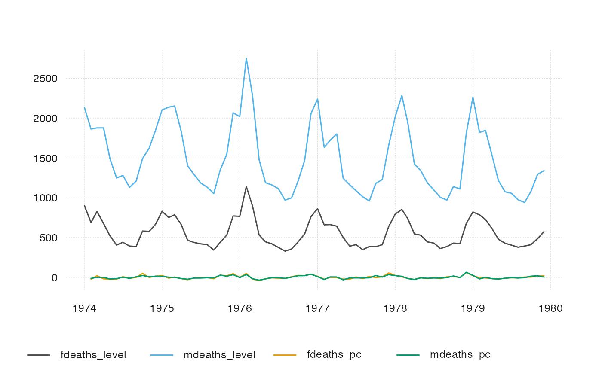

R/to_from_data.frame.R, R/to_from_data.table.R, R/to_from_tibble.R, and 9 more
ts_ts.Rdtsbox is built around a set of converters, which convert time series
stored as ts, xts, zoo, data.frame, data.table, tbl, tbl_ts,
tbl_time, tis, irts or timeSeries to each other.
ts_data.frame(x)
ts_df(x)
ts_data.table(x)
ts_dt(x)
ts_tbl(x)
ts_tibbletime(x)
ts_timeSeries(x)
ts_tis(x)
ts_ts(x)
ts_irts(x)
ts_tsibble(x)
ts_tslist(x)
ts_xts(x)
ts_zoo(x)ts-boxable time series, an object of class ts, xts, zoo,
data.frame, data.table, tbl, tbl_ts, tbl_time, tis, irts or
timeSeries.
ts-boxable time series of the desired class, an object of class ts,
xts, zoo, data.frame, data.table, tbl, tbl_ts, tbl_time, tis,
irts or timeSeries.
In data frames, multiple time series will be stored in a 'long' format. tsbox detects a value, a time and zero to several id columns. Column detection is done in the following order:
Starting on the right, the first first numeric or integer column
is used as value column.
Using the remaining columns, and starting on the right again, the first
Date, POSIXct, numeric or character column is used as
time column. character strings are parsed by anytime::anytime().
The time stamp, time, indicates the beginning of a period.
All remaining columns are id columns. Each unique combination of id columns points to a time series.
Alternatively, the time column and the value column to be
explicitly named as time and value. If explicit names are used, the
column order will be ignored.
Whenever possible, tsbox relies on heuristic time conversion. When a
monthly "ts" time series, e.g., AirPassengers, is converted to a data
frame, each time stamp (of class "Date") is the first day of the month. In
most circumstances, this reflects the actual meaning of the data stored in a
"ts" object. Technically, of course, this is not correct: "ts" objects
divide time in period of equal length, while in reality, February is shorter
than January. Heuristic conversion is done for frequencies of 0.1 (decades),
1 (years), 4 (quarters) and 12 (month).
For other frequencies, e.g. 260, of EuStockMarkets, tsbox uses exact
time conversion. The year is divided into 260 equally long units, and time
stamp of a period will be a point in time (of class "POSIXct").
x.ts <- ts_c(mdeaths, fdeaths)
x.ts
#> mdeaths fdeaths
#> Jan 1974 2134 901
#> Feb 1974 1863 689
#> Mar 1974 1877 827
#> Apr 1974 1877 677
#> May 1974 1492 522
#> Jun 1974 1249 406
#> Jul 1974 1280 441
#> Aug 1974 1131 393
#> Sep 1974 1209 387
#> Oct 1974 1492 582
#> Nov 1974 1621 578
#> Dec 1974 1846 666
#> Jan 1975 2103 830
#> Feb 1975 2137 752
#> Mar 1975 2153 785
#> Apr 1975 1833 664
#> May 1975 1403 467
#> Jun 1975 1288 438
#> Jul 1975 1186 421
#> Aug 1975 1133 412
#> Sep 1975 1053 343
#> Oct 1975 1347 440
#> Nov 1975 1545 531
#> Dec 1975 2066 771
#> Jan 1976 2020 767
#> Feb 1976 2750 1141
#> Mar 1976 2283 896
#> Apr 1976 1479 532
#> May 1976 1189 447
#> Jun 1976 1160 420
#> Jul 1976 1113 376
#> Aug 1976 970 330
#> Sep 1976 999 357
#> Oct 1976 1208 445
#> Nov 1976 1467 546
#> Dec 1976 2059 764
#> Jan 1977 2240 862
#> Feb 1977 1634 660
#> Mar 1977 1722 663
#> Apr 1977 1801 643
#> May 1977 1246 502
#> Jun 1977 1162 392
#> Jul 1977 1087 411
#> Aug 1977 1013 348
#> Sep 1977 959 387
#> Oct 1977 1179 385
#> Nov 1977 1229 411
#> Dec 1977 1655 638
#> Jan 1978 2019 796
#> Feb 1978 2284 853
#> Mar 1978 1942 737
#> Apr 1978 1423 546
#> May 1978 1340 530
#> Jun 1978 1187 446
#> Jul 1978 1098 431
#> Aug 1978 1004 362
#> Sep 1978 970 387
#> Oct 1978 1140 430
#> Nov 1978 1110 425
#> Dec 1978 1812 679
#> Jan 1979 2263 821
#> Feb 1979 1820 785
#> Mar 1979 1846 727
#> Apr 1979 1531 612
#> May 1979 1215 478
#> Jun 1979 1075 429
#> Jul 1979 1056 405
#> Aug 1979 975 379
#> Sep 1979 940 393
#> Oct 1979 1081 411
#> Nov 1979 1294 487
#> Dec 1979 1341 574
ts_df(x.ts)
#> id time value
#> 1 mdeaths 1974-01-01 2134
#> 2 mdeaths 1974-02-01 1863
#> 3 mdeaths 1974-03-01 1877
#> 4 mdeaths 1974-04-01 1877
#> 5 mdeaths 1974-05-01 1492
#> 6 mdeaths 1974-06-01 1249
#> 7 mdeaths 1974-07-01 1280
#> 8 mdeaths 1974-08-01 1131
#> 9 mdeaths 1974-09-01 1209
#> 10 mdeaths 1974-10-01 1492
#> 11 mdeaths 1974-11-01 1621
#> 12 mdeaths 1974-12-01 1846
#> 13 mdeaths 1975-01-01 2103
#> 14 mdeaths 1975-02-01 2137
#> 15 mdeaths 1975-03-01 2153
#> 16 mdeaths 1975-04-01 1833
#> 17 mdeaths 1975-05-01 1403
#> 18 mdeaths 1975-06-01 1288
#> 19 mdeaths 1975-07-01 1186
#> 20 mdeaths 1975-08-01 1133
#> 21 mdeaths 1975-09-01 1053
#> 22 mdeaths 1975-10-01 1347
#> 23 mdeaths 1975-11-01 1545
#> 24 mdeaths 1975-12-01 2066
#> 25 mdeaths 1976-01-01 2020
#> 26 mdeaths 1976-02-01 2750
#> 27 mdeaths 1976-03-01 2283
#> 28 mdeaths 1976-04-01 1479
#> 29 mdeaths 1976-05-01 1189
#> 30 mdeaths 1976-06-01 1160
#> 31 mdeaths 1976-07-01 1113
#> 32 mdeaths 1976-08-01 970
#> 33 mdeaths 1976-09-01 999
#> 34 mdeaths 1976-10-01 1208
#> 35 mdeaths 1976-11-01 1467
#> 36 mdeaths 1976-12-01 2059
#> 37 mdeaths 1977-01-01 2240
#> 38 mdeaths 1977-02-01 1634
#> 39 mdeaths 1977-03-01 1722
#> 40 mdeaths 1977-04-01 1801
#> 41 mdeaths 1977-05-01 1246
#> 42 mdeaths 1977-06-01 1162
#> 43 mdeaths 1977-07-01 1087
#> 44 mdeaths 1977-08-01 1013
#> 45 mdeaths 1977-09-01 959
#> 46 mdeaths 1977-10-01 1179
#> 47 mdeaths 1977-11-01 1229
#> 48 mdeaths 1977-12-01 1655
#> 49 mdeaths 1978-01-01 2019
#> 50 mdeaths 1978-02-01 2284
#> 51 mdeaths 1978-03-01 1942
#> 52 mdeaths 1978-04-01 1423
#> 53 mdeaths 1978-05-01 1340
#> 54 mdeaths 1978-06-01 1187
#> 55 mdeaths 1978-07-01 1098
#> 56 mdeaths 1978-08-01 1004
#> 57 mdeaths 1978-09-01 970
#> 58 mdeaths 1978-10-01 1140
#> 59 mdeaths 1978-11-01 1110
#> 60 mdeaths 1978-12-01 1812
#> 61 mdeaths 1979-01-01 2263
#> 62 mdeaths 1979-02-01 1820
#> 63 mdeaths 1979-03-01 1846
#> 64 mdeaths 1979-04-01 1531
#> 65 mdeaths 1979-05-01 1215
#> 66 mdeaths 1979-06-01 1075
#> 67 mdeaths 1979-07-01 1056
#> 68 mdeaths 1979-08-01 975
#> 69 mdeaths 1979-09-01 940
#> 70 mdeaths 1979-10-01 1081
#> 71 mdeaths 1979-11-01 1294
#> 72 mdeaths 1979-12-01 1341
#> 73 fdeaths 1974-01-01 901
#> 74 fdeaths 1974-02-01 689
#> 75 fdeaths 1974-03-01 827
#> 76 fdeaths 1974-04-01 677
#> 77 fdeaths 1974-05-01 522
#> 78 fdeaths 1974-06-01 406
#> 79 fdeaths 1974-07-01 441
#> 80 fdeaths 1974-08-01 393
#> 81 fdeaths 1974-09-01 387
#> 82 fdeaths 1974-10-01 582
#> 83 fdeaths 1974-11-01 578
#> 84 fdeaths 1974-12-01 666
#> 85 fdeaths 1975-01-01 830
#> 86 fdeaths 1975-02-01 752
#> 87 fdeaths 1975-03-01 785
#> 88 fdeaths 1975-04-01 664
#> 89 fdeaths 1975-05-01 467
#> 90 fdeaths 1975-06-01 438
#> 91 fdeaths 1975-07-01 421
#> 92 fdeaths 1975-08-01 412
#> 93 fdeaths 1975-09-01 343
#> 94 fdeaths 1975-10-01 440
#> 95 fdeaths 1975-11-01 531
#> 96 fdeaths 1975-12-01 771
#> 97 fdeaths 1976-01-01 767
#> 98 fdeaths 1976-02-01 1141
#> 99 fdeaths 1976-03-01 896
#> 100 fdeaths 1976-04-01 532
#> 101 fdeaths 1976-05-01 447
#> 102 fdeaths 1976-06-01 420
#> 103 fdeaths 1976-07-01 376
#> 104 fdeaths 1976-08-01 330
#> 105 fdeaths 1976-09-01 357
#> 106 fdeaths 1976-10-01 445
#> 107 fdeaths 1976-11-01 546
#> 108 fdeaths 1976-12-01 764
#> 109 fdeaths 1977-01-01 862
#> 110 fdeaths 1977-02-01 660
#> 111 fdeaths 1977-03-01 663
#> 112 fdeaths 1977-04-01 643
#> 113 fdeaths 1977-05-01 502
#> 114 fdeaths 1977-06-01 392
#> 115 fdeaths 1977-07-01 411
#> 116 fdeaths 1977-08-01 348
#> 117 fdeaths 1977-09-01 387
#> 118 fdeaths 1977-10-01 385
#> 119 fdeaths 1977-11-01 411
#> 120 fdeaths 1977-12-01 638
#> 121 fdeaths 1978-01-01 796
#> 122 fdeaths 1978-02-01 853
#> 123 fdeaths 1978-03-01 737
#> 124 fdeaths 1978-04-01 546
#> 125 fdeaths 1978-05-01 530
#> 126 fdeaths 1978-06-01 446
#> 127 fdeaths 1978-07-01 431
#> 128 fdeaths 1978-08-01 362
#> 129 fdeaths 1978-09-01 387
#> 130 fdeaths 1978-10-01 430
#> 131 fdeaths 1978-11-01 425
#> 132 fdeaths 1978-12-01 679
#> 133 fdeaths 1979-01-01 821
#> 134 fdeaths 1979-02-01 785
#> 135 fdeaths 1979-03-01 727
#> 136 fdeaths 1979-04-01 612
#> 137 fdeaths 1979-05-01 478
#> 138 fdeaths 1979-06-01 429
#> 139 fdeaths 1979-07-01 405
#> 140 fdeaths 1979-08-01 379
#> 141 fdeaths 1979-09-01 393
#> 142 fdeaths 1979-10-01 411
#> 143 fdeaths 1979-11-01 487
#> 144 fdeaths 1979-12-01 574
suppressMessages(library(dplyr))
ts_tbl(x.ts)
#> # A tibble: 144 × 3
#> id time value
#> <chr> <date> <dbl>
#> 1 mdeaths 1974-01-01 2134
#> 2 mdeaths 1974-02-01 1863
#> 3 mdeaths 1974-03-01 1877
#> 4 mdeaths 1974-04-01 1877
#> 5 mdeaths 1974-05-01 1492
#> 6 mdeaths 1974-06-01 1249
#> 7 mdeaths 1974-07-01 1280
#> 8 mdeaths 1974-08-01 1131
#> 9 mdeaths 1974-09-01 1209
#> 10 mdeaths 1974-10-01 1492
#> # … with 134 more rows
suppressMessages(library(data.table))
ts_dt(x.ts)
#> id time value
#> 1: mdeaths 1974-01-01 2134
#> 2: mdeaths 1974-02-01 1863
#> 3: mdeaths 1974-03-01 1877
#> 4: mdeaths 1974-04-01 1877
#> 5: mdeaths 1974-05-01 1492
#> ---
#> 140: fdeaths 1979-08-01 379
#> 141: fdeaths 1979-09-01 393
#> 142: fdeaths 1979-10-01 411
#> 143: fdeaths 1979-11-01 487
#> 144: fdeaths 1979-12-01 574
suppressMessages(library(xts))
ts_xts(x.ts)
#> mdeaths fdeaths
#> 1974-01-01 2134 901
#> 1974-02-01 1863 689
#> 1974-03-01 1877 827
#> 1974-04-01 1877 677
#> 1974-05-01 1492 522
#> 1974-06-01 1249 406
#> 1974-07-01 1280 441
#> 1974-08-01 1131 393
#> 1974-09-01 1209 387
#> 1974-10-01 1492 582
#> 1974-11-01 1621 578
#> 1974-12-01 1846 666
#> 1975-01-01 2103 830
#> 1975-02-01 2137 752
#> 1975-03-01 2153 785
#> 1975-04-01 1833 664
#> 1975-05-01 1403 467
#> 1975-06-01 1288 438
#> 1975-07-01 1186 421
#> 1975-08-01 1133 412
#> 1975-09-01 1053 343
#> 1975-10-01 1347 440
#> 1975-11-01 1545 531
#> 1975-12-01 2066 771
#> 1976-01-01 2020 767
#> 1976-02-01 2750 1141
#> 1976-03-01 2283 896
#> 1976-04-01 1479 532
#> 1976-05-01 1189 447
#> 1976-06-01 1160 420
#> 1976-07-01 1113 376
#> 1976-08-01 970 330
#> 1976-09-01 999 357
#> 1976-10-01 1208 445
#> 1976-11-01 1467 546
#> 1976-12-01 2059 764
#> 1977-01-01 2240 862
#> 1977-02-01 1634 660
#> 1977-03-01 1722 663
#> 1977-04-01 1801 643
#> 1977-05-01 1246 502
#> 1977-06-01 1162 392
#> 1977-07-01 1087 411
#> 1977-08-01 1013 348
#> 1977-09-01 959 387
#> 1977-10-01 1179 385
#> 1977-11-01 1229 411
#> 1977-12-01 1655 638
#> 1978-01-01 2019 796
#> 1978-02-01 2284 853
#> 1978-03-01 1942 737
#> 1978-04-01 1423 546
#> 1978-05-01 1340 530
#> 1978-06-01 1187 446
#> 1978-07-01 1098 431
#> 1978-08-01 1004 362
#> 1978-09-01 970 387
#> 1978-10-01 1140 430
#> 1978-11-01 1110 425
#> 1978-12-01 1812 679
#> 1979-01-01 2263 821
#> 1979-02-01 1820 785
#> 1979-03-01 1846 727
#> 1979-04-01 1531 612
#> 1979-05-01 1215 478
#> 1979-06-01 1075 429
#> 1979-07-01 1056 405
#> 1979-08-01 975 379
#> 1979-09-01 940 393
#> 1979-10-01 1081 411
#> 1979-11-01 1294 487
#> 1979-12-01 1341 574
# heuristic time conversion
# 1 month: approx. 1/12 year
ts_df(AirPassengers)
#> time value
#> 1 1949-01-01 112
#> 2 1949-02-01 118
#> 3 1949-03-01 132
#> 4 1949-04-01 129
#> 5 1949-05-01 121
#> 6 1949-06-01 135
#> 7 1949-07-01 148
#> 8 1949-08-01 148
#> 9 1949-09-01 136
#> 10 1949-10-01 119
#> 11 1949-11-01 104
#> 12 1949-12-01 118
#> 13 1950-01-01 115
#> 14 1950-02-01 126
#> 15 1950-03-01 141
#> 16 1950-04-01 135
#> 17 1950-05-01 125
#> 18 1950-06-01 149
#> 19 1950-07-01 170
#> 20 1950-08-01 170
#> 21 1950-09-01 158
#> 22 1950-10-01 133
#> 23 1950-11-01 114
#> 24 1950-12-01 140
#> 25 1951-01-01 145
#> 26 1951-02-01 150
#> 27 1951-03-01 178
#> 28 1951-04-01 163
#> 29 1951-05-01 172
#> 30 1951-06-01 178
#> 31 1951-07-01 199
#> 32 1951-08-01 199
#> 33 1951-09-01 184
#> 34 1951-10-01 162
#> 35 1951-11-01 146
#> 36 1951-12-01 166
#> 37 1952-01-01 171
#> 38 1952-02-01 180
#> 39 1952-03-01 193
#> 40 1952-04-01 181
#> 41 1952-05-01 183
#> 42 1952-06-01 218
#> 43 1952-07-01 230
#> 44 1952-08-01 242
#> 45 1952-09-01 209
#> 46 1952-10-01 191
#> 47 1952-11-01 172
#> 48 1952-12-01 194
#> 49 1953-01-01 196
#> 50 1953-02-01 196
#> 51 1953-03-01 236
#> 52 1953-04-01 235
#> 53 1953-05-01 229
#> 54 1953-06-01 243
#> 55 1953-07-01 264
#> 56 1953-08-01 272
#> 57 1953-09-01 237
#> 58 1953-10-01 211
#> 59 1953-11-01 180
#> 60 1953-12-01 201
#> 61 1954-01-01 204
#> 62 1954-02-01 188
#> 63 1954-03-01 235
#> 64 1954-04-01 227
#> 65 1954-05-01 234
#> 66 1954-06-01 264
#> 67 1954-07-01 302
#> 68 1954-08-01 293
#> 69 1954-09-01 259
#> 70 1954-10-01 229
#> 71 1954-11-01 203
#> 72 1954-12-01 229
#> 73 1955-01-01 242
#> 74 1955-02-01 233
#> 75 1955-03-01 267
#> 76 1955-04-01 269
#> 77 1955-05-01 270
#> 78 1955-06-01 315
#> 79 1955-07-01 364
#> 80 1955-08-01 347
#> 81 1955-09-01 312
#> 82 1955-10-01 274
#> 83 1955-11-01 237
#> 84 1955-12-01 278
#> 85 1956-01-01 284
#> 86 1956-02-01 277
#> 87 1956-03-01 317
#> 88 1956-04-01 313
#> 89 1956-05-01 318
#> 90 1956-06-01 374
#> 91 1956-07-01 413
#> 92 1956-08-01 405
#> 93 1956-09-01 355
#> 94 1956-10-01 306
#> 95 1956-11-01 271
#> 96 1956-12-01 306
#> 97 1957-01-01 315
#> 98 1957-02-01 301
#> 99 1957-03-01 356
#> 100 1957-04-01 348
#> 101 1957-05-01 355
#> 102 1957-06-01 422
#> 103 1957-07-01 465
#> 104 1957-08-01 467
#> 105 1957-09-01 404
#> 106 1957-10-01 347
#> 107 1957-11-01 305
#> 108 1957-12-01 336
#> 109 1958-01-01 340
#> 110 1958-02-01 318
#> 111 1958-03-01 362
#> 112 1958-04-01 348
#> 113 1958-05-01 363
#> 114 1958-06-01 435
#> 115 1958-07-01 491
#> 116 1958-08-01 505
#> 117 1958-09-01 404
#> 118 1958-10-01 359
#> 119 1958-11-01 310
#> 120 1958-12-01 337
#> 121 1959-01-01 360
#> 122 1959-02-01 342
#> 123 1959-03-01 406
#> 124 1959-04-01 396
#> 125 1959-05-01 420
#> 126 1959-06-01 472
#> 127 1959-07-01 548
#> 128 1959-08-01 559
#> 129 1959-09-01 463
#> 130 1959-10-01 407
#> 131 1959-11-01 362
#> 132 1959-12-01 405
#> 133 1960-01-01 417
#> 134 1960-02-01 391
#> 135 1960-03-01 419
#> 136 1960-04-01 461
#> 137 1960-05-01 472
#> 138 1960-06-01 535
#> 139 1960-07-01 622
#> 140 1960-08-01 606
#> 141 1960-09-01 508
#> 142 1960-10-01 461
#> 143 1960-11-01 390
#> 144 1960-12-01 432
# exact time conversion
# 1 trading day: exactly 1/260 year
ts_df(EuStockMarkets)
#> id time value
#> 1 DAX 1991-07-01 02:18:27 1628.75
#> 2 DAX 1991-07-02 12:01:32 1613.63
#> 3 DAX 1991-07-03 21:44:38 1606.51
#> 4 DAX 1991-07-05 07:27:43 1621.04
#> 5 DAX 1991-07-06 17:10:48 1618.16
#> 6 DAX 1991-07-08 02:53:53 1610.61
#> 7 DAX 1991-07-09 12:36:59 1630.75
#> 8 DAX 1991-07-10 22:20:04 1640.17
#> 9 DAX 1991-07-12 08:03:09 1635.47
#> 10 DAX 1991-07-13 17:46:15 1645.89
#> 11 DAX 1991-07-15 03:29:20 1647.84
#> 12 DAX 1991-07-16 13:12:25 1638.35
#> 13 DAX 1991-07-17 22:55:30 1629.93
#> 14 DAX 1991-07-19 08:38:36 1621.49
#> 15 DAX 1991-07-20 18:21:41 1624.74
#> 16 DAX 1991-07-22 04:04:46 1627.63
#> 17 DAX 1991-07-23 13:47:51 1631.99
#> 18 DAX 1991-07-24 23:30:57 1621.18
#> 19 DAX 1991-07-26 09:14:02 1613.42
#> 20 DAX 1991-07-27 18:57:07 1604.95
#> 21 DAX 1991-07-29 04:40:12 1605.75
#> 22 DAX 1991-07-30 14:23:18 1616.67
#> 23 DAX 1991-08-01 00:06:23 1619.29
#> 24 DAX 1991-08-02 09:49:28 1620.49
#> 25 DAX 1991-08-03 19:32:33 1619.67
#> 26 DAX 1991-08-05 05:15:39 1623.07
#> 27 DAX 1991-08-06 14:58:44 1613.98
#> 28 DAX 1991-08-08 00:41:49 1631.87
#> 29 DAX 1991-08-09 10:24:54 1630.37
#> 30 DAX 1991-08-10 20:08:00 1633.47
#> 31 DAX 1991-08-12 05:51:05 1626.55
#> 32 DAX 1991-08-13 15:34:10 1650.43
#> 33 DAX 1991-08-15 01:17:16 1650.06
#> 34 DAX 1991-08-16 11:00:21 1654.11
#> 35 DAX 1991-08-17 20:43:26 1653.60
#> 36 DAX 1991-08-19 06:26:31 1501.82
#> 37 DAX 1991-08-20 16:09:37 1524.28
#> 38 DAX 1991-08-22 01:52:42 1603.65
#> 39 DAX 1991-08-23 11:35:47 1622.49
#> 40 DAX 1991-08-24 21:18:52 1636.68
#> 41 DAX 1991-08-26 07:01:58 1652.10
#> 42 DAX 1991-08-27 16:45:03 1645.81
#> 43 DAX 1991-08-29 02:28:08 1650.36
#> 44 DAX 1991-08-30 12:11:13 1651.55
#> 45 DAX 1991-08-31 21:54:19 1649.88
#> 46 DAX 1991-09-02 07:37:24 1653.52
#> 47 DAX 1991-09-03 17:20:29 1657.51
#> 48 DAX 1991-09-05 03:03:34 1649.55
#> 49 DAX 1991-09-06 12:46:40 1649.09
#> 50 DAX 1991-09-07 22:29:45 1646.41
#> 51 DAX 1991-09-09 08:12:50 1638.65
#> 52 DAX 1991-09-10 17:55:55 1625.80
#> 53 DAX 1991-09-12 03:39:01 1628.64
#> 54 DAX 1991-09-13 13:22:06 1632.22
#> 55 DAX 1991-09-14 23:05:11 1633.65
#> 56 DAX 1991-09-16 08:48:17 1631.17
#> 57 DAX 1991-09-17 18:31:22 1635.80
#> 58 DAX 1991-09-19 04:14:27 1621.27
#> 59 DAX 1991-09-20 13:57:32 1624.70
#> 60 DAX 1991-09-21 23:40:38 1616.13
#> 61 DAX 1991-09-23 09:23:43 1618.12
#> 62 DAX 1991-09-24 19:06:48 1627.80
#> 63 DAX 1991-09-26 04:49:53 1625.79
#> 64 DAX 1991-09-27 14:32:59 1614.80
#> 65 DAX 1991-09-29 00:16:04 1612.80
#> 66 DAX 1991-09-30 09:59:09 1605.47
#> 67 DAX 1991-10-01 19:42:14 1609.32
#> 68 DAX 1991-10-03 05:25:20 1607.48
#> 69 DAX 1991-10-04 15:08:25 1607.48
#> 70 DAX 1991-10-06 00:51:30 1604.89
#> 71 DAX 1991-10-07 10:34:35 1589.12
#> 72 DAX 1991-10-08 20:17:41 1582.27
#> 73 DAX 1991-10-10 06:00:46 1567.99
#> 74 DAX 1991-10-11 15:43:51 1568.16
#> 75 DAX 1991-10-13 01:26:56 1569.71
#> 76 DAX 1991-10-14 11:10:02 1571.74
#> 77 DAX 1991-10-15 20:53:07 1585.41
#> 78 DAX 1991-10-17 06:36:12 1570.01
#> 79 DAX 1991-10-18 16:19:18 1561.89
#> 80 DAX 1991-10-20 02:02:23 1565.18
#> 81 DAX 1991-10-21 11:45:28 1570.34
#> 82 DAX 1991-10-22 21:28:33 1577.00
#> 83 DAX 1991-10-24 07:11:39 1590.29
#> 84 DAX 1991-10-25 16:54:44 1572.72
#> 85 DAX 1991-10-27 02:37:49 1572.07
#> 86 DAX 1991-10-28 12:20:54 1579.19
#> 87 DAX 1991-10-29 22:04:00 1588.73
#> 88 DAX 1991-10-31 07:47:05 1586.01
#> 89 DAX 1991-11-01 17:30:10 1579.77
#> 90 DAX 1991-11-03 03:13:15 1572.58
#> 91 DAX 1991-11-04 12:56:21 1568.09
#> 92 DAX 1991-11-05 22:39:26 1578.21
#> 93 DAX 1991-11-07 08:22:31 1573.94
#> 94 DAX 1991-11-08 18:05:36 1582.06
#> 95 DAX 1991-11-10 03:48:42 1610.18
#> 96 DAX 1991-11-11 13:31:47 1605.16
#> 97 DAX 1991-11-12 23:14:52 1623.84
#> 98 DAX 1991-11-14 08:57:57 1615.26
#> 99 DAX 1991-11-15 18:41:03 1627.08
#> 100 DAX 1991-11-17 04:24:08 1626.97
#> 101 DAX 1991-11-18 14:07:13 1605.70
#> 102 DAX 1991-11-19 23:50:19 1589.70
#> 103 DAX 1991-11-21 09:33:24 1589.70
#> 104 DAX 1991-11-22 19:16:29 1603.26
#> 105 DAX 1991-11-24 04:59:34 1599.75
#> 106 DAX 1991-11-25 14:42:40 1590.86
#> 107 DAX 1991-11-27 00:25:45 1603.50
#> 108 DAX 1991-11-28 10:08:50 1589.86
#> 109 DAX 1991-11-29 19:51:55 1587.92
#> 110 DAX 1991-12-01 05:35:01 1571.06
#> 111 DAX 1991-12-02 15:18:06 1549.81
#> 112 DAX 1991-12-04 01:01:11 1549.36
#> 113 DAX 1991-12-05 10:44:16 1554.65
#> 114 DAX 1991-12-06 20:27:22 1557.52
#> 115 DAX 1991-12-08 06:10:27 1555.31
#> 116 DAX 1991-12-09 15:53:32 1559.76
#> 117 DAX 1991-12-11 01:36:37 1548.44
#> 118 DAX 1991-12-12 11:19:43 1543.99
#> 119 DAX 1991-12-13 21:02:48 1550.21
#> 120 DAX 1991-12-15 06:45:53 1557.03
#> 121 DAX 1991-12-16 16:28:58 1551.78
#> 122 DAX 1991-12-18 02:12:04 1562.89
#> 123 DAX 1991-12-19 11:55:09 1570.28
#> 124 DAX 1991-12-20 21:38:14 1559.26
#> 125 DAX 1991-12-22 07:21:20 1545.87
#> 126 DAX 1991-12-23 17:04:25 1542.77
#> 127 DAX 1991-12-25 02:47:30 1542.77
#> 128 DAX 1991-12-26 12:30:35 1542.77
#> 129 DAX 1991-12-27 22:13:41 1542.77
#> 130 DAX 1991-12-29 07:56:46 1564.27
#> 131 DAX 1991-12-30 17:39:51 1577.26
#> 132 DAX 1992-01-01 03:22:56 1577.26
#> 133 DAX 1992-01-02 13:06:02 1577.26
#> 134 DAX 1992-01-03 22:49:07 1598.19
#> 135 DAX 1992-01-05 08:32:12 1604.05
#> 136 DAX 1992-01-06 18:15:17 1604.69
#> 137 DAX 1992-01-08 03:58:23 1593.65
#> 138 DAX 1992-01-09 13:41:28 1581.68
#> 139 DAX 1992-01-10 23:24:33 1599.14
#> 140 DAX 1992-01-12 09:07:38 1613.82
#> 141 DAX 1992-01-13 18:50:44 1620.45
#> 142 DAX 1992-01-15 04:33:49 1629.51
#> 143 DAX 1992-01-16 14:16:54 1663.70
#> 144 DAX 1992-01-18 00:00:00 1664.09
#> 145 DAX 1992-01-19 09:43:05 1669.29
#> 146 DAX 1992-01-20 19:26:10 1685.14
#> 147 DAX 1992-01-22 05:09:15 1687.07
#> 148 DAX 1992-01-23 14:52:21 1680.13
#> 149 DAX 1992-01-25 00:35:26 1671.84
#> 150 DAX 1992-01-26 10:18:31 1669.52
#> 151 DAX 1992-01-27 20:01:36 1686.71
#> 152 DAX 1992-01-29 05:44:42 1685.51
#> 153 DAX 1992-01-30 15:27:47 1671.01
#> 154 DAX 1992-02-01 01:10:52 1683.06
#> 155 DAX 1992-02-02 10:53:57 1685.70
#> 156 DAX 1992-02-03 20:37:03 1685.66
#> 157 DAX 1992-02-05 06:20:08 1678.77
#> 158 DAX 1992-02-06 16:03:13 1685.85
#> 159 DAX 1992-02-08 01:46:18 1683.71
#> 160 DAX 1992-02-09 11:29:24 1686.59
#> 161 DAX 1992-02-10 21:12:29 1683.73
#> 162 DAX 1992-02-12 06:55:34 1679.14
#> 163 DAX 1992-02-13 16:38:39 1685.03
#> 164 DAX 1992-02-15 02:21:45 1680.81
#> 165 DAX 1992-02-16 12:04:50 1676.17
#> 166 DAX 1992-02-17 21:47:55 1688.46
#> 167 DAX 1992-02-19 07:31:01 1696.55
#> 168 DAX 1992-02-20 17:14:06 1690.24
#> 169 DAX 1992-02-22 02:57:11 1711.35
#> 170 DAX 1992-02-23 12:40:16 1711.29
#> 171 DAX 1992-02-24 22:23:22 1729.86
#> 172 DAX 1992-02-26 08:06:27 1716.63
#> 173 DAX 1992-02-27 17:49:32 1743.36
#> 174 DAX 1992-02-29 03:32:37 1745.17
#> 175 DAX 1992-03-01 13:15:43 1746.76
#> 176 DAX 1992-03-02 22:58:48 1749.29
#> 177 DAX 1992-03-04 08:41:53 1763.86
#> 178 DAX 1992-03-05 18:24:58 1762.27
#> 179 DAX 1992-03-07 04:08:04 1762.29
#> 180 DAX 1992-03-08 13:51:09 1746.77
#> 181 DAX 1992-03-09 23:34:14 1753.50
#> 182 DAX 1992-03-11 09:17:19 1753.21
#> 183 DAX 1992-03-12 19:00:25 1739.88
#> 184 DAX 1992-03-14 04:43:30 1723.92
#> 185 DAX 1992-03-15 14:26:35 1734.42
#> 186 DAX 1992-03-17 00:09:40 1723.13
#> 187 DAX 1992-03-18 09:52:46 1732.92
#> 188 DAX 1992-03-19 19:35:51 1729.89
#> 189 DAX 1992-03-21 05:18:56 1725.74
#> 190 DAX 1992-03-22 15:02:02 1730.90
#> 191 DAX 1992-03-24 00:45:07 1714.17
#> 192 DAX 1992-03-25 10:28:12 1716.20
#> 193 DAX 1992-03-26 20:11:17 1719.06
#> 194 DAX 1992-03-28 05:54:23 1718.21
#> 195 DAX 1992-03-29 15:37:28 1698.84
#> 196 DAX 1992-03-31 01:20:33 1714.76
#> 197 DAX 1992-04-01 11:03:38 1718.35
#> 198 DAX 1992-04-02 20:46:44 1706.69
#> 199 DAX 1992-04-04 06:29:49 1723.37
#> 200 DAX 1992-04-05 16:12:54 1716.18
#> 201 DAX 1992-04-07 01:55:59 1738.78
#> 202 DAX 1992-04-08 11:39:05 1737.41
#> 203 DAX 1992-04-09 21:22:10 1714.77
#> 204 DAX 1992-04-11 07:05:15 1724.24
#> 205 DAX 1992-04-12 16:48:20 1733.77
#> 206 DAX 1992-04-14 02:31:26 1729.96
#> 207 DAX 1992-04-15 12:14:31 1734.46
#> 208 DAX 1992-04-16 21:57:36 1744.35
#> 209 DAX 1992-04-18 07:40:41 1746.88
#> 210 DAX 1992-04-19 17:23:47 1746.88
#> 211 DAX 1992-04-21 03:06:52 1746.88
#> 212 DAX 1992-04-22 12:49:57 1747.47
#> 213 DAX 1992-04-23 22:33:03 1753.10
#> 214 DAX 1992-04-25 08:16:08 1745.17
#> 215 DAX 1992-04-26 17:59:13 1745.72
#> 216 DAX 1992-04-28 03:42:18 1742.92
#> 217 DAX 1992-04-29 13:25:24 1731.68
#> 218 DAX 1992-04-30 23:08:29 1731.18
#> 219 DAX 1992-05-02 08:51:34 1728.09
#> 220 DAX 1992-05-03 18:34:39 1728.09
#> 221 DAX 1992-05-05 04:17:45 1731.29
#> 222 DAX 1992-05-06 14:00:50 1733.82
#> 223 DAX 1992-05-07 23:43:55 1745.78
#> 224 DAX 1992-05-09 09:27:00 1752.57
#> 225 DAX 1992-05-10 19:10:06 1748.13
#> 226 DAX 1992-05-12 04:53:11 1750.70
#> 227 DAX 1992-05-13 14:36:16 1747.91
#> 228 DAX 1992-05-15 00:19:21 1745.79
#> 229 DAX 1992-05-16 10:02:27 1735.34
#> 230 DAX 1992-05-17 19:45:32 1719.92
#> 231 DAX 1992-05-19 05:28:37 1763.59
#> 232 DAX 1992-05-20 15:11:42 1766.76
#> 233 DAX 1992-05-22 00:54:48 1785.40
#> 234 DAX 1992-05-23 10:37:53 1783.56
#> 235 DAX 1992-05-24 20:20:58 1804.42
#> 236 DAX 1992-05-26 06:04:04 1812.33
#> 237 DAX 1992-05-27 15:47:09 1799.51
#> 238 DAX 1992-05-29 01:30:14 1792.80
#> 239 DAX 1992-05-30 11:13:19 1792.80
#> 240 DAX 1992-05-31 20:56:25 1806.36
#> 241 DAX 1992-06-02 06:39:30 1798.23
#> 242 DAX 1992-06-03 16:22:35 1800.62
#> 243 DAX 1992-06-05 02:05:40 1786.19
#> 244 DAX 1992-06-06 11:48:46 1791.35
#> 245 DAX 1992-06-07 21:31:51 1789.05
#> 246 DAX 1992-06-09 07:14:56 1789.05
#> 247 DAX 1992-06-10 16:58:01 1784.71
#> 248 DAX 1992-06-12 02:41:07 1789.45
#> 249 DAX 1992-06-13 12:24:12 1779.74
#> 250 DAX 1992-06-14 22:07:17 1786.97
#> 251 DAX 1992-06-16 07:50:22 1773.25
#> 252 DAX 1992-06-17 17:33:28 1781.62
#> 253 DAX 1992-06-19 03:16:33 1773.75
#> 254 DAX 1992-06-20 12:59:38 1773.75
#> 255 DAX 1992-06-21 22:42:43 1776.34
#> 256 DAX 1992-06-23 08:25:49 1770.72
#> 257 DAX 1992-06-24 18:08:54 1772.39
#> 258 DAX 1992-06-26 03:51:59 1762.55
#> 259 DAX 1992-06-27 13:35:05 1764.35
#> 260 DAX 1992-06-28 23:18:10 1752.83
#> 261 DAX 1992-06-30 09:01:15 1755.98
#> 262 DAX 1992-07-01 18:44:20 1754.95
#> 263 DAX 1992-07-03 04:27:26 1759.90
#> 264 DAX 1992-07-04 14:10:31 1759.84
#> 265 DAX 1992-07-05 23:53:36 1776.50
#> 266 DAX 1992-07-07 09:36:41 1769.98
#> 267 DAX 1992-07-08 19:19:47 1766.98
#> 268 DAX 1992-07-10 05:02:52 1752.29
#> 269 DAX 1992-07-11 14:45:57 1760.17
#> 270 DAX 1992-07-13 00:29:02 1750.32
#> 271 DAX 1992-07-14 10:12:08 1731.44
#> 272 DAX 1992-07-15 19:55:13 1735.51
#> 273 DAX 1992-07-17 05:38:18 1733.84
#> 274 DAX 1992-07-18 15:21:23 1730.78
#> 275 DAX 1992-07-20 01:04:29 1699.46
#> 276 DAX 1992-07-21 10:47:34 1652.71
#> 277 DAX 1992-07-22 20:30:39 1654.09
#> 278 DAX 1992-07-24 06:13:44 1636.81
#> 279 DAX 1992-07-25 15:56:50 1622.81
#> 280 DAX 1992-07-27 01:39:55 1613.36
#> 281 DAX 1992-07-28 11:23:00 1617.78
#> 282 DAX 1992-07-29 21:06:06 1617.18
#> 283 DAX 1992-07-31 06:49:11 1637.62
#> 284 DAX 1992-08-01 16:32:16 1622.20
#> 285 DAX 1992-08-03 02:15:21 1608.49
#> 286 DAX 1992-08-04 11:58:27 1605.11
#> 287 DAX 1992-08-05 21:41:32 1609.61
#> 288 DAX 1992-08-07 07:24:37 1624.94
#> 289 DAX 1992-08-08 17:07:42 1618.07
#> 290 DAX 1992-08-10 02:50:48 1611.96
#> 291 DAX 1992-08-11 12:33:53 1578.95
#> 292 DAX 1992-08-12 22:16:58 1561.39
#> 293 DAX 1992-08-14 08:00:03 1547.87
#> 294 DAX 1992-08-15 17:43:09 1548.63
#> 295 DAX 1992-08-17 03:26:14 1560.16
#> 296 DAX 1992-08-18 13:09:19 1554.76
#> 297 DAX 1992-08-19 22:52:24 1531.87
#> 298 DAX 1992-08-21 08:35:30 1526.14
#> 299 DAX 1992-08-22 18:18:35 1509.03
#> 300 DAX 1992-08-24 04:01:40 1530.03
#> 301 DAX 1992-08-25 13:44:45 1484.97
#> 302 DAX 1992-08-26 23:27:51 1464.03
#> 303 DAX 1992-08-28 09:10:56 1475.11
#> 304 DAX 1992-08-29 18:54:01 1516.12
#> 305 DAX 1992-08-31 04:37:07 1519.69
#> 306 DAX 1992-09-01 14:20:12 1529.97
#> 307 DAX 1992-09-03 00:03:17 1516.44
#> 308 DAX 1992-09-04 09:46:22 1515.53
#> 309 DAX 1992-09-05 19:29:28 1543.89
#> 310 DAX 1992-09-07 05:12:33 1534.72
#> 311 DAX 1992-09-08 14:55:38 1538.66
#> 312 DAX 1992-09-10 00:38:43 1536.71
#> 313 DAX 1992-09-11 10:21:49 1523.83
#> 314 DAX 1992-09-12 20:04:54 1527.10
#> 315 DAX 1992-09-14 05:47:59 1530.20
#> 316 DAX 1992-09-15 15:31:04 1601.50
#> 317 DAX 1992-09-17 01:14:10 1580.29
#> 318 DAX 1992-09-18 10:57:15 1595.09
#> 319 DAX 1992-09-19 20:40:20 1579.47
#> 320 DAX 1992-09-21 06:23:25 1600.59
#> 321 DAX 1992-09-22 16:06:31 1566.00
#> 322 DAX 1992-09-24 01:49:36 1557.01
#> 323 DAX 1992-09-25 11:32:41 1542.74
#> 324 DAX 1992-09-26 21:15:46 1536.30
#> 325 DAX 1992-09-28 06:58:52 1510.66
#> 326 DAX 1992-09-29 16:41:57 1481.03
#> 327 DAX 1992-10-01 02:25:02 1483.83
#> 328 DAX 1992-10-02 12:08:08 1470.09
#> 329 DAX 1992-10-03 21:51:13 1484.78
#> 330 DAX 1992-10-05 07:34:18 1475.41
#> 331 DAX 1992-10-06 17:17:23 1402.34
#> 332 DAX 1992-10-08 03:00:29 1421.49
#> 333 DAX 1992-10-09 12:43:34 1434.61
#> 334 DAX 1992-10-10 22:26:39 1446.32
#> 335 DAX 1992-10-12 08:09:44 1437.65
#> 336 DAX 1992-10-13 17:52:50 1441.57
#> 337 DAX 1992-10-15 03:35:55 1471.64
#> 338 DAX 1992-10-16 13:19:00 1453.95
#> 339 DAX 1992-10-17 23:02:05 1453.79
#> 340 DAX 1992-10-19 08:45:11 1458.02
#> 341 DAX 1992-10-20 18:28:16 1479.59
#> 342 DAX 1992-10-22 04:11:21 1504.89
#> 343 DAX 1992-10-23 13:54:26 1496.54
#> 344 DAX 1992-10-24 23:37:32 1511.00
#> 345 DAX 1992-10-26 09:20:37 1528.86
#> 346 DAX 1992-10-27 19:03:42 1534.02
#> 347 DAX 1992-10-29 04:46:47 1536.60
#> 348 DAX 1992-10-30 14:29:53 1508.19
#> 349 DAX 1992-11-01 00:12:58 1493.54
#> 350 DAX 1992-11-02 09:56:03 1489.68
#> 351 DAX 1992-11-03 19:39:09 1482.44
#> 352 DAX 1992-11-05 05:22:14 1483.34
#> 353 DAX 1992-11-06 15:05:19 1470.57
#> 354 DAX 1992-11-08 00:48:24 1484.84
#> 355 DAX 1992-11-09 10:31:30 1487.71
#> 356 DAX 1992-11-10 20:14:35 1508.63
#> 357 DAX 1992-11-12 05:57:40 1515.27
#> 358 DAX 1992-11-13 15:40:45 1509.84
#> 359 DAX 1992-11-15 01:23:51 1542.28
#> 360 DAX 1992-11-16 11:06:56 1541.79
#> 361 DAX 1992-11-17 20:50:01 1542.48
#> 362 DAX 1992-11-19 06:33:06 1550.27
#> 363 DAX 1992-11-20 16:16:12 1550.27
#> 364 DAX 1992-11-22 01:59:17 1543.37
#> 365 DAX 1992-11-23 11:42:22 1547.84
#> 366 DAX 1992-11-24 21:25:27 1523.62
#> 367 DAX 1992-11-26 07:08:33 1526.68
#> 368 DAX 1992-11-27 16:51:38 1513.42
#> 369 DAX 1992-11-29 02:34:43 1523.02
#> 370 DAX 1992-11-30 12:17:48 1529.69
#> 371 DAX 1992-12-01 22:00:54 1545.12
#> 372 DAX 1992-12-03 07:43:59 1546.82
#> 373 DAX 1992-12-04 17:27:04 1528.12
#> 374 DAX 1992-12-06 03:10:10 1530.65
#> 375 DAX 1992-12-07 12:53:15 1526.25
#> 376 DAX 1992-12-08 22:36:20 1519.48
#> 377 DAX 1992-12-10 08:19:25 1506.65
#> 378 DAX 1992-12-11 18:02:31 1504.30
#> 379 DAX 1992-12-13 03:45:36 1480.65
#> 380 DAX 1992-12-14 13:28:41 1476.70
#> 381 DAX 1992-12-15 23:11:46 1478.07
#> 382 DAX 1992-12-17 08:54:52 1479.62
#> 383 DAX 1992-12-18 18:37:57 1477.55
#> 384 DAX 1992-12-20 04:21:02 1472.59
#> 385 DAX 1992-12-21 14:04:07 1495.60
#> 386 DAX 1992-12-22 23:47:13 1517.45
#> 387 DAX 1992-12-24 09:30:18 1520.93
#> 388 DAX 1992-12-25 19:13:23 1527.06
#> 389 DAX 1992-12-27 04:56:28 1527.06
#> 390 DAX 1992-12-28 14:39:34 1527.06
#> 391 DAX 1992-12-30 00:22:39 1547.51
#> 392 DAX 1992-12-31 10:05:44 1545.82
#> 393 DAX 1993-01-01 19:48:49 1538.43
#> 394 DAX 1993-01-03 05:31:55 1538.43
#> 395 DAX 1993-01-04 15:15:00 1538.43
#> 396 DAX 1993-01-06 00:58:05 1538.04
#> 397 DAX 1993-01-07 10:41:11 1554.03
#> 398 DAX 1993-01-08 20:24:16 1551.17
#> 399 DAX 1993-01-10 06:07:21 1538.37
#> 400 DAX 1993-01-11 15:50:26 1529.10
#> 401 DAX 1993-01-13 01:33:32 1522.26
#> 402 DAX 1993-01-14 11:16:37 1533.79
#> 403 DAX 1993-01-15 20:59:42 1510.18
#> 404 DAX 1993-01-17 06:42:47 1526.91
#> 405 DAX 1993-01-18 16:25:53 1555.52
#> 406 DAX 1993-01-20 02:08:58 1581.49
#> 407 DAX 1993-01-21 11:52:03 1572.61
#> 408 DAX 1993-01-22 21:35:08 1572.69
#> 409 DAX 1993-01-24 07:18:14 1580.64
#> 410 DAX 1993-01-25 17:01:19 1593.35
#> 411 DAX 1993-01-27 02:44:24 1571.28
#> 412 DAX 1993-01-28 12:27:29 1575.59
#> 413 DAX 1993-01-29 22:10:35 1561.78
#> 414 DAX 1993-01-31 07:53:40 1572.68
#> 415 DAX 1993-02-01 17:36:45 1574.04
#> 416 DAX 1993-02-03 03:19:50 1590.33
#> 417 DAX 1993-02-04 13:02:56 1584.14
#> 418 DAX 1993-02-05 22:46:01 1605.91
#> 419 DAX 1993-02-07 08:29:06 1615.98
#> 420 DAX 1993-02-08 18:12:12 1643.83
#> 421 DAX 1993-02-10 03:55:17 1646.85
#> 422 DAX 1993-02-11 13:38:22 1639.12
#> 423 DAX 1993-02-12 23:21:27 1642.80
#> 424 DAX 1993-02-14 09:04:33 1659.07
#> 425 DAX 1993-02-15 18:47:38 1649.64
#> 426 DAX 1993-02-17 04:30:43 1674.93
#> 427 DAX 1993-02-18 14:13:48 1651.60
#> 428 DAX 1993-02-19 23:56:54 1656.35
#> 429 DAX 1993-02-21 09:39:59 1670.90
#> 430 DAX 1993-02-22 19:23:04 1683.30
#> 431 DAX 1993-02-24 05:06:09 1679.41
#> 432 DAX 1993-02-25 14:49:15 1658.09
#> 433 DAX 1993-02-27 00:32:20 1652.92
#> 434 DAX 1993-02-28 10:15:25 1661.96
#> 435 DAX 1993-03-01 19:58:30 1680.02
#> 436 DAX 1993-03-03 05:41:36 1691.37
#> 437 DAX 1993-03-04 15:24:41 1701.46
#> 438 DAX 1993-03-06 01:07:46 1690.48
#> 439 DAX 1993-03-07 10:50:51 1685.46
#> 440 DAX 1993-03-08 20:33:57 1686.15
#> 441 DAX 1993-03-10 06:17:02 1702.27
#> 442 DAX 1993-03-11 16:00:07 1711.91
#> 443 DAX 1993-03-13 01:43:13 1714.48
#> 444 DAX 1993-03-14 11:26:18 1708.65
#> 445 DAX 1993-03-15 21:09:23 1688.74
#> 446 DAX 1993-03-17 06:52:28 1705.05
#> 447 DAX 1993-03-18 16:35:34 1700.28
#> 448 DAX 1993-03-20 02:18:39 1689.71
#> 449 DAX 1993-03-21 12:01:44 1696.38
#> 450 DAX 1993-03-22 21:44:49 1686.57
#> 451 DAX 1993-03-24 07:27:55 1656.59
#> 452 DAX 1993-03-25 17:11:00 1653.20
#> 453 DAX 1993-03-27 02:54:05 1666.72
#> 454 DAX 1993-03-28 12:37:10 1663.27
#> 455 DAX 1993-03-29 22:20:16 1667.26
#> 456 DAX 1993-03-31 08:03:21 1675.18
#> 457 DAX 1993-04-01 17:46:26 1686.64
#> 458 DAX 1993-04-03 03:29:31 1676.84
#> 459 DAX 1993-04-04 13:12:37 1670.04
#> 460 DAX 1993-04-05 22:55:42 1657.06
#> 461 DAX 1993-04-07 08:38:47 1658.36
#> 462 DAX 1993-04-08 18:21:52 1667.64
#> 463 DAX 1993-04-10 04:04:58 1654.60
#> 464 DAX 1993-04-11 13:48:03 1658.13
#> 465 DAX 1993-04-12 23:31:08 1658.13
#> 466 DAX 1993-04-14 09:14:14 1658.13
#> 467 DAX 1993-04-15 18:57:19 1671.54
#> 468 DAX 1993-04-17 04:40:24 1674.95
#> 469 DAX 1993-04-18 14:23:29 1674.67
#> 470 DAX 1993-04-20 00:06:35 1678.65
#> 471 DAX 1993-04-21 09:49:40 1687.14
#> 472 DAX 1993-04-22 19:32:45 1680.06
#> 473 DAX 1993-04-24 05:15:50 1666.49
#> 474 DAX 1993-04-25 14:58:56 1680.01
#> 475 DAX 1993-04-27 00:42:01 1656.03
#> 476 DAX 1993-04-28 10:25:06 1643.53
#> 477 DAX 1993-04-29 20:08:11 1636.59
#> 478 DAX 1993-05-01 05:51:17 1630.88
#> 479 DAX 1993-05-02 15:34:22 1618.60
#> 480 DAX 1993-05-04 01:17:27 1626.83
#> 481 DAX 1993-05-05 11:00:32 1632.00
#> 482 DAX 1993-05-06 20:43:38 1619.92
#> 483 DAX 1993-05-08 06:26:43 1628.88
#> 484 DAX 1993-05-09 16:09:48 1617.74
#> 485 DAX 1993-05-11 01:52:53 1607.70
#> 486 DAX 1993-05-12 11:35:59 1616.45
#> 487 DAX 1993-05-13 21:19:04 1613.46
#> 488 DAX 1993-05-15 07:02:09 1632.99
#> 489 DAX 1993-05-16 16:45:15 1636.02
#> 490 DAX 1993-05-18 02:28:20 1632.35
#> 491 DAX 1993-05-19 12:11:25 1630.37
#> 492 DAX 1993-05-20 21:54:30 1619.26
#> 493 DAX 1993-05-22 07:37:36 1606.64
#> 494 DAX 1993-05-23 17:20:41 1606.64
#> 495 DAX 1993-05-25 03:03:46 1613.98
#> 496 DAX 1993-05-26 12:46:51 1608.58
#> 497 DAX 1993-05-27 22:29:57 1623.05
#> 498 DAX 1993-05-29 08:13:02 1617.18
#> 499 DAX 1993-05-30 17:56:07 1633.18
#> 500 DAX 1993-06-01 03:39:12 1627.21
#> 501 DAX 1993-06-02 13:22:18 1627.21
#> 502 DAX 1993-06-03 23:05:23 1625.59
#> 503 DAX 1993-06-05 08:48:28 1628.53
#> 504 DAX 1993-06-06 18:31:33 1630.56
#> 505 DAX 1993-06-08 04:14:39 1638.47
#> 506 DAX 1993-06-09 13:57:44 1660.88
#> 507 DAX 1993-06-10 23:40:49 1662.28
#> 508 DAX 1993-06-12 09:23:54 1679.69
#> 509 DAX 1993-06-13 19:07:00 1679.69
#> 510 DAX 1993-06-15 04:50:05 1685.85
#> 511 DAX 1993-06-16 14:33:10 1686.44
#> 512 DAX 1993-06-18 00:16:16 1684.57
#> 513 DAX 1993-06-19 09:59:21 1689.93
#> 514 DAX 1993-06-20 19:42:26 1681.47
#> 515 DAX 1993-06-22 05:25:31 1687.14
#> 516 DAX 1993-06-23 15:08:37 1697.26
#> 517 DAX 1993-06-25 00:51:42 1698.33
#> 518 DAX 1993-06-26 10:34:47 1690.96
#> 519 DAX 1993-06-27 20:17:52 1692.16
#> 520 DAX 1993-06-29 06:00:58 1699.52
#> 521 DAX 1993-06-30 15:44:03 1712.33
#> 522 DAX 1993-07-02 01:27:08 1703.05
#> 523 DAX 1993-07-03 11:10:13 1700.93
#> 524 DAX 1993-07-04 20:53:19 1698.36
#> 525 DAX 1993-07-06 06:36:24 1697.39
#> 526 DAX 1993-07-07 16:19:29 1694.83
#> 527 DAX 1993-07-09 02:02:34 1705.66
#> 528 DAX 1993-07-10 11:45:40 1739.48
#> 529 DAX 1993-07-11 21:28:45 1798.63
#> 530 DAX 1993-07-13 07:11:50 1798.36
#> 531 DAX 1993-07-14 16:54:55 1808.74
#> 532 DAX 1993-07-16 02:38:01 1806.52
#> 533 DAX 1993-07-17 12:21:06 1815.63
#> 534 DAX 1993-07-18 22:04:11 1807.12
#> 535 DAX 1993-07-20 07:47:17 1829.36
#> 536 DAX 1993-07-21 17:30:22 1835.09
#> 537 DAX 1993-07-23 03:13:27 1826.45
#> 538 DAX 1993-07-24 12:56:32 1821.28
#> 539 DAX 1993-07-25 22:39:38 1828.53
#> 540 DAX 1993-07-27 08:22:43 1830.61
#> 541 DAX 1993-07-28 18:05:48 1859.49
#> 542 DAX 1993-07-30 03:48:53 1846.02
#> 543 DAX 1993-07-31 13:31:59 1832.20
#> 544 DAX 1993-08-01 23:15:04 1823.40
#> 545 DAX 1993-08-03 08:58:09 1823.07
#> 546 DAX 1993-08-04 18:41:14 1818.10
#> 547 DAX 1993-08-06 04:24:20 1857.36
#> 548 DAX 1993-08-07 14:07:25 1861.22
#> 549 DAX 1993-08-08 23:50:30 1870.80
#> 550 DAX 1993-08-10 09:33:35 1878.94
#> 551 DAX 1993-08-11 19:16:41 1870.24
#> 552 DAX 1993-08-13 04:59:46 1864.51
#> 553 DAX 1993-08-14 14:42:51 1894.56
#> 554 DAX 1993-08-16 00:25:56 1908.69
#> 555 DAX 1993-08-17 10:09:02 1917.69
#> 556 DAX 1993-08-18 19:52:07 1903.44
#> 557 DAX 1993-08-20 05:35:12 1918.75
#> 558 DAX 1993-08-21 15:18:18 1930.29
#> 559 DAX 1993-08-23 01:01:23 1937.77
#> 560 DAX 1993-08-24 10:44:28 1909.53
#> 561 DAX 1993-08-25 20:27:33 1893.48
#> 562 DAX 1993-08-27 06:10:39 1907.65
#> 563 DAX 1993-08-28 15:53:44 1915.59
#> 564 DAX 1993-08-30 01:36:49 1890.58
#> 565 DAX 1993-08-31 11:19:54 1909.54
#> 566 DAX 1993-09-01 21:03:00 1929.56
#> 567 DAX 1993-09-03 06:46:05 1931.88
#> 568 DAX 1993-09-04 16:29:10 1923.67
#> 569 DAX 1993-09-06 02:12:15 1928.63
#> 570 DAX 1993-09-07 11:55:21 1920.43
#> 571 DAX 1993-09-08 21:38:26 1911.15
#> 572 DAX 1993-09-10 07:21:31 1878.77
#> 573 DAX 1993-09-11 17:04:36 1870.32
#> 574 DAX 1993-09-13 02:47:42 1870.46
#> 575 DAX 1993-09-14 12:30:47 1868.28
#> 576 DAX 1993-09-15 22:13:52 1874.38
#> 577 DAX 1993-09-17 07:56:57 1869.25
#> 578 DAX 1993-09-18 17:40:03 1852.81
#> 579 DAX 1993-09-20 03:23:08 1862.62
#> 580 DAX 1993-09-21 13:06:13 1884.67
#> 581 DAX 1993-09-22 22:49:19 1922.69
#> 582 DAX 1993-09-24 08:32:24 1922.05
#> 583 DAX 1993-09-25 18:15:29 1899.54
#> 584 DAX 1993-09-27 03:58:34 1902.14
#> 585 DAX 1993-09-28 13:41:40 1890.18
#> 586 DAX 1993-09-29 23:24:45 1914.40
#> 587 DAX 1993-10-01 09:07:50 1915.61
#> 588 DAX 1993-10-02 18:50:55 1908.97
#> 589 DAX 1993-10-04 04:34:01 1910.23
#> 590 DAX 1993-10-05 14:17:06 1920.46
#> 591 DAX 1993-10-07 00:00:11 1934.99
#> 592 DAX 1993-10-08 09:43:16 1973.45
#> 593 DAX 1993-10-09 19:26:22 1994.09
#> 594 DAX 1993-10-11 05:09:27 1991.95
#> 595 DAX 1993-10-12 14:52:32 2015.71
#> 596 DAX 1993-10-14 00:35:37 2009.28
#> 597 DAX 1993-10-15 10:18:43 2004.11
#> 598 DAX 1993-10-16 20:01:48 1999.60
#> 599 DAX 1993-10-18 05:44:53 1995.35
#> 600 DAX 1993-10-19 15:27:58 2023.26
#> 601 DAX 1993-10-21 01:11:04 2032.25
#> 602 DAX 1993-10-22 10:54:09 2036.93
#> 603 DAX 1993-10-23 20:37:14 2029.87
#> 604 DAX 1993-10-25 06:20:20 2048.05
#> 605 DAX 1993-10-26 16:03:25 2083.62
#> 606 DAX 1993-10-28 01:46:30 2061.18
#> 607 DAX 1993-10-29 11:29:35 2048.75
#> 608 DAX 1993-10-30 21:12:41 2040.97
#> 609 DAX 1993-11-01 06:55:46 2053.66
#> 610 DAX 1993-11-02 16:38:51 2064.98
#> 611 DAX 1993-11-04 02:21:56 2068.51
#> 612 DAX 1993-11-05 12:05:02 2086.40
#> 613 DAX 1993-11-06 21:48:07 2086.22
#> 614 DAX 1993-11-08 07:31:12 2057.10
#> 615 DAX 1993-11-09 17:14:17 2013.65
#> 616 DAX 1993-11-11 02:57:23 2007.50
#> 617 DAX 1993-11-12 12:40:28 2040.74
#> 618 DAX 1993-11-13 22:23:33 2020.11
#> 619 DAX 1993-11-15 08:06:38 2021.81
#> 620 DAX 1993-11-16 17:49:44 2023.06
#> 621 DAX 1993-11-18 03:32:49 2047.20
#> 622 DAX 1993-11-19 13:15:54 2070.17
#> 623 DAX 1993-11-20 22:58:59 2070.17
#> 624 DAX 1993-11-22 08:42:05 2075.99
#> 625 DAX 1993-11-23 18:25:10 2072.13
#> 626 DAX 1993-11-25 04:08:15 2020.36
#> 627 DAX 1993-11-26 13:51:21 2027.99
#> 628 DAX 1993-11-27 23:34:26 2036.45
#> 629 DAX 1993-11-29 09:17:31 2057.80
#> 630 DAX 1993-11-30 19:00:36 2045.25
#> 631 DAX 1993-12-02 04:43:42 2052.09
#> 632 DAX 1993-12-03 14:26:47 2052.92
#> 633 DAX 1993-12-05 00:09:52 2089.77
#> 634 DAX 1993-12-06 09:52:57 2099.76
#> 635 DAX 1993-12-07 19:36:03 2128.30
#> 636 DAX 1993-12-09 05:19:08 2118.01
#> 637 DAX 1993-12-10 15:02:13 2127.39
#> 638 DAX 1993-12-12 00:45:18 2165.95
#> 639 DAX 1993-12-13 10:28:24 2166.58
#> 640 DAX 1993-12-14 20:11:29 2165.50
#> 641 DAX 1993-12-16 05:54:34 2163.83
#> 642 DAX 1993-12-17 15:37:39 2128.07
#> 643 DAX 1993-12-19 01:20:45 2129.52
#> 644 DAX 1993-12-20 11:03:50 2144.03
#> 645 DAX 1993-12-21 20:46:55 2154.76
#> 646 DAX 1993-12-23 06:30:00 2188.18
#> 647 DAX 1993-12-24 16:13:06 2183.78
#> 648 DAX 1993-12-26 01:56:11 2209.17
#> 649 DAX 1993-12-27 11:39:16 2227.63
#> 650 DAX 1993-12-28 21:22:22 2227.63
#> 651 DAX 1993-12-30 07:05:27 2266.70
#> 652 DAX 1993-12-31 16:48:32 2236.91
#> 653 DAX 1994-01-02 02:31:37 2229.62
#> 654 DAX 1994-01-03 12:14:43 2255.29
#> 655 DAX 1994-01-04 21:57:48 2255.29
#> 656 DAX 1994-01-06 07:40:53 2274.62
#> 657 DAX 1994-01-07 17:23:58 2249.85
#> 658 DAX 1994-01-09 03:07:04 2233.61
#> 659 DAX 1994-01-10 12:50:09 2220.63
#> 660 DAX 1994-01-11 22:33:14 2224.95
#> 661 DAX 1994-01-13 08:16:19 2225.00
#> 662 DAX 1994-01-14 17:59:25 2228.10
#> 663 DAX 1994-01-16 03:42:30 2182.06
#> 664 DAX 1994-01-17 13:25:35 2142.37
#> 665 DAX 1994-01-18 23:08:40 2151.05
#> 666 DAX 1994-01-20 08:51:46 2115.56
#> 667 DAX 1994-01-21 18:34:51 2130.35
#> 668 DAX 1994-01-23 04:17:56 2132.52
#> 669 DAX 1994-01-24 14:01:01 2098.36
#> 670 DAX 1994-01-25 23:44:07 2073.94
#> 671 DAX 1994-01-27 09:27:12 2107.29
#> 672 DAX 1994-01-28 19:10:17 2090.78
#> 673 DAX 1994-01-30 04:53:23 2128.66
#> 674 DAX 1994-01-31 14:36:28 2123.31
#> 675 DAX 1994-02-02 00:19:33 2156.61
#> 676 DAX 1994-02-03 10:02:38 2192.60
#> 677 DAX 1994-02-04 19:45:44 2181.88
#> 678 DAX 1994-02-06 05:28:49 2184.05
#> 679 DAX 1994-02-07 15:11:54 2137.08
#> 680 DAX 1994-02-09 00:54:59 2143.90
#> 681 DAX 1994-02-10 10:38:05 2095.11
#> 682 DAX 1994-02-11 20:21:10 2099.57
#> 683 DAX 1994-02-13 06:04:15 2116.43
#> 684 DAX 1994-02-14 15:47:20 2119.69
#> 685 DAX 1994-02-16 01:30:26 2108.77
#> 686 DAX 1994-02-17 11:13:31 2101.93
#> 687 DAX 1994-02-18 20:56:36 2130.71
#> 688 DAX 1994-02-20 06:39:41 2135.25
#> 689 DAX 1994-02-21 16:22:47 2162.29
#> 690 DAX 1994-02-23 02:05:52 2133.85
#> 691 DAX 1994-02-24 11:48:57 2108.06
#> 692 DAX 1994-02-25 21:32:02 2113.64
#> 693 DAX 1994-02-27 07:15:08 2140.25
#> 694 DAX 1994-02-28 16:58:13 2082.90
#> 695 DAX 1994-03-02 02:41:18 2075.33
#> 696 DAX 1994-03-03 12:24:24 2103.24
#> 697 DAX 1994-03-04 22:07:29 2057.20
#> 698 DAX 1994-03-06 07:50:34 2018.69
#> 699 DAX 1994-03-07 17:33:39 2044.45
#> 700 DAX 1994-03-09 03:16:45 2076.76
#> 701 DAX 1994-03-10 12:59:50 2132.12
#> 702 DAX 1994-03-11 22:42:55 2125.47
#> 703 DAX 1994-03-13 08:26:00 2118.01
#> 704 DAX 1994-03-14 18:09:06 2124.51
#> 705 DAX 1994-03-16 03:52:11 2101.89
#> 706 DAX 1994-03-17 13:35:16 2169.40
#> 707 DAX 1994-03-18 23:18:21 2178.91
#> 708 DAX 1994-03-20 09:01:27 2168.11
#> 709 DAX 1994-03-21 18:44:32 2160.45
#> 710 DAX 1994-03-23 04:27:37 2140.39
#> 711 DAX 1994-03-24 14:10:42 2130.55
#> 712 DAX 1994-03-25 23:53:48 2141.70
#> 713 DAX 1994-03-27 09:36:53 2162.96
#> 714 DAX 1994-03-28 19:19:58 2144.36
#> 715 DAX 1994-03-30 05:03:03 2144.00
#> 716 DAX 1994-03-31 14:46:09 2167.72
#> 717 DAX 1994-04-02 00:29:14 2162.82
#> 718 DAX 1994-04-03 10:12:19 2151.84
#> 719 DAX 1994-04-04 19:55:25 2142.88
#> 720 DAX 1994-04-06 05:38:30 2142.88
#> 721 DAX 1994-04-07 15:21:35 2142.88
#> 722 DAX 1994-04-09 01:04:40 2177.09
#> 723 DAX 1994-04-10 10:47:46 2184.89
#> 724 DAX 1994-04-11 20:30:51 2202.57
#> 725 DAX 1994-04-13 06:13:56 2203.18
#> 726 DAX 1994-04-14 15:57:01 2224.85
#> 727 DAX 1994-04-16 01:40:07 2211.19
#> 728 DAX 1994-04-17 11:23:12 2215.19
#> 729 DAX 1994-04-18 21:06:17 2198.24
#> 730 DAX 1994-04-20 06:49:22 2211.92
#> 731 DAX 1994-04-21 16:32:28 2218.37
#> 732 DAX 1994-04-23 02:15:33 2193.89
#> 733 DAX 1994-04-24 11:58:38 2194.09
#> 734 DAX 1994-04-25 21:41:43 2194.41
#> 735 DAX 1994-04-27 07:24:49 2218.13
#> 736 DAX 1994-04-28 17:07:54 2208.68
#> 737 DAX 1994-04-30 02:50:59 2241.36
#> 738 DAX 1994-05-01 12:34:04 2256.98
#> 739 DAX 1994-05-02 22:17:10 2237.82
#> 740 DAX 1994-05-04 08:00:15 2252.51
#> 741 DAX 1994-05-05 17:43:20 2266.72
#> 742 DAX 1994-05-07 03:26:26 2261.71
#> 743 DAX 1994-05-08 13:09:31 2241.85
#> 744 DAX 1994-05-09 22:52:36 2249.78
#> 745 DAX 1994-05-11 08:35:41 2233.55
#> 746 DAX 1994-05-12 18:18:47 2218.77
#> 747 DAX 1994-05-14 04:01:52 2241.34
#> 748 DAX 1994-05-15 13:44:57 2248.02
#> 749 DAX 1994-05-16 23:28:02 2248.02
#> 750 DAX 1994-05-18 09:11:08 2257.33
#> 751 DAX 1994-05-19 18:54:13 2272.96
#> 752 DAX 1994-05-21 04:37:18 2268.11
#> 753 DAX 1994-05-22 14:20:23 2254.21
#> 754 DAX 1994-05-24 00:03:29 2245.79
#> 755 DAX 1994-05-25 09:46:34 2238.97
#> 756 DAX 1994-05-26 19:29:39 2238.97
#> 757 DAX 1994-05-28 05:12:44 2188.01
#> 758 DAX 1994-05-29 14:55:50 2137.56
#> 759 DAX 1994-05-31 00:38:55 2146.00
#> 760 DAX 1994-06-01 10:22:00 2112.80
#> 761 DAX 1994-06-02 20:05:05 2129.76
#> 762 DAX 1994-06-04 05:48:11 2137.34
#> 763 DAX 1994-06-05 15:31:16 2113.62
#> 764 DAX 1994-06-07 01:14:21 2120.23
#> 765 DAX 1994-06-08 10:57:27 2158.88
#> 766 DAX 1994-06-09 20:40:32 2163.59
#> 767 DAX 1994-06-11 06:23:37 2131.80
#> 768 DAX 1994-06-12 16:06:42 2143.93
#> 769 DAX 1994-06-14 01:49:48 2131.14
#> 770 DAX 1994-06-15 11:32:53 2143.58
#> 771 DAX 1994-06-16 21:15:58 2084.42
#> 772 DAX 1994-06-18 06:59:03 2088.44
#> 773 DAX 1994-06-19 16:42:09 2073.21
#> 774 DAX 1994-06-21 02:25:14 2047.29
#> 775 DAX 1994-06-22 12:08:19 2031.80
#> 776 DAX 1994-06-23 21:51:24 1986.42
#> 777 DAX 1994-06-25 07:34:30 1957.08
#> 778 DAX 1994-06-26 17:17:35 2004.93
#> 779 DAX 1994-06-28 03:00:40 2032.52
#> 780 DAX 1994-06-29 12:43:45 2005.07
#> 781 DAX 1994-06-30 22:26:51 2000.48
#> 782 DAX 1994-07-02 08:09:56 2022.25
#> 783 DAX 1994-07-03 17:53:01 2042.45
#> 784 DAX 1994-07-05 03:36:06 2020.85
#> 785 DAX 1994-07-06 13:19:12 2040.69
#> 786 DAX 1994-07-07 23:02:17 2061.70
#> 787 DAX 1994-07-09 08:45:22 2034.64
#> 788 DAX 1994-07-10 18:28:28 2031.33
#> 789 DAX 1994-07-12 04:11:33 2049.10
#> 790 DAX 1994-07-13 13:54:38 2047.83
#> 791 DAX 1994-07-14 23:37:43 2069.46
#> 792 DAX 1994-07-16 09:20:49 2048.57
#> 793 DAX 1994-07-17 19:03:54 2051.25
#> 794 DAX 1994-07-19 04:46:59 2070.71
#> 795 DAX 1994-07-20 14:30:04 2103.54
#> 796 DAX 1994-07-22 00:13:10 2116.96
#> 797 DAX 1994-07-23 09:56:15 2129.86
#> 798 DAX 1994-07-24 19:39:20 2120.97
#> 799 DAX 1994-07-26 05:22:25 2126.75
#> 800 DAX 1994-07-27 15:05:31 2148.23
#> 801 DAX 1994-07-29 00:48:36 2144.21
#> 802 DAX 1994-07-30 10:31:41 2163.32
#> 803 DAX 1994-07-31 20:14:46 2135.93
#> 804 DAX 1994-08-02 05:57:52 2134.12
#> 805 DAX 1994-08-03 15:40:57 2152.19
#> 806 DAX 1994-08-05 01:24:02 2161.50
#> 807 DAX 1994-08-06 11:07:07 2193.63
#> 808 DAX 1994-08-07 20:50:13 2190.83
#> 809 DAX 1994-08-09 06:33:18 2176.66
#> 810 DAX 1994-08-10 16:16:23 2188.81
#> 811 DAX 1994-08-12 01:59:29 2182.32
#> 812 DAX 1994-08-13 11:42:34 2160.56
#> 813 DAX 1994-08-14 21:25:39 2166.51
#> 814 DAX 1994-08-16 07:08:44 2156.31
#> 815 DAX 1994-08-17 16:51:50 2133.74
#> 816 DAX 1994-08-19 02:34:55 2134.34
#> 817 DAX 1994-08-20 12:18:00 2152.65
#> 818 DAX 1994-08-21 22:01:05 2166.56
#> 819 DAX 1994-08-23 07:44:11 2151.44
#> 820 DAX 1994-08-24 17:27:16 2143.84
#> 821 DAX 1994-08-26 03:10:21 2113.37
#> 822 DAX 1994-08-27 12:53:26 2121.25
#> 823 DAX 1994-08-28 22:36:32 2132.98
#> 824 DAX 1994-08-30 08:19:37 2153.48
#> 825 DAX 1994-08-31 18:02:42 2190.58
#> 826 DAX 1994-09-02 03:45:47 2215.72
#> 827 DAX 1994-09-03 13:28:53 2205.82
#> 828 DAX 1994-09-04 23:11:58 2207.09
#> 829 DAX 1994-09-06 08:55:03 2185.78
#> 830 DAX 1994-09-07 18:38:08 2197.38
#> 831 DAX 1994-09-09 04:21:14 2173.60
#> 832 DAX 1994-09-10 14:04:19 2158.07
#> 833 DAX 1994-09-11 23:47:24 2167.68
#> 834 DAX 1994-09-13 09:30:30 2178.10
#> 835 DAX 1994-09-14 19:13:35 2155.58
#> 836 DAX 1994-09-16 04:56:40 2155.81
#> 837 DAX 1994-09-17 14:39:45 2157.15
#> 838 DAX 1994-09-19 00:22:51 2118.17
#> 839 DAX 1994-09-20 10:05:56 2129.36
#> 840 DAX 1994-09-21 19:49:01 2097.45
#> 841 DAX 1994-09-23 05:32:06 2100.55
#> 842 DAX 1994-09-24 15:15:12 2059.15
#> 843 DAX 1994-09-26 00:58:17 2067.17
#> 844 DAX 1994-09-27 10:41:22 2072.81
#> 845 DAX 1994-09-28 20:24:27 2097.33
#> 846 DAX 1994-09-30 06:07:33 2057.83
#> 847 DAX 1994-10-01 15:50:38 2056.89
#> 848 DAX 1994-10-03 01:33:43 2070.36
#> 849 DAX 1994-10-04 11:16:48 2016.08
#> 850 DAX 1994-10-05 20:59:54 2002.30
#> 851 DAX 1994-10-07 06:42:59 2002.30
#> 852 DAX 1994-10-08 16:26:04 1988.67
#> 853 DAX 1994-10-10 02:09:09 1946.49
#> 854 DAX 1994-10-11 11:52:15 1965.41
#> 855 DAX 1994-10-12 21:35:20 1977.67
#> 856 DAX 1994-10-14 07:18:25 2048.56
#> 857 DAX 1994-10-15 17:01:31 2087.71
#> 858 DAX 1994-10-17 02:44:36 2072.68
#> 859 DAX 1994-10-18 12:27:41 2108.08
#> 860 DAX 1994-10-19 22:10:46 2118.52
#> 861 DAX 1994-10-21 07:53:52 2095.58
#> 862 DAX 1994-10-22 17:36:57 2069.58
#> 863 DAX 1994-10-24 03:20:02 2055.94
#> 864 DAX 1994-10-25 13:03:07 2048.15
#> 865 DAX 1994-10-26 22:46:13 2016.60
#> 866 DAX 1994-10-28 08:29:18 2022.64
#> 867 DAX 1994-10-29 18:12:23 1995.85
#> 868 DAX 1994-10-31 03:55:28 2009.45
#> 869 DAX 1994-11-01 13:38:34 2026.37
#> 870 DAX 1994-11-02 23:21:39 2064.86
#> 871 DAX 1994-11-04 09:04:44 2061.58
#> 872 DAX 1994-11-05 18:47:49 2066.18
#> 873 DAX 1994-11-07 04:30:55 2039.91
#> 874 DAX 1994-11-08 14:14:00 2061.37
#> 875 DAX 1994-11-09 23:57:05 2069.39
#> 876 DAX 1994-11-11 09:40:10 2043.30
#> 877 DAX 1994-11-12 19:23:16 2056.36
#> 878 DAX 1994-11-14 05:06:21 2090.78
#> 879 DAX 1994-11-15 14:49:26 2098.04
#> 880 DAX 1994-11-17 00:32:32 2073.67
#> 881 DAX 1994-11-18 10:15:37 2091.04
#> 882 DAX 1994-11-19 19:58:42 2112.21
#> 883 DAX 1994-11-21 05:41:47 2112.21
#> 884 DAX 1994-11-22 15:24:53 2091.94
#> 885 DAX 1994-11-24 01:07:58 2089.48
#> 886 DAX 1994-11-25 10:51:03 2097.20
#> 887 DAX 1994-11-26 20:34:08 2073.29
#> 888 DAX 1994-11-28 06:17:14 2040.05
#> 889 DAX 1994-11-29 16:00:19 2058.79
#> 890 DAX 1994-12-01 01:43:24 2056.27
#> 891 DAX 1994-12-02 11:26:29 2050.82
#> 892 DAX 1994-12-03 21:09:35 2036.24
#> 893 DAX 1994-12-05 06:52:40 2057.08
#> 894 DAX 1994-12-06 16:35:45 2045.54
#> 895 DAX 1994-12-08 02:18:50 2042.38
#> 896 DAX 1994-12-09 12:01:56 2067.26
#> 897 DAX 1994-12-10 21:45:01 2046.99
#> 898 DAX 1994-12-12 07:28:06 2044.04
#> 899 DAX 1994-12-13 17:11:11 2041.85
#> 900 DAX 1994-12-15 02:54:17 2024.19
#> 901 DAX 1994-12-16 12:37:22 2003.64
#> 902 DAX 1994-12-17 22:20:27 2019.13
#> 903 DAX 1994-12-19 08:03:33 2040.94
#> 904 DAX 1994-12-20 17:46:38 2054.23
#> 905 DAX 1994-12-22 03:29:43 2069.90
#> 906 DAX 1994-12-23 13:12:48 2066.59
#> 907 DAX 1994-12-24 22:55:54 2080.16
#> 908 DAX 1994-12-26 08:38:59 2095.50
#> 909 DAX 1994-12-27 18:22:04 2102.25
#> 910 DAX 1994-12-29 04:05:09 2100.98
#> 911 DAX 1994-12-30 13:48:15 2100.98
#> 912 DAX 1994-12-31 23:31:20 2110.77
#> 913 DAX 1995-01-02 09:14:25 2097.34
#> 914 DAX 1995-01-03 18:57:30 2074.68
#> 915 DAX 1995-01-05 04:40:36 2097.51
#> 916 DAX 1995-01-06 14:23:41 2079.19
#> 917 DAX 1995-01-08 00:06:46 2068.92
#> 918 DAX 1995-01-09 09:49:51 2072.90
#> 919 DAX 1995-01-10 19:32:57 2051.46
#> 920 DAX 1995-01-12 05:16:02 2058.20
#> 921 DAX 1995-01-13 14:59:07 2053.41
#> 922 DAX 1995-01-15 00:42:12 2062.08
#> 923 DAX 1995-01-16 10:25:18 2061.76
#> 924 DAX 1995-01-17 20:08:23 2059.68
#> 925 DAX 1995-01-19 05:51:28 2064.14
#> 926 DAX 1995-01-20 15:34:34 2088.25
#> 927 DAX 1995-01-22 01:17:39 2081.39
#> 928 DAX 1995-01-23 11:00:44 2085.62
#> 929 DAX 1995-01-24 20:43:49 2079.60
#> 930 DAX 1995-01-26 06:26:55 2050.86
#> 931 DAX 1995-01-27 16:10:00 2013.03
#> 932 DAX 1995-01-29 01:53:05 2027.67
#> 933 DAX 1995-01-30 11:36:10 2026.97
#> 934 DAX 1995-01-31 21:19:16 2040.79
#> 935 DAX 1995-02-02 07:02:21 2030.56
#> 936 DAX 1995-02-03 16:45:26 2026.68
#> 937 DAX 1995-02-05 02:28:31 2024.82
#> 938 DAX 1995-02-06 12:11:37 2047.44
#> 939 DAX 1995-02-07 21:54:42 2038.46
#> 940 DAX 1995-02-09 07:37:47 2077.94
#> 941 DAX 1995-02-10 17:20:52 2085.08
#> 942 DAX 1995-02-12 03:03:58 2093.01
#> 943 DAX 1995-02-13 12:47:03 2087.78
#> 944 DAX 1995-02-14 22:30:08 2117.80
#> 945 DAX 1995-02-16 08:13:13 2127.56
#> 946 DAX 1995-02-17 17:56:19 2118.96
#> 947 DAX 1995-02-19 03:39:24 2128.33
#> 948 DAX 1995-02-20 13:22:29 2135.49
#> 949 DAX 1995-02-21 23:05:35 2112.06
#> 950 DAX 1995-02-23 08:48:40 2119.29
#> 951 DAX 1995-02-24 18:31:45 2101.98
#> 952 DAX 1995-02-26 04:14:50 2101.82
#> 953 DAX 1995-02-27 13:57:56 2096.26
#> 954 DAX 1995-02-28 23:41:01 2126.44
#> 955 DAX 1995-03-02 09:24:06 2117.59
#> 956 DAX 1995-03-03 19:07:11 2106.05
#> 957 DAX 1995-03-05 04:50:17 2097.85
#> 958 DAX 1995-03-06 14:33:22 2127.21
#> 959 DAX 1995-03-08 00:16:27 2116.64
#> 960 DAX 1995-03-09 09:59:32 2094.16
#> 961 DAX 1995-03-10 19:42:38 2069.95
#> 962 DAX 1995-03-12 05:25:43 2041.26
#> 963 DAX 1995-03-13 15:08:48 2029.38
#> 964 DAX 1995-03-15 00:51:53 1989.20
#> 965 DAX 1995-03-16 10:34:59 2008.85
#> 966 DAX 1995-03-17 20:18:04 1974.14
#> 967 DAX 1995-03-19 06:01:09 2022.50
#> 968 DAX 1995-03-20 15:44:14 1995.22
#> 969 DAX 1995-03-22 01:27:20 2016.15
#> 970 DAX 1995-03-23 11:10:25 1979.52
#> 971 DAX 1995-03-24 20:53:30 1984.99
#> 972 DAX 1995-03-26 06:36:36 1984.15
#> 973 DAX 1995-03-27 16:19:41 1978.07
#> 974 DAX 1995-03-29 02:02:46 1935.08
#> 975 DAX 1995-03-30 11:45:51 1935.87
#> 976 DAX 1995-03-31 21:28:57 1928.82
#> 977 DAX 1995-04-02 07:12:02 1911.70
#> 978 DAX 1995-04-03 16:55:07 1918.85
#> 979 DAX 1995-04-05 02:38:12 1949.76
#> 980 DAX 1995-04-06 12:21:18 1914.69
#> 981 DAX 1995-04-07 22:04:23 1934.96
#> 982 DAX 1995-04-09 07:47:28 1965.68
#> 983 DAX 1995-04-10 17:30:33 1972.59
#> 984 DAX 1995-04-12 03:13:39 1976.52
#> 985 DAX 1995-04-13 12:56:44 1978.71
#> 986 DAX 1995-04-14 22:39:49 1980.81
#> 987 DAX 1995-04-16 08:22:54 1979.26
#> 988 DAX 1995-04-17 18:06:00 1991.08
#> 989 DAX 1995-04-19 03:49:05 1982.99
#> 990 DAX 1995-04-20 13:32:10 1982.99
#> 991 DAX 1995-04-21 23:15:15 1982.99
#> 992 DAX 1995-04-23 08:58:21 1954.62
#> 993 DAX 1995-04-24 18:41:26 1943.88
#> 994 DAX 1995-04-26 04:24:31 1955.33
#> 995 DAX 1995-04-27 14:07:37 1987.70
#> 996 DAX 1995-04-28 23:50:42 1978.97
#> 997 DAX 1995-04-30 09:33:47 2007.57
#> 998 DAX 1995-05-01 19:16:52 2028.52
#> 999 DAX 1995-05-03 04:59:58 2024.25
#> 1000 DAX 1995-05-04 14:43:03 2017.95
#> 1001 DAX 1995-05-06 00:26:08 2017.95
#> 1002 DAX 1995-05-07 10:09:13 2036.47
#> 1003 DAX 1995-05-08 19:52:19 2037.99
#> 1004 DAX 1995-05-10 05:35:24 2034.15
#> 1005 DAX 1995-05-11 15:18:29 2021.22
#> 1006 DAX 1995-05-13 01:01:34 2030.65
#> 1007 DAX 1995-05-14 10:44:40 2050.66
#> 1008 DAX 1995-05-15 20:27:45 2064.41
#> 1009 DAX 1995-05-17 06:10:50 2086.41
#> 1010 DAX 1995-05-18 15:53:55 2102.40
#> 1011 DAX 1995-05-20 01:37:01 2092.00
#> 1012 DAX 1995-05-21 11:20:06 2109.36
#> 1013 DAX 1995-05-22 21:03:11 2088.99
#> 1014 DAX 1995-05-24 06:46:16 2083.80
#> 1015 DAX 1995-05-25 16:29:22 2064.42
#> 1016 DAX 1995-05-27 02:12:27 2096.87
#> 1017 DAX 1995-05-28 11:55:32 2083.55
#> 1018 DAX 1995-05-29 21:38:38 2105.88
#> 1019 DAX 1995-05-31 07:21:43 2105.88
#> 1020 DAX 1995-06-01 17:04:48 2065.71
#> 1021 DAX 1995-06-03 02:47:53 2069.26
#> 1022 DAX 1995-06-04 12:30:59 2081.46
#> 1023 DAX 1995-06-05 22:14:04 2099.95
#> 1024 DAX 1995-06-07 07:57:09 2119.24
#> 1025 DAX 1995-06-08 17:40:14 2132.72
#> 1026 DAX 1995-06-10 03:23:20 2132.72
#> 1027 DAX 1995-06-11 13:06:25 2154.17
#> 1028 DAX 1995-06-12 22:49:30 2136.72
#> 1029 DAX 1995-06-14 08:32:35 2137.21
#> 1030 DAX 1995-06-15 18:15:41 2107.16
#> 1031 DAX 1995-06-17 03:58:46 2127.79
#> 1032 DAX 1995-06-18 13:41:51 2124.25
#> 1033 DAX 1995-06-19 23:24:56 2124.84
#> 1034 DAX 1995-06-21 09:08:02 2130.78
#> 1035 DAX 1995-06-22 18:51:07 2125.06
#> 1036 DAX 1995-06-24 04:34:12 2154.13
#> 1037 DAX 1995-06-25 14:17:17 2140.36
#> 1038 DAX 1995-06-27 00:00:23 2144.88
#> 1039 DAX 1995-06-28 09:43:28 2144.88
#> 1040 DAX 1995-06-29 19:26:33 2144.88
#> 1041 DAX 1995-07-01 05:09:39 2137.36
#> 1042 DAX 1995-07-02 14:52:44 2128.99
#> 1043 DAX 1995-07-04 00:35:49 2091.30
#> 1044 DAX 1995-07-05 10:18:54 2094.68
#> 1045 DAX 1995-07-06 20:02:00 2089.04
#> 1046 DAX 1995-07-08 05:45:05 2099.68
#> 1047 DAX 1995-07-09 15:28:10 2110.13
#> 1048 DAX 1995-07-11 01:11:15 2117.63
#> 1049 DAX 1995-07-12 10:54:21 2111.35
#> 1050 DAX 1995-07-13 20:37:26 2163.37
#> 1051 DAX 1995-07-15 06:20:31 2184.39
#> 1052 DAX 1995-07-16 16:03:36 2194.15
#> 1053 DAX 1995-07-18 01:46:42 2200.32
#> 1054 DAX 1995-07-19 11:29:47 2193.72
#> 1055 DAX 1995-07-20 21:12:52 2191.25
#> 1056 DAX 1995-07-22 06:55:57 2201.36
#> 1057 DAX 1995-07-23 16:39:03 2183.71
#> 1058 DAX 1995-07-25 02:22:08 2195.31
#> 1059 DAX 1995-07-26 12:05:13 2183.52
#> 1060 DAX 1995-07-27 21:48:18 2196.54
#> 1061 DAX 1995-07-29 07:31:24 2232.02
#> 1062 DAX 1995-07-30 17:14:29 2232.23
#> 1063 DAX 1995-08-01 02:57:34 2237.73
#> 1064 DAX 1995-08-02 12:40:40 2239.36
#> 1065 DAX 1995-08-03 22:23:45 2217.91
#> 1066 DAX 1995-08-05 08:06:50 2222.51
#> 1067 DAX 1995-08-06 17:49:55 2211.26
#> 1068 DAX 1995-08-08 03:33:01 2249.60
#> 1069 DAX 1995-08-09 13:16:06 2234.86
#> 1070 DAX 1995-08-10 22:59:11 2236.68
#> 1071 DAX 1995-08-12 08:42:16 2244.56
#> 1072 DAX 1995-08-13 18:25:22 2236.89
#> 1073 DAX 1995-08-15 04:08:27 2222.28
#> 1074 DAX 1995-08-16 13:51:32 2236.72
#> 1075 DAX 1995-08-17 23:34:37 2228.44
#> 1076 DAX 1995-08-19 09:17:43 2208.41
#> 1077 DAX 1995-08-20 19:00:48 2236.73
#> 1078 DAX 1995-08-22 04:43:53 2251.64
#> 1079 DAX 1995-08-23 14:26:58 2253.93
#> 1080 DAX 1995-08-25 00:10:04 2265.86
#> 1081 DAX 1995-08-26 09:53:09 2269.60
#> 1082 DAX 1995-08-27 19:36:14 2258.97
#> 1083 DAX 1995-08-29 05:19:19 2262.66
#> 1084 DAX 1995-08-30 15:02:25 2253.91
#> 1085 DAX 1995-09-01 00:45:30 2257.34
#> 1086 DAX 1995-09-02 10:28:35 2240.31
#> 1087 DAX 1995-09-03 20:11:41 2230.27
#> 1088 DAX 1995-09-05 05:54:46 2251.30
#> 1089 DAX 1995-09-06 15:37:51 2234.23
#> 1090 DAX 1995-09-08 01:20:56 2242.76
#> 1091 DAX 1995-09-09 11:04:02 2263.08
#> 1092 DAX 1995-09-10 20:47:07 2266.57
#> 1093 DAX 1995-09-12 06:30:12 2266.37
#> 1094 DAX 1995-09-13 16:13:17 2263.27
#> 1095 DAX 1995-09-15 01:56:23 2266.77
#> 1096 DAX 1995-09-16 11:39:28 2268.26
#> 1097 DAX 1995-09-17 21:22:33 2266.07
#> 1098 DAX 1995-09-19 07:05:38 2300.72
#> 1099 DAX 1995-09-20 16:48:44 2300.29
#> 1100 DAX 1995-09-22 02:31:49 2305.58
#> 1101 DAX 1995-09-23 12:14:54 2289.49
#> 1102 DAX 1995-09-24 21:57:59 2306.66
#> 1103 DAX 1995-09-26 07:41:05 2294.15
#> 1104 DAX 1995-09-27 17:24:10 2275.72
#> 1105 DAX 1995-09-29 03:07:15 2204.44
#> 1106 DAX 1995-09-30 12:50:20 2212.97
#> 1107 DAX 1995-10-01 22:33:26 2232.02
#> 1108 DAX 1995-10-03 08:16:31 2190.90
#> 1109 DAX 1995-10-04 17:59:36 2184.24
#> 1110 DAX 1995-10-06 03:42:42 2201.27
#> 1111 DAX 1995-10-07 13:25:47 2197.01
#> 1112 DAX 1995-10-08 23:08:52 2197.01
#> 1113 DAX 1995-10-10 08:51:57 2211.60
#> 1114 DAX 1995-10-11 18:35:03 2191.54
#> 1115 DAX 1995-10-13 04:18:08 2176.35
#> 1116 DAX 1995-10-14 14:01:13 2157.41
#> 1117 DAX 1995-10-15 23:44:18 2137.01
#> 1118 DAX 1995-10-17 09:27:24 2153.56
#> 1119 DAX 1995-10-18 19:10:29 2159.73
#> 1120 DAX 1995-10-20 04:53:34 2206.11
#> 1121 DAX 1995-10-21 14:36:39 2193.85
#> 1122 DAX 1995-10-23 00:19:45 2185.52
#> 1123 DAX 1995-10-24 10:02:50 2197.57
#> 1124 DAX 1995-10-25 19:45:55 2176.09
#> 1125 DAX 1995-10-27 05:29:00 2148.12
#> 1126 DAX 1995-10-28 15:12:06 2116.86
#> 1127 DAX 1995-10-30 00:55:11 2114.88
#> 1128 DAX 1995-10-31 10:38:16 2140.74
#> 1129 DAX 1995-11-01 20:21:21 2142.74
#> 1130 DAX 1995-11-03 06:04:27 2112.01
#> 1131 DAX 1995-11-04 15:47:32 2149.71
#> 1132 DAX 1995-11-06 01:30:37 2165.76
#> 1133 DAX 1995-11-07 11:13:43 2182.11
#> 1134 DAX 1995-11-08 20:56:48 2180.49
#> 1135 DAX 1995-11-10 06:39:53 2169.69
#> 1136 DAX 1995-11-11 16:22:58 2168.57
#> 1137 DAX 1995-11-13 02:06:04 2174.27
#> 1138 DAX 1995-11-14 11:49:09 2184.05
#> 1139 DAX 1995-11-15 21:32:14 2182.47
#> 1140 DAX 1995-11-17 07:15:19 2174.78
#> 1141 DAX 1995-11-18 16:58:25 2195.15
#> 1142 DAX 1995-11-20 02:41:30 2197.34
#> 1143 DAX 1995-11-21 12:24:35 2196.64
#> 1144 DAX 1995-11-22 22:07:40 2199.29
#> 1145 DAX 1995-11-24 07:50:46 2196.59
#> 1146 DAX 1995-11-25 17:33:51 2204.01
#> 1147 DAX 1995-11-27 03:16:56 2201.90
#> 1148 DAX 1995-11-28 13:00:01 2194.53
#> 1149 DAX 1995-11-29 22:43:07 2197.26
#> 1150 DAX 1995-12-01 08:26:12 2210.92
#> 1151 DAX 1995-12-02 18:09:17 2247.97
#> 1152 DAX 1995-12-04 03:52:22 2242.91
#> 1153 DAX 1995-12-05 13:35:28 2249.75
#> 1154 DAX 1995-12-06 23:18:33 2254.95
#> 1155 DAX 1995-12-08 09:01:38 2266.56
#> 1156 DAX 1995-12-09 18:44:44 2261.08
#> 1157 DAX 1995-12-11 04:27:49 2269.34
#> 1158 DAX 1995-12-12 14:10:54 2274.94
#> 1159 DAX 1995-12-13 23:53:59 2260.62
#> 1160 DAX 1995-12-15 09:37:05 2277.70
#> 1161 DAX 1995-12-16 19:20:10 2277.70
#> 1162 DAX 1995-12-18 05:03:15 2278.64
#> 1163 DAX 1995-12-19 14:46:20 2283.26
#> 1164 DAX 1995-12-21 00:29:26 2286.21
#> 1165 DAX 1995-12-22 10:12:31 2283.84
#> 1166 DAX 1995-12-23 19:55:36 2240.24
#> 1167 DAX 1995-12-25 05:38:41 2241.43
#> 1168 DAX 1995-12-26 15:21:47 2268.07
#> 1169 DAX 1995-12-28 01:04:52 2268.35
#> 1170 DAX 1995-12-29 10:47:57 2280.81
#> 1171 DAX 1995-12-30 20:31:02 2280.81
#> 1172 DAX 1996-01-01 06:14:08 2280.81
#> 1173 DAX 1996-01-02 15:57:13 2280.44
#> 1174 DAX 1996-01-04 01:40:18 2273.90
#> 1175 DAX 1996-01-05 11:23:23 2260.69
#> 1176 DAX 1996-01-06 21:06:29 2260.69
#> 1177 DAX 1996-01-08 06:49:34 2307.70
#> 1178 DAX 1996-01-09 16:32:39 2326.18
#> 1179 DAX 1996-01-11 02:15:45 2332.81
#> 1180 DAX 1996-01-12 11:58:50 2315.66
#> 1181 DAX 1996-01-13 21:41:55 2336.76
#> 1182 DAX 1996-01-15 07:25:00 2351.47
#> 1183 DAX 1996-01-16 17:08:06 2340.31
#> 1184 DAX 1996-01-18 02:51:11 2330.98
#> 1185 DAX 1996-01-19 12:34:16 2353.89
#> 1186 DAX 1996-01-20 22:17:21 2361.38
#> 1187 DAX 1996-01-22 08:00:27 2379.43
#> 1188 DAX 1996-01-23 17:43:32 2375.63
#> 1189 DAX 1996-01-25 03:26:37 2389.62
#> 1190 DAX 1996-01-26 13:09:42 2400.58
#> 1191 DAX 1996-01-27 22:52:48 2391.74
#> 1192 DAX 1996-01-29 08:35:53 2393.12
#> 1193 DAX 1996-01-30 18:18:58 2436.68
#> 1194 DAX 1996-02-01 04:02:03 2437.02
#> 1195 DAX 1996-02-02 13:45:09 2449.71
#> 1196 DAX 1996-02-03 23:28:14 2437.70
#> 1197 DAX 1996-02-05 09:11:19 2456.09
#> 1198 DAX 1996-02-06 18:54:24 2463.00
#> 1199 DAX 1996-02-08 04:37:30 2472.53
#> 1200 DAX 1996-02-09 14:20:35 2459.81
#> 1201 DAX 1996-02-11 00:03:40 2416.84
#> 1202 DAX 1996-02-12 09:46:46 2437.98
#> 1203 DAX 1996-02-13 19:29:51 2442.43
#> 1204 DAX 1996-02-15 05:12:56 2411.49
#> 1205 DAX 1996-02-16 14:56:01 2435.07
#> 1206 DAX 1996-02-18 00:39:07 2428.59
#> 1207 DAX 1996-02-19 10:22:12 2436.09
#> 1208 DAX 1996-02-20 20:05:17 2427.77
#> 1209 DAX 1996-02-22 05:48:22 2426.51
#> 1210 DAX 1996-02-23 15:31:28 2423.60
#> 1211 DAX 1996-02-25 01:14:33 2387.60
#> 1212 DAX 1996-02-26 10:57:38 2373.01
#> 1213 DAX 1996-02-27 20:40:43 2401.59
#> 1214 DAX 1996-02-29 06:23:49 2421.93
#> 1215 DAX 1996-03-01 16:06:54 2449.52
#> 1216 DAX 1996-03-03 01:49:59 2438.73
#> 1217 DAX 1996-03-04 11:33:04 2449.09
#> 1218 DAX 1996-03-05 21:16:10 2486.95
#> 1219 DAX 1996-03-07 06:59:15 2485.18
#> 1220 DAX 1996-03-08 16:42:20 2488.85
#> 1221 DAX 1996-03-10 02:25:25 2486.83
#> 1222 DAX 1996-03-11 12:08:31 2472.52
#> 1223 DAX 1996-03-12 21:51:36 2471.38
#> 1224 DAX 1996-03-14 07:34:41 2479.38
#> 1225 DAX 1996-03-15 17:17:47 2448.80
#> 1226 DAX 1996-03-17 03:00:52 2419.72
#> 1227 DAX 1996-03-18 12:43:57 2415.29
#> 1228 DAX 1996-03-19 22:27:02 2417.00
#> 1229 DAX 1996-03-21 08:10:08 2432.46
#> 1230 DAX 1996-03-22 17:53:13 2458.00
#> 1231 DAX 1996-03-24 03:36:18 2472.55
#> 1232 DAX 1996-03-25 13:19:23 2484.74
#> 1233 DAX 1996-03-26 23:02:29 2491.73
#> 1234 DAX 1996-03-28 08:45:34 2505.32
#> 1235 DAX 1996-03-29 18:28:39 2479.84
#> 1236 DAX 1996-03-31 04:11:44 2514.80
#> 1237 DAX 1996-04-01 13:54:50 2505.78
#> 1238 DAX 1996-04-02 23:37:55 2523.81
#> 1239 DAX 1996-04-04 09:21:00 2502.94
#> 1240 DAX 1996-04-05 19:04:05 2489.35
#> 1241 DAX 1996-04-07 04:47:11 2500.75
#> 1242 DAX 1996-04-08 14:30:16 2508.11
#> 1243 DAX 1996-04-10 00:13:21 2489.52
#> 1244 DAX 1996-04-11 09:56:26 2498.75
#> 1245 DAX 1996-04-12 19:39:32 2498.75
#> 1246 DAX 1996-04-14 05:22:37 2498.75
#> 1247 DAX 1996-04-15 15:05:42 2510.81
#> 1248 DAX 1996-04-17 00:48:48 2525.59
#> 1249 DAX 1996-04-18 10:31:53 2508.12
#> 1250 DAX 1996-04-19 20:14:58 2526.74
#> 1251 DAX 1996-04-21 05:58:03 2540.79
#> 1252 DAX 1996-04-22 15:41:09 2547.32
#> 1253 DAX 1996-04-24 01:24:14 2519.82
#> 1254 DAX 1996-04-25 11:07:19 2524.18
#> 1255 DAX 1996-04-26 20:50:24 2535.86
#> 1256 DAX 1996-04-28 06:33:30 2549.27
#> 1257 DAX 1996-04-29 16:16:35 2549.12
#> 1258 DAX 1996-05-01 01:59:40 2524.84
#> 1259 DAX 1996-05-02 11:42:45 2538.68
#> 1260 DAX 1996-05-03 21:25:51 2539.88
#> 1261 DAX 1996-05-05 07:08:56 2505.97
#> 1262 DAX 1996-05-06 16:52:01 2492.63
#> 1263 DAX 1996-05-08 02:35:06 2492.63
#> 1264 DAX 1996-05-09 12:18:12 2465.49
#> 1265 DAX 1996-05-10 22:01:17 2472.43
#> 1266 DAX 1996-05-12 07:44:22 2473.52
#> 1267 DAX 1996-05-13 17:27:27 2476.79
#> 1268 DAX 1996-05-15 03:10:33 2466.21
#> 1269 DAX 1996-05-16 12:53:38 2470.57
#> 1270 DAX 1996-05-17 22:36:43 2499.02
#> 1271 DAX 1996-05-19 08:19:49 2496.33
#> 1272 DAX 1996-05-20 18:02:54 2528.20
#> 1273 DAX 1996-05-22 03:45:59 2534.40
#> 1274 DAX 1996-05-23 13:29:04 2534.40
#> 1275 DAX 1996-05-24 23:12:10 2552.29
#> 1276 DAX 1996-05-26 08:55:15 2541.98
#> 1277 DAX 1996-05-27 18:38:20 2564.12
#> 1278 DAX 1996-05-29 04:21:25 2548.79
#> 1279 DAX 1996-05-30 14:04:31 2546.55
#> 1280 DAX 1996-05-31 23:47:36 2549.53
#> 1281 DAX 1996-06-02 09:30:41 2549.53
#> 1282 DAX 1996-06-03 19:13:46 2559.15
#> 1283 DAX 1996-06-05 04:56:52 2548.53
#> 1284 DAX 1996-06-06 14:39:57 2535.78
#> 1285 DAX 1996-06-08 00:23:02 2523.81
#> 1286 DAX 1996-06-09 10:06:07 2543.99
#> 1287 DAX 1996-06-10 19:49:13 2550.42
#> 1288 DAX 1996-06-12 05:32:18 2551.03
#> 1289 DAX 1996-06-13 15:15:23 2559.02
#> 1290 DAX 1996-06-15 00:58:28 2536.03
#> 1291 DAX 1996-06-16 10:41:34 2552.96
#> 1292 DAX 1996-06-17 20:24:39 2571.10
#> 1293 DAX 1996-06-19 06:07:44 2569.90
#> 1294 DAX 1996-06-20 15:50:50 2566.13
#> 1295 DAX 1996-06-22 01:33:55 2544.90
#> 1296 DAX 1996-06-23 11:17:00 2549.71
#> 1297 DAX 1996-06-24 21:00:05 2554.12
#> 1298 DAX 1996-06-26 06:43:11 2546.04
#> 1299 DAX 1996-06-27 16:26:16 2532.22
#> 1300 DAX 1996-06-29 02:09:21 2547.78
#> 1301 DAX 1996-06-30 11:52:26 2562.19
#> 1302 DAX 1996-07-01 21:35:32 2578.36
#> 1303 DAX 1996-07-03 07:18:37 2572.06
#> 1304 DAX 1996-07-04 17:01:42 2551.80
#> 1305 DAX 1996-07-06 02:44:47 2570.44
#> 1306 DAX 1996-07-07 12:27:53 2573.44
#> 1307 DAX 1996-07-08 22:10:58 2565.32
#> 1308 DAX 1996-07-10 07:54:03 2566.32
#> 1309 DAX 1996-07-11 17:37:08 2578.74
#> 1310 DAX 1996-07-13 03:20:14 2568.79
#> 1311 DAX 1996-07-14 13:03:19 2561.51
#> 1312 DAX 1996-07-15 22:46:24 2562.24
#> 1313 DAX 1996-07-17 08:29:29 2573.00
#> 1314 DAX 1996-07-18 18:12:35 2561.95
#> 1315 DAX 1996-07-20 03:55:40 2548.97
#> 1316 DAX 1996-07-21 13:38:45 2529.50
#> 1317 DAX 1996-07-22 23:21:51 2475.98
#> 1318 DAX 1996-07-24 09:04:56 2497.69
#> 1319 DAX 1996-07-25 18:48:01 2505.56
#> 1320 DAX 1996-07-27 04:31:06 2498.35
#> 1321 DAX 1996-07-28 14:14:12 2468.32
#> 1322 DAX 1996-07-29 23:57:17 2488.82
#> 1323 DAX 1996-07-31 09:40:22 2459.13
#> 1324 DAX 1996-08-01 19:23:27 2464.51
#> 1325 DAX 1996-08-03 05:06:33 2469.51
#> 1326 DAX 1996-08-04 14:49:38 2472.25
#> 1327 DAX 1996-08-06 00:32:43 2466.84
#> 1328 DAX 1996-08-07 10:15:48 2491.50
#> 1329 DAX 1996-08-08 19:58:54 2504.16
#> 1330 DAX 1996-08-10 05:41:59 2520.26
#> 1331 DAX 1996-08-11 15:25:04 2520.52
#> 1332 DAX 1996-08-13 01:08:09 2527.73
#> 1333 DAX 1996-08-14 10:51:15 2541.41
#> 1334 DAX 1996-08-15 20:34:20 2534.63
#> 1335 DAX 1996-08-17 06:17:25 2532.96
#> 1336 DAX 1996-08-18 16:00:30 2529.14
#> 1337 DAX 1996-08-20 01:43:36 2545.65
#> 1338 DAX 1996-08-21 11:26:41 2544.61
#> 1339 DAX 1996-08-22 21:09:46 2542.75
#> 1340 DAX 1996-08-24 06:52:52 2567.96
#> 1341 DAX 1996-08-25 16:35:57 2556.25
#> 1342 DAX 1996-08-27 02:19:02 2562.12
#> 1343 DAX 1996-08-28 12:02:07 2534.44
#> 1344 DAX 1996-08-29 21:45:13 2559.42
#> 1345 DAX 1996-08-31 07:28:18 2562.12
#> 1346 DAX 1996-09-01 17:11:23 2554.42
#> 1347 DAX 1996-09-03 02:54:28 2563.59
#> 1348 DAX 1996-09-04 12:37:34 2556.64
#> 1349 DAX 1996-09-05 22:20:39 2548.84
#> 1350 DAX 1996-09-07 08:03:44 2534.49
#> 1351 DAX 1996-09-08 17:46:49 2538.34
#> 1352 DAX 1996-09-10 03:29:55 2528.73
#> 1353 DAX 1996-09-11 13:13:00 2526.18
#> 1354 DAX 1996-09-12 22:56:05 2532.55
#> 1355 DAX 1996-09-14 08:39:10 2542.74
#> 1356 DAX 1996-09-15 18:22:16 2549.71
#> 1357 DAX 1996-09-17 04:05:21 2568.77
#> 1358 DAX 1996-09-18 13:48:26 2568.70
#> 1359 DAX 1996-09-19 23:31:31 2588.04
#> 1360 DAX 1996-09-21 09:14:37 2614.50
#> 1361 DAX 1996-09-22 18:57:42 2630.24
#> 1362 DAX 1996-09-24 04:40:47 2626.43
#> 1363 DAX 1996-09-25 14:23:53 2621.20
#> 1364 DAX 1996-09-27 00:06:58 2625.46
#> 1365 DAX 1996-09-28 09:50:03 2641.50
#> 1366 DAX 1996-09-29 19:33:08 2624.18
#> 1367 DAX 1996-10-01 05:16:14 2643.42
#> 1368 DAX 1996-10-02 14:59:19 2663.10
#> 1369 DAX 1996-10-04 00:42:24 2664.96
#> 1370 DAX 1996-10-05 10:25:29 2659.86
#> 1371 DAX 1996-10-06 20:08:35 2655.49
#> 1372 DAX 1996-10-08 05:51:40 2654.34
#> 1373 DAX 1996-10-09 15:34:45 2685.29
#> 1374 DAX 1996-10-11 01:17:50 2685.29
#> 1375 DAX 1996-10-12 11:00:56 2704.25
#> 1376 DAX 1996-10-13 20:44:01 2705.21
#> 1377 DAX 1996-10-15 06:27:06 2702.60
#> 1378 DAX 1996-10-16 16:10:11 2685.23
#> 1379 DAX 1996-10-18 01:53:17 2683.52
#> 1380 DAX 1996-10-19 11:36:22 2692.69
#> 1381 DAX 1996-10-20 21:19:27 2700.83
#> 1382 DAX 1996-10-22 07:02:32 2718.73
#> 1383 DAX 1996-10-23 16:45:38 2705.06
#> 1384 DAX 1996-10-25 02:28:43 2717.50
#> 1385 DAX 1996-10-26 12:11:48 2727.56
#> 1386 DAX 1996-10-27 21:54:54 2733.67
#> 1387 DAX 1996-10-29 07:37:59 2721.74
#> 1388 DAX 1996-10-30 17:21:04 2678.89
#> 1389 DAX 1996-11-01 03:04:09 2681.94
#> 1390 DAX 1996-11-02 12:47:15 2690.79
#> 1391 DAX 1996-11-03 22:30:20 2703.33
#> 1392 DAX 1996-11-05 08:13:25 2675.50
#> 1393 DAX 1996-11-06 17:56:30 2664.72
#> 1394 DAX 1996-11-08 03:39:36 2671.40
#> 1395 DAX 1996-11-09 13:22:41 2670.19
#> 1396 DAX 1996-11-10 23:05:46 2678.73
#> 1397 DAX 1996-11-12 08:48:51 2716.16
#> 1398 DAX 1996-11-13 18:31:57 2735.28
#> 1399 DAX 1996-11-15 04:15:02 2724.25
#> 1400 DAX 1996-11-16 13:58:07 2732.29
#> 1401 DAX 1996-11-17 23:41:12 2730.44
#> 1402 DAX 1996-11-19 09:24:18 2764.00
#> 1403 DAX 1996-11-20 19:07:23 2770.61
#> 1404 DAX 1996-11-22 04:50:28 2784.39
#> 1405 DAX 1996-11-23 14:33:33 2800.60
#> 1406 DAX 1996-11-25 00:16:39 2768.68
#> 1407 DAX 1996-11-26 09:59:44 2781.54
#> 1408 DAX 1996-11-27 19:42:49 2766.08
#> 1409 DAX 1996-11-29 05:25:55 2765.29
#> 1410 DAX 1996-11-30 15:09:00 2769.47
#> 1411 DAX 1996-12-02 00:52:05 2800.52
#> 1412 DAX 1996-12-03 10:35:10 2808.62
#> 1413 DAX 1996-12-04 20:18:16 2793.86
#> 1414 DAX 1996-12-06 06:01:21 2829.68
#> 1415 DAX 1996-12-07 15:44:26 2848.84
#> 1416 DAX 1996-12-09 01:27:31 2853.46
#> 1417 DAX 1996-12-10 11:10:37 2900.76
#> 1418 DAX 1996-12-11 20:53:42 2880.89
#> 1419 DAX 1996-12-13 06:36:47 2894.43
#> 1420 DAX 1996-12-14 16:19:52 2832.53
#> 1421 DAX 1996-12-16 02:02:58 2870.30
#> 1422 DAX 1996-12-17 11:46:03 2890.95
#> 1423 DAX 1996-12-18 21:29:08 2836.36
#> 1424 DAX 1996-12-20 07:12:13 2846.94
#> 1425 DAX 1996-12-21 16:55:19 2815.77
#> 1426 DAX 1996-12-23 02:38:24 2841.16
#> 1427 DAX 1996-12-24 12:21:29 2808.50
#> 1428 DAX 1996-12-25 22:04:34 2814.23
#> 1429 DAX 1996-12-27 07:47:40 2824.83
#> 1430 DAX 1996-12-28 17:30:45 2835.54
#> 1431 DAX 1996-12-30 03:13:50 2844.09
#> 1432 DAX 1996-12-31 12:56:56 2844.09
#> 1433 DAX 1997-01-01 22:40:01 2844.09
#> 1434 DAX 1997-01-03 08:23:06 2844.09
#> 1435 DAX 1997-01-04 18:06:11 2859.22
#> 1436 DAX 1997-01-06 03:49:17 2880.07
#> 1437 DAX 1997-01-07 13:32:22 2880.07
#> 1438 DAX 1997-01-08 23:15:27 2880.07
#> 1439 DAX 1997-01-10 08:58:32 2820.81
#> 1440 DAX 1997-01-11 18:41:38 2863.26
#> 1441 DAX 1997-01-13 04:24:43 2890.20
#> 1442 DAX 1997-01-14 14:07:48 2876.34
#> 1443 DAX 1997-01-15 23:50:53 2904.08
#> 1444 DAX 1997-01-17 09:33:59 2936.69
#> 1445 DAX 1997-01-18 19:17:04 2915.81
#> 1446 DAX 1997-01-20 05:00:09 2956.78
#> 1447 DAX 1997-01-21 14:43:14 2978.84
#> 1448 DAX 1997-01-23 00:26:20 2976.56
#> 1449 DAX 1997-01-24 10:09:25 2996.12
#> 1450 DAX 1997-01-25 19:52:30 3006.87
#> 1451 DAX 1997-01-27 05:35:35 2999.19
#> 1452 DAX 1997-01-28 15:18:41 3000.66
#> 1453 DAX 1997-01-30 01:01:46 3026.63
#> 1454 DAX 1997-01-31 10:44:51 3037.28
#> 1455 DAX 1997-02-01 20:27:57 2982.63
#> 1456 DAX 1997-02-03 06:11:02 2992.55
#> 1457 DAX 1997-02-04 15:54:07 3028.27
#> 1458 DAX 1997-02-06 01:37:12 2997.95
#> 1459 DAX 1997-02-07 11:20:18 3018.58
#> 1460 DAX 1997-02-08 21:03:23 3037.70
#> 1461 DAX 1997-02-10 06:46:28 3064.70
#> 1462 DAX 1997-02-11 16:29:33 3067.48
#> 1463 DAX 1997-02-13 02:12:39 3114.73
#> 1464 DAX 1997-02-14 11:55:44 3124.78
#> 1465 DAX 1997-02-15 21:38:49 3161.36
#> 1466 DAX 1997-02-17 07:21:54 3185.72
#> 1467 DAX 1997-02-18 17:05:00 3191.45
#> 1468 DAX 1997-02-20 02:48:05 3211.01
#> 1469 DAX 1997-02-21 12:31:10 3256.86
#> 1470 DAX 1997-02-22 22:14:15 3249.17
#> 1471 DAX 1997-02-24 07:57:21 3260.30
#> 1472 DAX 1997-02-25 17:40:26 3230.83
#> 1473 DAX 1997-02-27 03:23:31 3209.04
#> 1474 DAX 1997-02-28 13:06:36 3197.09
#> 1475 DAX 1997-03-01 22:49:42 3203.79
#> 1476 DAX 1997-03-03 08:32:47 3180.63
#> 1477 DAX 1997-03-04 18:15:52 3233.34
#> 1478 DAX 1997-03-06 03:58:58 3245.02
#> 1479 DAX 1997-03-07 13:42:03 3272.58
#> 1480 DAX 1997-03-08 23:25:08 3261.04
#> 1481 DAX 1997-03-10 09:08:13 3258.74
#> 1482 DAX 1997-03-11 18:51:19 3345.09
#> 1483 DAX 1997-03-13 04:34:24 3375.45
#> 1484 DAX 1997-03-14 14:17:29 3396.55
#> 1485 DAX 1997-03-16 00:00:34 3419.51
#> 1486 DAX 1997-03-17 09:43:40 3426.77
#> 1487 DAX 1997-03-18 19:26:45 3430.95
#> 1488 DAX 1997-03-20 05:09:50 3382.40
#> 1489 DAX 1997-03-21 14:52:55 3367.82
#> 1490 DAX 1997-03-23 00:36:01 3404.29
#> 1491 DAX 1997-03-24 10:19:06 3337.11
#> 1492 DAX 1997-03-25 20:02:11 3289.59
#> 1493 DAX 1997-03-27 05:45:16 3305.72
#> 1494 DAX 1997-03-28 15:28:22 3247.03
#> 1495 DAX 1997-03-30 01:11:27 3288.52
#> 1496 DAX 1997-03-31 10:54:32 3302.57
#> 1497 DAX 1997-04-01 20:37:37 3374.93
#> 1498 DAX 1997-04-03 06:20:43 3439.22
#> 1499 DAX 1997-04-04 16:03:48 3407.83
#> 1500 DAX 1997-04-06 01:46:53 3407.83
#> 1501 DAX 1997-04-07 11:29:59 3407.83
#> 1502 DAX 1997-04-08 21:13:04 3281.46
#> 1503 DAX 1997-04-10 06:56:09 3210.94
#> 1504 DAX 1997-04-11 16:39:14 3212.82
#> 1505 DAX 1997-04-13 02:22:20 3235.35
#> 1506 DAX 1997-04-14 12:05:25 3342.77
#> 1507 DAX 1997-04-15 21:48:30 3328.13
#> 1508 DAX 1997-04-17 07:31:35 3364.76
#> 1509 DAX 1997-04-18 17:14:41 3352.58
#> 1510 DAX 1997-04-20 02:57:46 3319.24
#> 1511 DAX 1997-04-21 12:40:51 3297.52
#> 1512 DAX 1997-04-22 22:23:56 3369.26
#> 1513 DAX 1997-04-24 08:07:02 3347.54
#> 1514 DAX 1997-04-25 17:50:07 3361.80
#> 1515 DAX 1997-04-27 03:33:12 3361.20
#> 1516 DAX 1997-04-28 13:16:17 3328.41
#> 1517 DAX 1997-04-29 22:59:23 3348.90
#> 1518 DAX 1997-05-01 08:42:28 3366.87
#> 1519 DAX 1997-05-02 18:25:33 3396.49
#> 1520 DAX 1997-05-04 04:08:38 3357.57
#> 1521 DAX 1997-05-05 13:51:44 3372.96
#> 1522 DAX 1997-05-06 23:34:49 3425.86
#> 1523 DAX 1997-05-08 09:17:54 3438.09
#> 1524 DAX 1997-05-09 19:01:00 3438.09
#> 1525 DAX 1997-05-11 04:44:05 3491.08
#> 1526 DAX 1997-05-12 14:27:10 3565.69
#> 1527 DAX 1997-05-14 00:10:15 3548.52
#> 1528 DAX 1997-05-15 09:53:21 3537.45
#> 1529 DAX 1997-05-16 19:36:26 3537.45
#> 1530 DAX 1997-05-18 05:19:31 3533.21
#> 1531 DAX 1997-05-19 15:02:36 3593.14
#> 1532 DAX 1997-05-21 00:45:42 3559.29
#> 1533 DAX 1997-05-22 10:28:47 3588.57
#> 1534 DAX 1997-05-23 20:11:52 3564.85
#> 1535 DAX 1997-05-25 05:54:57 3569.26
#> 1536 DAX 1997-05-26 15:38:03 3569.26
#> 1537 DAX 1997-05-28 01:21:08 3516.20
#> 1538 DAX 1997-05-29 11:04:13 3600.40
#> 1539 DAX 1997-05-30 20:47:18 3575.44
#> 1540 DAX 1997-06-01 06:30:24 3621.72
#> 1541 DAX 1997-06-02 16:13:29 3669.31
#> 1542 DAX 1997-06-04 01:56:34 3665.43
#> 1543 DAX 1997-06-05 11:39:39 3626.60
#> 1544 DAX 1997-06-06 21:22:45 3635.38
#> 1545 DAX 1997-06-08 07:05:50 3562.73
#> 1546 DAX 1997-06-09 16:48:55 3596.40
#> 1547 DAX 1997-06-11 02:32:01 3655.59
#> 1548 DAX 1997-06-12 12:15:06 3651.59
#> 1549 DAX 1997-06-13 21:58:11 3684.60
#> 1550 DAX 1997-06-15 07:41:16 3700.53
#> 1551 DAX 1997-06-16 17:24:22 3668.61
#> 1552 DAX 1997-06-18 03:07:27 3671.16
#> 1553 DAX 1997-06-19 12:50:32 3671.87
#> 1554 DAX 1997-06-20 22:33:37 3737.16
#> 1555 DAX 1997-06-22 08:16:43 3752.37
#> 1556 DAX 1997-06-23 17:59:48 3750.02
#> 1557 DAX 1997-06-25 03:42:53 3721.18
#> 1558 DAX 1997-06-26 13:25:58 3730.56
#> 1559 DAX 1997-06-27 23:09:04 3777.56
#> 1560 DAX 1997-06-29 08:52:09 3788.54
#> 1561 DAX 1997-06-30 18:35:14 3748.79
#> 1562 DAX 1997-07-02 04:18:19 3761.07
#> 1563 DAX 1997-07-03 14:01:25 3819.52
#> 1564 DAX 1997-07-04 23:44:30 3820.16
#> 1565 DAX 1997-07-06 09:27:35 3809.92
#> 1566 DAX 1997-07-07 19:10:40 3766.89
#> 1567 DAX 1997-07-09 04:53:46 3834.84
#> 1568 DAX 1997-07-10 14:36:51 3867.53
#> 1569 DAX 1997-07-12 00:19:56 3939.73
#> 1570 DAX 1997-07-13 10:03:02 3946.73
#> 1571 DAX 1997-07-14 19:46:07 4003.35
#> 1572 DAX 1997-07-16 05:29:12 4030.10
#> 1573 DAX 1997-07-17 15:12:17 4026.97
#> 1574 DAX 1997-07-19 00:55:23 4000.65
#> 1575 DAX 1997-07-20 10:38:28 4074.30
#> 1576 DAX 1997-07-21 20:21:33 4142.19
#> 1577 DAX 1997-07-23 06:04:38 4139.68
#> 1578 DAX 1997-07-24 15:47:44 4223.69
#> 1579 DAX 1997-07-26 01:30:49 4203.91
#> 1580 DAX 1997-07-27 11:13:54 4131.94
#> 1581 DAX 1997-07-28 20:56:59 4139.96
#> 1582 DAX 1997-07-30 06:40:05 4297.64
#> 1583 DAX 1997-07-31 16:23:10 4384.82
#> 1584 DAX 1997-08-02 02:06:15 4320.52
#> 1585 DAX 1997-08-03 11:49:20 4368.54
#> 1586 DAX 1997-08-04 21:32:26 4400.30
#> 1587 DAX 1997-08-06 07:15:31 4377.70
#> 1588 DAX 1997-08-07 16:58:36 4458.66
#> 1589 DAX 1997-08-09 02:41:41 4405.52
#> 1590 DAX 1997-08-10 12:24:47 4336.98
#> 1591 DAX 1997-08-11 22:07:52 4302.50
#> 1592 DAX 1997-08-13 07:50:57 4325.86
#> 1593 DAX 1997-08-14 17:34:03 4364.25
#> 1594 DAX 1997-08-16 03:17:08 4428.08
#> 1595 DAX 1997-08-17 13:00:13 4342.31
#> 1596 DAX 1997-08-18 22:43:18 4333.15
#> 1597 DAX 1997-08-20 08:26:24 4377.51
#> 1598 DAX 1997-08-21 18:09:29 4237.06
#> 1599 DAX 1997-08-23 03:52:34 4195.53
#> 1600 DAX 1997-08-24 13:35:39 4077.59
#> 1601 DAX 1997-08-25 23:18:45 4080.55
#> 1602 DAX 1997-08-27 09:01:50 4190.45
#> 1603 DAX 1997-08-28 18:44:55 4251.93
#> 1604 DAX 1997-08-30 04:28:00 4204.81
#> 1605 DAX 1997-08-31 14:11:06 4090.14
#> 1606 DAX 1997-09-01 23:54:11 4076.75
#> 1607 DAX 1997-09-03 09:37:16 3993.70
#> 1608 DAX 1997-09-04 19:20:21 3992.03
#> 1609 DAX 1997-09-06 05:03:27 3897.43
#> 1610 DAX 1997-09-07 14:46:32 3919.79
#> 1611 DAX 1997-09-09 00:29:37 4001.81
#> 1612 DAX 1997-09-10 10:12:42 4127.28
#> 1613 DAX 1997-09-11 19:55:48 4062.13
#> 1614 DAX 1997-09-13 05:38:53 4093.43
#> 1615 DAX 1997-09-14 15:21:58 4073.71
#> 1616 DAX 1997-09-16 01:05:04 4131.26
#> 1617 DAX 1997-09-17 10:48:09 4104.57
#> 1618 DAX 1997-09-18 20:31:14 4028.00
#> 1619 DAX 1997-09-20 06:14:19 3890.24
#> 1620 DAX 1997-09-21 15:57:25 3796.61
#> 1621 DAX 1997-09-23 01:40:30 3869.53
#> 1622 DAX 1997-09-24 11:23:35 3995.69
#> 1623 DAX 1997-09-25 21:06:40 3970.44
#> 1624 DAX 1997-09-27 06:49:46 4004.04
#> 1625 DAX 1997-09-28 16:32:51 3983.06
#> 1626 DAX 1997-09-30 02:15:56 4096.85
#> 1627 DAX 1997-10-01 11:59:01 4091.77
#> 1628 DAX 1997-10-02 21:42:07 4150.95
#> 1629 DAX 1997-10-04 07:25:12 4104.93
#> 1630 DAX 1997-10-05 17:08:17 4135.09
#> 1631 DAX 1997-10-07 02:51:22 4116.52
#> 1632 DAX 1997-10-08 12:34:28 4154.89
#> 1633 DAX 1997-10-09 22:17:33 4262.98
#> 1634 DAX 1997-10-11 08:00:38 4266.17
#> 1635 DAX 1997-10-12 17:43:43 4266.17
#> 1636 DAX 1997-10-14 03:26:49 4326.35
#> 1637 DAX 1997-10-15 13:09:54 4311.13
#> 1638 DAX 1997-10-16 22:52:59 4267.40
#> 1639 DAX 1997-10-18 08:36:05 4179.92
#> 1640 DAX 1997-10-19 18:19:10 4164.62
#> 1641 DAX 1997-10-21 04:02:15 4225.27
#> 1642 DAX 1997-10-22 13:45:20 4215.23
#> 1643 DAX 1997-10-23 23:28:26 4168.62
#> 1644 DAX 1997-10-25 09:11:31 4149.92
#> 1645 DAX 1997-10-26 18:54:36 4049.16
#> 1646 DAX 1997-10-28 04:37:41 4069.25
#> 1647 DAX 1997-10-29 14:20:47 4172.47
#> 1648 DAX 1997-10-31 00:03:52 4124.86
#> 1649 DAX 1997-11-01 09:46:57 3976.38
#> 1650 DAX 1997-11-02 19:30:02 3981.44
#> 1651 DAX 1997-11-04 05:13:08 3871.39
#> 1652 DAX 1997-11-05 14:56:13 3645.69
#> 1653 DAX 1997-11-07 00:39:18 3806.66
#> 1654 DAX 1997-11-08 10:22:23 3748.88
#> 1655 DAX 1997-11-09 20:05:29 3753.66
#> 1656 DAX 1997-11-11 05:48:34 3847.73
#> 1657 DAX 1997-11-12 15:31:39 3784.80
#> 1658 DAX 1997-11-14 01:14:44 3841.39
#> 1659 DAX 1997-11-15 10:57:50 3813.88
#> 1660 DAX 1997-11-16 20:40:55 3715.38
#> 1661 DAX 1997-11-18 06:24:00 3728.37
#> 1662 DAX 1997-11-19 16:07:06 3734.79
#> 1663 DAX 1997-11-21 01:50:11 3697.48
#> 1664 DAX 1997-11-22 11:33:16 3701.94
#> 1665 DAX 1997-11-23 21:16:21 3676.65
#> 1666 DAX 1997-11-25 06:59:27 3816.71
#> 1667 DAX 1997-11-26 16:42:32 3844.14
#> 1668 DAX 1997-11-28 02:25:37 3876.90
#> 1669 DAX 1997-11-29 12:08:42 3931.81
#> 1670 DAX 1997-11-30 21:51:48 3941.91
#> 1671 DAX 1997-12-02 07:34:53 3832.10
#> 1672 DAX 1997-12-03 17:17:58 3850.14
#> 1673 DAX 1997-12-05 03:01:03 3926.93
#> 1674 DAX 1997-12-06 12:44:09 3961.97
#> 1675 DAX 1997-12-07 22:27:14 3972.08
#> 1676 DAX 1997-12-09 08:10:19 4125.92
#> 1677 DAX 1997-12-10 17:53:24 4096.40
#> 1678 DAX 1997-12-12 03:36:30 4074.55
#> 1679 DAX 1997-12-13 13:19:35 4159.72
#> 1680 DAX 1997-12-14 23:02:40 4191.81
#> 1681 DAX 1997-12-16 08:45:45 4208.14
#> 1682 DAX 1997-12-17 18:28:51 4187.13
#> 1683 DAX 1997-12-19 04:11:56 4116.70
#> 1684 DAX 1997-12-20 13:55:01 4016.70
#> 1685 DAX 1997-12-21 23:38:07 4061.91
#> 1686 DAX 1997-12-23 09:21:12 4029.08
#> 1687 DAX 1997-12-24 19:04:17 4150.31
#> 1688 DAX 1997-12-26 04:47:22 4154.57
#> 1689 DAX 1997-12-27 14:30:28 4162.92
#> 1690 DAX 1997-12-29 00:13:33 4055.35
#> 1691 DAX 1997-12-30 09:56:38 4125.54
#> 1692 DAX 1997-12-31 19:39:43 4132.79
#> 1693 DAX 1998-01-02 05:22:49 4132.79
#> 1694 DAX 1998-01-03 15:05:54 4132.79
#> 1695 DAX 1998-01-05 00:48:59 4132.79
#> 1696 DAX 1998-01-06 10:32:04 4266.02
#> 1697 DAX 1998-01-07 20:15:10 4224.30
#> 1698 DAX 1998-01-09 05:58:15 4224.30
#> 1699 DAX 1998-01-10 15:41:20 4224.30
#> 1700 DAX 1998-01-12 01:24:25 4364.32
#> 1701 DAX 1998-01-13 11:07:31 4416.95
#> 1702 DAX 1998-01-14 20:50:36 4360.05
#> 1703 DAX 1998-01-16 06:33:41 4339.98
#> 1704 DAX 1998-01-17 16:16:46 4293.64
#> 1705 DAX 1998-01-19 01:59:52 4237.75
#> 1706 DAX 1998-01-20 11:42:57 4134.64
#> 1707 DAX 1998-01-21 21:26:02 4150.01
#> 1708 DAX 1998-01-23 07:09:08 4145.41
#> 1709 DAX 1998-01-24 16:52:13 4140.22
#> 1710 DAX 1998-01-26 02:35:18 4216.24
#> 1711 DAX 1998-01-27 12:18:23 4290.05
#> 1712 DAX 1998-01-28 22:01:29 4310.83
#> 1713 DAX 1998-01-30 07:44:34 4250.47
#> 1714 DAX 1998-01-31 17:27:39 4238.77
#> 1715 DAX 1998-02-02 03:10:44 4222.16
#> 1716 DAX 1998-02-03 12:53:50 4266.34
#> 1717 DAX 1998-02-04 22:36:55 4316.05
#> 1718 DAX 1998-02-06 08:20:00 4385.29
#> 1719 DAX 1998-02-07 18:03:05 4444.53
#> 1720 DAX 1998-02-09 03:46:11 4442.53
#> 1721 DAX 1998-02-10 13:29:16 4529.88
#> 1722 DAX 1998-02-11 23:12:21 4529.18
#> 1723 DAX 1998-02-13 08:55:26 4509.25
#> 1724 DAX 1998-02-14 18:38:32 4494.72
#> 1725 DAX 1998-02-16 04:21:37 4536.91
#> 1726 DAX 1998-02-17 14:04:42 4519.56
#> 1727 DAX 1998-02-18 23:47:47 4558.62
#> 1728 DAX 1998-02-20 09:30:53 4552.46
#> 1729 DAX 1998-02-21 19:13:58 4509.37
#> 1730 DAX 1998-02-23 04:57:03 4522.42
#> 1731 DAX 1998-02-24 14:40:09 4535.56
#> 1732 DAX 1998-02-26 00:23:14 4627.42
#> 1733 DAX 1998-02-27 10:06:19 4611.66
#> 1734 DAX 1998-02-28 19:49:24 4581.08
#> 1735 DAX 1998-03-02 05:32:30 4583.03
#> 1736 DAX 1998-03-03 15:15:35 4610.66
#> 1737 DAX 1998-03-05 00:58:40 4604.55
#> 1738 DAX 1998-03-06 10:41:45 4704.58
#> 1739 DAX 1998-03-07 20:24:51 4695.78
#> 1740 DAX 1998-03-09 06:07:56 4693.86
#> 1741 DAX 1998-03-10 15:51:01 4781.62
#> 1742 DAX 1998-03-12 01:34:06 4759.62
#> 1743 DAX 1998-03-13 11:17:12 4690.52
#> 1744 DAX 1998-03-14 21:00:17 4676.42
#> 1745 DAX 1998-03-16 06:43:22 4762.71
#> 1746 DAX 1998-03-17 16:26:27 4828.89
#> 1747 DAX 1998-03-19 02:09:33 4852.22
#> 1748 DAX 1998-03-20 11:52:38 4862.41
#> 1749 DAX 1998-03-21 21:35:43 4838.67
#> 1750 DAX 1998-03-23 07:18:48 4872.24
#> 1751 DAX 1998-03-24 17:01:54 4905.59
#> 1752 DAX 1998-03-26 02:44:59 4945.91
#> 1753 DAX 1998-03-27 12:28:04 4908.55
#> 1754 DAX 1998-03-28 22:11:10 4949.91
#> 1755 DAX 1998-03-30 07:54:15 5045.16
#> 1756 DAX 1998-03-31 17:37:20 5014.13
#> 1757 DAX 1998-04-02 03:20:25 5064.35
#> 1758 DAX 1998-04-03 13:03:31 5114.13
#> 1759 DAX 1998-04-04 22:46:36 5029.00
#> 1760 DAX 1998-04-06 08:29:41 5066.90
#> 1761 DAX 1998-04-07 18:12:46 5069.89
#> 1762 DAX 1998-04-09 03:55:52 5097.25
#> 1763 DAX 1998-04-10 13:38:57 5135.35
#> 1764 DAX 1998-04-11 23:22:02 5179.04
#> 1765 DAX 1998-04-13 09:05:07 5254.32
#> 1766 DAX 1998-04-14 18:48:13 5345.89
#> 1767 DAX 1998-04-16 04:31:18 5309.67
#> 1768 DAX 1998-04-17 14:14:23 5267.35
#> 1769 DAX 1998-04-18 23:57:28 5312.25
#> 1770 DAX 1998-04-20 09:40:34 5312.25
#> 1771 DAX 1998-04-21 19:23:39 5312.25
#> 1772 DAX 1998-04-23 05:06:44 5367.98
#> 1773 DAX 1998-04-24 14:49:49 5359.24
#> 1774 DAX 1998-04-26 00:32:55 5292.97
#> 1775 DAX 1998-04-27 10:16:00 5326.63
#> 1776 DAX 1998-04-28 19:59:05 5407.93
#> 1777 DAX 1998-04-30 05:42:11 5373.80
#> 1778 DAX 1998-05-01 15:25:16 5312.28
#> 1779 DAX 1998-05-03 01:08:21 5262.57
#> 1780 DAX 1998-05-04 10:51:26 5144.42
#> 1781 DAX 1998-05-05 20:34:32 5002.71
#> 1782 DAX 1998-05-07 06:17:37 5110.88
#> 1783 DAX 1998-05-08 16:00:42 5083.80
#> 1784 DAX 1998-05-10 01:43:47 5241.23
#> 1785 DAX 1998-05-11 11:26:53 5241.23
#> 1786 DAX 1998-05-12 21:09:58 5337.75
#> 1787 DAX 1998-05-14 06:53:03 5226.20
#> 1788 DAX 1998-05-15 16:36:08 5264.62
#> 1789 DAX 1998-05-17 02:19:14 5164.89
#> 1790 DAX 1998-05-18 12:02:19 5270.61
#> 1791 DAX 1998-05-19 21:45:24 5348.75
#> 1792 DAX 1998-05-21 07:28:29 5307.82
#> 1793 DAX 1998-05-22 17:11:35 5371.99
#> 1794 DAX 1998-05-24 02:54:40 5374.11
#> 1795 DAX 1998-05-25 12:37:45 5414.31
#> 1796 DAX 1998-05-26 22:20:50 5343.66
#> 1797 DAX 1998-05-28 08:03:56 5441.00
#> 1798 DAX 1998-05-29 17:47:01 5514.51
#> 1799 DAX 1998-05-31 03:30:06 5514.51
#> 1800 DAX 1998-06-01 13:13:12 5530.19
#> 1801 DAX 1998-06-02 22:56:17 5592.46
#> 1802 DAX 1998-06-04 08:39:22 5639.89
#> 1803 DAX 1998-06-05 18:22:27 5466.88
#> 1804 DAX 1998-06-07 04:05:33 5507.36
#> 1805 DAX 1998-06-08 13:48:38 5556.99
#> 1806 DAX 1998-06-09 23:31:43 5556.99
#> 1807 DAX 1998-06-11 09:14:48 5583.83
#> 1808 DAX 1998-06-12 18:57:54 5640.42
#> 1809 DAX 1998-06-14 04:40:59 5605.38
#> 1810 DAX 1998-06-15 14:24:04 5724.75
#> 1811 DAX 1998-06-17 00:07:09 5787.05
#> 1812 DAX 1998-06-18 09:50:15 5773.77
#> 1813 DAX 1998-06-19 19:33:20 5799.22
#> 1814 DAX 1998-06-21 05:16:25 5799.22
#> 1815 DAX 1998-06-22 14:59:30 5631.34
#> 1816 DAX 1998-06-24 00:42:36 5581.24
#> 1817 DAX 1998-06-25 10:25:41 5621.71
#> 1818 DAX 1998-06-26 20:08:46 5742.83
#> 1819 DAX 1998-06-28 05:51:51 5689.89
#> 1820 DAX 1998-06-29 15:34:57 5644.22
#> 1821 DAX 1998-07-01 01:18:02 5648.11
#> 1822 DAX 1998-07-02 11:01:07 5748.34
#> 1823 DAX 1998-07-03 20:44:13 5784.40
#> 1824 DAX 1998-07-05 06:27:18 5886.72
#> 1825 DAX 1998-07-06 16:10:23 5870.49
#> 1826 DAX 1998-07-08 01:53:28 5933.73
#> 1827 DAX 1998-07-09 11:36:34 5841.83
#> 1828 DAX 1998-07-10 21:19:39 5910.51
#> 1829 DAX 1998-07-12 07:02:44 5905.15
#> 1830 DAX 1998-07-13 16:45:49 5961.45
#> 1831 DAX 1998-07-15 02:28:55 5942.06
#> 1832 DAX 1998-07-16 12:12:00 5975.88
#> 1833 DAX 1998-07-17 21:55:05 6018.89
#> 1834 DAX 1998-07-19 07:38:10 6000.84
#> 1835 DAX 1998-07-20 17:21:16 6001.24
#> 1836 DAX 1998-07-22 03:04:21 6023.31
#> 1837 DAX 1998-07-23 12:47:26 6101.90
#> 1838 DAX 1998-07-24 22:30:31 6106.10
#> 1839 DAX 1998-07-26 08:13:37 6108.00
#> 1840 DAX 1998-07-27 17:56:42 6162.86
#> 1841 DAX 1998-07-29 03:39:47 6186.09
#> 1842 DAX 1998-07-30 13:22:52 6184.10
#> 1843 DAX 1998-07-31 23:05:58 6081.11
#> 1844 DAX 1998-08-02 08:49:03 6043.82
#> 1845 DAX 1998-08-03 18:32:08 6040.58
#> 1846 DAX 1998-08-05 04:15:14 5854.35
#> 1847 DAX 1998-08-06 13:58:19 5867.52
#> 1848 DAX 1998-08-07 23:41:24 5828.74
#> 1849 DAX 1998-08-09 09:24:29 5906.33
#> 1850 DAX 1998-08-10 19:07:35 5861.19
#> 1851 DAX 1998-08-12 04:50:40 5774.38
#> 1852 DAX 1998-08-13 14:33:45 5718.70
#> 1853 DAX 1998-08-15 00:16:50 5614.77
#> 1854 DAX 1998-08-16 09:59:56 5528.12
#> 1855 DAX 1998-08-17 19:43:01 5598.32
#> 1856 DAX 1998-08-19 05:26:06 5460.43
#> 1857 DAX 1998-08-20 15:09:11 5285.78
#> 1858 DAX 1998-08-22 00:52:17 5386.94
#> 1859 DAX 1998-08-23 10:35:22 5355.03
#> 1860 DAX 1998-08-24 20:18:27 5473.72
#> 1861 SMI 1991-07-01 02:18:27 1678.10
#> 1862 SMI 1991-07-02 12:01:32 1688.50
#> 1863 SMI 1991-07-03 21:44:38 1678.60
#> 1864 SMI 1991-07-05 07:27:43 1684.10
#> 1865 SMI 1991-07-06 17:10:48 1686.60
#> 1866 SMI 1991-07-08 02:53:53 1671.60
#> 1867 SMI 1991-07-09 12:36:59 1682.90
#> 1868 SMI 1991-07-10 22:20:04 1703.60
#> 1869 SMI 1991-07-12 08:03:09 1697.50
#> 1870 SMI 1991-07-13 17:46:15 1716.30
#> 1871 SMI 1991-07-15 03:29:20 1723.80
#> 1872 SMI 1991-07-16 13:12:25 1730.50
#> 1873 SMI 1991-07-17 22:55:30 1727.40
#> 1874 SMI 1991-07-19 08:38:36 1733.30
#> 1875 SMI 1991-07-20 18:21:41 1734.00
#> 1876 SMI 1991-07-22 04:04:46 1728.30
#> 1877 SMI 1991-07-23 13:47:51 1737.10
#> 1878 SMI 1991-07-24 23:30:57 1723.10
#> 1879 SMI 1991-07-26 09:14:02 1723.60
#> 1880 SMI 1991-07-27 18:57:07 1719.00
#> 1881 SMI 1991-07-29 04:40:12 1721.20
#> 1882 SMI 1991-07-30 14:23:18 1725.30
#> 1883 SMI 1991-08-01 00:06:23 1727.20
#> 1884 SMI 1991-08-02 09:49:28 1727.20
#> 1885 SMI 1991-08-03 19:32:33 1731.60
#> 1886 SMI 1991-08-05 05:15:39 1724.10
#> 1887 SMI 1991-08-06 14:58:44 1716.90
#> 1888 SMI 1991-08-08 00:41:49 1723.40
#> 1889 SMI 1991-08-09 10:24:54 1723.00
#> 1890 SMI 1991-08-10 20:08:00 1728.40
#> 1891 SMI 1991-08-12 05:51:05 1722.10
#> 1892 SMI 1991-08-13 15:34:10 1724.50
#> 1893 SMI 1991-08-15 01:17:16 1733.60
#> 1894 SMI 1991-08-16 11:00:21 1739.00
#> 1895 SMI 1991-08-17 20:43:26 1726.20
#> 1896 SMI 1991-08-19 06:26:31 1587.40
#> 1897 SMI 1991-08-20 16:09:37 1630.60
#> 1898 SMI 1991-08-22 01:52:42 1685.50
#> 1899 SMI 1991-08-23 11:35:47 1701.30
#> 1900 SMI 1991-08-24 21:18:52 1718.00
#> 1901 SMI 1991-08-26 07:01:58 1726.20
#> 1902 SMI 1991-08-27 16:45:03 1716.60
#> 1903 SMI 1991-08-29 02:28:08 1725.80
#> 1904 SMI 1991-08-30 12:11:13 1737.40
#> 1905 SMI 1991-08-31 21:54:19 1736.60
#> 1906 SMI 1991-09-02 07:37:24 1732.40
#> 1907 SMI 1991-09-03 17:20:29 1731.20
#> 1908 SMI 1991-09-05 03:03:34 1726.90
#> 1909 SMI 1991-09-06 12:46:40 1727.80
#> 1910 SMI 1991-09-07 22:29:45 1720.20
#> 1911 SMI 1991-09-09 08:12:50 1715.40
#> 1912 SMI 1991-09-10 17:55:55 1708.70
#> 1913 SMI 1991-09-12 03:39:01 1713.00
#> 1914 SMI 1991-09-13 13:22:06 1713.50
#> 1915 SMI 1991-09-14 23:05:11 1718.00
#> 1916 SMI 1991-09-16 08:48:17 1701.70
#> 1917 SMI 1991-09-17 18:31:22 1701.70
#> 1918 SMI 1991-09-19 04:14:27 1684.90
#> 1919 SMI 1991-09-20 13:57:32 1687.20
#> 1920 SMI 1991-09-21 23:40:38 1690.60
#> 1921 SMI 1991-09-23 09:23:43 1684.30
#> 1922 SMI 1991-09-24 19:06:48 1679.90
#> 1923 SMI 1991-09-26 04:49:53 1672.90
#> 1924 SMI 1991-09-27 14:32:59 1663.10
#> 1925 SMI 1991-09-29 00:16:04 1669.30
#> 1926 SMI 1991-09-30 09:59:09 1664.70
#> 1927 SMI 1991-10-01 19:42:14 1672.30
#> 1928 SMI 1991-10-03 05:25:20 1687.70
#> 1929 SMI 1991-10-04 15:08:25 1686.80
#> 1930 SMI 1991-10-06 00:51:30 1686.60
#> 1931 SMI 1991-10-07 10:34:35 1675.80
#> 1932 SMI 1991-10-08 20:17:41 1677.40
#> 1933 SMI 1991-10-10 06:00:46 1673.20
#> 1934 SMI 1991-10-11 15:43:51 1665.00
#> 1935 SMI 1991-10-13 01:26:56 1671.30
#> 1936 SMI 1991-10-14 11:10:02 1672.40
#> 1937 SMI 1991-10-15 20:53:07 1676.20
#> 1938 SMI 1991-10-17 06:36:12 1692.60
#> 1939 SMI 1991-10-18 16:19:18 1696.50
#> 1940 SMI 1991-10-20 02:02:23 1716.10
#> 1941 SMI 1991-10-21 11:45:28 1713.30
#> 1942 SMI 1991-10-22 21:28:33 1705.10
#> 1943 SMI 1991-10-24 07:11:39 1711.30
#> 1944 SMI 1991-10-25 16:54:44 1709.80
#> 1945 SMI 1991-10-27 02:37:49 1688.60
#> 1946 SMI 1991-10-28 12:20:54 1698.90
#> 1947 SMI 1991-10-29 22:04:00 1700.00
#> 1948 SMI 1991-10-31 07:47:05 1693.00
#> 1949 SMI 1991-11-01 17:30:10 1683.90
#> 1950 SMI 1991-11-03 03:13:15 1679.20
#> 1951 SMI 1991-11-04 12:56:21 1673.90
#> 1952 SMI 1991-11-05 22:39:26 1683.90
#> 1953 SMI 1991-11-07 08:22:31 1688.40
#> 1954 SMI 1991-11-08 18:05:36 1693.90
#> 1955 SMI 1991-11-10 03:48:42 1720.90
#> 1956 SMI 1991-11-11 13:31:47 1717.90
#> 1957 SMI 1991-11-12 23:14:52 1733.60
#> 1958 SMI 1991-11-14 08:57:57 1729.70
#> 1959 SMI 1991-11-15 18:41:03 1735.60
#> 1960 SMI 1991-11-17 04:24:08 1734.10
#> 1961 SMI 1991-11-18 14:07:13 1699.30
#> 1962 SMI 1991-11-19 23:50:19 1678.60
#> 1963 SMI 1991-11-21 09:33:24 1675.50
#> 1964 SMI 1991-11-22 19:16:29 1670.10
#> 1965 SMI 1991-11-24 04:59:34 1652.20
#> 1966 SMI 1991-11-25 14:42:40 1635.00
#> 1967 SMI 1991-11-27 00:25:45 1654.90
#> 1968 SMI 1991-11-28 10:08:50 1642.00
#> 1969 SMI 1991-11-29 19:51:55 1638.70
#> 1970 SMI 1991-12-01 05:35:01 1622.60
#> 1971 SMI 1991-12-02 15:18:06 1596.10
#> 1972 SMI 1991-12-04 01:01:11 1612.40
#> 1973 SMI 1991-12-05 10:44:16 1625.00
#> 1974 SMI 1991-12-06 20:27:22 1610.50
#> 1975 SMI 1991-12-08 06:10:27 1606.60
#> 1976 SMI 1991-12-09 15:53:32 1610.70
#> 1977 SMI 1991-12-11 01:36:37 1603.10
#> 1978 SMI 1991-12-12 11:19:43 1591.50
#> 1979 SMI 1991-12-13 21:02:48 1605.20
#> 1980 SMI 1991-12-15 06:45:53 1621.40
#> 1981 SMI 1991-12-16 16:28:58 1622.50
#> 1982 SMI 1991-12-18 02:12:04 1626.60
#> 1983 SMI 1991-12-19 11:55:09 1627.40
#> 1984 SMI 1991-12-20 21:38:14 1614.90
#> 1985 SMI 1991-12-22 07:21:20 1602.30
#> 1986 SMI 1991-12-23 17:04:25 1598.30
#> 1987 SMI 1991-12-25 02:47:30 1627.00
#> 1988 SMI 1991-12-26 12:30:35 1627.00
#> 1989 SMI 1991-12-27 22:13:41 1627.00
#> 1990 SMI 1991-12-29 07:56:46 1655.70
#> 1991 SMI 1991-12-30 17:39:51 1670.10
#> 1992 SMI 1992-01-01 03:22:56 1670.10
#> 1993 SMI 1992-01-02 13:06:02 1670.10
#> 1994 SMI 1992-01-03 22:49:07 1670.10
#> 1995 SMI 1992-01-05 08:32:12 1704.00
#> 1996 SMI 1992-01-06 18:15:17 1711.80
#> 1997 SMI 1992-01-08 03:58:23 1700.50
#> 1998 SMI 1992-01-09 13:41:28 1690.30
#> 1999 SMI 1992-01-10 23:24:33 1715.40
#> 2000 SMI 1992-01-12 09:07:38 1723.50
#> 2001 SMI 1992-01-13 18:50:44 1719.40
#> 2002 SMI 1992-01-15 04:33:49 1734.40
#> 2003 SMI 1992-01-16 14:16:54 1772.80
#> 2004 SMI 1992-01-18 00:00:00 1760.30
#> 2005 SMI 1992-01-19 09:43:05 1747.20
#> 2006 SMI 1992-01-20 19:26:10 1750.20
#> 2007 SMI 1992-01-22 05:09:15 1755.30
#> 2008 SMI 1992-01-23 14:52:21 1754.60
#> 2009 SMI 1992-01-25 00:35:26 1751.20
#> 2010 SMI 1992-01-26 10:18:31 1752.50
#> 2011 SMI 1992-01-27 20:01:36 1769.40
#> 2012 SMI 1992-01-29 05:44:42 1767.60
#> 2013 SMI 1992-01-30 15:27:47 1750.00
#> 2014 SMI 1992-02-01 01:10:52 1747.10
#> 2015 SMI 1992-02-02 10:53:57 1753.50
#> 2016 SMI 1992-02-03 20:37:03 1752.80
#> 2017 SMI 1992-02-05 06:20:08 1752.90
#> 2018 SMI 1992-02-06 16:03:13 1764.70
#> 2019 SMI 1992-02-08 01:46:18 1776.80
#> 2020 SMI 1992-02-09 11:29:24 1779.30
#> 2021 SMI 1992-02-10 21:12:29 1785.10
#> 2022 SMI 1992-02-12 06:55:34 1798.20
#> 2023 SMI 1992-02-13 16:38:39 1794.10
#> 2024 SMI 1992-02-15 02:21:45 1795.20
#> 2025 SMI 1992-02-16 12:04:50 1780.40
#> 2026 SMI 1992-02-17 21:47:55 1789.50
#> 2027 SMI 1992-02-19 07:31:01 1794.20
#> 2028 SMI 1992-02-20 17:14:06 1784.40
#> 2029 SMI 1992-02-22 02:57:11 1800.10
#> 2030 SMI 1992-02-23 12:40:16 1804.00
#> 2031 SMI 1992-02-24 22:23:22 1816.20
#> 2032 SMI 1992-02-26 08:06:27 1810.50
#> 2033 SMI 1992-02-27 17:49:32 1821.90
#> 2034 SMI 1992-02-29 03:32:37 1828.20
#> 2035 SMI 1992-03-01 13:15:43 1840.60
#> 2036 SMI 1992-03-02 22:58:48 1841.10
#> 2037 SMI 1992-03-04 08:41:53 1846.30
#> 2038 SMI 1992-03-05 18:24:58 1850.00
#> 2039 SMI 1992-03-07 04:08:04 1839.00
#> 2040 SMI 1992-03-08 13:51:09 1820.20
#> 2041 SMI 1992-03-09 23:34:14 1815.20
#> 2042 SMI 1992-03-11 09:17:19 1820.60
#> 2043 SMI 1992-03-12 19:00:25 1807.10
#> 2044 SMI 1992-03-14 04:43:30 1791.40
#> 2045 SMI 1992-03-15 14:26:35 1806.20
#> 2046 SMI 1992-03-17 00:09:40 1798.70
#> 2047 SMI 1992-03-18 09:52:46 1818.20
#> 2048 SMI 1992-03-19 19:35:51 1820.50
#> 2049 SMI 1992-03-21 05:18:56 1833.30
#> 2050 SMI 1992-03-22 15:02:02 1837.10
#> 2051 SMI 1992-03-24 00:45:07 1818.20
#> 2052 SMI 1992-03-25 10:28:12 1824.10
#> 2053 SMI 1992-03-26 20:11:17 1830.10
#> 2054 SMI 1992-03-28 05:54:23 1835.60
#> 2055 SMI 1992-03-29 15:37:28 1828.70
#> 2056 SMI 1992-03-31 01:20:33 1839.20
#> 2057 SMI 1992-04-01 11:03:38 1837.20
#> 2058 SMI 1992-04-02 20:46:44 1826.70
#> 2059 SMI 1992-04-04 06:29:49 1838.00
#> 2060 SMI 1992-04-05 16:12:54 1829.10
#> 2061 SMI 1992-04-07 01:55:59 1843.10
#> 2062 SMI 1992-04-08 11:39:05 1850.50
#> 2063 SMI 1992-04-09 21:22:10 1827.10
#> 2064 SMI 1992-04-11 07:05:15 1829.10
#> 2065 SMI 1992-04-12 16:48:20 1848.00
#> 2066 SMI 1992-04-14 02:31:26 1840.50
#> 2067 SMI 1992-04-15 12:14:31 1853.80
#> 2068 SMI 1992-04-16 21:57:36 1874.10
#> 2069 SMI 1992-04-18 07:40:41 1871.30
#> 2070 SMI 1992-04-19 17:23:47 1871.30
#> 2071 SMI 1992-04-21 03:06:52 1871.30
#> 2072 SMI 1992-04-22 12:49:57 1860.50
#> 2073 SMI 1992-04-23 22:33:03 1874.70
#> 2074 SMI 1992-04-25 08:16:08 1880.10
#> 2075 SMI 1992-04-26 17:59:13 1874.70
#> 2076 SMI 1992-04-28 03:42:18 1875.60
#> 2077 SMI 1992-04-29 13:25:24 1859.50
#> 2078 SMI 1992-04-30 23:08:29 1874.20
#> 2079 SMI 1992-05-02 08:51:34 1880.10
#> 2080 SMI 1992-05-03 18:34:39 1880.10
#> 2081 SMI 1992-05-05 04:17:45 1907.70
#> 2082 SMI 1992-05-06 14:00:50 1920.50
#> 2083 SMI 1992-05-07 23:43:55 1937.30
#> 2084 SMI 1992-05-09 09:27:00 1936.80
#> 2085 SMI 1992-05-10 19:10:06 1949.10
#> 2086 SMI 1992-05-12 04:53:11 1963.70
#> 2087 SMI 1992-05-13 14:36:16 1950.80
#> 2088 SMI 1992-05-15 00:19:21 1953.50
#> 2089 SMI 1992-05-16 10:02:27 1945.00
#> 2090 SMI 1992-05-17 19:45:32 1921.10
#> 2091 SMI 1992-05-19 05:28:37 1939.10
#> 2092 SMI 1992-05-20 15:11:42 1928.00
#> 2093 SMI 1992-05-22 00:54:48 1933.40
#> 2094 SMI 1992-05-23 10:37:53 1925.70
#> 2095 SMI 1992-05-24 20:20:58 1931.70
#> 2096 SMI 1992-05-26 06:04:04 1928.70
#> 2097 SMI 1992-05-27 15:47:09 1924.50
#> 2098 SMI 1992-05-29 01:30:14 1914.20
#> 2099 SMI 1992-05-30 11:13:19 1914.20
#> 2100 SMI 1992-05-31 20:56:25 1920.60
#> 2101 SMI 1992-06-02 06:39:30 1923.30
#> 2102 SMI 1992-06-03 16:22:35 1930.40
#> 2103 SMI 1992-06-05 02:05:40 1915.20
#> 2104 SMI 1992-06-06 11:48:46 1916.90
#> 2105 SMI 1992-06-07 21:31:51 1913.80
#> 2106 SMI 1992-06-09 07:14:56 1913.80
#> 2107 SMI 1992-06-10 16:58:01 1899.70
#> 2108 SMI 1992-06-12 02:41:07 1888.00
#> 2109 SMI 1992-06-13 12:24:12 1868.80
#> 2110 SMI 1992-06-14 22:07:17 1879.90
#> 2111 SMI 1992-06-16 07:50:22 1865.70
#> 2112 SMI 1992-06-17 17:33:28 1881.30
#> 2113 SMI 1992-06-19 03:16:33 1873.10
#> 2114 SMI 1992-06-20 12:59:38 1862.50
#> 2115 SMI 1992-06-21 22:42:43 1869.30
#> 2116 SMI 1992-06-23 08:25:49 1846.90
#> 2117 SMI 1992-06-24 18:08:54 1847.10
#> 2118 SMI 1992-06-26 03:51:59 1838.30
#> 2119 SMI 1992-06-27 13:35:05 1845.80
#> 2120 SMI 1992-06-28 23:18:10 1835.50
#> 2121 SMI 1992-06-30 09:01:15 1846.60
#> 2122 SMI 1992-07-01 18:44:20 1854.80
#> 2123 SMI 1992-07-03 04:27:26 1845.30
#> 2124 SMI 1992-07-04 14:10:31 1854.50
#> 2125 SMI 1992-07-05 23:53:36 1870.50
#> 2126 SMI 1992-07-07 09:36:41 1862.60
#> 2127 SMI 1992-07-08 19:19:47 1856.60
#> 2128 SMI 1992-07-10 05:02:52 1837.60
#> 2129 SMI 1992-07-11 14:45:57 1846.70
#> 2130 SMI 1992-07-13 00:29:02 1856.50
#> 2131 SMI 1992-07-14 10:12:08 1841.80
#> 2132 SMI 1992-07-15 19:55:13 1835.00
#> 2133 SMI 1992-07-17 05:38:18 1844.40
#> 2134 SMI 1992-07-18 15:21:23 1838.90
#> 2135 SMI 1992-07-20 01:04:29 1805.60
#> 2136 SMI 1992-07-21 10:47:34 1756.60
#> 2137 SMI 1992-07-22 20:30:39 1786.10
#> 2138 SMI 1992-07-24 06:13:44 1757.10
#> 2139 SMI 1992-07-25 15:56:50 1762.80
#> 2140 SMI 1992-07-27 01:39:55 1756.80
#> 2141 SMI 1992-07-28 11:23:00 1761.90
#> 2142 SMI 1992-07-29 21:06:06 1778.50
#> 2143 SMI 1992-07-31 06:49:11 1812.70
#> 2144 SMI 1992-08-01 16:32:16 1806.10
#> 2145 SMI 1992-08-03 02:15:21 1798.10
#> 2146 SMI 1992-08-04 11:58:27 1794.90
#> 2147 SMI 1992-08-05 21:41:32 1805.40
#> 2148 SMI 1992-08-07 07:24:37 1820.30
#> 2149 SMI 1992-08-08 17:07:42 1819.60
#> 2150 SMI 1992-08-10 02:50:48 1809.60
#> 2151 SMI 1992-08-11 12:33:53 1799.90
#> 2152 SMI 1992-08-12 22:16:58 1800.30
#> 2153 SMI 1992-08-14 08:00:03 1793.30
#> 2154 SMI 1992-08-15 17:43:09 1784.80
#> 2155 SMI 1992-08-17 03:26:14 1791.70
#> 2156 SMI 1992-08-18 13:09:19 1800.20
#> 2157 SMI 1992-08-19 22:52:24 1788.60
#> 2158 SMI 1992-08-21 08:35:30 1775.70
#> 2159 SMI 1992-08-22 18:18:35 1753.50
#> 2160 SMI 1992-08-24 04:01:40 1768.20
#> 2161 SMI 1992-08-25 13:44:45 1727.90
#> 2162 SMI 1992-08-26 23:27:51 1709.60
#> 2163 SMI 1992-08-28 09:10:56 1704.60
#> 2164 SMI 1992-08-29 18:54:01 1740.60
#> 2165 SMI 1992-08-31 04:37:07 1745.70
#> 2166 SMI 1992-09-01 14:20:12 1751.70
#> 2167 SMI 1992-09-03 00:03:17 1747.30
#> 2168 SMI 1992-09-04 09:46:22 1757.80
#> 2169 SMI 1992-09-05 19:29:28 1774.20
#> 2170 SMI 1992-09-07 05:12:33 1774.40
#> 2171 SMI 1992-09-08 14:55:38 1788.30
#> 2172 SMI 1992-09-10 00:38:43 1788.00
#> 2173 SMI 1992-09-11 10:21:49 1779.10
#> 2174 SMI 1992-09-12 20:04:54 1792.80
#> 2175 SMI 1992-09-14 05:47:59 1812.00
#> 2176 SMI 1992-09-15 15:31:04 1872.10
#> 2177 SMI 1992-09-17 01:14:10 1851.40
#> 2178 SMI 1992-09-18 10:57:15 1873.40
#> 2179 SMI 1992-09-19 20:40:20 1889.60
#> 2180 SMI 1992-09-21 06:23:25 1897.50
#> 2181 SMI 1992-09-22 16:06:31 1888.80
#> 2182 SMI 1992-09-24 01:49:36 1900.40
#> 2183 SMI 1992-09-25 11:32:41 1913.40
#> 2184 SMI 1992-09-26 21:15:46 1909.90
#> 2185 SMI 1992-09-28 06:58:52 1910.80
#> 2186 SMI 1992-09-29 16:41:57 1879.20
#> 2187 SMI 1992-10-01 02:25:02 1880.20
#> 2188 SMI 1992-10-02 12:08:08 1878.30
#> 2189 SMI 1992-10-03 21:51:13 1885.20
#> 2190 SMI 1992-10-05 07:34:18 1867.60
#> 2191 SMI 1992-10-06 17:17:23 1788.00
#> 2192 SMI 1992-10-08 03:00:29 1820.50
#> 2193 SMI 1992-10-09 12:43:34 1858.20
#> 2194 SMI 1992-10-10 22:26:39 1870.30
#> 2195 SMI 1992-10-12 08:09:44 1878.40
#> 2196 SMI 1992-10-13 17:52:50 1881.50
#> 2197 SMI 1992-10-15 03:35:55 1893.20
#> 2198 SMI 1992-10-16 13:19:00 1889.30
#> 2199 SMI 1992-10-17 23:02:05 1877.30
#> 2200 SMI 1992-10-19 08:45:11 1884.00
#> 2201 SMI 1992-10-20 18:28:16 1904.70
#> 2202 SMI 1992-10-22 04:11:21 1922.70
#> 2203 SMI 1992-10-23 13:54:26 1908.50
#> 2204 SMI 1992-10-24 23:37:32 1911.40
#> 2205 SMI 1992-10-26 09:20:37 1921.10
#> 2206 SMI 1992-10-27 19:03:42 1930.80
#> 2207 SMI 1992-10-29 04:46:47 1927.80
#> 2208 SMI 1992-10-30 14:29:53 1908.30
#> 2209 SMI 1992-11-01 00:12:58 1905.90
#> 2210 SMI 1992-11-02 09:56:03 1911.10
#> 2211 SMI 1992-11-03 19:39:09 1921.60
#> 2212 SMI 1992-11-05 05:22:14 1933.60
#> 2213 SMI 1992-11-06 15:05:19 1942.00
#> 2214 SMI 1992-11-08 00:48:24 1951.50
#> 2215 SMI 1992-11-09 10:31:30 1955.70
#> 2216 SMI 1992-11-10 20:14:35 1957.40
#> 2217 SMI 1992-11-12 05:57:40 1962.30
#> 2218 SMI 1992-11-13 15:40:45 1946.10
#> 2219 SMI 1992-11-15 01:23:51 1950.20
#> 2220 SMI 1992-11-16 11:06:56 1929.70
#> 2221 SMI 1992-11-17 20:50:01 1913.40
#> 2222 SMI 1992-11-19 06:33:06 1889.50
#> 2223 SMI 1992-11-20 16:16:12 1882.80
#> 2224 SMI 1992-11-22 01:59:17 1895.40
#> 2225 SMI 1992-11-23 11:42:22 1897.90
#> 2226 SMI 1992-11-24 21:25:27 1891.50
#> 2227 SMI 1992-11-26 07:08:33 1880.10
#> 2228 SMI 1992-11-27 16:51:38 1887.00
#> 2229 SMI 1992-11-29 02:34:43 1891.40
#> 2230 SMI 1992-11-30 12:17:48 1914.60
#> 2231 SMI 1992-12-01 22:00:54 1931.20
#> 2232 SMI 1992-12-03 07:43:59 1929.20
#> 2233 SMI 1992-12-04 17:27:04 1924.30
#> 2234 SMI 1992-12-06 03:10:10 1927.00
#> 2235 SMI 1992-12-07 12:53:15 1935.00
#> 2236 SMI 1992-12-08 22:36:20 1955.40
#> 2237 SMI 1992-12-10 08:19:25 1962.20
#> 2238 SMI 1992-12-11 18:02:31 1980.70
#> 2239 SMI 1992-12-13 03:45:36 1987.70
#> 2240 SMI 1992-12-14 13:28:41 1993.70
#> 2241 SMI 1992-12-15 23:11:46 2015.70
#> 2242 SMI 1992-12-17 08:54:52 2005.00
#> 2243 SMI 1992-12-18 18:37:57 2023.90
#> 2244 SMI 1992-12-20 04:21:02 2028.50
#> 2245 SMI 1992-12-21 14:04:07 2044.90
#> 2246 SMI 1992-12-22 23:47:13 2045.80
#> 2247 SMI 1992-12-24 09:30:18 2057.30
#> 2248 SMI 1992-12-25 19:13:23 2061.70
#> 2249 SMI 1992-12-27 04:56:28 2061.70
#> 2250 SMI 1992-12-28 14:39:34 2061.70
#> 2251 SMI 1992-12-30 00:22:39 2092.30
#> 2252 SMI 1992-12-31 10:05:44 2090.10
#> 2253 SMI 1993-01-01 19:48:49 2105.40
#> 2254 SMI 1993-01-03 05:31:55 2105.40
#> 2255 SMI 1993-01-04 15:15:00 2105.40
#> 2256 SMI 1993-01-06 00:58:05 2117.70
#> 2257 SMI 1993-01-07 10:41:11 2128.20
#> 2258 SMI 1993-01-08 20:24:16 2124.70
#> 2259 SMI 1993-01-10 06:07:21 2079.90
#> 2260 SMI 1993-01-11 15:50:26 2074.90
#> 2261 SMI 1993-01-13 01:33:32 2046.40
#> 2262 SMI 1993-01-14 11:16:37 2079.80
#> 2263 SMI 1993-01-15 20:59:42 2076.70
#> 2264 SMI 1993-01-17 06:42:47 2104.50
#> 2265 SMI 1993-01-18 16:25:53 2101.30
#> 2266 SMI 1993-01-20 02:08:58 2084.00
#> 2267 SMI 1993-01-21 11:52:03 2063.90
#> 2268 SMI 1993-01-22 21:35:08 2062.70
#> 2269 SMI 1993-01-24 07:18:14 2089.90
#> 2270 SMI 1993-01-25 17:01:19 2102.90
#> 2271 SMI 1993-01-27 02:44:24 2086.00
#> 2272 SMI 1993-01-28 12:27:29 2085.90
#> 2273 SMI 1993-01-29 22:10:35 2064.10
#> 2274 SMI 1993-01-31 07:53:40 2072.70
#> 2275 SMI 1993-02-01 17:36:45 2091.00
#> 2276 SMI 1993-02-03 03:19:50 2120.20
#> 2277 SMI 1993-02-04 13:02:56 2120.40
#> 2278 SMI 1993-02-05 22:46:01 2117.60
#> 2279 SMI 1993-02-07 08:29:06 2123.70
#> 2280 SMI 1993-02-08 18:12:12 2132.20
#> 2281 SMI 1993-02-10 03:55:17 2137.00
#> 2282 SMI 1993-02-11 13:38:22 2134.80
#> 2283 SMI 1993-02-12 23:21:27 2121.40
#> 2284 SMI 1993-02-14 09:04:33 2127.50
#> 2285 SMI 1993-02-15 18:47:38 2135.50
#> 2286 SMI 1993-02-17 04:30:43 2144.80
#> 2287 SMI 1993-02-18 14:13:48 2131.00
#> 2288 SMI 1993-02-19 23:56:54 2112.90
#> 2289 SMI 1993-02-21 09:39:59 2131.30
#> 2290 SMI 1993-02-22 19:23:04 2117.80
#> 2291 SMI 1993-02-24 05:06:09 2096.10
#> 2292 SMI 1993-02-25 14:49:15 2051.50
#> 2293 SMI 1993-02-27 00:32:20 2065.70
#> 2294 SMI 1993-02-28 10:15:25 2061.00
#> 2295 SMI 1993-03-01 19:58:30 2100.60
#> 2296 SMI 1993-03-03 05:41:36 2120.50
#> 2297 SMI 1993-03-04 15:24:41 2130.90
#> 2298 SMI 1993-03-06 01:07:46 2142.40
#> 2299 SMI 1993-03-07 10:50:51 2139.50
#> 2300 SMI 1993-03-08 20:33:57 2134.60
#> 2301 SMI 1993-03-10 06:17:02 2132.20
#> 2302 SMI 1993-03-11 16:00:07 2150.10
#> 2303 SMI 1993-03-13 01:43:13 2157.00
#> 2304 SMI 1993-03-14 11:26:18 2165.00
#> 2305 SMI 1993-03-15 21:09:23 2127.20
#> 2306 SMI 1993-03-17 06:52:28 2157.20
#> 2307 SMI 1993-03-18 16:35:34 2150.80
#> 2308 SMI 1993-03-20 02:18:39 2139.10
#> 2309 SMI 1993-03-21 12:01:44 2154.70
#> 2310 SMI 1993-03-22 21:44:49 2182.40
#> 2311 SMI 1993-03-24 07:27:55 2161.30
#> 2312 SMI 1993-03-25 17:11:00 2166.30
#> 2313 SMI 1993-03-27 02:54:05 2146.80
#> 2314 SMI 1993-03-28 12:37:10 2135.70
#> 2315 SMI 1993-03-29 22:20:16 2160.90
#> 2316 SMI 1993-03-31 08:03:21 2175.70
#> 2317 SMI 1993-04-01 17:46:26 2188.90
#> 2318 SMI 1993-04-03 03:29:31 2190.30
#> 2319 SMI 1993-04-04 13:12:37 2188.40
#> 2320 SMI 1993-04-05 22:55:42 2190.30
#> 2321 SMI 1993-04-07 08:38:47 2184.00
#> 2322 SMI 1993-04-08 18:21:52 2196.00
#> 2323 SMI 1993-04-10 04:04:58 2184.90
#> 2324 SMI 1993-04-11 13:48:03 2188.30
#> 2325 SMI 1993-04-12 23:31:08 2188.30
#> 2326 SMI 1993-04-14 09:14:14 2188.30
#> 2327 SMI 1993-04-15 18:57:19 2181.70
#> 2328 SMI 1993-04-17 04:40:24 2165.70
#> 2329 SMI 1993-04-18 14:23:29 2160.50
#> 2330 SMI 1993-04-20 00:06:35 2162.90
#> 2331 SMI 1993-04-21 09:49:40 2166.30
#> 2332 SMI 1993-04-22 19:32:45 2170.80
#> 2333 SMI 1993-04-24 05:15:50 2178.10
#> 2334 SMI 1993-04-25 14:58:56 2177.30
#> 2335 SMI 1993-04-27 00:42:01 2162.30
#> 2336 SMI 1993-04-28 10:25:06 2140.40
#> 2337 SMI 1993-04-29 20:08:11 2124.70
#> 2338 SMI 1993-05-01 05:51:17 2138.20
#> 2339 SMI 1993-05-02 15:34:22 2123.20
#> 2340 SMI 1993-05-04 01:17:27 2129.70
#> 2341 SMI 1993-05-05 11:00:32 2152.80
#> 2342 SMI 1993-05-06 20:43:38 2160.00
#> 2343 SMI 1993-05-08 06:26:43 2165.80
#> 2344 SMI 1993-05-09 16:09:48 2165.40
#> 2345 SMI 1993-05-11 01:52:53 2162.60
#> 2346 SMI 1993-05-12 11:35:59 2179.10
#> 2347 SMI 1993-05-13 21:19:04 2191.10
#> 2348 SMI 1993-05-15 07:02:09 2191.50
#> 2349 SMI 1993-05-16 16:45:15 2183.30
#> 2350 SMI 1993-05-18 02:28:20 2186.30
#> 2351 SMI 1993-05-19 12:11:25 2205.20
#> 2352 SMI 1993-05-20 21:54:30 2227.20
#> 2353 SMI 1993-05-22 07:37:36 2227.00
#> 2354 SMI 1993-05-23 17:20:41 2227.00
#> 2355 SMI 1993-05-25 03:03:46 2232.90
#> 2356 SMI 1993-05-26 12:46:51 2237.40
#> 2357 SMI 1993-05-27 22:29:57 2243.50
#> 2358 SMI 1993-05-29 08:13:02 2247.50
#> 2359 SMI 1993-05-30 17:56:07 2267.10
#> 2360 SMI 1993-06-01 03:39:12 2271.60
#> 2361 SMI 1993-06-02 13:22:18 2271.60
#> 2362 SMI 1993-06-03 23:05:23 2253.80
#> 2363 SMI 1993-06-05 08:48:28 2259.80
#> 2364 SMI 1993-06-06 18:31:33 2269.00
#> 2365 SMI 1993-06-08 04:14:39 2284.20
#> 2366 SMI 1993-06-09 13:57:44 2309.70
#> 2367 SMI 1993-06-10 23:40:49 2294.50
#> 2368 SMI 1993-06-12 09:23:54 2312.50
#> 2369 SMI 1993-06-13 19:07:00 2309.20
#> 2370 SMI 1993-06-15 04:50:05 2308.60
#> 2371 SMI 1993-06-16 14:33:10 2293.80
#> 2372 SMI 1993-06-18 00:16:16 2274.00
#> 2373 SMI 1993-06-19 09:59:21 2294.60
#> 2374 SMI 1993-06-20 19:42:26 2323.40
#> 2375 SMI 1993-06-22 05:25:31 2318.00
#> 2376 SMI 1993-06-23 15:08:37 2329.50
#> 2377 SMI 1993-06-25 00:51:42 2335.00
#> 2378 SMI 1993-06-26 10:34:47 2323.90
#> 2379 SMI 1993-06-27 20:17:52 2335.80
#> 2380 SMI 1993-06-29 06:00:58 2347.30
#> 2381 SMI 1993-06-30 15:44:03 2369.80
#> 2382 SMI 1993-07-02 01:27:08 2371.90
#> 2383 SMI 1993-07-03 11:10:13 2376.20
#> 2384 SMI 1993-07-04 20:53:19 2375.50
#> 2385 SMI 1993-07-06 06:36:24 2368.80
#> 2386 SMI 1993-07-07 16:19:29 2364.40
#> 2387 SMI 1993-07-09 02:02:34 2390.90
#> 2388 SMI 1993-07-10 11:45:40 2372.00
#> 2389 SMI 1993-07-11 21:28:45 2397.10
#> 2390 SMI 1993-07-13 07:11:50 2403.00
#> 2391 SMI 1993-07-14 16:54:55 2408.70
#> 2392 SMI 1993-07-16 02:38:01 2418.10
#> 2393 SMI 1993-07-17 12:21:06 2410.50
#> 2394 SMI 1993-07-18 22:04:11 2399.90
#> 2395 SMI 1993-07-20 07:47:17 2396.40
#> 2396 SMI 1993-07-21 17:30:22 2381.80
#> 2397 SMI 1993-07-23 03:13:27 2324.50
#> 2398 SMI 1993-07-24 12:56:32 2313.70
#> 2399 SMI 1993-07-25 22:39:38 2340.20
#> 2400 SMI 1993-07-27 08:22:43 2350.50
#> 2401 SMI 1993-07-28 18:05:48 2388.70
#> 2402 SMI 1993-07-30 03:48:53 2398.00
#> 2403 SMI 1993-07-31 13:31:59 2408.70
#> 2404 SMI 1993-08-01 23:15:04 2401.50
#> 2405 SMI 1993-08-03 08:58:09 2400.90
#> 2406 SMI 1993-08-04 18:41:14 2400.70
#> 2407 SMI 1993-08-06 04:24:20 2429.80
#> 2408 SMI 1993-08-07 14:07:25 2431.50
#> 2409 SMI 1993-08-08 23:50:30 2424.90
#> 2410 SMI 1993-08-10 09:33:35 2423.30
#> 2411 SMI 1993-08-11 19:16:41 2420.50
#> 2412 SMI 1993-08-13 04:59:46 2384.50
#> 2413 SMI 1993-08-14 14:42:51 2411.10
#> 2414 SMI 1993-08-16 00:25:56 2449.50
#> 2415 SMI 1993-08-17 10:09:02 2461.00
#> 2416 SMI 1993-08-18 19:52:07 2478.70
#> 2417 SMI 1993-08-20 05:35:12 2464.90
#> 2418 SMI 1993-08-21 15:18:18 2488.00
#> 2419 SMI 1993-08-23 01:01:23 2480.60
#> 2420 SMI 1993-08-24 10:44:28 2474.50
#> 2421 SMI 1993-08-25 20:27:33 2467.30
#> 2422 SMI 1993-08-27 06:10:39 2472.40
#> 2423 SMI 1993-08-28 15:53:44 2499.70
#> 2424 SMI 1993-08-30 01:36:49 2475.20
#> 2425 SMI 1993-08-31 11:19:54 2478.60
#> 2426 SMI 1993-09-01 21:03:00 2481.00
#> 2427 SMI 1993-09-03 06:46:05 2488.50
#> 2428 SMI 1993-09-04 16:29:10 2470.40
#> 2429 SMI 1993-09-06 02:12:15 2463.80
#> 2430 SMI 1993-09-07 11:55:21 2438.80
#> 2431 SMI 1993-09-08 21:38:26 2392.50
#> 2432 SMI 1993-09-10 07:21:31 2403.40
#> 2433 SMI 1993-09-11 17:04:36 2397.90
#> 2434 SMI 1993-09-13 02:47:42 2382.10
#> 2435 SMI 1993-09-14 12:30:47 2363.60
#> 2436 SMI 1993-09-15 22:13:52 2365.60
#> 2437 SMI 1993-09-17 07:56:57 2388.30
#> 2438 SMI 1993-09-18 17:40:03 2361.80
#> 2439 SMI 1993-09-20 03:23:08 2374.40
#> 2440 SMI 1993-09-21 13:06:13 2385.20
#> 2441 SMI 1993-09-22 22:49:19 2418.40
#> 2442 SMI 1993-09-24 08:32:24 2431.80
#> 2443 SMI 1993-09-25 18:15:29 2414.60
#> 2444 SMI 1993-09-27 03:58:34 2425.80
#> 2445 SMI 1993-09-28 13:41:40 2445.90
#> 2446 SMI 1993-09-29 23:24:45 2482.40
#> 2447 SMI 1993-10-01 09:07:50 2478.30
#> 2448 SMI 1993-10-02 18:50:55 2485.40
#> 2449 SMI 1993-10-04 04:34:01 2473.10
#> 2450 SMI 1993-10-05 14:17:06 2481.60
#> 2451 SMI 1993-10-07 00:00:11 2490.30
#> 2452 SMI 1993-10-08 09:43:16 2521.30
#> 2453 SMI 1993-10-09 19:26:22 2534.80
#> 2454 SMI 1993-10-11 05:09:27 2528.00
#> 2455 SMI 1993-10-12 14:52:32 2533.60
#> 2456 SMI 1993-10-14 00:35:37 2548.50
#> 2457 SMI 1993-10-15 10:18:43 2552.50
#> 2458 SMI 1993-10-16 20:01:48 2571.00
#> 2459 SMI 1993-10-18 05:44:53 2586.40
#> 2460 SMI 1993-10-19 15:27:58 2612.60
#> 2461 SMI 1993-10-21 01:11:04 2663.60
#> 2462 SMI 1993-10-22 10:54:09 2660.70
#> 2463 SMI 1993-10-23 20:37:14 2668.40
#> 2464 SMI 1993-10-25 06:20:20 2690.10
#> 2465 SMI 1993-10-26 16:03:25 2701.40
#> 2466 SMI 1993-10-28 01:46:30 2685.00
#> 2467 SMI 1993-10-29 11:29:35 2700.20
#> 2468 SMI 1993-10-30 21:12:41 2715.90
#> 2469 SMI 1993-11-01 06:55:46 2720.90
#> 2470 SMI 1993-11-02 16:38:51 2723.20
#> 2471 SMI 1993-11-04 02:21:56 2727.10
#> 2472 SMI 1993-11-05 12:05:02 2742.90
#> 2473 SMI 1993-11-06 21:48:07 2749.90
#> 2474 SMI 1993-11-08 07:31:12 2706.60
#> 2475 SMI 1993-11-09 17:14:17 2654.20
#> 2476 SMI 1993-11-11 02:57:23 2675.30
#> 2477 SMI 1993-11-12 12:40:28 2727.10
#> 2478 SMI 1993-11-13 22:23:33 2742.10
#> 2479 SMI 1993-11-15 08:06:38 2720.10
#> 2480 SMI 1993-11-16 17:49:44 2721.10
#> 2481 SMI 1993-11-18 03:32:49 2717.40
#> 2482 SMI 1993-11-19 13:15:54 2712.30
#> 2483 SMI 1993-11-20 22:58:59 2711.10
#> 2484 SMI 1993-11-22 08:42:05 2727.10
#> 2485 SMI 1993-11-23 18:25:10 2733.90
#> 2486 SMI 1993-11-25 04:08:15 2696.50
#> 2487 SMI 1993-11-26 13:51:21 2702.10
#> 2488 SMI 1993-11-27 23:34:26 2717.80
#> 2489 SMI 1993-11-29 09:17:31 2726.80
#> 2490 SMI 1993-11-30 19:00:36 2741.90
#> 2491 SMI 1993-12-02 04:43:42 2738.20
#> 2492 SMI 1993-12-03 14:26:47 2738.50
#> 2493 SMI 1993-12-05 00:09:52 2774.30
#> 2494 SMI 1993-12-06 09:52:57 2787.20
#> 2495 SMI 1993-12-07 19:36:03 2819.00
#> 2496 SMI 1993-12-09 05:19:08 2836.40
#> 2497 SMI 1993-12-10 15:02:13 2834.80
#> 2498 SMI 1993-12-12 00:45:18 2843.80
#> 2499 SMI 1993-12-13 10:28:24 2858.40
#> 2500 SMI 1993-12-14 20:11:29 2861.20
#> 2501 SMI 1993-12-16 05:54:34 2876.90
#> 2502 SMI 1993-12-17 15:37:39 2867.80
#> 2503 SMI 1993-12-19 01:20:45 2850.60
#> 2504 SMI 1993-12-20 11:03:50 2867.70
#> 2505 SMI 1993-12-21 20:46:55 2889.50
#> 2506 SMI 1993-12-23 06:30:00 2909.00
#> 2507 SMI 1993-12-24 16:13:06 2918.00
#> 2508 SMI 1993-12-26 01:56:11 2942.40
#> 2509 SMI 1993-12-27 11:39:16 2967.40
#> 2510 SMI 1993-12-28 21:22:22 2967.40
#> 2511 SMI 1993-12-30 07:05:27 2972.60
#> 2512 SMI 1993-12-31 16:48:32 2930.90
#> 2513 SMI 1994-01-02 02:31:37 2934.20
#> 2514 SMI 1994-01-03 12:14:43 2957.60
#> 2515 SMI 1994-01-04 21:57:48 2957.60
#> 2516 SMI 1994-01-06 07:40:53 2996.20
#> 2517 SMI 1994-01-07 17:23:58 2999.20
#> 2518 SMI 1994-01-09 03:07:04 3009.40
#> 2519 SMI 1994-01-10 12:50:09 3021.90
#> 2520 SMI 1994-01-11 22:33:14 3042.90
#> 2521 SMI 1994-01-13 08:16:19 3015.90
#> 2522 SMI 1994-01-14 17:59:25 3026.60
#> 2523 SMI 1994-01-16 03:42:30 2999.00
#> 2524 SMI 1994-01-17 13:25:35 2949.90
#> 2525 SMI 1994-01-18 23:08:40 2990.60
#> 2526 SMI 1994-01-20 08:51:46 3011.10
#> 2527 SMI 1994-01-21 18:34:51 3037.50
#> 2528 SMI 1994-01-23 04:17:56 3049.40
#> 2529 SMI 1994-01-24 14:01:01 3045.90
#> 2530 SMI 1994-01-25 23:44:07 3039.30
#> 2531 SMI 1994-01-27 09:27:12 3041.30
#> 2532 SMI 1994-01-28 19:10:17 3066.50
#> 2533 SMI 1994-01-30 04:53:23 3091.30
#> 2534 SMI 1994-01-31 14:36:28 3095.20
#> 2535 SMI 1994-02-02 00:19:33 3140.70
#> 2536 SMI 1994-02-03 10:02:38 3178.40
#> 2537 SMI 1994-02-04 19:45:44 3148.70
#> 2538 SMI 1994-02-06 05:28:49 3169.10
#> 2539 SMI 1994-02-07 15:11:54 3151.90
#> 2540 SMI 1994-02-09 00:54:59 3166.60
#> 2541 SMI 1994-02-10 10:38:05 3089.80
#> 2542 SMI 1994-02-11 20:21:10 3097.20
#> 2543 SMI 1994-02-13 06:04:15 3054.20
#> 2544 SMI 1994-02-14 15:47:20 3012.20
#> 2545 SMI 1994-02-16 01:30:26 3012.20
#> 2546 SMI 1994-02-17 11:13:31 2947.10
#> 2547 SMI 1994-02-18 20:56:36 2947.10
#> 2548 SMI 1994-02-20 06:39:41 2947.10
#> 2549 SMI 1994-02-21 16:22:47 3033.40
#> 2550 SMI 1994-02-23 02:05:52 3025.90
#> 2551 SMI 1994-02-24 11:48:57 2997.60
#> 2552 SMI 1994-02-25 21:32:02 2982.80
#> 2553 SMI 1994-02-27 07:15:08 3027.50
#> 2554 SMI 1994-02-28 16:58:13 2958.40
#> 2555 SMI 1994-03-02 02:41:18 2929.30
#> 2556 SMI 1994-03-03 12:24:24 2888.20
#> 2557 SMI 1994-03-04 22:07:29 2847.40
#> 2558 SMI 1994-03-06 07:50:34 2768.50
#> 2559 SMI 1994-03-07 17:33:39 2803.40
#> 2560 SMI 1994-03-09 03:16:45 2865.20
#> 2561 SMI 1994-03-10 12:59:50 2918.70
#> 2562 SMI 1994-03-11 22:42:55 2902.40
#> 2563 SMI 1994-03-13 08:26:00 2858.50
#> 2564 SMI 1994-03-14 18:09:06 2861.20
#> 2565 SMI 1994-03-16 03:52:11 2831.60
#> 2566 SMI 1994-03-17 13:35:16 2870.50
#> 2567 SMI 1994-03-18 23:18:21 2906.90
#> 2568 SMI 1994-03-20 09:01:27 2887.10
#> 2569 SMI 1994-03-21 18:44:32 2887.70
#> 2570 SMI 1994-03-23 04:27:37 2843.50
#> 2571 SMI 1994-03-24 14:10:42 2804.30
#> 2572 SMI 1994-03-25 23:53:48 2824.70
#> 2573 SMI 1994-03-27 09:36:53 2857.00
#> 2574 SMI 1994-03-28 19:19:58 2850.80
#> 2575 SMI 1994-03-30 05:03:03 2831.80
#> 2576 SMI 1994-03-31 14:46:09 2862.40
#> 2577 SMI 1994-04-02 00:29:14 2827.40
#> 2578 SMI 1994-04-03 10:12:19 2814.50
#> 2579 SMI 1994-04-04 19:55:25 2794.80
#> 2580 SMI 1994-04-06 05:38:30 2794.80
#> 2581 SMI 1994-04-07 15:21:35 2794.80
#> 2582 SMI 1994-04-09 01:04:40 2807.30
#> 2583 SMI 1994-04-10 10:47:46 2830.20
#> 2584 SMI 1994-04-11 20:30:51 2860.90
#> 2585 SMI 1994-04-13 06:13:56 2873.40
#> 2586 SMI 1994-04-14 15:57:01 2884.00
#> 2587 SMI 1994-04-16 01:40:07 2887.80
#> 2588 SMI 1994-04-17 11:23:12 2877.70
#> 2589 SMI 1994-04-18 21:06:17 2843.70
#> 2590 SMI 1994-04-20 06:49:22 2872.90
#> 2591 SMI 1994-04-21 16:32:28 2869.10
#> 2592 SMI 1994-04-23 02:15:33 2837.10
#> 2593 SMI 1994-04-24 11:58:38 2818.70
#> 2594 SMI 1994-04-25 21:41:43 2781.60
#> 2595 SMI 1994-04-27 07:24:49 2787.90
#> 2596 SMI 1994-04-28 17:07:54 2763.50
#> 2597 SMI 1994-04-30 02:50:59 2776.20
#> 2598 SMI 1994-05-01 12:34:04 2791.30
#> 2599 SMI 1994-05-02 22:17:10 2768.90
#> 2600 SMI 1994-05-04 08:00:15 2736.30
#> 2601 SMI 1994-05-05 17:43:20 2765.20
#> 2602 SMI 1994-05-07 03:26:26 2755.90
#> 2603 SMI 1994-05-08 13:09:31 2705.60
#> 2604 SMI 1994-05-09 22:52:36 2682.20
#> 2605 SMI 1994-05-11 08:35:41 2641.40
#> 2606 SMI 1994-05-12 18:18:47 2569.50
#> 2607 SMI 1994-05-14 04:01:52 2629.00
#> 2608 SMI 1994-05-15 13:44:57 2633.00
#> 2609 SMI 1994-05-16 23:28:02 2633.00
#> 2610 SMI 1994-05-18 09:11:08 2678.70
#> 2611 SMI 1994-05-19 18:54:13 2709.00
#> 2612 SMI 1994-05-21 04:37:18 2727.10
#> 2613 SMI 1994-05-22 14:20:23 2740.60
#> 2614 SMI 1994-05-24 00:03:29 2725.80
#> 2615 SMI 1994-05-25 09:46:34 2732.70
#> 2616 SMI 1994-05-26 19:29:39 2732.70
#> 2617 SMI 1994-05-28 05:12:44 2692.00
#> 2618 SMI 1994-05-29 14:55:50 2673.10
#> 2619 SMI 1994-05-31 00:38:55 2689.20
#> 2620 SMI 1994-06-01 10:22:00 2711.90
#> 2621 SMI 1994-06-02 20:05:05 2742.90
#> 2622 SMI 1994-06-04 05:48:11 2722.90
#> 2623 SMI 1994-06-05 15:31:16 2731.50
#> 2624 SMI 1994-06-07 01:14:21 2725.90
#> 2625 SMI 1994-06-08 10:57:27 2728.40
#> 2626 SMI 1994-06-09 20:40:32 2781.40
#> 2627 SMI 1994-06-11 06:23:37 2778.10
#> 2628 SMI 1994-06-12 16:06:42 2801.10
#> 2629 SMI 1994-06-14 01:49:48 2777.20
#> 2630 SMI 1994-06-15 11:32:53 2763.80
#> 2631 SMI 1994-06-16 21:15:58 2744.20
#> 2632 SMI 1994-06-18 06:59:03 2740.00
#> 2633 SMI 1994-06-19 16:42:09 2701.80
#> 2634 SMI 1994-06-21 02:25:14 2666.60
#> 2635 SMI 1994-06-22 12:08:19 2627.60
#> 2636 SMI 1994-06-23 21:51:24 2545.00
#> 2637 SMI 1994-06-25 07:34:30 2544.20
#> 2638 SMI 1994-06-26 17:17:35 2595.70
#> 2639 SMI 1994-06-28 03:00:40 2626.70
#> 2640 SMI 1994-06-29 12:43:45 2577.20
#> 2641 SMI 1994-06-30 22:26:51 2561.40
#> 2642 SMI 1994-07-02 08:09:56 2604.40
#> 2643 SMI 1994-07-03 17:53:01 2631.20
#> 2644 SMI 1994-07-05 03:36:06 2608.80
#> 2645 SMI 1994-07-06 13:19:12 2588.90
#> 2646 SMI 1994-07-07 23:02:17 2636.40
#> 2647 SMI 1994-07-09 08:45:22 2609.70
#> 2648 SMI 1994-07-10 18:28:28 2598.90
#> 2649 SMI 1994-07-12 04:11:33 2590.50
#> 2650 SMI 1994-07-13 13:54:38 2560.30
#> 2651 SMI 1994-07-14 23:37:43 2562.50
#> 2652 SMI 1994-07-16 09:20:49 2508.00
#> 2653 SMI 1994-07-17 19:03:54 2474.50
#> 2654 SMI 1994-07-19 04:46:59 2528.30
#> 2655 SMI 1994-07-20 14:30:04 2514.90
#> 2656 SMI 1994-07-22 00:13:10 2494.70
#> 2657 SMI 1994-07-23 09:56:15 2521.60
#> 2658 SMI 1994-07-24 19:39:20 2562.30
#> 2659 SMI 1994-07-26 05:22:25 2579.40
#> 2660 SMI 1994-07-27 15:05:31 2599.20
#> 2661 SMI 1994-07-29 00:48:36 2601.20
#> 2662 SMI 1994-07-30 10:31:41 2604.40
#> 2663 SMI 1994-07-31 20:14:46 2544.90
#> 2664 SMI 1994-08-02 05:57:52 2559.30
#> 2665 SMI 1994-08-03 15:40:57 2579.50
#> 2666 SMI 1994-08-05 01:24:02 2579.50
#> 2667 SMI 1994-08-06 11:07:07 2629.70
#> 2668 SMI 1994-08-07 20:50:13 2620.70
#> 2669 SMI 1994-08-09 06:33:18 2615.30
#> 2670 SMI 1994-08-10 16:16:23 2600.80
#> 2671 SMI 1994-08-12 01:59:29 2617.50
#> 2672 SMI 1994-08-13 11:42:34 2585.50
#> 2673 SMI 1994-08-14 21:25:39 2591.40
#> 2674 SMI 1994-08-16 07:08:44 2588.80
#> 2675 SMI 1994-08-17 16:51:50 2580.50
#> 2676 SMI 1994-08-19 02:34:55 2570.60
#> 2677 SMI 1994-08-20 12:18:00 2588.70
#> 2678 SMI 1994-08-21 22:01:05 2599.30
#> 2679 SMI 1994-08-23 07:44:11 2582.70
#> 2680 SMI 1994-08-24 17:27:16 2557.00
#> 2681 SMI 1994-08-26 03:10:21 2532.40
#> 2682 SMI 1994-08-27 12:53:26 2530.90
#> 2683 SMI 1994-08-28 22:36:32 2541.10
#> 2684 SMI 1994-08-30 08:19:37 2551.10
#> 2685 SMI 1994-08-31 18:02:42 2581.30
#> 2686 SMI 1994-09-02 03:45:47 2635.20
#> 2687 SMI 1994-09-03 13:28:53 2635.70
#> 2688 SMI 1994-09-04 23:11:58 2645.60
#> 2689 SMI 1994-09-06 08:55:03 2628.40
#> 2690 SMI 1994-09-07 18:38:08 2672.00
#> 2691 SMI 1994-09-09 04:21:14 2674.50
#> 2692 SMI 1994-09-10 14:04:19 2652.40
#> 2693 SMI 1994-09-11 23:47:24 2662.50
#> 2694 SMI 1994-09-13 09:30:30 2664.10
#> 2695 SMI 1994-09-14 19:13:35 2642.10
#> 2696 SMI 1994-09-16 04:56:40 2643.00
#> 2697 SMI 1994-09-17 14:39:45 2658.80
#> 2698 SMI 1994-09-19 00:22:51 2637.70
#> 2699 SMI 1994-09-20 10:05:56 2628.60
#> 2700 SMI 1994-09-21 19:49:01 2603.30
#> 2701 SMI 1994-09-23 05:32:06 2614.70
#> 2702 SMI 1994-09-24 15:15:12 2593.00
#> 2703 SMI 1994-09-26 00:58:17 2594.00
#> 2704 SMI 1994-09-27 10:41:22 2602.90
#> 2705 SMI 1994-09-28 20:24:27 2609.10
#> 2706 SMI 1994-09-30 06:07:33 2586.10
#> 2707 SMI 1994-10-01 15:50:38 2581.00
#> 2708 SMI 1994-10-03 01:33:43 2590.00
#> 2709 SMI 1994-10-04 11:16:48 2558.00
#> 2710 SMI 1994-10-05 20:59:54 2534.40
#> 2711 SMI 1994-10-07 06:42:59 2499.50
#> 2712 SMI 1994-10-08 16:26:04 2522.50
#> 2713 SMI 1994-10-10 02:09:09 2480.40
#> 2714 SMI 1994-10-11 11:52:15 2484.80
#> 2715 SMI 1994-10-12 21:35:20 2496.90
#> 2716 SMI 1994-10-14 07:18:25 2553.40
#> 2717 SMI 1994-10-15 17:01:31 2570.20
#> 2718 SMI 1994-10-17 02:44:36 2562.70
#> 2719 SMI 1994-10-18 12:27:41 2593.30
#> 2720 SMI 1994-10-19 22:10:46 2585.30
#> 2721 SMI 1994-10-21 07:53:52 2575.60
#> 2722 SMI 1994-10-22 17:36:57 2542.50
#> 2723 SMI 1994-10-24 03:20:02 2529.80
#> 2724 SMI 1994-10-25 13:03:07 2530.90
#> 2725 SMI 1994-10-26 22:46:13 2508.60
#> 2726 SMI 1994-10-28 08:29:18 2525.20
#> 2727 SMI 1994-10-29 18:12:23 2494.70
#> 2728 SMI 1994-10-31 03:55:28 2477.20
#> 2729 SMI 1994-11-01 13:38:34 2458.60
#> 2730 SMI 1994-11-02 23:21:39 2490.50
#> 2731 SMI 1994-11-04 09:04:44 2506.50
#> 2732 SMI 1994-11-05 18:47:49 2503.90
#> 2733 SMI 1994-11-07 04:30:55 2500.00
#> 2734 SMI 1994-11-08 14:14:00 2534.80
#> 2735 SMI 1994-11-09 23:57:05 2541.00
#> 2736 SMI 1994-11-11 09:40:10 2557.90
#> 2737 SMI 1994-11-12 19:23:16 2543.90
#> 2738 SMI 1994-11-14 05:06:21 2590.40
#> 2739 SMI 1994-11-15 14:49:26 2602.70
#> 2740 SMI 1994-11-17 00:32:32 2597.80
#> 2741 SMI 1994-11-18 10:15:37 2590.90
#> 2742 SMI 1994-11-19 19:58:42 2591.90
#> 2743 SMI 1994-11-21 05:41:47 2609.40
#> 2744 SMI 1994-11-22 15:24:53 2600.90
#> 2745 SMI 1994-11-24 01:07:58 2606.50
#> 2746 SMI 1994-11-25 10:51:03 2607.00
#> 2747 SMI 1994-11-26 20:34:08 2571.80
#> 2748 SMI 1994-11-28 06:17:14 2546.10
#> 2749 SMI 1994-11-29 16:00:19 2568.60
#> 2750 SMI 1994-12-01 01:43:24 2572.50
#> 2751 SMI 1994-12-02 11:26:29 2579.40
#> 2752 SMI 1994-12-03 21:09:35 2584.70
#> 2753 SMI 1994-12-05 06:52:40 2594.90
#> 2754 SMI 1994-12-06 16:35:45 2576.00
#> 2755 SMI 1994-12-08 02:18:50 2577.50
#> 2756 SMI 1994-12-09 12:01:56 2611.00
#> 2757 SMI 1994-12-10 21:45:01 2589.10
#> 2758 SMI 1994-12-12 07:28:06 2584.30
#> 2759 SMI 1994-12-13 17:11:11 2589.30
#> 2760 SMI 1994-12-15 02:54:17 2576.00
#> 2761 SMI 1994-12-16 12:37:22 2562.80
#> 2762 SMI 1994-12-17 22:20:27 2566.00
#> 2763 SMI 1994-12-19 08:03:33 2581.40
#> 2764 SMI 1994-12-20 17:46:38 2598.00
#> 2765 SMI 1994-12-22 03:29:43 2604.70
#> 2766 SMI 1994-12-23 13:12:48 2600.70
#> 2767 SMI 1994-12-24 22:55:54 2614.70
#> 2768 SMI 1994-12-26 08:38:59 2636.10
#> 2769 SMI 1994-12-27 18:22:04 2649.80
#> 2770 SMI 1994-12-29 04:05:09 2651.00
#> 2771 SMI 1994-12-30 13:48:15 2651.00
#> 2772 SMI 1994-12-31 23:31:20 2673.50
#> 2773 SMI 1995-01-02 09:14:25 2656.20
#> 2774 SMI 1995-01-03 18:57:30 2628.80
#> 2775 SMI 1995-01-05 04:40:36 2628.80
#> 2776 SMI 1995-01-06 14:23:41 2628.80
#> 2777 SMI 1995-01-08 00:06:46 2612.30
#> 2778 SMI 1995-01-09 09:49:51 2632.40
#> 2779 SMI 1995-01-10 19:32:57 2613.10
#> 2780 SMI 1995-01-12 05:16:02 2622.30
#> 2781 SMI 1995-01-13 14:59:07 2617.30
#> 2782 SMI 1995-01-15 00:42:12 2600.40
#> 2783 SMI 1995-01-16 10:25:18 2597.00
#> 2784 SMI 1995-01-17 20:08:23 2600.50
#> 2785 SMI 1995-01-19 05:51:28 2600.20
#> 2786 SMI 1995-01-20 15:34:34 2591.60
#> 2787 SMI 1995-01-22 01:17:39 2582.80
#> 2788 SMI 1995-01-23 11:00:44 2593.60
#> 2789 SMI 1995-01-24 20:43:49 2595.50
#> 2790 SMI 1995-01-26 06:26:55 2574.60
#> 2791 SMI 1995-01-27 16:10:00 2525.30
#> 2792 SMI 1995-01-29 01:53:05 2534.80
#> 2793 SMI 1995-01-30 11:36:10 2525.50
#> 2794 SMI 1995-01-31 21:19:16 2554.70
#> 2795 SMI 1995-02-02 07:02:21 2552.40
#> 2796 SMI 1995-02-03 16:45:26 2540.20
#> 2797 SMI 1995-02-05 02:28:31 2536.90
#> 2798 SMI 1995-02-06 12:11:37 2560.80
#> 2799 SMI 1995-02-07 21:54:42 2563.70
#> 2800 SMI 1995-02-09 07:37:47 2589.40
#> 2801 SMI 1995-02-10 17:20:52 2621.40
#> 2802 SMI 1995-02-12 03:03:58 2628.00
#> 2803 SMI 1995-02-13 12:47:03 2617.40
#> 2804 SMI 1995-02-14 22:30:08 2636.90
#> 2805 SMI 1995-02-16 08:13:13 2635.40
#> 2806 SMI 1995-02-17 17:56:19 2636.00
#> 2807 SMI 1995-02-19 03:39:24 2642.40
#> 2808 SMI 1995-02-20 13:22:29 2636.00
#> 2809 SMI 1995-02-21 23:05:35 2621.00
#> 2810 SMI 1995-02-23 08:48:40 2601.00
#> 2811 SMI 1995-02-24 18:31:45 2597.20
#> 2812 SMI 1995-02-26 04:14:50 2609.60
#> 2813 SMI 1995-02-27 13:57:56 2610.00
#> 2814 SMI 1995-02-28 23:41:01 2632.10
#> 2815 SMI 1995-03-02 09:24:06 2623.30
#> 2816 SMI 1995-03-03 19:07:11 2607.50
#> 2817 SMI 1995-03-05 04:50:17 2600.40
#> 2818 SMI 1995-03-06 14:33:22 2619.20
#> 2819 SMI 1995-03-08 00:16:27 2617.20
#> 2820 SMI 1995-03-09 09:59:32 2586.50
#> 2821 SMI 1995-03-10 19:42:38 2553.20
#> 2822 SMI 1995-03-12 05:25:43 2543.10
#> 2823 SMI 1995-03-13 15:08:48 2515.80
#> 2824 SMI 1995-03-15 00:51:53 2461.50
#> 2825 SMI 1995-03-16 10:34:59 2467.70
#> 2826 SMI 1995-03-17 20:18:04 2450.30
#> 2827 SMI 1995-03-19 06:01:09 2463.30
#> 2828 SMI 1995-03-20 15:44:14 2475.00
#> 2829 SMI 1995-03-22 01:27:20 2491.70
#> 2830 SMI 1995-03-23 11:10:25 2497.50
#> 2831 SMI 1995-03-24 20:53:30 2516.00
#> 2832 SMI 1995-03-26 06:36:36 2505.50
#> 2833 SMI 1995-03-27 16:19:41 2501.90
#> 2834 SMI 1995-03-29 02:02:46 2480.70
#> 2835 SMI 1995-03-30 11:45:51 2526.60
#> 2836 SMI 1995-03-31 21:28:57 2518.10
#> 2837 SMI 1995-04-02 07:12:02 2495.60
#> 2838 SMI 1995-04-03 16:55:07 2495.00
#> 2839 SMI 1995-04-05 02:38:12 2533.10
#> 2840 SMI 1995-04-06 12:21:18 2508.90
#> 2841 SMI 1995-04-07 22:04:23 2511.10
#> 2842 SMI 1995-04-09 07:47:28 2536.20
#> 2843 SMI 1995-04-10 17:30:33 2536.30
#> 2844 SMI 1995-04-12 03:13:39 2556.10
#> 2845 SMI 1995-04-13 12:56:44 2559.30
#> 2846 SMI 1995-04-14 22:39:49 2561.20
#> 2847 SMI 1995-04-16 08:22:54 2563.10
#> 2848 SMI 1995-04-17 18:06:00 2562.40
#> 2849 SMI 1995-04-19 03:49:05 2560.30
#> 2850 SMI 1995-04-20 13:32:10 2560.30
#> 2851 SMI 1995-04-21 23:15:15 2560.30
#> 2852 SMI 1995-04-23 08:58:21 2547.10
#> 2853 SMI 1995-04-24 18:41:26 2516.80
#> 2854 SMI 1995-04-26 04:24:31 2544.20
#> 2855 SMI 1995-04-27 14:07:37 2560.80
#> 2856 SMI 1995-04-28 23:50:42 2554.80
#> 2857 SMI 1995-04-30 09:33:47 2561.10
#> 2858 SMI 1995-05-01 19:16:52 2574.40
#> 2859 SMI 1995-05-03 04:59:58 2567.00
#> 2860 SMI 1995-05-04 14:43:03 2597.20
#> 2861 SMI 1995-05-06 00:26:08 2597.20
#> 2862 SMI 1995-05-07 10:09:13 2621.40
#> 2863 SMI 1995-05-08 19:52:19 2618.60
#> 2864 SMI 1995-05-10 05:35:24 2641.70
#> 2865 SMI 1995-05-11 15:18:29 2650.50
#> 2866 SMI 1995-05-13 01:01:34 2658.80
#> 2867 SMI 1995-05-14 10:44:40 2655.60
#> 2868 SMI 1995-05-15 20:27:45 2661.40
#> 2869 SMI 1995-05-17 06:10:50 2701.00
#> 2870 SMI 1995-05-18 15:53:55 2728.20
#> 2871 SMI 1995-05-20 01:37:01 2739.00
#> 2872 SMI 1995-05-21 11:20:06 2746.60
#> 2873 SMI 1995-05-22 21:03:11 2739.80
#> 2874 SMI 1995-05-24 06:46:16 2727.70
#> 2875 SMI 1995-05-25 16:29:22 2701.00
#> 2876 SMI 1995-05-27 02:12:27 2751.20
#> 2877 SMI 1995-05-28 11:55:32 2750.40
#> 2878 SMI 1995-05-29 21:38:38 2778.50
#> 2879 SMI 1995-05-31 07:21:43 2778.50
#> 2880 SMI 1995-06-01 17:04:48 2751.70
#> 2881 SMI 1995-06-03 02:47:53 2762.50
#> 2882 SMI 1995-06-04 12:30:59 2779.40
#> 2883 SMI 1995-06-05 22:14:04 2786.40
#> 2884 SMI 1995-06-07 07:57:09 2807.80
#> 2885 SMI 1995-06-08 17:40:14 2805.30
#> 2886 SMI 1995-06-10 03:23:20 2805.30
#> 2887 SMI 1995-06-11 13:06:25 2809.70
#> 2888 SMI 1995-06-12 22:49:30 2819.60
#> 2889 SMI 1995-06-14 08:32:35 2806.80
#> 2890 SMI 1995-06-15 18:15:41 2795.30
#> 2891 SMI 1995-06-17 03:58:46 2802.30
#> 2892 SMI 1995-06-18 13:41:51 2800.90
#> 2893 SMI 1995-06-19 23:24:56 2798.10
#> 2894 SMI 1995-06-21 09:08:02 2800.20
#> 2895 SMI 1995-06-22 18:51:07 2775.40
#> 2896 SMI 1995-06-24 04:34:12 2803.00
#> 2897 SMI 1995-06-25 14:17:17 2805.60
#> 2898 SMI 1995-06-27 00:00:23 2816.80
#> 2899 SMI 1995-06-28 09:43:28 2843.30
#> 2900 SMI 1995-06-29 19:26:33 2837.70
#> 2901 SMI 1995-07-01 05:09:39 2830.30
#> 2902 SMI 1995-07-02 14:52:44 2845.10
#> 2903 SMI 1995-07-04 00:35:49 2836.80
#> 2904 SMI 1995-07-05 10:18:54 2845.60
#> 2905 SMI 1995-07-06 20:02:00 2825.30
#> 2906 SMI 1995-07-08 05:45:05 2827.50
#> 2907 SMI 1995-07-09 15:28:10 2847.50
#> 2908 SMI 1995-07-11 01:11:15 2843.70
#> 2909 SMI 1995-07-12 10:54:21 2833.70
#> 2910 SMI 1995-07-13 20:37:26 2848.40
#> 2911 SMI 1995-07-15 06:20:31 2842.90
#> 2912 SMI 1995-07-16 16:03:36 2847.30
#> 2913 SMI 1995-07-18 01:46:42 2867.90
#> 2914 SMI 1995-07-19 11:29:47 2869.70
#> 2915 SMI 1995-07-20 21:12:52 2863.40
#> 2916 SMI 1995-07-22 06:55:57 2892.30
#> 2917 SMI 1995-07-23 16:39:03 2875.10
#> 2918 SMI 1995-07-25 02:22:08 2856.20
#> 2919 SMI 1995-07-26 12:05:13 2822.20
#> 2920 SMI 1995-07-27 21:48:18 2830.20
#> 2921 SMI 1995-07-29 07:31:24 2836.60
#> 2922 SMI 1995-07-30 17:14:29 2833.20
#> 2923 SMI 1995-08-01 02:57:34 2827.10
#> 2924 SMI 1995-08-02 12:40:40 2824.70
#> 2925 SMI 1995-08-03 22:23:45 2833.10
#> 2926 SMI 1995-08-05 08:06:50 2826.80
#> 2927 SMI 1995-08-06 17:49:55 2826.80
#> 2928 SMI 1995-08-08 03:33:01 2852.30
#> 2929 SMI 1995-08-09 13:16:06 2814.30
#> 2930 SMI 1995-08-10 22:59:11 2807.10
#> 2931 SMI 1995-08-12 08:42:16 2800.60
#> 2932 SMI 1995-08-13 18:25:22 2797.40
#> 2933 SMI 1995-08-15 04:08:27 2781.30
#> 2934 SMI 1995-08-16 13:51:32 2802.60
#> 2935 SMI 1995-08-17 23:34:37 2820.10
#> 2936 SMI 1995-08-19 09:17:43 2807.20
#> 2937 SMI 1995-08-20 19:00:48 2838.40
#> 2938 SMI 1995-08-22 04:43:53 2880.60
#> 2939 SMI 1995-08-23 14:26:58 2880.00
#> 2940 SMI 1995-08-25 00:10:04 2889.50
#> 2941 SMI 1995-08-26 09:53:09 2886.70
#> 2942 SMI 1995-08-27 19:36:14 2900.80
#> 2943 SMI 1995-08-29 05:19:19 2896.80
#> 2944 SMI 1995-08-30 15:02:25 2887.10
#> 2945 SMI 1995-09-01 00:45:30 2893.80
#> 2946 SMI 1995-09-02 10:28:35 2883.30
#> 2947 SMI 1995-09-03 20:11:41 2887.30
#> 2948 SMI 1995-09-05 05:54:46 2915.70
#> 2949 SMI 1995-09-06 15:37:51 2908.80
#> 2950 SMI 1995-09-08 01:20:56 2918.30
#> 2951 SMI 1995-09-09 11:04:02 2952.70
#> 2952 SMI 1995-09-10 20:47:07 2971.10
#> 2953 SMI 1995-09-12 06:30:12 2999.60
#> 2954 SMI 1995-09-13 16:13:17 2989.10
#> 2955 SMI 1995-09-15 01:56:23 2989.20
#> 2956 SMI 1995-09-16 11:39:28 2986.30
#> 2957 SMI 1995-09-17 21:22:33 2990.50
#> 2958 SMI 1995-09-19 07:05:38 3016.80
#> 2959 SMI 1995-09-20 16:48:44 3011.60
#> 2960 SMI 1995-09-22 02:31:49 3025.40
#> 2961 SMI 1995-09-23 12:14:54 3008.10
#> 2962 SMI 1995-09-24 21:57:59 3033.50
#> 2963 SMI 1995-09-26 07:41:05 3029.00
#> 2964 SMI 1995-09-27 17:24:10 3039.10
#> 2965 SMI 1995-09-29 03:07:15 2994.70
#> 2966 SMI 1995-09-30 12:50:20 3015.30
#> 2967 SMI 1995-10-01 22:33:26 3045.50
#> 2968 SMI 1995-10-03 08:16:31 3009.80
#> 2969 SMI 1995-10-04 17:59:36 3000.60
#> 2970 SMI 1995-10-06 03:42:42 3014.80
#> 2971 SMI 1995-10-07 13:25:47 3039.00
#> 2972 SMI 1995-10-08 23:08:52 3049.00
#> 2973 SMI 1995-10-10 08:51:57 3036.50
#> 2974 SMI 1995-10-11 18:35:03 3036.60
#> 2975 SMI 1995-10-13 04:18:08 3054.00
#> 2976 SMI 1995-10-14 14:01:13 3064.00
#> 2977 SMI 1995-10-15 23:44:18 3050.00
#> 2978 SMI 1995-10-17 09:27:24 3073.00
#> 2979 SMI 1995-10-18 19:10:29 3083.70
#> 2980 SMI 1995-10-20 04:53:34 3109.20
#> 2981 SMI 1995-10-21 14:36:39 3116.30
#> 2982 SMI 1995-10-23 00:19:45 3112.30
#> 2983 SMI 1995-10-24 10:02:50 3135.40
#> 2984 SMI 1995-10-25 19:45:55 3124.50
#> 2985 SMI 1995-10-27 05:29:00 3120.40
#> 2986 SMI 1995-10-28 15:12:06 3041.70
#> 2987 SMI 1995-10-30 00:55:11 3062.30
#> 2988 SMI 1995-10-31 10:38:16 3078.90
#> 2989 SMI 1995-11-01 20:21:21 3080.00
#> 2990 SMI 1995-11-03 06:04:27 3026.60
#> 2991 SMI 1995-11-04 15:47:32 3057.90
#> 2992 SMI 1995-11-06 01:30:37 3108.20
#> 2993 SMI 1995-11-07 11:13:43 3128.50
#> 2994 SMI 1995-11-08 20:56:48 3123.40
#> 2995 SMI 1995-11-10 06:39:53 3137.60
#> 2996 SMI 1995-11-11 16:22:58 3123.20
#> 2997 SMI 1995-11-13 02:06:04 3133.80
#> 2998 SMI 1995-11-14 11:49:09 3132.60
#> 2999 SMI 1995-11-15 21:32:14 3150.10
#> 3000 SMI 1995-11-17 07:15:19 3130.40
#> 3001 SMI 1995-11-18 16:58:25 3121.40
#> 3002 SMI 1995-11-20 02:41:30 3133.00
#> 3003 SMI 1995-11-21 12:24:35 3124.80
#> 3004 SMI 1995-11-22 22:07:40 3148.40
#> 3005 SMI 1995-11-24 07:50:46 3152.50
#> 3006 SMI 1995-11-25 17:33:51 3182.20
#> 3007 SMI 1995-11-27 03:16:56 3183.90
#> 3008 SMI 1995-11-28 13:00:01 3201.00
#> 3009 SMI 1995-11-29 22:43:07 3209.20
#> 3010 SMI 1995-12-01 08:26:12 3220.10
#> 3011 SMI 1995-12-02 18:09:17 3251.00
#> 3012 SMI 1995-12-04 03:52:22 3229.50
#> 3013 SMI 1995-12-05 13:35:28 3245.90
#> 3014 SMI 1995-12-06 23:18:33 3251.60
#> 3015 SMI 1995-12-08 09:01:38 3261.20
#> 3016 SMI 1995-12-09 18:44:44 3278.40
#> 3017 SMI 1995-12-11 04:27:49 3278.50
#> 3018 SMI 1995-12-12 14:10:54 3281.50
#> 3019 SMI 1995-12-13 23:53:59 3245.70
#> 3020 SMI 1995-12-15 09:37:05 3246.60
#> 3021 SMI 1995-12-16 19:20:10 3261.60
#> 3022 SMI 1995-12-18 05:03:15 3280.90
#> 3023 SMI 1995-12-19 14:46:20 3273.40
#> 3024 SMI 1995-12-21 00:29:26 3272.20
#> 3025 SMI 1995-12-22 10:12:31 3289.80
#> 3026 SMI 1995-12-23 19:55:36 3251.60
#> 3027 SMI 1995-12-25 05:38:41 3217.70
#> 3028 SMI 1995-12-26 15:21:47 3254.30
#> 3029 SMI 1995-12-28 01:04:52 3255.00
#> 3030 SMI 1995-12-29 10:47:57 3277.90
#> 3031 SMI 1995-12-30 20:31:02 3277.90
#> 3032 SMI 1996-01-01 06:14:08 3277.90
#> 3033 SMI 1996-01-02 15:57:13 3317.10
#> 3034 SMI 1996-01-04 01:40:18 3297.70
#> 3035 SMI 1996-01-05 11:23:23 3297.70
#> 3036 SMI 1996-01-06 21:06:29 3297.70
#> 3037 SMI 1996-01-08 06:49:34 3297.70
#> 3038 SMI 1996-01-09 16:32:39 3384.50
#> 3039 SMI 1996-01-11 02:15:45 3395.80
#> 3040 SMI 1996-01-12 11:58:50 3376.10
#> 3041 SMI 1996-01-13 21:41:55 3368.10
#> 3042 SMI 1996-01-15 07:25:00 3361.50
#> 3043 SMI 1996-01-16 17:08:06 3314.80
#> 3044 SMI 1996-01-18 02:51:11 3284.10
#> 3045 SMI 1996-01-19 12:34:16 3292.90
#> 3046 SMI 1996-01-20 22:17:21 3233.90
#> 3047 SMI 1996-01-22 08:00:27 3254.80
#> 3048 SMI 1996-01-23 17:43:32 3219.30
#> 3049 SMI 1996-01-25 03:26:37 3257.80
#> 3050 SMI 1996-01-26 13:09:42 3253.10
#> 3051 SMI 1996-01-27 22:52:48 3249.90
#> 3052 SMI 1996-01-29 08:35:53 3219.00
#> 3053 SMI 1996-01-30 18:18:58 3221.30
#> 3054 SMI 1996-02-01 04:02:03 3211.20
#> 3055 SMI 1996-02-02 13:45:09 3191.40
#> 3056 SMI 1996-02-03 23:28:14 3198.20
#> 3057 SMI 1996-02-05 09:11:19 3236.80
#> 3058 SMI 1996-02-06 18:54:24 3248.70
#> 3059 SMI 1996-02-08 04:37:30 3279.90
#> 3060 SMI 1996-02-09 14:20:35 3270.00
#> 3061 SMI 1996-02-11 00:03:40 3221.70
#> 3062 SMI 1996-02-12 09:46:46 3253.80
#> 3063 SMI 1996-02-13 19:29:51 3262.70
#> 3064 SMI 1996-02-15 05:12:56 3245.60
#> 3065 SMI 1996-02-16 14:56:01 3242.70
#> 3066 SMI 1996-02-18 00:39:07 3253.10
#> 3067 SMI 1996-02-19 10:22:12 3260.10
#> 3068 SMI 1996-02-20 20:05:17 3266.10
#> 3069 SMI 1996-02-22 05:48:22 3272.20
#> 3070 SMI 1996-02-23 15:31:28 3280.30
#> 3071 SMI 1996-02-25 01:14:33 3270.60
#> 3072 SMI 1996-02-26 10:57:38 3243.50
#> 3073 SMI 1996-02-27 20:40:43 3253.00
#> 3074 SMI 1996-02-29 06:23:49 3264.40
#> 3075 SMI 1996-03-01 16:06:54 3296.20
#> 3076 SMI 1996-03-03 01:49:59 3298.60
#> 3077 SMI 1996-03-04 11:33:04 3309.90
#> 3078 SMI 1996-03-05 21:16:10 3360.50
#> 3079 SMI 1996-03-07 06:59:15 3354.80
#> 3080 SMI 1996-03-08 16:42:20 3385.50
#> 3081 SMI 1996-03-10 02:25:25 3400.60
#> 3082 SMI 1996-03-11 12:08:31 3383.40
#> 3083 SMI 1996-03-12 21:51:36 3408.30
#> 3084 SMI 1996-03-14 07:34:41 3581.90
#> 3085 SMI 1996-03-15 17:17:47 3549.70
#> 3086 SMI 1996-03-17 03:00:52 3506.20
#> 3087 SMI 1996-03-18 12:43:57 3540.50
#> 3088 SMI 1996-03-19 22:27:02 3558.30
#> 3089 SMI 1996-03-21 08:10:08 3578.40
#> 3090 SMI 1996-03-22 17:53:13 3561.10
#> 3091 SMI 1996-03-24 03:36:18 3583.60
#> 3092 SMI 1996-03-25 13:19:23 3605.10
#> 3093 SMI 1996-03-26 23:02:29 3611.10
#> 3094 SMI 1996-03-28 08:45:34 3629.30
#> 3095 SMI 1996-03-29 18:28:39 3647.70
#> 3096 SMI 1996-03-31 04:11:44 3677.00
#> 3097 SMI 1996-04-01 13:54:50 3658.10
#> 3098 SMI 1996-04-02 23:37:55 3671.00
#> 3099 SMI 1996-04-04 09:21:00 3640.30
#> 3100 SMI 1996-04-05 19:04:05 3646.50
#> 3101 SMI 1996-04-07 04:47:11 3654.30
#> 3102 SMI 1996-04-08 14:30:16 3648.30
#> 3103 SMI 1996-04-10 00:13:21 3606.70
#> 3104 SMI 1996-04-11 09:56:26 3611.10
#> 3105 SMI 1996-04-12 19:39:32 3611.10
#> 3106 SMI 1996-04-14 05:22:37 3611.10
#> 3107 SMI 1996-04-15 15:05:42 3594.40
#> 3108 SMI 1996-04-17 00:48:48 3601.50
#> 3109 SMI 1996-04-18 10:31:53 3566.90
#> 3110 SMI 1996-04-19 20:14:58 3575.50
#> 3111 SMI 1996-04-21 05:58:03 3589.60
#> 3112 SMI 1996-04-22 15:41:09 3607.50
#> 3113 SMI 1996-04-24 01:24:14 3603.90
#> 3114 SMI 1996-04-25 11:07:19 3601.20
#> 3115 SMI 1996-04-26 20:50:24 3628.10
#> 3116 SMI 1996-04-28 06:33:30 3673.20
#> 3117 SMI 1996-04-29 16:16:35 3647.30
#> 3118 SMI 1996-05-01 01:59:40 3668.40
#> 3119 SMI 1996-05-02 11:42:45 3668.10
#> 3120 SMI 1996-05-03 21:25:51 3696.00
#> 3121 SMI 1996-05-05 07:08:56 3658.20
#> 3122 SMI 1996-05-06 16:52:01 3651.00
#> 3123 SMI 1996-05-08 02:35:06 3651.00
#> 3124 SMI 1996-05-09 12:18:12 3635.80
#> 3125 SMI 1996-05-10 22:01:17 3611.20
#> 3126 SMI 1996-05-12 07:44:22 3591.60
#> 3127 SMI 1996-05-13 17:27:27 3583.60
#> 3128 SMI 1996-05-15 03:10:33 3534.10
#> 3129 SMI 1996-05-16 12:53:38 3521.60
#> 3130 SMI 1996-05-17 22:36:43 3556.90
#> 3131 SMI 1996-05-19 08:19:49 3557.80
#> 3132 SMI 1996-05-20 18:02:54 3582.40
#> 3133 SMI 1996-05-22 03:45:59 3572.50
#> 3134 SMI 1996-05-23 13:29:04 3572.50
#> 3135 SMI 1996-05-24 23:12:10 3593.00
#> 3136 SMI 1996-05-26 08:55:15 3584.00
#> 3137 SMI 1996-05-27 18:38:20 3587.30
#> 3138 SMI 1996-05-29 04:21:25 3550.00
#> 3139 SMI 1996-05-30 14:04:31 3547.40
#> 3140 SMI 1996-05-31 23:47:36 3572.20
#> 3141 SMI 1996-06-02 09:30:41 3572.20
#> 3142 SMI 1996-06-03 19:13:46 3583.80
#> 3143 SMI 1996-06-05 04:56:52 3558.20
#> 3144 SMI 1996-06-06 14:39:57 3537.70
#> 3145 SMI 1996-06-08 00:23:02 3556.10
#> 3146 SMI 1996-06-09 10:06:07 3544.60
#> 3147 SMI 1996-06-10 19:49:13 3568.10
#> 3148 SMI 1996-06-12 05:32:18 3572.00
#> 3149 SMI 1996-06-13 15:15:23 3585.50
#> 3150 SMI 1996-06-15 00:58:28 3547.90
#> 3151 SMI 1996-06-16 10:41:34 3575.80
#> 3152 SMI 1996-06-17 20:24:39 3575.60
#> 3153 SMI 1996-06-19 06:07:44 3600.90
#> 3154 SMI 1996-06-20 15:50:50 3607.40
#> 3155 SMI 1996-06-22 01:33:55 3593.90
#> 3156 SMI 1996-06-23 11:17:00 3600.10
#> 3157 SMI 1996-06-24 21:00:05 3628.30
#> 3158 SMI 1996-06-26 06:43:11 3643.60
#> 3159 SMI 1996-06-27 16:26:16 3655.40
#> 3160 SMI 1996-06-29 02:09:21 3687.30
#> 3161 SMI 1996-06-30 11:52:26 3701.50
#> 3162 SMI 1996-07-01 21:35:32 3699.60
#> 3163 SMI 1996-07-03 07:18:37 3723.50
#> 3164 SMI 1996-07-04 17:01:42 3703.00
#> 3165 SMI 1996-07-06 02:44:47 3732.90
#> 3166 SMI 1996-07-07 12:27:53 3728.20
#> 3167 SMI 1996-07-08 22:10:58 3750.80
#> 3168 SMI 1996-07-10 07:54:03 3757.00
#> 3169 SMI 1996-07-11 17:37:08 3771.30
#> 3170 SMI 1996-07-13 03:20:14 3731.20
#> 3171 SMI 1996-07-14 13:03:19 3732.80
#> 3172 SMI 1996-07-15 22:46:24 3773.40
#> 3173 SMI 1996-07-17 08:29:29 3788.00
#> 3174 SMI 1996-07-18 18:12:35 3810.00
#> 3175 SMI 1996-07-20 03:55:40 3785.80
#> 3176 SMI 1996-07-21 13:38:45 3755.40
#> 3177 SMI 1996-07-22 23:21:51 3678.10
#> 3178 SMI 1996-07-24 09:04:56 3656.20
#> 3179 SMI 1996-07-25 18:48:01 3649.20
#> 3180 SMI 1996-07-27 04:31:06 3661.50
#> 3181 SMI 1996-07-28 14:14:12 3566.10
#> 3182 SMI 1996-07-29 23:57:17 3585.20
#> 3183 SMI 1996-07-31 09:40:22 3482.60
#> 3184 SMI 1996-08-01 19:23:27 3537.40
#> 3185 SMI 1996-08-03 05:06:33 3537.80
#> 3186 SMI 1996-08-04 14:49:38 3549.50
#> 3187 SMI 1996-08-06 00:32:43 3518.20
#> 3188 SMI 1996-08-07 10:15:48 3494.40
#> 3189 SMI 1996-08-08 19:58:54 3494.40
#> 3190 SMI 1996-08-10 05:41:59 3604.60
#> 3191 SMI 1996-08-11 15:25:04 3623.30
#> 3192 SMI 1996-08-13 01:08:09 3629.00
#> 3193 SMI 1996-08-14 10:51:15 3662.60
#> 3194 SMI 1996-08-15 20:34:20 3653.40
#> 3195 SMI 1996-08-17 06:17:25 3643.20
#> 3196 SMI 1996-08-18 16:00:30 3623.10
#> 3197 SMI 1996-08-20 01:43:36 3630.20
#> 3198 SMI 1996-08-21 11:26:41 3650.70
#> 3199 SMI 1996-08-22 21:09:46 3646.30
#> 3200 SMI 1996-08-24 06:52:52 3670.50
#> 3201 SMI 1996-08-25 16:35:57 3664.40
#> 3202 SMI 1996-08-27 02:19:02 3698.20
#> 3203 SMI 1996-08-28 12:02:07 3683.80
#> 3204 SMI 1996-08-29 21:45:13 3713.00
#> 3205 SMI 1996-08-31 07:28:18 3725.40
#> 3206 SMI 1996-09-01 17:11:23 3714.60
#> 3207 SMI 1996-09-03 02:54:28 3722.40
#> 3208 SMI 1996-09-04 12:37:34 3692.60
#> 3209 SMI 1996-09-05 22:20:39 3682.60
#> 3210 SMI 1996-09-07 08:03:44 3646.30
#> 3211 SMI 1996-09-08 17:46:49 3654.70
#> 3212 SMI 1996-09-10 03:29:55 3623.90
#> 3213 SMI 1996-09-11 13:13:00 3634.20
#> 3214 SMI 1996-09-12 22:56:05 3627.10
#> 3215 SMI 1996-09-14 08:39:10 3637.80
#> 3216 SMI 1996-09-15 18:22:16 3684.40
#> 3217 SMI 1996-09-17 04:05:21 3694.20
#> 3218 SMI 1996-09-18 13:48:26 3678.90
#> 3219 SMI 1996-09-19 23:31:31 3687.20
#> 3220 SMI 1996-09-21 09:14:37 3716.80
#> 3221 SMI 1996-09-22 18:57:42 3722.70
#> 3222 SMI 1996-09-24 04:40:47 3690.00
#> 3223 SMI 1996-09-25 14:23:53 3690.10
#> 3224 SMI 1996-09-27 00:06:58 3694.90
#> 3225 SMI 1996-09-28 09:50:03 3694.90
#> 3226 SMI 1996-09-29 19:33:08 3635.50
#> 3227 SMI 1996-10-01 05:16:14 3661.20
#> 3228 SMI 1996-10-02 14:59:19 3697.70
#> 3229 SMI 1996-10-04 00:42:24 3699.50
#> 3230 SMI 1996-10-05 10:25:29 3696.60
#> 3231 SMI 1996-10-06 20:08:35 3736.40
#> 3232 SMI 1996-10-08 05:51:40 3737.50
#> 3233 SMI 1996-10-09 15:34:45 3760.20
#> 3234 SMI 1996-10-11 01:17:50 3771.60
#> 3235 SMI 1996-10-12 11:00:56 3771.60
#> 3236 SMI 1996-10-13 20:44:01 3813.70
#> 3237 SMI 1996-10-15 06:27:06 3818.10
#> 3238 SMI 1996-10-16 16:10:11 3807.90
#> 3239 SMI 1996-10-18 01:53:17 3797.30
#> 3240 SMI 1996-10-19 11:36:22 3805.20
#> 3241 SMI 1996-10-20 21:19:27 3813.70
#> 3242 SMI 1996-10-22 07:02:32 3822.20
#> 3243 SMI 1996-10-23 16:45:38 3790.20
#> 3244 SMI 1996-10-25 02:28:43 3793.20
#> 3245 SMI 1996-10-26 12:11:48 3803.30
#> 3246 SMI 1996-10-27 21:54:54 3788.20
#> 3247 SMI 1996-10-29 07:37:59 3775.30
#> 3248 SMI 1996-10-30 17:21:04 3742.90
#> 3249 SMI 1996-11-01 03:04:09 3753.60
#> 3250 SMI 1996-11-02 12:47:15 3758.70
#> 3251 SMI 1996-11-03 22:30:20 3763.50
#> 3252 SMI 1996-11-05 08:13:25 3732.00
#> 3253 SMI 1996-11-06 17:56:30 3723.10
#> 3254 SMI 1996-11-08 03:39:36 3725.30
#> 3255 SMI 1996-11-09 13:22:41 3736.10
#> 3256 SMI 1996-11-10 23:05:46 3749.20
#> 3257 SMI 1996-11-12 08:48:51 3784.80
#> 3258 SMI 1996-11-13 18:31:57 3815.40
#> 3259 SMI 1996-11-15 04:15:02 3811.50
#> 3260 SMI 1996-11-16 13:58:07 3812.00
#> 3261 SMI 1996-11-17 23:41:12 3827.60
#> 3262 SMI 1996-11-19 09:24:18 3829.80
#> 3263 SMI 1996-11-20 19:07:23 3825.70
#> 3264 SMI 1996-11-22 04:50:28 3856.40
#> 3265 SMI 1996-11-23 14:33:33 3897.90
#> 3266 SMI 1996-11-25 00:16:39 3888.30
#> 3267 SMI 1996-11-26 09:59:44 3892.60
#> 3268 SMI 1996-11-27 19:42:49 3883.30
#> 3269 SMI 1996-11-29 05:25:55 3861.50
#> 3270 SMI 1996-11-30 15:09:00 3882.80
#> 3271 SMI 1996-12-02 00:52:05 3891.70
#> 3272 SMI 1996-12-03 10:35:10 3878.20
#> 3273 SMI 1996-12-04 20:18:16 3845.30
#> 3274 SMI 1996-12-06 06:01:21 3884.10
#> 3275 SMI 1996-12-07 15:44:26 3902.50
#> 3276 SMI 1996-12-09 01:27:31 3874.00
#> 3277 SMI 1996-12-10 11:10:37 3924.50
#> 3278 SMI 1996-12-11 20:53:42 3910.60
#> 3279 SMI 1996-12-13 06:36:47 3913.80
#> 3280 SMI 1996-12-14 16:19:52 3835.50
#> 3281 SMI 1996-12-16 02:02:58 3874.00
#> 3282 SMI 1996-12-17 11:46:03 3885.40
#> 3283 SMI 1996-12-18 21:29:08 3857.60
#> 3284 SMI 1996-12-20 07:12:13 3860.00
#> 3285 SMI 1996-12-21 16:55:19 3839.30
#> 3286 SMI 1996-12-23 02:38:24 3869.20
#> 3287 SMI 1996-12-24 12:21:29 3850.40
#> 3288 SMI 1996-12-25 22:04:34 3874.00
#> 3289 SMI 1996-12-27 07:47:40 3880.80
#> 3290 SMI 1996-12-28 17:30:45 3890.10
#> 3291 SMI 1996-12-30 03:13:50 3875.50
#> 3292 SMI 1996-12-31 12:56:56 3869.80
#> 3293 SMI 1997-01-01 22:40:01 3869.80
#> 3294 SMI 1997-01-03 08:23:06 3869.80
#> 3295 SMI 1997-01-04 18:06:11 3922.20
#> 3296 SMI 1997-01-06 03:49:17 3948.30
#> 3297 SMI 1997-01-07 13:32:22 3942.20
#> 3298 SMI 1997-01-08 23:15:27 3942.20
#> 3299 SMI 1997-01-10 08:58:32 3942.20
#> 3300 SMI 1997-01-11 18:41:38 3940.10
#> 3301 SMI 1997-01-13 04:24:43 3923.80
#> 3302 SMI 1997-01-14 14:07:48 3922.90
#> 3303 SMI 1997-01-15 23:50:53 3944.90
#> 3304 SMI 1997-01-17 09:33:59 3966.20
#> 3305 SMI 1997-01-18 19:17:04 3947.40
#> 3306 SMI 1997-01-20 05:00:09 3975.50
#> 3307 SMI 1997-01-21 14:43:14 3983.60
#> 3308 SMI 1997-01-23 00:26:20 3979.60
#> 3309 SMI 1997-01-24 10:09:25 4007.10
#> 3310 SMI 1997-01-25 19:52:30 4019.90
#> 3311 SMI 1997-01-27 05:35:35 4009.50
#> 3312 SMI 1997-01-28 15:18:41 4023.10
#> 3313 SMI 1997-01-30 01:01:46 4115.40
#> 3314 SMI 1997-01-31 10:44:51 4161.00
#> 3315 SMI 1997-02-01 20:27:57 4125.50
#> 3316 SMI 1997-02-03 06:11:02 4127.30
#> 3317 SMI 1997-02-04 15:54:07 4182.30
#> 3318 SMI 1997-02-06 01:37:12 4169.70
#> 3319 SMI 1997-02-07 11:20:18 4209.10
#> 3320 SMI 1997-02-08 21:03:23 4272.20
#> 3321 SMI 1997-02-10 06:46:28 4282.80
#> 3322 SMI 1997-02-11 16:29:33 4296.50
#> 3323 SMI 1997-02-13 02:12:39 4305.50
#> 3324 SMI 1997-02-14 11:55:44 4309.80
#> 3325 SMI 1997-02-15 21:38:49 4357.90
#> 3326 SMI 1997-02-17 07:21:54 4384.30
#> 3327 SMI 1997-02-18 17:05:00 4408.40
#> 3328 SMI 1997-02-20 02:48:05 4444.10
#> 3329 SMI 1997-02-21 12:31:10 4436.30
#> 3330 SMI 1997-02-22 22:14:15 4464.20
#> 3331 SMI 1997-02-24 07:57:21 4514.60
#> 3332 SMI 1997-02-25 17:40:26 4490.70
#> 3333 SMI 1997-02-27 03:23:31 4525.50
#> 3334 SMI 1997-02-28 13:06:36 4530.80
#> 3335 SMI 1997-03-01 22:49:42 4522.50
#> 3336 SMI 1997-03-03 08:32:47 4463.20
#> 3337 SMI 1997-03-04 18:15:52 4503.90
#> 3338 SMI 1997-03-06 03:58:58 4539.00
#> 3339 SMI 1997-03-07 13:42:03 4519.70
#> 3340 SMI 1997-03-08 23:25:08 4487.60
#> 3341 SMI 1997-03-10 09:08:13 4460.10
#> 3342 SMI 1997-03-11 18:51:19 4513.70
#> 3343 SMI 1997-03-13 04:34:24 4547.10
#> 3344 SMI 1997-03-14 14:17:29 4605.20
#> 3345 SMI 1997-03-16 00:00:34 4638.90
#> 3346 SMI 1997-03-17 09:43:40 4684.40
#> 3347 SMI 1997-03-18 19:26:45 4677.10
#> 3348 SMI 1997-03-20 05:09:50 4676.20
#> 3349 SMI 1997-03-21 14:52:55 4609.90
#> 3350 SMI 1997-03-23 00:36:01 4636.20
#> 3351 SMI 1997-03-24 10:19:06 4556.50
#> 3352 SMI 1997-03-25 20:02:11 4519.90
#> 3353 SMI 1997-03-27 05:45:16 4535.10
#> 3354 SMI 1997-03-28 15:28:22 4442.90
#> 3355 SMI 1997-03-30 01:11:27 4491.30
#> 3356 SMI 1997-03-31 10:54:32 4497.30
#> 3357 SMI 1997-04-01 20:37:37 4558.60
#> 3358 SMI 1997-04-03 06:20:43 4620.50
#> 3359 SMI 1997-04-04 16:03:48 4659.20
#> 3360 SMI 1997-04-06 01:46:53 4659.20
#> 3361 SMI 1997-04-07 11:29:59 4659.20
#> 3362 SMI 1997-04-08 21:13:04 4501.70
#> 3363 SMI 1997-04-10 06:56:09 4488.70
#> 3364 SMI 1997-04-11 16:39:14 4463.90
#> 3365 SMI 1997-04-13 02:22:20 4471.50
#> 3366 SMI 1997-04-14 12:05:25 4588.00
#> 3367 SMI 1997-04-15 21:48:30 4582.60
#> 3368 SMI 1997-04-17 07:31:35 4634.90
#> 3369 SMI 1997-04-18 17:14:41 4626.60
#> 3370 SMI 1997-04-20 02:57:46 4604.20
#> 3371 SMI 1997-04-21 12:40:51 4586.30
#> 3372 SMI 1997-04-22 22:23:56 4643.40
#> 3373 SMI 1997-04-24 08:07:02 4625.60
#> 3374 SMI 1997-04-25 17:50:07 4665.70
#> 3375 SMI 1997-04-27 03:33:12 4699.10
#> 3376 SMI 1997-04-28 13:16:17 4740.10
#> 3377 SMI 1997-04-29 22:59:23 4752.30
#> 3378 SMI 1997-05-01 08:42:28 4781.10
#> 3379 SMI 1997-05-02 18:25:33 4836.10
#> 3380 SMI 1997-05-04 04:08:38 4772.30
#> 3381 SMI 1997-05-05 13:51:44 4793.30
#> 3382 SMI 1997-05-06 23:34:49 4855.10
#> 3383 SMI 1997-05-08 09:17:54 4897.60
#> 3384 SMI 1997-05-09 19:01:00 4897.60
#> 3385 SMI 1997-05-11 04:44:05 4953.50
#> 3386 SMI 1997-05-12 14:27:10 5029.60
#> 3387 SMI 1997-05-14 00:10:15 4988.40
#> 3388 SMI 1997-05-15 09:53:21 5016.00
#> 3389 SMI 1997-05-16 19:36:26 5016.00
#> 3390 SMI 1997-05-18 05:19:31 5004.70
#> 3391 SMI 1997-05-19 15:02:36 5042.50
#> 3392 SMI 1997-05-21 00:45:42 5084.20
#> 3393 SMI 1997-05-22 10:28:47 5134.30
#> 3394 SMI 1997-05-23 20:11:52 5141.70
#> 3395 SMI 1997-05-25 05:54:57 5157.50
#> 3396 SMI 1997-05-26 15:38:03 5157.50
#> 3397 SMI 1997-05-28 01:21:08 5081.00
#> 3398 SMI 1997-05-29 11:04:13 5178.60
#> 3399 SMI 1997-05-30 20:47:18 5176.40
#> 3400 SMI 1997-06-01 06:30:24 5181.00
#> 3401 SMI 1997-06-02 16:13:29 5196.70
#> 3402 SMI 1997-06-04 01:56:34 5190.00
#> 3403 SMI 1997-06-05 11:39:39 5133.10
#> 3404 SMI 1997-06-06 21:22:45 5132.10
#> 3405 SMI 1997-06-08 07:05:50 5041.60
#> 3406 SMI 1997-06-09 16:48:55 5150.00
#> 3407 SMI 1997-06-11 02:32:01 5207.20
#> 3408 SMI 1997-06-12 12:15:06 5238.50
#> 3409 SMI 1997-06-13 21:58:11 5251.20
#> 3410 SMI 1997-06-15 07:41:16 5320.00
#> 3411 SMI 1997-06-16 17:24:22 5368.80
#> 3412 SMI 1997-06-18 03:07:27 5361.90
#> 3413 SMI 1997-06-19 12:50:32 5308.60
#> 3414 SMI 1997-06-20 22:33:37 5364.20
#> 3415 SMI 1997-06-22 08:16:43 5384.60
#> 3416 SMI 1997-06-23 17:59:48 5362.00
#> 3417 SMI 1997-06-25 03:42:53 5345.90
#> 3418 SMI 1997-06-26 13:25:58 5405.00
#> 3419 SMI 1997-06-27 23:09:04 5510.30
#> 3420 SMI 1997-06-29 08:52:09 5561.80
#> 3421 SMI 1997-06-30 18:35:14 5587.80
#> 3422 SMI 1997-07-02 04:18:19 5576.10
#> 3423 SMI 1997-07-03 14:01:25 5662.40
#> 3424 SMI 1997-07-04 23:44:30 5669.90
#> 3425 SMI 1997-07-06 09:27:35 5700.30
#> 3426 SMI 1997-07-07 19:10:40 5620.60
#> 3427 SMI 1997-07-09 04:53:46 5654.80
#> 3428 SMI 1997-07-10 14:36:51 5674.30
#> 3429 SMI 1997-07-12 00:19:56 5804.90
#> 3430 SMI 1997-07-13 10:03:02 5846.50
#> 3431 SMI 1997-07-14 19:46:07 5947.00
#> 3432 SMI 1997-07-16 05:29:12 6012.60
#> 3433 SMI 1997-07-17 15:12:17 5977.10
#> 3434 SMI 1997-07-19 00:55:23 5885.40
#> 3435 SMI 1997-07-20 10:38:28 5801.50
#> 3436 SMI 1997-07-21 20:21:33 5845.80
#> 3437 SMI 1997-07-23 06:04:38 5844.70
#> 3438 SMI 1997-07-24 15:47:44 5927.50
#> 3439 SMI 1997-07-26 01:30:49 5868.30
#> 3440 SMI 1997-07-27 11:13:54 5737.10
#> 3441 SMI 1997-07-28 20:56:59 5620.50
#> 3442 SMI 1997-07-30 06:40:05 5677.10
#> 3443 SMI 1997-07-31 16:23:10 5869.90
#> 3444 SMI 1997-08-02 02:06:15 5849.20
#> 3445 SMI 1997-08-03 11:49:20 5847.00
#> 3446 SMI 1997-08-04 21:32:26 5888.00
#> 3447 SMI 1997-08-06 07:15:31 5842.10
#> 3448 SMI 1997-08-07 16:58:36 5929.50
#> 3449 SMI 1997-08-09 02:41:41 5898.20
#> 3450 SMI 1997-08-10 12:24:47 5898.20
#> 3451 SMI 1997-08-11 22:07:52 5771.00
#> 3452 SMI 1997-08-13 07:50:57 5765.20
#> 3453 SMI 1997-08-14 17:34:03 5812.10
#> 3454 SMI 1997-08-16 03:17:08 5922.10
#> 3455 SMI 1997-08-17 13:00:13 5864.80
#> 3456 SMI 1997-08-18 22:43:18 5825.60
#> 3457 SMI 1997-08-20 08:26:24 5808.40
#> 3458 SMI 1997-08-21 18:09:29 5682.10
#> 3459 SMI 1997-08-23 03:52:34 5579.50
#> 3460 SMI 1997-08-24 13:35:39 5498.50
#> 3461 SMI 1997-08-25 23:18:45 5405.60
#> 3462 SMI 1997-08-27 09:01:50 5580.10
#> 3463 SMI 1997-08-28 18:44:55 5690.10
#> 3464 SMI 1997-08-30 04:28:00 5668.80
#> 3465 SMI 1997-08-31 14:11:06 5475.80
#> 3466 SMI 1997-09-01 23:54:11 5473.90
#> 3467 SMI 1997-09-03 09:37:16 5363.30
#> 3468 SMI 1997-09-04 19:20:21 5409.60
#> 3469 SMI 1997-09-06 05:03:27 5217.30
#> 3470 SMI 1997-09-07 14:46:32 5216.70
#> 3471 SMI 1997-09-09 00:29:37 5271.50
#> 3472 SMI 1997-09-10 10:12:42 5447.50
#> 3473 SMI 1997-09-11 19:55:48 5478.60
#> 3474 SMI 1997-09-13 05:38:53 5478.10
#> 3475 SMI 1997-09-14 15:21:58 5532.90
#> 3476 SMI 1997-09-16 01:05:04 5505.30
#> 3477 SMI 1997-09-17 10:48:09 5445.10
#> 3478 SMI 1997-09-18 20:31:14 5356.70
#> 3479 SMI 1997-09-20 06:14:19 5280.80
#> 3480 SMI 1997-09-21 15:57:25 5281.90
#> 3481 SMI 1997-09-23 01:40:30 5321.70
#> 3482 SMI 1997-09-24 11:23:35 5417.80
#> 3483 SMI 1997-09-25 21:06:40 5550.40
#> 3484 SMI 1997-09-27 06:49:46 5629.00
#> 3485 SMI 1997-09-28 16:32:51 5611.00
#> 3486 SMI 1997-09-30 02:15:56 5705.10
#> 3487 SMI 1997-10-01 11:59:01 5730.40
#> 3488 SMI 1997-10-02 21:42:07 5732.50
#> 3489 SMI 1997-10-04 07:25:12 5667.10
#> 3490 SMI 1997-10-05 17:08:17 5716.60
#> 3491 SMI 1997-10-07 02:51:22 5691.80
#> 3492 SMI 1997-10-08 12:34:28 5673.60
#> 3493 SMI 1997-10-09 22:17:33 5754.70
#> 3494 SMI 1997-10-11 08:00:38 5825.00
#> 3495 SMI 1997-10-12 17:43:43 5929.00
#> 3496 SMI 1997-10-14 03:26:49 5897.40
#> 3497 SMI 1997-10-15 13:09:54 5846.90
#> 3498 SMI 1997-10-16 22:52:59 5822.30
#> 3499 SMI 1997-10-18 08:36:05 5732.20
#> 3500 SMI 1997-10-19 18:19:10 5699.50
#> 3501 SMI 1997-10-21 04:02:15 5792.80
#> 3502 SMI 1997-10-22 13:45:20 5836.30
#> 3503 SMI 1997-10-23 23:28:26 5815.90
#> 3504 SMI 1997-10-25 09:11:31 5806.80
#> 3505 SMI 1997-10-26 18:54:36 5751.60
#> 3506 SMI 1997-10-28 04:37:41 5777.20
#> 3507 SMI 1997-10-29 14:20:47 5862.90
#> 3508 SMI 1997-10-31 00:03:52 5803.20
#> 3509 SMI 1997-11-01 09:46:57 5651.80
#> 3510 SMI 1997-11-02 19:30:02 5689.50
#> 3511 SMI 1997-11-04 05:13:08 5533.50
#> 3512 SMI 1997-11-05 14:56:13 5279.70
#> 3513 SMI 1997-11-07 00:39:18 5479.00
#> 3514 SMI 1997-11-08 10:22:23 5370.90
#> 3515 SMI 1997-11-09 20:05:29 5467.20
#> 3516 SMI 1997-11-11 05:48:34 5581.60
#> 3517 SMI 1997-11-12 15:31:39 5538.20
#> 3518 SMI 1997-11-14 01:14:44 5601.60
#> 3519 SMI 1997-11-15 10:57:50 5557.40
#> 3520 SMI 1997-11-16 20:40:55 5438.60
#> 3521 SMI 1997-11-18 06:24:00 5459.70
#> 3522 SMI 1997-11-19 16:07:06 5483.90
#> 3523 SMI 1997-11-21 01:50:11 5434.00
#> 3524 SMI 1997-11-22 11:33:16 5418.20
#> 3525 SMI 1997-11-23 21:16:21 5437.00
#> 3526 SMI 1997-11-25 06:59:27 5565.00
#> 3527 SMI 1997-11-26 16:42:32 5574.20
#> 3528 SMI 1997-11-28 02:25:37 5571.70
#> 3529 SMI 1997-11-29 12:08:42 5650.40
#> 3530 SMI 1997-11-30 21:51:48 5725.50
#> 3531 SMI 1997-12-02 07:34:53 5645.70
#> 3532 SMI 1997-12-03 17:17:58 5666.30
#> 3533 SMI 1997-12-05 03:01:03 5738.30
#> 3534 SMI 1997-12-06 12:44:09 5772.40
#> 3535 SMI 1997-12-07 22:27:14 5775.90
#> 3536 SMI 1997-12-09 08:10:19 5875.10
#> 3537 SMI 1997-12-10 17:53:24 5919.90
#> 3538 SMI 1997-12-12 03:36:30 5922.70
#> 3539 SMI 1997-12-13 13:19:35 5969.50
#> 3540 SMI 1997-12-14 23:02:40 6009.00
#> 3541 SMI 1997-12-16 08:45:45 6095.30
#> 3542 SMI 1997-12-17 18:28:51 6103.20
#> 3543 SMI 1997-12-19 04:11:56 6056.60
#> 3544 SMI 1997-12-20 13:55:01 6021.80
#> 3545 SMI 1997-12-21 23:38:07 6018.70
#> 3546 SMI 1997-12-23 09:21:12 5986.60
#> 3547 SMI 1997-12-24 19:04:17 6092.70
#> 3548 SMI 1997-12-26 04:47:22 6122.10
#> 3549 SMI 1997-12-27 14:30:28 6115.10
#> 3550 SMI 1997-12-29 00:13:33 5989.90
#> 3551 SMI 1997-12-30 09:56:38 6049.30
#> 3552 SMI 1997-12-31 19:39:43 6044.70
#> 3553 SMI 1998-01-02 05:22:49 6046.70
#> 3554 SMI 1998-01-03 15:05:54 6046.70
#> 3555 SMI 1998-01-05 00:48:59 6046.70
#> 3556 SMI 1998-01-06 10:32:04 6190.40
#> 3557 SMI 1998-01-07 20:15:10 6267.60
#> 3558 SMI 1998-01-09 05:58:15 6265.50
#> 3559 SMI 1998-01-10 15:41:20 6265.50
#> 3560 SMI 1998-01-12 01:24:25 6265.50
#> 3561 SMI 1998-01-13 11:07:31 6397.00
#> 3562 SMI 1998-01-14 20:50:36 6375.70
#> 3563 SMI 1998-01-16 06:33:41 6390.00
#> 3564 SMI 1998-01-17 16:16:46 6330.20
#> 3565 SMI 1998-01-19 01:59:52 6251.80
#> 3566 SMI 1998-01-20 11:42:57 6062.10
#> 3567 SMI 1998-01-21 21:26:02 6169.30
#> 3568 SMI 1998-01-23 07:09:08 6149.80
#> 3569 SMI 1998-01-24 16:52:13 6148.50
#> 3570 SMI 1998-01-26 02:35:18 6274.00
#> 3571 SMI 1998-01-27 12:18:23 6340.40
#> 3572 SMI 1998-01-28 22:01:29 6397.50
#> 3573 SMI 1998-01-30 07:44:34 6391.40
#> 3574 SMI 1998-01-31 17:27:39 6356.10
#> 3575 SMI 1998-02-02 03:10:44 6391.00
#> 3576 SMI 1998-02-03 12:53:50 6411.00
#> 3577 SMI 1998-02-04 22:36:55 6424.00
#> 3578 SMI 1998-02-06 08:20:00 6508.70
#> 3579 SMI 1998-02-07 18:03:05 6530.40
#> 3580 SMI 1998-02-09 03:46:11 6582.60
#> 3581 SMI 1998-02-10 13:29:16 6688.00
#> 3582 SMI 1998-02-11 23:12:21 6720.70
#> 3583 SMI 1998-02-13 08:55:26 6708.90
#> 3584 SMI 1998-02-14 18:38:32 6772.00
#> 3585 SMI 1998-02-16 04:21:37 6857.10
#> 3586 SMI 1998-02-17 14:04:42 6828.40
#> 3587 SMI 1998-02-18 23:47:47 6860.80
#> 3588 SMI 1998-02-20 09:30:53 6931.60
#> 3589 SMI 1998-02-21 19:13:58 6856.00
#> 3590 SMI 1998-02-23 04:57:03 6898.90
#> 3591 SMI 1998-02-24 14:40:09 6905.30
#> 3592 SMI 1998-02-26 00:23:14 6990.50
#> 3593 SMI 1998-02-27 10:06:19 6966.20
#> 3594 SMI 1998-02-28 19:49:24 6953.20
#> 3595 SMI 1998-03-02 05:32:30 6986.70
#> 3596 SMI 1998-03-03 15:15:35 6986.10
#> 3597 SMI 1998-03-05 00:58:40 6945.00
#> 3598 SMI 1998-03-06 10:41:45 7065.40
#> 3599 SMI 1998-03-07 20:24:51 7118.60
#> 3600 SMI 1998-03-09 06:07:56 7153.10
#> 3601 SMI 1998-03-10 15:51:01 7273.00
#> 3602 SMI 1998-03-12 01:34:06 7259.50
#> 3603 SMI 1998-03-13 11:17:12 7130.50
#> 3604 SMI 1998-03-14 21:00:17 7077.30
#> 3605 SMI 1998-03-16 06:43:22 7197.20
#> 3606 SMI 1998-03-17 16:26:27 7187.50
#> 3607 SMI 1998-03-19 02:09:33 7246.50
#> 3608 SMI 1998-03-20 11:52:38 7276.70
#> 3609 SMI 1998-03-21 21:35:43 7267.90
#> 3610 SMI 1998-03-23 07:18:48 7328.00
#> 3611 SMI 1998-03-24 17:01:54 7261.20
#> 3612 SMI 1998-03-26 02:44:59 7236.50
#> 3613 SMI 1998-03-27 12:28:04 7132.40
#> 3614 SMI 1998-03-28 22:11:10 7143.80
#> 3615 SMI 1998-03-30 07:54:15 7300.50
#> 3616 SMI 1998-03-31 17:37:20 7341.00
#> 3617 SMI 1998-04-02 03:20:25 7407.40
#> 3618 SMI 1998-04-03 13:03:31 7472.10
#> 3619 SMI 1998-04-04 22:46:36 7415.90
#> 3620 SMI 1998-04-06 08:29:41 7530.30
#> 3621 SMI 1998-04-07 18:12:46 7536.30
#> 3622 SMI 1998-04-09 03:55:52 7585.50
#> 3623 SMI 1998-04-10 13:38:57 7615.50
#> 3624 SMI 1998-04-11 23:22:02 7638.80
#> 3625 SMI 1998-04-13 09:05:07 7725.90
#> 3626 SMI 1998-04-14 18:48:13 7827.70
#> 3627 SMI 1998-04-16 04:31:18 7744.30
#> 3628 SMI 1998-04-17 14:14:23 7588.10
#> 3629 SMI 1998-04-18 23:57:28 7624.10
#> 3630 SMI 1998-04-20 09:40:34 7624.10
#> 3631 SMI 1998-04-21 19:23:39 7624.10
#> 3632 SMI 1998-04-23 05:06:44 7662.90
#> 3633 SMI 1998-04-24 14:49:49 7616.30
#> 3634 SMI 1998-04-26 00:32:55 7500.10
#> 3635 SMI 1998-04-27 10:16:00 7453.70
#> 3636 SMI 1998-04-28 19:59:05 7500.10
#> 3637 SMI 1998-04-30 05:42:11 7369.10
#> 3638 SMI 1998-05-01 15:25:16 7308.90
#> 3639 SMI 1998-05-03 01:08:21 7265.50
#> 3640 SMI 1998-05-04 10:51:26 7232.30
#> 3641 SMI 1998-05-05 20:34:32 7053.50
#> 3642 SMI 1998-05-07 06:17:37 7180.10
#> 3643 SMI 1998-05-08 16:00:42 7241.80
#> 3644 SMI 1998-05-10 01:43:47 7401.40
#> 3645 SMI 1998-05-11 11:26:53 7401.40
#> 3646 SMI 1998-05-12 21:09:58 7640.80
#> 3647 SMI 1998-05-14 06:53:03 7596.20
#> 3648 SMI 1998-05-15 16:36:08 7610.80
#> 3649 SMI 1998-05-17 02:19:14 7536.00
#> 3650 SMI 1998-05-18 12:02:19 7587.10
#> 3651 SMI 1998-05-19 21:45:24 7677.50
#> 3652 SMI 1998-05-21 07:28:29 7627.30
#> 3653 SMI 1998-05-22 17:11:35 7582.80
#> 3654 SMI 1998-05-24 02:54:40 7550.60
#> 3655 SMI 1998-05-25 12:37:45 7519.40
#> 3656 SMI 1998-05-26 22:20:50 7371.40
#> 3657 SMI 1998-05-28 08:03:56 7483.20
#> 3658 SMI 1998-05-29 17:47:01 7495.80
#> 3659 SMI 1998-05-31 03:30:06 7495.80
#> 3660 SMI 1998-06-01 13:13:12 7542.70
#> 3661 SMI 1998-06-02 22:56:17 7657.10
#> 3662 SMI 1998-06-04 08:39:22 7731.90
#> 3663 SMI 1998-06-05 18:22:27 7633.50
#> 3664 SMI 1998-06-07 04:05:33 7605.00
#> 3665 SMI 1998-06-08 13:48:38 7656.10
#> 3666 SMI 1998-06-09 23:31:43 7656.10
#> 3667 SMI 1998-06-11 09:14:48 7657.50
#> 3668 SMI 1998-06-12 18:57:54 7676.30
#> 3669 SMI 1998-06-14 04:40:59 7592.90
#> 3670 SMI 1998-06-15 14:24:04 7699.50
#> 3671 SMI 1998-06-17 00:07:09 7743.40
#> 3672 SMI 1998-06-18 09:50:15 7716.80
#> 3673 SMI 1998-06-19 19:33:20 7652.60
#> 3674 SMI 1998-06-21 05:16:25 7498.40
#> 3675 SMI 1998-06-22 14:59:30 7417.40
#> 3676 SMI 1998-06-24 00:42:36 7342.70
#> 3677 SMI 1998-06-25 10:25:41 7388.70
#> 3678 SMI 1998-06-26 20:08:46 7562.70
#> 3679 SMI 1998-06-28 05:51:51 7488.00
#> 3680 SMI 1998-06-29 15:34:57 7518.60
#> 3681 SMI 1998-07-01 01:18:02 7511.80
#> 3682 SMI 1998-07-02 11:01:07 7624.80
#> 3683 SMI 1998-07-03 20:44:13 7667.90
#> 3684 SMI 1998-07-05 06:27:18 7794.70
#> 3685 SMI 1998-07-06 16:10:23 7816.90
#> 3686 SMI 1998-07-08 01:53:28 7881.90
#> 3687 SMI 1998-07-09 11:36:34 7882.00
#> 3688 SMI 1998-07-10 21:19:39 8038.20
#> 3689 SMI 1998-07-12 07:02:44 8047.30
#> 3690 SMI 1998-07-13 16:45:49 8099.00
#> 3691 SMI 1998-07-15 02:28:55 8166.00
#> 3692 SMI 1998-07-16 12:12:00 8160.00
#> 3693 SMI 1998-07-17 21:55:05 8227.20
#> 3694 SMI 1998-07-19 07:38:10 8205.00
#> 3695 SMI 1998-07-20 17:21:16 8192.40
#> 3696 SMI 1998-07-22 03:04:21 8141.90
#> 3697 SMI 1998-07-23 12:47:26 8180.50
#> 3698 SMI 1998-07-24 22:30:31 8158.10
#> 3699 SMI 1998-07-26 08:13:37 8126.50
#> 3700 SMI 1998-07-27 17:56:42 8288.20
#> 3701 SMI 1998-07-29 03:39:47 8400.80
#> 3702 SMI 1998-07-30 13:22:52 8412.00
#> 3703 SMI 1998-07-31 23:05:58 8340.70
#> 3704 SMI 1998-08-02 08:49:03 8229.20
#> 3705 SMI 1998-08-03 18:32:08 8205.70
#> 3706 SMI 1998-08-05 04:15:14 7998.70
#> 3707 SMI 1998-08-06 13:58:19 8093.00
#> 3708 SMI 1998-08-07 23:41:24 8102.70
#> 3709 SMI 1998-08-09 09:24:29 8205.50
#> 3710 SMI 1998-08-10 19:07:35 8239.50
#> 3711 SMI 1998-08-12 04:50:40 8139.20
#> 3712 SMI 1998-08-13 14:33:45 8170.20
#> 3713 SMI 1998-08-15 00:16:50 7943.20
#> 3714 SMI 1998-08-16 09:59:56 7846.20
#> 3715 SMI 1998-08-17 19:43:01 7952.90
#> 3716 SMI 1998-08-19 05:26:06 7721.30
#> 3717 SMI 1998-08-20 15:09:11 7447.90
#> 3718 SMI 1998-08-22 00:52:17 7607.50
#> 3719 SMI 1998-08-23 10:35:22 7552.60
#> 3720 SMI 1998-08-24 20:18:27 7676.30
#> 3721 CAC 1991-07-01 02:18:27 1772.80
#> 3722 CAC 1991-07-02 12:01:32 1750.50
#> 3723 CAC 1991-07-03 21:44:38 1718.00
#> 3724 CAC 1991-07-05 07:27:43 1708.10
#> 3725 CAC 1991-07-06 17:10:48 1723.10
#> 3726 CAC 1991-07-08 02:53:53 1714.30
#> 3727 CAC 1991-07-09 12:36:59 1734.50
#> 3728 CAC 1991-07-10 22:20:04 1757.40
#> 3729 CAC 1991-07-12 08:03:09 1754.00
#> 3730 CAC 1991-07-13 17:46:15 1754.30
#> 3731 CAC 1991-07-15 03:29:20 1759.80
#> 3732 CAC 1991-07-16 13:12:25 1755.50
#> 3733 CAC 1991-07-17 22:55:30 1758.10
#> 3734 CAC 1991-07-19 08:38:36 1757.50
#> 3735 CAC 1991-07-20 18:21:41 1763.50
#> 3736 CAC 1991-07-22 04:04:46 1762.80
#> 3737 CAC 1991-07-23 13:47:51 1768.90
#> 3738 CAC 1991-07-24 23:30:57 1778.10
#> 3739 CAC 1991-07-26 09:14:02 1780.10
#> 3740 CAC 1991-07-27 18:57:07 1767.70
#> 3741 CAC 1991-07-29 04:40:12 1757.90
#> 3742 CAC 1991-07-30 14:23:18 1756.60
#> 3743 CAC 1991-08-01 00:06:23 1754.70
#> 3744 CAC 1991-08-02 09:49:28 1766.80
#> 3745 CAC 1991-08-03 19:32:33 1766.50
#> 3746 CAC 1991-08-05 05:15:39 1762.20
#> 3747 CAC 1991-08-06 14:58:44 1759.50
#> 3748 CAC 1991-08-08 00:41:49 1782.40
#> 3749 CAC 1991-08-09 10:24:54 1789.50
#> 3750 CAC 1991-08-10 20:08:00 1783.50
#> 3751 CAC 1991-08-12 05:51:05 1780.40
#> 3752 CAC 1991-08-13 15:34:10 1808.80
#> 3753 CAC 1991-08-15 01:17:16 1820.30
#> 3754 CAC 1991-08-16 11:00:21 1820.30
#> 3755 CAC 1991-08-17 20:43:26 1820.30
#> 3756 CAC 1991-08-19 06:26:31 1687.50
#> 3757 CAC 1991-08-20 16:09:37 1725.60
#> 3758 CAC 1991-08-22 01:52:42 1792.90
#> 3759 CAC 1991-08-23 11:35:47 1819.10
#> 3760 CAC 1991-08-24 21:18:52 1833.50
#> 3761 CAC 1991-08-26 07:01:58 1853.40
#> 3762 CAC 1991-08-27 16:45:03 1849.70
#> 3763 CAC 1991-08-29 02:28:08 1851.80
#> 3764 CAC 1991-08-30 12:11:13 1857.70
#> 3765 CAC 1991-08-31 21:54:19 1864.30
#> 3766 CAC 1991-09-02 07:37:24 1863.50
#> 3767 CAC 1991-09-03 17:20:29 1873.20
#> 3768 CAC 1991-09-05 03:03:34 1860.80
#> 3769 CAC 1991-09-06 12:46:40 1868.70
#> 3770 CAC 1991-09-07 22:29:45 1860.40
#> 3771 CAC 1991-09-09 08:12:50 1855.90
#> 3772 CAC 1991-09-10 17:55:55 1840.50
#> 3773 CAC 1991-09-12 03:39:01 1842.60
#> 3774 CAC 1991-09-13 13:22:06 1861.20
#> 3775 CAC 1991-09-14 23:05:11 1876.20
#> 3776 CAC 1991-09-16 08:48:17 1878.30
#> 3777 CAC 1991-09-17 18:31:22 1878.40
#> 3778 CAC 1991-09-19 04:14:27 1869.40
#> 3779 CAC 1991-09-20 13:57:32 1880.40
#> 3780 CAC 1991-09-21 23:40:38 1885.50
#> 3781 CAC 1991-09-23 09:23:43 1888.40
#> 3782 CAC 1991-09-24 19:06:48 1885.20
#> 3783 CAC 1991-09-26 04:49:53 1877.90
#> 3784 CAC 1991-09-27 14:32:59 1876.50
#> 3785 CAC 1991-09-29 00:16:04 1883.80
#> 3786 CAC 1991-09-30 09:59:09 1880.60
#> 3787 CAC 1991-10-01 19:42:14 1887.40
#> 3788 CAC 1991-10-03 05:25:20 1878.30
#> 3789 CAC 1991-10-04 15:08:25 1867.10
#> 3790 CAC 1991-10-06 00:51:30 1851.90
#> 3791 CAC 1991-10-07 10:34:35 1843.60
#> 3792 CAC 1991-10-08 20:17:41 1848.10
#> 3793 CAC 1991-10-10 06:00:46 1843.40
#> 3794 CAC 1991-10-11 15:43:51 1843.60
#> 3795 CAC 1991-10-13 01:26:56 1833.80
#> 3796 CAC 1991-10-14 11:10:02 1833.40
#> 3797 CAC 1991-10-15 20:53:07 1856.90
#> 3798 CAC 1991-10-17 06:36:12 1863.40
#> 3799 CAC 1991-10-18 16:19:18 1855.50
#> 3800 CAC 1991-10-20 02:02:23 1864.20
#> 3801 CAC 1991-10-21 11:45:28 1846.00
#> 3802 CAC 1991-10-22 21:28:33 1836.80
#> 3803 CAC 1991-10-24 07:11:39 1830.40
#> 3804 CAC 1991-10-25 16:54:44 1831.60
#> 3805 CAC 1991-10-27 02:37:49 1834.80
#> 3806 CAC 1991-10-28 12:20:54 1852.10
#> 3807 CAC 1991-10-29 22:04:00 1849.80
#> 3808 CAC 1991-10-31 07:47:05 1861.80
#> 3809 CAC 1991-11-01 17:30:10 1856.70
#> 3810 CAC 1991-11-03 03:13:15 1856.70
#> 3811 CAC 1991-11-04 12:56:21 1841.50
#> 3812 CAC 1991-11-05 22:39:26 1846.90
#> 3813 CAC 1991-11-07 08:22:31 1836.10
#> 3814 CAC 1991-11-08 18:05:36 1838.60
#> 3815 CAC 1991-11-10 03:48:42 1857.60
#> 3816 CAC 1991-11-11 13:31:47 1857.60
#> 3817 CAC 1991-11-12 23:14:52 1858.40
#> 3818 CAC 1991-11-14 08:57:57 1846.80
#> 3819 CAC 1991-11-15 18:41:03 1868.50
#> 3820 CAC 1991-11-17 04:24:08 1863.20
#> 3821 CAC 1991-11-18 14:07:13 1808.30
#> 3822 CAC 1991-11-19 23:50:19 1765.10
#> 3823 CAC 1991-11-21 09:33:24 1763.50
#> 3824 CAC 1991-11-22 19:16:29 1766.00
#> 3825 CAC 1991-11-24 04:59:34 1741.30
#> 3826 CAC 1991-11-25 14:42:40 1743.30
#> 3827 CAC 1991-11-27 00:25:45 1769.00
#> 3828 CAC 1991-11-28 10:08:50 1757.90
#> 3829 CAC 1991-11-29 19:51:55 1754.90
#> 3830 CAC 1991-12-01 05:35:01 1739.70
#> 3831 CAC 1991-12-02 15:18:06 1708.80
#> 3832 CAC 1991-12-04 01:01:11 1722.20
#> 3833 CAC 1991-12-05 10:44:16 1713.90
#> 3834 CAC 1991-12-06 20:27:22 1703.20
#> 3835 CAC 1991-12-08 06:10:27 1685.70
#> 3836 CAC 1991-12-09 15:53:32 1663.40
#> 3837 CAC 1991-12-11 01:36:37 1636.90
#> 3838 CAC 1991-12-12 11:19:43 1645.60
#> 3839 CAC 1991-12-13 21:02:48 1671.60
#> 3840 CAC 1991-12-15 06:45:53 1688.30
#> 3841 CAC 1991-12-16 16:28:58 1696.80
#> 3842 CAC 1991-12-18 02:12:04 1711.70
#> 3843 CAC 1991-12-19 11:55:09 1706.20
#> 3844 CAC 1991-12-20 21:38:14 1684.20
#> 3845 CAC 1991-12-22 07:21:20 1648.50
#> 3846 CAC 1991-12-23 17:04:25 1633.60
#> 3847 CAC 1991-12-25 02:47:30 1699.10
#> 3848 CAC 1991-12-26 12:30:35 1699.10
#> 3849 CAC 1991-12-27 22:13:41 1722.50
#> 3850 CAC 1991-12-29 07:56:46 1720.70
#> 3851 CAC 1991-12-30 17:39:51 1741.90
#> 3852 CAC 1992-01-01 03:22:56 1765.70
#> 3853 CAC 1992-01-02 13:06:02 1765.70
#> 3854 CAC 1992-01-03 22:49:07 1749.90
#> 3855 CAC 1992-01-05 08:32:12 1770.30
#> 3856 CAC 1992-01-06 18:15:17 1787.60
#> 3857 CAC 1992-01-08 03:58:23 1778.70
#> 3858 CAC 1992-01-09 13:41:28 1785.60
#> 3859 CAC 1992-01-10 23:24:33 1833.90
#> 3860 CAC 1992-01-12 09:07:38 1837.40
#> 3861 CAC 1992-01-13 18:50:44 1824.30
#> 3862 CAC 1992-01-15 04:33:49 1843.80
#> 3863 CAC 1992-01-16 14:16:54 1873.60
#> 3864 CAC 1992-01-18 00:00:00 1860.20
#> 3865 CAC 1992-01-19 09:43:05 1860.20
#> 3866 CAC 1992-01-20 19:26:10 1865.90
#> 3867 CAC 1992-01-22 05:09:15 1867.90
#> 3868 CAC 1992-01-23 14:52:21 1841.30
#> 3869 CAC 1992-01-25 00:35:26 1838.70
#> 3870 CAC 1992-01-26 10:18:31 1849.90
#> 3871 CAC 1992-01-27 20:01:36 1869.30
#> 3872 CAC 1992-01-29 05:44:42 1890.60
#> 3873 CAC 1992-01-30 15:27:47 1879.60
#> 3874 CAC 1992-02-01 01:10:52 1873.90
#> 3875 CAC 1992-02-02 10:53:57 1875.30
#> 3876 CAC 1992-02-03 20:37:03 1857.00
#> 3877 CAC 1992-02-05 06:20:08 1856.50
#> 3878 CAC 1992-02-06 16:03:13 1865.80
#> 3879 CAC 1992-02-08 01:46:18 1860.60
#> 3880 CAC 1992-02-09 11:29:24 1861.60
#> 3881 CAC 1992-02-10 21:12:29 1865.60
#> 3882 CAC 1992-02-12 06:55:34 1864.10
#> 3883 CAC 1992-02-13 16:38:39 1861.60
#> 3884 CAC 1992-02-15 02:21:45 1876.50
#> 3885 CAC 1992-02-16 12:04:50 1865.10
#> 3886 CAC 1992-02-17 21:47:55 1882.10
#> 3887 CAC 1992-02-19 07:31:01 1912.20
#> 3888 CAC 1992-02-20 17:14:06 1915.40
#> 3889 CAC 1992-02-22 02:57:11 1951.20
#> 3890 CAC 1992-02-23 12:40:16 1962.40
#> 3891 CAC 1992-02-24 22:23:22 1976.50
#> 3892 CAC 1992-02-26 08:06:27 1953.50
#> 3893 CAC 1992-02-27 17:49:32 1981.30
#> 3894 CAC 1992-02-29 03:32:37 1985.10
#> 3895 CAC 1992-03-01 13:15:43 1983.40
#> 3896 CAC 1992-03-02 22:58:48 1979.70
#> 3897 CAC 1992-03-04 08:41:53 1983.80
#> 3898 CAC 1992-03-05 18:24:58 1988.10
#> 3899 CAC 1992-03-07 04:08:04 1973.00
#> 3900 CAC 1992-03-08 13:51:09 1966.90
#> 3901 CAC 1992-03-09 23:34:14 1976.30
#> 3902 CAC 1992-03-11 09:17:19 1993.90
#> 3903 CAC 1992-03-12 19:00:25 1968.00
#> 3904 CAC 1992-03-14 04:43:30 1941.80
#> 3905 CAC 1992-03-15 14:26:35 1947.10
#> 3906 CAC 1992-03-17 00:09:40 1929.20
#> 3907 CAC 1992-03-18 09:52:46 1943.60
#> 3908 CAC 1992-03-19 19:35:51 1928.20
#> 3909 CAC 1992-03-21 05:18:56 1922.00
#> 3910 CAC 1992-03-22 15:02:02 1919.10
#> 3911 CAC 1992-03-24 00:45:07 1884.60
#> 3912 CAC 1992-03-25 10:28:12 1896.30
#> 3913 CAC 1992-03-26 20:11:17 1928.30
#> 3914 CAC 1992-03-28 05:54:23 1934.80
#> 3915 CAC 1992-03-29 15:37:28 1923.50
#> 3916 CAC 1992-03-31 01:20:33 1943.80
#> 3917 CAC 1992-04-01 11:03:38 1942.40
#> 3918 CAC 1992-04-02 20:46:44 1928.10
#> 3919 CAC 1992-04-04 06:29:49 1942.00
#> 3920 CAC 1992-04-05 16:12:54 1942.70
#> 3921 CAC 1992-04-07 01:55:59 1974.80
#> 3922 CAC 1992-04-08 11:39:05 1975.40
#> 3923 CAC 1992-04-09 21:22:10 1907.50
#> 3924 CAC 1992-04-11 07:05:15 1943.60
#> 3925 CAC 1992-04-12 16:48:20 1974.10
#> 3926 CAC 1992-04-14 02:31:26 1963.30
#> 3927 CAC 1992-04-15 12:14:31 1972.30
#> 3928 CAC 1992-04-16 21:57:36 1990.70
#> 3929 CAC 1992-04-18 07:40:41 1978.20
#> 3930 CAC 1992-04-19 17:23:47 1978.20
#> 3931 CAC 1992-04-21 03:06:52 1978.20
#> 3932 CAC 1992-04-22 12:49:57 1980.40
#> 3933 CAC 1992-04-23 22:33:03 1983.70
#> 3934 CAC 1992-04-25 08:16:08 1978.10
#> 3935 CAC 1992-04-26 17:59:13 1984.90
#> 3936 CAC 1992-04-28 03:42:18 1995.70
#> 3937 CAC 1992-04-29 13:25:24 2006.60
#> 3938 CAC 1992-04-30 23:08:29 2036.70
#> 3939 CAC 1992-05-02 08:51:34 2031.10
#> 3940 CAC 1992-05-03 18:34:39 2031.10
#> 3941 CAC 1992-05-05 04:17:45 2041.60
#> 3942 CAC 1992-05-06 14:00:50 2046.90
#> 3943 CAC 1992-05-07 23:43:55 2047.20
#> 3944 CAC 1992-05-09 09:27:00 2063.40
#> 3945 CAC 1992-05-10 19:10:06 2063.40
#> 3946 CAC 1992-05-12 04:53:11 2077.50
#> 3947 CAC 1992-05-13 14:36:16 2063.60
#> 3948 CAC 1992-05-15 00:19:21 2053.20
#> 3949 CAC 1992-05-16 10:02:27 2017.00
#> 3950 CAC 1992-05-17 19:45:32 2024.00
#> 3951 CAC 1992-05-19 05:28:37 2051.60
#> 3952 CAC 1992-05-20 15:11:42 2023.10
#> 3953 CAC 1992-05-22 00:54:48 2030.80
#> 3954 CAC 1992-05-23 10:37:53 2016.80
#> 3955 CAC 1992-05-24 20:20:58 2045.10
#> 3956 CAC 1992-05-26 06:04:04 2046.30
#> 3957 CAC 1992-05-27 15:47:09 2029.60
#> 3958 CAC 1992-05-29 01:30:14 2014.10
#> 3959 CAC 1992-05-30 11:13:19 2014.10
#> 3960 CAC 1992-05-31 20:56:25 2033.30
#> 3961 CAC 1992-06-02 06:39:30 2017.40
#> 3962 CAC 1992-06-03 16:22:35 2024.90
#> 3963 CAC 1992-06-05 02:05:40 1992.60
#> 3964 CAC 1992-06-06 11:48:46 1994.90
#> 3965 CAC 1992-06-07 21:31:51 1981.60
#> 3966 CAC 1992-06-09 07:14:56 1981.60
#> 3967 CAC 1992-06-10 16:58:01 1962.20
#> 3968 CAC 1992-06-12 02:41:07 1953.70
#> 3969 CAC 1992-06-13 12:24:12 1928.80
#> 3970 CAC 1992-06-14 22:07:17 1928.30
#> 3971 CAC 1992-06-16 07:50:22 1918.10
#> 3972 CAC 1992-06-17 17:33:28 1931.40
#> 3973 CAC 1992-06-19 03:16:33 1908.80
#> 3974 CAC 1992-06-20 12:59:38 1891.80
#> 3975 CAC 1992-06-21 22:42:43 1913.90
#> 3976 CAC 1992-06-23 08:25:49 1885.80
#> 3977 CAC 1992-06-24 18:08:54 1895.80
#> 3978 CAC 1992-06-26 03:51:59 1899.60
#> 3979 CAC 1992-06-27 13:35:05 1920.30
#> 3980 CAC 1992-06-28 23:18:10 1915.30
#> 3981 CAC 1992-06-30 09:01:15 1907.30
#> 3982 CAC 1992-07-01 18:44:20 1900.60
#> 3983 CAC 1992-07-03 04:27:26 1880.90
#> 3984 CAC 1992-07-04 14:10:31 1873.50
#> 3985 CAC 1992-07-05 23:53:36 1883.60
#> 3986 CAC 1992-07-07 09:36:41 1868.50
#> 3987 CAC 1992-07-08 19:19:47 1879.10
#> 3988 CAC 1992-07-10 05:02:52 1847.80
#> 3989 CAC 1992-07-11 14:45:57 1861.80
#> 3990 CAC 1992-07-13 00:29:02 1859.40
#> 3991 CAC 1992-07-14 10:12:08 1859.40
#> 3992 CAC 1992-07-15 19:55:13 1859.40
#> 3993 CAC 1992-07-17 05:38:18 1853.30
#> 3994 CAC 1992-07-18 15:21:23 1851.20
#> 3995 CAC 1992-07-20 01:04:29 1801.80
#> 3996 CAC 1992-07-21 10:47:34 1767.90
#> 3997 CAC 1992-07-22 20:30:39 1762.70
#> 3998 CAC 1992-07-24 06:13:44 1727.50
#> 3999 CAC 1992-07-25 15:56:50 1734.60
#> 4000 CAC 1992-07-27 01:39:55 1734.60
#> 4001 CAC 1992-07-28 11:23:00 1755.40
#> 4002 CAC 1992-07-29 21:06:06 1769.00
#> 4003 CAC 1992-07-31 06:49:11 1801.60
#> 4004 CAC 1992-08-01 16:32:16 1782.60
#> 4005 CAC 1992-08-03 02:15:21 1754.70
#> 4006 CAC 1992-08-04 11:58:27 1784.40
#> 4007 CAC 1992-08-05 21:41:32 1787.60
#> 4008 CAC 1992-08-07 07:24:37 1798.00
#> 4009 CAC 1992-08-08 17:07:42 1793.80
#> 4010 CAC 1992-08-10 02:50:48 1777.30
#> 4011 CAC 1992-08-11 12:33:53 1755.20
#> 4012 CAC 1992-08-12 22:16:58 1737.80
#> 4013 CAC 1992-08-14 08:00:03 1730.10
#> 4014 CAC 1992-08-15 17:43:09 1722.40
#> 4015 CAC 1992-08-17 03:26:14 1753.50
#> 4016 CAC 1992-08-18 13:09:19 1757.30
#> 4017 CAC 1992-08-19 22:52:24 1736.70
#> 4018 CAC 1992-08-21 08:35:30 1734.20
#> 4019 CAC 1992-08-22 18:18:35 1724.20
#> 4020 CAC 1992-08-24 04:01:40 1744.20
#> 4021 CAC 1992-08-25 13:44:45 1689.70
#> 4022 CAC 1992-08-26 23:27:51 1667.70
#> 4023 CAC 1992-08-28 09:10:56 1667.80
#> 4024 CAC 1992-08-29 18:54:01 1687.60
#> 4025 CAC 1992-08-31 04:37:07 1687.50
#> 4026 CAC 1992-09-01 14:20:12 1684.90
#> 4027 CAC 1992-09-03 00:03:17 1674.20
#> 4028 CAC 1992-09-04 09:46:22 1711.40
#> 4029 CAC 1992-09-05 19:29:28 1780.50
#> 4030 CAC 1992-09-07 05:12:33 1779.00
#> 4031 CAC 1992-09-08 14:55:38 1779.30
#> 4032 CAC 1992-09-10 00:38:43 1763.70
#> 4033 CAC 1992-09-11 10:21:49 1756.80
#> 4034 CAC 1992-09-12 20:04:54 1774.20
#> 4035 CAC 1992-09-14 05:47:59 1802.00
#> 4036 CAC 1992-09-15 15:31:04 1873.60
#> 4037 CAC 1992-09-17 01:14:10 1836.20
#> 4038 CAC 1992-09-18 10:57:15 1859.80
#> 4039 CAC 1992-09-19 20:40:20 1852.70
#> 4040 CAC 1992-09-21 06:23:25 1882.90
#> 4041 CAC 1992-09-22 16:06:31 1826.10
#> 4042 CAC 1992-09-24 01:49:36 1832.80
#> 4043 CAC 1992-09-25 11:32:41 1828.90
#> 4044 CAC 1992-09-26 21:15:46 1829.50
#> 4045 CAC 1992-09-28 06:58:52 1843.50
#> 4046 CAC 1992-09-29 16:41:57 1770.30
#> 4047 CAC 1992-10-01 02:25:02 1731.90
#> 4048 CAC 1992-10-02 12:08:08 1736.70
#> 4049 CAC 1992-10-03 21:51:13 1724.00
#> 4050 CAC 1992-10-05 07:34:18 1683.30
#> 4051 CAC 1992-10-06 17:17:23 1611.00
#> 4052 CAC 1992-10-08 03:00:29 1612.50
#> 4053 CAC 1992-10-09 12:43:34 1654.20
#> 4054 CAC 1992-10-10 22:26:39 1673.90
#> 4055 CAC 1992-10-12 08:09:44 1657.30
#> 4056 CAC 1992-10-13 17:52:50 1655.10
#> 4057 CAC 1992-10-15 03:35:55 1685.10
#> 4058 CAC 1992-10-16 13:19:00 1667.90
#> 4059 CAC 1992-10-17 23:02:05 1650.00
#> 4060 CAC 1992-10-19 08:45:11 1664.20
#> 4061 CAC 1992-10-20 18:28:16 1679.10
#> 4062 CAC 1992-10-22 04:11:21 1731.30
#> 4063 CAC 1992-10-23 13:54:26 1722.20
#> 4064 CAC 1992-10-24 23:37:32 1730.70
#> 4065 CAC 1992-10-26 09:20:37 1766.40
#> 4066 CAC 1992-10-27 19:03:42 1770.70
#> 4067 CAC 1992-10-29 04:46:47 1774.50
#> 4068 CAC 1992-10-30 14:29:53 1749.90
#> 4069 CAC 1992-11-01 00:12:58 1730.90
#> 4070 CAC 1992-11-02 09:56:03 1742.40
#> 4071 CAC 1992-11-03 19:39:09 1742.40
#> 4072 CAC 1992-11-05 05:22:14 1786.90
#> 4073 CAC 1992-11-06 15:05:19 1804.10
#> 4074 CAC 1992-11-08 00:48:24 1804.70
#> 4075 CAC 1992-11-09 10:31:30 1793.60
#> 4076 CAC 1992-11-10 20:14:35 1786.70
#> 4077 CAC 1992-11-12 05:57:40 1798.50
#> 4078 CAC 1992-11-13 15:40:45 1798.50
#> 4079 CAC 1992-11-15 01:23:51 1821.50
#> 4080 CAC 1992-11-16 11:06:56 1796.80
#> 4081 CAC 1992-11-17 20:50:01 1772.70
#> 4082 CAC 1992-11-19 06:33:06 1764.40
#> 4083 CAC 1992-11-20 16:16:12 1759.20
#> 4084 CAC 1992-11-22 01:59:17 1722.30
#> 4085 CAC 1992-11-23 11:42:22 1724.20
#> 4086 CAC 1992-11-24 21:25:27 1674.80
#> 4087 CAC 1992-11-26 07:08:33 1720.60
#> 4088 CAC 1992-11-27 16:51:38 1721.00
#> 4089 CAC 1992-11-29 02:34:43 1739.70
#> 4090 CAC 1992-11-30 12:17:48 1749.70
#> 4091 CAC 1992-12-01 22:00:54 1771.40
#> 4092 CAC 1992-12-03 07:43:59 1792.30
#> 4093 CAC 1992-12-04 17:27:04 1783.30
#> 4094 CAC 1992-12-06 03:10:10 1799.40
#> 4095 CAC 1992-12-07 12:53:15 1781.70
#> 4096 CAC 1992-12-08 22:36:20 1788.60
#> 4097 CAC 1992-12-10 08:19:25 1765.90
#> 4098 CAC 1992-12-11 18:02:31 1791.20
#> 4099 CAC 1992-12-13 03:45:36 1769.50
#> 4100 CAC 1992-12-14 13:28:41 1758.70
#> 4101 CAC 1992-12-15 23:11:46 1738.30
#> 4102 CAC 1992-12-17 08:54:52 1744.80
#> 4103 CAC 1992-12-18 18:37:57 1736.70
#> 4104 CAC 1992-12-20 04:21:02 1735.20
#> 4105 CAC 1992-12-21 14:04:07 1760.10
#> 4106 CAC 1992-12-22 23:47:13 1786.30
#> 4107 CAC 1992-12-24 09:30:18 1824.40
#> 4108 CAC 1992-12-25 19:13:23 1821.10
#> 4109 CAC 1992-12-27 04:56:28 1854.60
#> 4110 CAC 1992-12-28 14:39:34 1854.60
#> 4111 CAC 1992-12-30 00:22:39 1857.50
#> 4112 CAC 1992-12-31 10:05:44 1870.30
#> 4113 CAC 1993-01-01 19:48:49 1858.80
#> 4114 CAC 1993-01-03 05:31:55 1857.80
#> 4115 CAC 1993-01-04 15:15:00 1857.80
#> 4116 CAC 1993-01-06 00:58:05 1843.10
#> 4117 CAC 1993-01-07 10:41:11 1850.80
#> 4118 CAC 1993-01-08 20:24:16 1859.60
#> 4119 CAC 1993-01-10 06:07:21 1844.50
#> 4120 CAC 1993-01-11 15:50:26 1852.60
#> 4121 CAC 1993-01-13 01:33:32 1814.60
#> 4122 CAC 1993-01-14 11:16:37 1796.80
#> 4123 CAC 1993-01-15 20:59:42 1782.50
#> 4124 CAC 1993-01-17 06:42:47 1803.50
#> 4125 CAC 1993-01-18 16:25:53 1827.10
#> 4126 CAC 1993-01-20 02:08:58 1837.50
#> 4127 CAC 1993-01-21 11:52:03 1837.70
#> 4128 CAC 1993-01-22 21:35:08 1818.80
#> 4129 CAC 1993-01-24 07:18:14 1812.20
#> 4130 CAC 1993-01-25 17:01:19 1820.40
#> 4131 CAC 1993-01-27 02:44:24 1779.90
#> 4132 CAC 1993-01-28 12:27:29 1792.60
#> 4133 CAC 1993-01-29 22:10:35 1777.40
#> 4134 CAC 1993-01-31 07:53:40 1780.60
#> 4135 CAC 1993-02-01 17:36:45 1772.20
#> 4136 CAC 1993-02-03 03:19:50 1785.90
#> 4137 CAC 1993-02-04 13:02:56 1787.30
#> 4138 CAC 1993-02-05 22:46:01 1824.10
#> 4139 CAC 1993-02-07 08:29:06 1854.40
#> 4140 CAC 1993-02-08 18:12:12 1908.20
#> 4141 CAC 1993-02-10 03:55:17 1904.70
#> 4142 CAC 1993-02-11 13:38:22 1894.10
#> 4143 CAC 1993-02-12 23:21:27 1893.30
#> 4144 CAC 1993-02-14 09:04:33 1905.60
#> 4145 CAC 1993-02-15 18:47:38 1912.00
#> 4146 CAC 1993-02-17 04:30:43 1899.50
#> 4147 CAC 1993-02-18 14:13:48 1878.20
#> 4148 CAC 1993-02-19 23:56:54 1905.00
#> 4149 CAC 1993-02-21 09:39:59 1926.50
#> 4150 CAC 1993-02-22 19:23:04 1937.20
#> 4151 CAC 1993-02-24 05:06:09 1959.20
#> 4152 CAC 1993-02-25 14:49:15 1944.10
#> 4153 CAC 1993-02-27 00:32:20 1953.40
#> 4154 CAC 1993-02-28 10:15:25 1944.60
#> 4155 CAC 1993-03-01 19:58:30 1983.70
#> 4156 CAC 1993-03-03 05:41:36 1998.80
#> 4157 CAC 1993-03-04 15:24:41 2001.50
#> 4158 CAC 1993-03-06 01:07:46 1995.20
#> 4159 CAC 1993-03-07 10:50:51 1986.80
#> 4160 CAC 1993-03-08 20:33:57 1995.10
#> 4161 CAC 1993-03-10 06:17:02 2004.30
#> 4162 CAC 1993-03-11 16:00:07 2009.70
#> 4163 CAC 1993-03-13 01:43:13 1992.40
#> 4164 CAC 1993-03-14 11:26:18 1988.90
#> 4165 CAC 1993-03-15 21:09:23 1965.20
#> 4166 CAC 1993-03-17 06:52:28 1986.00
#> 4167 CAC 1993-03-18 16:35:34 1975.30
#> 4168 CAC 1993-03-20 02:18:39 1967.30
#> 4169 CAC 1993-03-21 12:01:44 1963.50
#> 4170 CAC 1993-03-22 21:44:49 1962.70
#> 4171 CAC 1993-03-24 07:27:55 1939.30
#> 4172 CAC 1993-03-25 17:11:00 1952.20
#> 4173 CAC 1993-03-27 02:54:05 1954.60
#> 4174 CAC 1993-03-28 12:37:10 2001.40
#> 4175 CAC 1993-03-29 22:20:16 2025.80
#> 4176 CAC 1993-03-31 08:03:21 2033.90
#> 4177 CAC 1993-04-01 17:46:26 2035.90
#> 4178 CAC 1993-04-03 03:29:31 2031.40
#> 4179 CAC 1993-04-04 13:12:37 2005.90
#> 4180 CAC 1993-04-05 22:55:42 1990.80
#> 4181 CAC 1993-04-07 08:38:47 1974.70
#> 4182 CAC 1993-04-08 18:21:52 1995.30
#> 4183 CAC 1993-04-10 04:04:58 1984.00
#> 4184 CAC 1993-04-11 13:48:03 1986.90
#> 4185 CAC 1993-04-12 23:31:08 1986.90
#> 4186 CAC 1993-04-14 09:14:14 1986.90
#> 4187 CAC 1993-04-15 18:57:19 2018.10
#> 4188 CAC 1993-04-17 04:40:24 2015.40
#> 4189 CAC 1993-04-18 14:23:29 1988.60
#> 4190 CAC 1993-04-20 00:06:35 1986.70
#> 4191 CAC 1993-04-21 09:49:40 1968.90
#> 4192 CAC 1993-04-22 19:32:45 1949.30
#> 4193 CAC 1993-04-24 05:15:50 1931.90
#> 4194 CAC 1993-04-25 14:58:56 1944.50
#> 4195 CAC 1993-04-27 00:42:01 1916.60
#> 4196 CAC 1993-04-28 10:25:06 1911.60
#> 4197 CAC 1993-04-29 20:08:11 1927.40
#> 4198 CAC 1993-05-01 05:51:17 1942.50
#> 4199 CAC 1993-05-02 15:34:22 1920.60
#> 4200 CAC 1993-05-04 01:17:27 1939.00
#> 4201 CAC 1993-05-05 11:00:32 1937.00
#> 4202 CAC 1993-05-06 20:43:38 1923.60
#> 4203 CAC 1993-05-08 06:26:43 1926.30
#> 4204 CAC 1993-05-09 16:09:48 1920.50
#> 4205 CAC 1993-05-11 01:52:53 1878.60
#> 4206 CAC 1993-05-12 11:35:59 1877.20
#> 4207 CAC 1993-05-13 21:19:04 1854.50
#> 4208 CAC 1993-05-15 07:02:09 1872.70
#> 4209 CAC 1993-05-16 16:45:15 1879.90
#> 4210 CAC 1993-05-18 02:28:20 1851.70
#> 4211 CAC 1993-05-19 12:11:25 1835.70
#> 4212 CAC 1993-05-20 21:54:30 1846.40
#> 4213 CAC 1993-05-22 07:37:36 1836.80
#> 4214 CAC 1993-05-23 17:20:41 1836.80
#> 4215 CAC 1993-05-25 03:03:46 1836.80
#> 4216 CAC 1993-05-26 12:46:51 1861.40
#> 4217 CAC 1993-05-27 22:29:57 1891.10
#> 4218 CAC 1993-05-29 08:13:02 1890.40
#> 4219 CAC 1993-05-30 17:56:07 1904.60
#> 4220 CAC 1993-06-01 03:39:12 1888.70
#> 4221 CAC 1993-06-02 13:22:18 1888.70
#> 4222 CAC 1993-06-03 23:05:23 1872.80
#> 4223 CAC 1993-06-05 08:48:28 1875.80
#> 4224 CAC 1993-06-06 18:31:33 1867.90
#> 4225 CAC 1993-06-08 04:14:39 1859.70
#> 4226 CAC 1993-06-09 13:57:44 1887.90
#> 4227 CAC 1993-06-10 23:40:49 1893.70
#> 4228 CAC 1993-06-12 09:23:54 1915.20
#> 4229 CAC 1993-06-13 19:07:00 1911.20
#> 4230 CAC 1993-06-15 04:50:05 1920.40
#> 4231 CAC 1993-06-16 14:33:10 1916.80
#> 4232 CAC 1993-06-18 00:16:16 1897.90
#> 4233 CAC 1993-06-19 09:59:21 1918.80
#> 4234 CAC 1993-06-20 19:42:26 1900.30
#> 4235 CAC 1993-06-22 05:25:31 1910.30
#> 4236 CAC 1993-06-23 15:08:37 1929.20
#> 4237 CAC 1993-06-25 00:51:42 1935.30
#> 4238 CAC 1993-06-26 10:34:47 1942.40
#> 4239 CAC 1993-06-27 20:17:52 1963.30
#> 4240 CAC 1993-06-29 06:00:58 1960.80
#> 4241 CAC 1993-06-30 15:44:03 1991.00
#> 4242 CAC 1993-07-02 01:27:08 1977.50
#> 4243 CAC 1993-07-03 11:10:13 1971.90
#> 4244 CAC 1993-07-04 20:53:19 1960.20
#> 4245 CAC 1993-07-06 06:36:24 1941.20
#> 4246 CAC 1993-07-07 16:19:29 1925.40
#> 4247 CAC 1993-07-09 02:02:34 1935.10
#> 4248 CAC 1993-07-10 11:45:40 1943.70
#> 4249 CAC 1993-07-11 21:28:45 1980.40
#> 4250 CAC 1993-07-13 07:11:50 1985.70
#> 4251 CAC 1993-07-14 16:54:55 1992.20
#> 4252 CAC 1993-07-16 02:38:01 1991.20
#> 4253 CAC 1993-07-17 12:21:06 1991.20
#> 4254 CAC 1993-07-18 22:04:11 1963.10
#> 4255 CAC 1993-07-20 07:47:17 1974.90
#> 4256 CAC 1993-07-21 17:30:22 1981.70
#> 4257 CAC 1993-07-23 03:13:27 1968.40
#> 4258 CAC 1993-07-24 12:56:32 1947.50
#> 4259 CAC 1993-07-25 22:39:38 1965.70
#> 4260 CAC 1993-07-27 08:22:43 1995.00
#> 4261 CAC 1993-07-28 18:05:48 2006.20
#> 4262 CAC 1993-07-30 03:48:53 1998.10
#> 4263 CAC 1993-07-31 13:31:59 1989.50
#> 4264 CAC 1993-08-01 23:15:04 2036.00
#> 4265 CAC 1993-08-03 08:58:09 2085.90
#> 4266 CAC 1993-08-04 18:41:14 2129.00
#> 4267 CAC 1993-08-06 04:24:20 2110.60
#> 4268 CAC 1993-08-07 14:07:25 2101.40
#> 4269 CAC 1993-08-08 23:50:30 2115.30
#> 4270 CAC 1993-08-10 09:33:35 2149.80
#> 4271 CAC 1993-08-11 19:16:41 2138.50
#> 4272 CAC 1993-08-13 04:59:46 2139.80
#> 4273 CAC 1993-08-14 14:42:51 2167.40
#> 4274 CAC 1993-08-16 00:25:56 2161.90
#> 4275 CAC 1993-08-17 10:09:02 2148.00
#> 4276 CAC 1993-08-18 19:52:07 2148.00
#> 4277 CAC 1993-08-20 05:35:12 2136.30
#> 4278 CAC 1993-08-21 15:18:18 2160.80
#> 4279 CAC 1993-08-23 01:01:23 2139.20
#> 4280 CAC 1993-08-24 10:44:28 2128.20
#> 4281 CAC 1993-08-25 20:27:33 2111.40
#> 4282 CAC 1993-08-27 06:10:39 2123.40
#> 4283 CAC 1993-08-28 15:53:44 2159.30
#> 4284 CAC 1993-08-30 01:36:49 2173.60
#> 4285 CAC 1993-08-31 11:19:54 2183.90
#> 4286 CAC 1993-09-01 21:03:00 2205.70
#> 4287 CAC 1993-09-03 06:46:05 2216.50
#> 4288 CAC 1993-09-04 16:29:10 2191.90
#> 4289 CAC 1993-09-06 02:12:15 2185.10
#> 4290 CAC 1993-09-07 11:55:21 2156.10
#> 4291 CAC 1993-09-08 21:38:26 2158.00
#> 4292 CAC 1993-09-10 07:21:31 2137.30
#> 4293 CAC 1993-09-11 17:04:36 2129.40
#> 4294 CAC 1993-09-13 02:47:42 2108.80
#> 4295 CAC 1993-09-14 12:30:47 2108.40
#> 4296 CAC 1993-09-15 22:13:52 2119.10
#> 4297 CAC 1993-09-17 07:56:57 2134.10
#> 4298 CAC 1993-09-18 17:40:03 2078.50
#> 4299 CAC 1993-09-20 03:23:08 2075.60
#> 4300 CAC 1993-09-21 13:06:13 2099.50
#> 4301 CAC 1993-09-22 22:49:19 2107.40
#> 4302 CAC 1993-09-24 08:32:24 2094.40
#> 4303 CAC 1993-09-25 18:15:29 2080.00
#> 4304 CAC 1993-09-27 03:58:34 2057.50
#> 4305 CAC 1993-09-28 13:41:40 2092.60
#> 4306 CAC 1993-09-29 23:24:45 2108.60
#> 4307 CAC 1993-10-01 09:07:50 2120.00
#> 4308 CAC 1993-10-02 18:50:55 2126.80
#> 4309 CAC 1993-10-04 04:34:01 2114.60
#> 4310 CAC 1993-10-05 14:17:06 2116.70
#> 4311 CAC 1993-10-07 00:00:11 2128.70
#> 4312 CAC 1993-10-08 09:43:16 2158.80
#> 4313 CAC 1993-10-09 19:26:22 2164.50
#> 4314 CAC 1993-10-11 05:09:27 2147.40
#> 4315 CAC 1993-10-12 14:52:32 2156.40
#> 4316 CAC 1993-10-14 00:35:37 2138.70
#> 4317 CAC 1993-10-15 10:18:43 2126.90
#> 4318 CAC 1993-10-16 20:01:48 2127.30
#> 4319 CAC 1993-10-18 05:44:53 2113.90
#> 4320 CAC 1993-10-19 15:27:58 2139.30
#> 4321 CAC 1993-10-21 01:11:04 2145.00
#> 4322 CAC 1993-10-22 10:54:09 2147.30
#> 4323 CAC 1993-10-23 20:37:14 2149.70
#> 4324 CAC 1993-10-25 06:20:20 2199.70
#> 4325 CAC 1993-10-26 16:03:25 2231.90
#> 4326 CAC 1993-10-28 01:46:30 2227.70
#> 4327 CAC 1993-10-29 11:29:35 2210.40
#> 4328 CAC 1993-10-30 21:12:41 2192.00
#> 4329 CAC 1993-11-01 06:55:46 2196.00
#> 4330 CAC 1993-11-02 16:38:51 2182.00
#> 4331 CAC 1993-11-04 02:21:56 2182.00
#> 4332 CAC 1993-11-05 12:05:02 2169.70
#> 4333 CAC 1993-11-06 21:48:07 2171.20
#> 4334 CAC 1993-11-08 07:31:12 2136.00
#> 4335 CAC 1993-11-09 17:14:17 2081.00
#> 4336 CAC 1993-11-11 02:57:23 2084.80
#> 4337 CAC 1993-11-12 12:40:28 2112.90
#> 4338 CAC 1993-11-13 22:23:33 2087.30
#> 4339 CAC 1993-11-15 08:06:38 2087.30
#> 4340 CAC 1993-11-16 17:49:44 2096.90
#> 4341 CAC 1993-11-18 03:32:49 2117.90
#> 4342 CAC 1993-11-19 13:15:54 2115.90
#> 4343 CAC 1993-11-20 22:58:59 2148.00
#> 4344 CAC 1993-11-22 08:42:05 2149.70
#> 4345 CAC 1993-11-23 18:25:10 2145.20
#> 4346 CAC 1993-11-25 04:08:15 2082.60
#> 4347 CAC 1993-11-26 13:51:21 2071.50
#> 4348 CAC 1993-11-27 23:34:26 2070.60
#> 4349 CAC 1993-11-29 09:17:31 2118.40
#> 4350 CAC 1993-11-30 19:00:36 2120.60
#> 4351 CAC 1993-12-02 04:43:42 2119.30
#> 4352 CAC 1993-12-03 14:26:47 2110.10
#> 4353 CAC 1993-12-05 00:09:52 2154.00
#> 4354 CAC 1993-12-06 09:52:57 2160.50
#> 4355 CAC 1993-12-07 19:36:03 2188.40
#> 4356 CAC 1993-12-09 05:19:08 2186.70
#> 4357 CAC 1993-12-10 15:02:13 2176.10
#> 4358 CAC 1993-12-12 00:45:18 2205.30
#> 4359 CAC 1993-12-13 10:28:24 2211.40
#> 4360 CAC 1993-12-14 20:11:29 2198.10
#> 4361 CAC 1993-12-16 05:54:34 2196.30
#> 4362 CAC 1993-12-17 15:37:39 2156.50
#> 4363 CAC 1993-12-19 01:20:45 2162.60
#> 4364 CAC 1993-12-20 11:03:50 2160.30
#> 4365 CAC 1993-12-21 20:46:55 2196.40
#> 4366 CAC 1993-12-23 06:30:00 2223.50
#> 4367 CAC 1993-12-24 16:13:06 2215.90
#> 4368 CAC 1993-12-26 01:56:11 2225.80
#> 4369 CAC 1993-12-27 11:39:16 2243.00
#> 4370 CAC 1993-12-28 21:22:22 2251.50
#> 4371 CAC 1993-12-30 07:05:27 2276.60
#> 4372 CAC 1993-12-31 16:48:32 2264.60
#> 4373 CAC 1994-01-02 02:31:37 2281.90
#> 4374 CAC 1994-01-03 12:14:43 2281.20
#> 4375 CAC 1994-01-04 21:57:48 2268.20
#> 4376 CAC 1994-01-06 07:40:53 2290.60
#> 4377 CAC 1994-01-07 17:23:58 2274.30
#> 4378 CAC 1994-01-09 03:07:04 2249.60
#> 4379 CAC 1994-01-10 12:50:09 2275.10
#> 4380 CAC 1994-01-11 22:33:14 2307.60
#> 4381 CAC 1994-01-13 08:16:19 2317.30
#> 4382 CAC 1994-01-14 17:59:25 2331.30
#> 4383 CAC 1994-01-16 03:42:30 2281.90
#> 4384 CAC 1994-01-17 13:25:35 2252.20
#> 4385 CAC 1994-01-18 23:08:40 2262.30
#> 4386 CAC 1994-01-20 08:51:46 2234.80
#> 4387 CAC 1994-01-21 18:34:51 2247.40
#> 4388 CAC 1994-01-23 04:17:56 2274.70
#> 4389 CAC 1994-01-24 14:01:01 2257.80
#> 4390 CAC 1994-01-25 23:44:07 2244.00
#> 4391 CAC 1994-01-27 09:27:12 2274.50
#> 4392 CAC 1994-01-28 19:10:17 2278.30
#> 4393 CAC 1994-01-30 04:53:23 2282.40
#> 4394 CAC 1994-01-31 14:36:28 2281.00
#> 4395 CAC 1994-02-02 00:19:33 2313.20
#> 4396 CAC 1994-02-03 10:02:38 2334.40
#> 4397 CAC 1994-02-04 19:45:44 2331.30
#> 4398 CAC 1994-02-06 05:28:49 2355.90
#> 4399 CAC 1994-02-07 15:11:54 2322.00
#> 4400 CAC 1994-02-09 00:54:59 2329.20
#> 4401 CAC 1994-02-10 10:38:05 2287.10
#> 4402 CAC 1994-02-11 20:21:10 2299.90
#> 4403 CAC 1994-02-13 06:04:15 2302.10
#> 4404 CAC 1994-02-14 15:47:20 2296.80
#> 4405 CAC 1994-02-16 01:30:26 2275.10
#> 4406 CAC 1994-02-17 11:13:31 2281.60
#> 4407 CAC 1994-02-18 20:56:36 2258.00
#> 4408 CAC 1994-02-20 06:39:41 2258.00
#> 4409 CAC 1994-02-21 16:22:47 2281.20
#> 4410 CAC 1994-02-23 02:05:52 2251.80
#> 4411 CAC 1994-02-24 11:48:57 2215.20
#> 4412 CAC 1994-02-25 21:32:02 2226.70
#> 4413 CAC 1994-02-27 07:15:08 2252.00
#> 4414 CAC 1994-02-28 16:58:13 2208.30
#> 4415 CAC 1994-03-02 02:41:18 2199.00
#> 4416 CAC 1994-03-03 12:24:24 2238.10
#> 4417 CAC 1994-03-04 22:07:29 2183.10
#> 4418 CAC 1994-03-06 07:50:34 2144.70
#> 4419 CAC 1994-03-07 17:33:39 2144.70
#> 4420 CAC 1994-03-09 03:16:45 2178.70
#> 4421 CAC 1994-03-10 12:59:50 2219.90
#> 4422 CAC 1994-03-11 22:42:55 2216.40
#> 4423 CAC 1994-03-13 08:26:00 2199.70
#> 4424 CAC 1994-03-14 18:09:06 2184.60
#> 4425 CAC 1994-03-16 03:52:11 2175.00
#> 4426 CAC 1994-03-17 13:35:16 2215.00
#> 4427 CAC 1994-03-18 23:18:21 2258.50
#> 4428 CAC 1994-03-20 09:01:27 2242.70
#> 4429 CAC 1994-03-21 18:44:32 2247.80
#> 4430 CAC 1994-03-23 04:27:37 2221.30
#> 4431 CAC 1994-03-24 14:10:42 2202.70
#> 4432 CAC 1994-03-25 23:53:48 2200.70
#> 4433 CAC 1994-03-27 09:36:53 2200.20
#> 4434 CAC 1994-03-28 19:19:58 2152.60
#> 4435 CAC 1994-03-30 05:03:03 2136.60
#> 4436 CAC 1994-03-31 14:46:09 2144.50
#> 4437 CAC 1994-04-02 00:29:14 2123.40
#> 4438 CAC 1994-04-03 10:12:19 2083.90
#> 4439 CAC 1994-04-04 19:55:25 2081.90
#> 4440 CAC 1994-04-06 05:38:30 2081.90
#> 4441 CAC 1994-04-07 15:21:35 2081.90
#> 4442 CAC 1994-04-09 01:04:40 2100.30
#> 4443 CAC 1994-04-10 10:47:46 2128.20
#> 4444 CAC 1994-04-11 20:30:51 2119.60
#> 4445 CAC 1994-04-13 06:13:56 2114.80
#> 4446 CAC 1994-04-14 15:57:01 2145.30
#> 4447 CAC 1994-04-16 01:40:07 2148.60
#> 4448 CAC 1994-04-17 11:23:12 2152.40
#> 4449 CAC 1994-04-18 21:06:17 2139.10
#> 4450 CAC 1994-04-20 06:49:22 2159.60
#> 4451 CAC 1994-04-21 16:32:28 2160.10
#> 4452 CAC 1994-04-23 02:15:33 2136.00
#> 4453 CAC 1994-04-24 11:58:38 2102.70
#> 4454 CAC 1994-04-25 21:41:43 2092.00
#> 4455 CAC 1994-04-27 07:24:49 2135.20
#> 4456 CAC 1994-04-28 17:07:54 2116.30
#> 4457 CAC 1994-04-30 02:50:59 2130.90
#> 4458 CAC 1994-05-01 12:34:04 2147.30
#> 4459 CAC 1994-05-02 22:17:10 2150.30
#> 4460 CAC 1994-05-04 08:00:15 2166.00
#> 4461 CAC 1994-05-05 17:43:20 2186.20
#> 4462 CAC 1994-05-07 03:26:26 2179.00
#> 4463 CAC 1994-05-08 13:09:31 2141.60
#> 4464 CAC 1994-05-09 22:52:36 2162.60
#> 4465 CAC 1994-05-11 08:35:41 2158.20
#> 4466 CAC 1994-05-12 18:18:47 2139.40
#> 4467 CAC 1994-05-14 04:01:52 2165.00
#> 4468 CAC 1994-05-15 13:44:57 2176.70
#> 4469 CAC 1994-05-16 23:28:02 2176.70
#> 4470 CAC 1994-05-18 09:11:08 2187.00
#> 4471 CAC 1994-05-19 18:54:13 2187.80
#> 4472 CAC 1994-05-21 04:37:18 2195.20
#> 4473 CAC 1994-05-22 14:20:23 2184.00
#> 4474 CAC 1994-05-24 00:03:29 2165.40
#> 4475 CAC 1994-05-25 09:46:34 2155.40
#> 4476 CAC 1994-05-26 19:29:39 2155.40
#> 4477 CAC 1994-05-28 05:12:44 2133.30
#> 4478 CAC 1994-05-29 14:55:50 2084.40
#> 4479 CAC 1994-05-31 00:38:55 2091.90
#> 4480 CAC 1994-06-01 10:22:00 2050.70
#> 4481 CAC 1994-06-02 20:05:05 2052.50
#> 4482 CAC 1994-06-04 05:48:11 2029.90
#> 4483 CAC 1994-06-05 15:31:16 1979.70
#> 4484 CAC 1994-06-07 01:14:21 2007.40
#> 4485 CAC 1994-06-08 10:57:27 2041.70
#> 4486 CAC 1994-06-09 20:40:32 2037.20
#> 4487 CAC 1994-06-11 06:23:37 2023.70
#> 4488 CAC 1994-06-12 16:06:42 2046.80
#> 4489 CAC 1994-06-14 01:49:48 2028.40
#> 4490 CAC 1994-06-15 11:32:53 2020.70
#> 4491 CAC 1994-06-16 21:15:58 1977.70
#> 4492 CAC 1994-06-18 06:59:03 1992.00
#> 4493 CAC 1994-06-19 16:42:09 1966.40
#> 4494 CAC 1994-06-21 02:25:14 1942.80
#> 4495 CAC 1994-06-22 12:08:19 1936.00
#> 4496 CAC 1994-06-23 21:51:24 1903.00
#> 4497 CAC 1994-06-25 07:34:30 1890.80
#> 4498 CAC 1994-06-26 17:17:35 1917.00
#> 4499 CAC 1994-06-28 03:00:40 1939.00
#> 4500 CAC 1994-06-29 12:43:45 1907.00
#> 4501 CAC 1994-06-30 22:26:51 1911.60
#> 4502 CAC 1994-07-02 08:09:56 1925.80
#> 4503 CAC 1994-07-03 17:53:01 1936.30
#> 4504 CAC 1994-07-05 03:36:06 1892.00
#> 4505 CAC 1994-07-06 13:19:12 1872.90
#> 4506 CAC 1994-07-07 23:02:17 1866.20
#> 4507 CAC 1994-07-09 08:45:22 1878.70
#> 4508 CAC 1994-07-10 18:28:28 1889.00
#> 4509 CAC 1994-07-12 04:11:33 1920.80
#> 4510 CAC 1994-07-13 13:54:38 1920.80
#> 4511 CAC 1994-07-14 23:37:43 1949.80
#> 4512 CAC 1994-07-16 09:20:49 1942.10
#> 4513 CAC 1994-07-17 19:03:54 1974.60
#> 4514 CAC 1994-07-19 04:46:59 1974.60
#> 4515 CAC 1994-07-20 14:30:04 1974.60
#> 4516 CAC 1994-07-22 00:13:10 2025.10
#> 4517 CAC 1994-07-23 09:56:15 2052.30
#> 4518 CAC 1994-07-24 19:39:20 2043.70
#> 4519 CAC 1994-07-26 05:22:25 2053.80
#> 4520 CAC 1994-07-27 15:05:31 2041.40
#> 4521 CAC 1994-07-29 00:48:36 2059.80
#> 4522 CAC 1994-07-30 10:31:41 2076.80
#> 4523 CAC 1994-07-31 20:14:46 2055.70
#> 4524 CAC 1994-08-02 05:57:52 2053.40
#> 4525 CAC 1994-08-03 15:40:57 2075.00
#> 4526 CAC 1994-08-05 01:24:02 2069.60
#> 4527 CAC 1994-08-06 11:07:07 2117.20
#> 4528 CAC 1994-08-07 20:50:13 2115.00
#> 4529 CAC 1994-08-09 06:33:18 2096.50
#> 4530 CAC 1994-08-10 16:16:23 2107.10
#> 4531 CAC 1994-08-12 01:59:29 2106.30
#> 4532 CAC 1994-08-13 11:42:34 2074.50
#> 4533 CAC 1994-08-14 21:25:39 2064.20
#> 4534 CAC 1994-08-16 07:08:44 2038.90
#> 4535 CAC 1994-08-17 16:51:50 2007.00
#> 4536 CAC 1994-08-19 02:34:55 2007.00
#> 4537 CAC 1994-08-20 12:18:00 2012.40
#> 4538 CAC 1994-08-21 22:01:05 2035.00
#> 4539 CAC 1994-08-23 07:44:11 2010.50
#> 4540 CAC 1994-08-24 17:27:16 2001.30
#> 4541 CAC 1994-08-26 03:10:21 1972.60
#> 4542 CAC 1994-08-27 12:53:26 2000.60
#> 4543 CAC 1994-08-28 22:36:32 2006.30
#> 4544 CAC 1994-08-30 08:19:37 2026.50
#> 4545 CAC 1994-08-31 18:02:42 2062.70
#> 4546 CAC 1994-09-02 03:45:47 2075.30
#> 4547 CAC 1994-09-03 13:28:53 2060.40
#> 4548 CAC 1994-09-04 23:11:58 2069.10
#> 4549 CAC 1994-09-06 08:55:03 2034.90
#> 4550 CAC 1994-09-07 18:38:08 2020.40
#> 4551 CAC 1994-09-09 04:21:14 1998.20
#> 4552 CAC 1994-09-10 14:04:19 1961.50
#> 4553 CAC 1994-09-11 23:47:24 1964.20
#> 4554 CAC 1994-09-13 09:30:30 1983.40
#> 4555 CAC 1994-09-14 19:13:35 1948.80
#> 4556 CAC 1994-09-16 04:56:40 1966.80
#> 4557 CAC 1994-09-17 14:39:45 1969.40
#> 4558 CAC 1994-09-19 00:22:51 1952.90
#> 4559 CAC 1994-09-20 10:05:56 1977.30
#> 4560 CAC 1994-09-21 19:49:01 1924.60
#> 4561 CAC 1994-09-23 05:32:06 1922.90
#> 4562 CAC 1994-09-24 15:15:12 1919.30
#> 4563 CAC 1994-09-26 00:58:17 1897.20
#> 4564 CAC 1994-09-27 10:41:22 1899.40
#> 4565 CAC 1994-09-28 20:24:27 1927.40
#> 4566 CAC 1994-09-30 06:07:33 1902.70
#> 4567 CAC 1994-10-01 15:50:38 1901.30
#> 4568 CAC 1994-10-03 01:33:43 1905.00
#> 4569 CAC 1994-10-04 11:16:48 1876.20
#> 4570 CAC 1994-10-05 20:59:54 1879.30
#> 4571 CAC 1994-10-07 06:42:59 1852.80
#> 4572 CAC 1994-10-08 16:26:04 1876.10
#> 4573 CAC 1994-10-10 02:09:09 1833.70
#> 4574 CAC 1994-10-11 11:52:15 1843.40
#> 4575 CAC 1994-10-12 21:35:20 1856.40
#> 4576 CAC 1994-10-14 07:18:25 1898.30
#> 4577 CAC 1994-10-15 17:01:31 1919.00
#> 4578 CAC 1994-10-17 02:44:36 1918.10
#> 4579 CAC 1994-10-18 12:27:41 1955.60
#> 4580 CAC 1994-10-19 22:10:46 1933.00
#> 4581 CAC 1994-10-21 07:53:52 1906.40
#> 4582 CAC 1994-10-22 17:36:57 1898.60
#> 4583 CAC 1994-10-24 03:20:02 1876.30
#> 4584 CAC 1994-10-25 13:03:07 1867.40
#> 4585 CAC 1994-10-26 22:46:13 1842.10
#> 4586 CAC 1994-10-28 08:29:18 1841.60
#> 4587 CAC 1994-10-29 18:12:23 1824.40
#> 4588 CAC 1994-10-31 03:55:28 1831.50
#> 4589 CAC 1994-11-01 13:38:34 1858.10
#> 4590 CAC 1994-11-02 23:21:39 1905.70
#> 4591 CAC 1994-11-04 09:04:44 1905.70
#> 4592 CAC 1994-11-05 18:47:49 1905.70
#> 4593 CAC 1994-11-07 04:30:55 1873.60
#> 4594 CAC 1994-11-08 14:14:00 1911.10
#> 4595 CAC 1994-11-09 23:57:05 1931.70
#> 4596 CAC 1994-11-11 09:40:10 1906.10
#> 4597 CAC 1994-11-12 19:23:16 1921.50
#> 4598 CAC 1994-11-14 05:06:21 1943.90
#> 4599 CAC 1994-11-15 14:49:26 1948.40
#> 4600 CAC 1994-11-17 00:32:32 1948.40
#> 4601 CAC 1994-11-18 10:15:37 1941.10
#> 4602 CAC 1994-11-19 19:58:42 1954.50
#> 4603 CAC 1994-11-21 05:41:47 1950.20
#> 4604 CAC 1994-11-22 15:24:53 1927.50
#> 4605 CAC 1994-11-24 01:07:58 1926.50
#> 4606 CAC 1994-11-25 10:51:03 1927.80
#> 4607 CAC 1994-11-26 20:34:08 1911.40
#> 4608 CAC 1994-11-28 06:17:14 1893.10
#> 4609 CAC 1994-11-29 16:00:19 1934.70
#> 4610 CAC 1994-12-01 01:43:24 1945.90
#> 4611 CAC 1994-12-02 11:26:29 1952.40
#> 4612 CAC 1994-12-03 21:09:35 1940.00
#> 4613 CAC 1994-12-05 06:52:40 1975.90
#> 4614 CAC 1994-12-06 16:35:45 1964.00
#> 4615 CAC 1994-12-08 02:18:50 1982.70
#> 4616 CAC 1994-12-09 12:01:56 1973.70
#> 4617 CAC 1994-12-10 21:45:01 1969.00
#> 4618 CAC 1994-12-12 07:28:06 1969.80
#> 4619 CAC 1994-12-13 17:11:11 1954.10
#> 4620 CAC 1994-12-15 02:54:17 1937.00
#> 4621 CAC 1994-12-16 12:37:22 1919.30
#> 4622 CAC 1994-12-17 22:20:27 1917.10
#> 4623 CAC 1994-12-19 08:03:33 1930.20
#> 4624 CAC 1994-12-20 17:46:38 1931.10
#> 4625 CAC 1994-12-22 03:29:43 1924.20
#> 4626 CAC 1994-12-23 13:12:48 1928.10
#> 4627 CAC 1994-12-24 22:55:54 1924.70
#> 4628 CAC 1994-12-26 08:38:59 1940.90
#> 4629 CAC 1994-12-27 18:22:04 1952.10
#> 4630 CAC 1994-12-29 04:05:09 1949.90
#> 4631 CAC 1994-12-30 13:48:15 1966.60
#> 4632 CAC 1994-12-31 23:31:20 1956.00
#> 4633 CAC 1995-01-02 09:14:25 1927.80
#> 4634 CAC 1995-01-03 18:57:30 1894.20
#> 4635 CAC 1995-01-05 04:40:36 1881.20
#> 4636 CAC 1995-01-06 14:23:41 1881.20
#> 4637 CAC 1995-01-08 00:06:46 1885.90
#> 4638 CAC 1995-01-09 09:49:51 1901.80
#> 4639 CAC 1995-01-10 19:32:57 1871.50
#> 4640 CAC 1995-01-12 05:16:02 1886.40
#> 4641 CAC 1995-01-13 14:59:07 1864.20
#> 4642 CAC 1995-01-15 00:42:12 1859.20
#> 4643 CAC 1995-01-16 10:25:18 1849.10
#> 4644 CAC 1995-01-17 20:08:23 1844.10
#> 4645 CAC 1995-01-19 05:51:28 1854.00
#> 4646 CAC 1995-01-20 15:34:34 1872.80
#> 4647 CAC 1995-01-22 01:17:39 1856.90
#> 4648 CAC 1995-01-23 11:00:44 1860.30
#> 4649 CAC 1995-01-24 20:43:49 1837.10
#> 4650 CAC 1995-01-26 06:26:55 1813.30
#> 4651 CAC 1995-01-27 16:10:00 1772.80
#> 4652 CAC 1995-01-29 01:53:05 1780.20
#> 4653 CAC 1995-01-30 11:36:10 1802.50
#> 4654 CAC 1995-01-31 21:19:16 1826.30
#> 4655 CAC 1995-02-02 07:02:21 1814.10
#> 4656 CAC 1995-02-03 16:45:26 1813.40
#> 4657 CAC 1995-02-05 02:28:31 1797.90
#> 4658 CAC 1995-02-06 12:11:37 1827.80
#> 4659 CAC 1995-02-07 21:54:42 1816.10
#> 4660 CAC 1995-02-09 07:37:47 1842.40
#> 4661 CAC 1995-02-10 17:20:52 1872.10
#> 4662 CAC 1995-02-12 03:03:58 1870.40
#> 4663 CAC 1995-02-13 12:47:03 1850.90
#> 4664 CAC 1995-02-14 22:30:08 1874.40
#> 4665 CAC 1995-02-16 08:13:13 1869.40
#> 4666 CAC 1995-02-17 17:56:19 1850.10
#> 4667 CAC 1995-02-19 03:39:24 1856.10
#> 4668 CAC 1995-02-20 13:22:29 1861.90
#> 4669 CAC 1995-02-21 23:05:35 1835.00
#> 4670 CAC 1995-02-23 08:48:40 1822.50
#> 4671 CAC 1995-02-24 18:31:45 1802.20
#> 4672 CAC 1995-02-26 04:14:50 1805.60
#> 4673 CAC 1995-02-27 13:57:56 1804.40
#> 4674 CAC 1995-02-28 23:41:01 1827.00
#> 4675 CAC 1995-03-02 09:24:06 1805.70
#> 4676 CAC 1995-03-03 19:07:11 1802.20
#> 4677 CAC 1995-03-05 04:50:17 1776.90
#> 4678 CAC 1995-03-06 14:33:22 1808.40
#> 4679 CAC 1995-03-08 00:16:27 1807.40
#> 4680 CAC 1995-03-09 09:59:32 1795.20
#> 4681 CAC 1995-03-10 19:42:38 1773.30
#> 4682 CAC 1995-03-12 05:25:43 1748.60
#> 4683 CAC 1995-03-13 15:08:48 1756.80
#> 4684 CAC 1995-03-15 00:51:53 1727.10
#> 4685 CAC 1995-03-16 10:34:59 1743.10
#> 4686 CAC 1995-03-17 20:18:04 1721.80
#> 4687 CAC 1995-03-19 06:01:09 1769.00
#> 4688 CAC 1995-03-20 15:44:14 1738.60
#> 4689 CAC 1995-03-22 01:27:20 1785.80
#> 4690 CAC 1995-03-23 11:10:25 1788.80
#> 4691 CAC 1995-03-24 20:53:30 1811.60
#> 4692 CAC 1995-03-26 06:36:36 1813.80
#> 4693 CAC 1995-03-27 16:19:41 1818.00
#> 4694 CAC 1995-03-29 02:02:46 1795.70
#> 4695 CAC 1995-03-30 11:45:51 1817.30
#> 4696 CAC 1995-03-31 21:28:57 1836.10
#> 4697 CAC 1995-04-02 07:12:02 1837.20
#> 4698 CAC 1995-04-03 16:55:07 1852.40
#> 4699 CAC 1995-04-05 02:38:12 1893.00
#> 4700 CAC 1995-04-06 12:21:18 1859.50
#> 4701 CAC 1995-04-07 22:04:23 1864.00
#> 4702 CAC 1995-04-09 07:47:28 1882.80
#> 4703 CAC 1995-04-10 17:30:33 1872.90
#> 4704 CAC 1995-04-12 03:13:39 1890.20
#> 4705 CAC 1995-04-13 12:56:44 1900.40
#> 4706 CAC 1995-04-14 22:39:49 1880.90
#> 4707 CAC 1995-04-16 08:22:54 1869.30
#> 4708 CAC 1995-04-17 18:06:00 1871.90
#> 4709 CAC 1995-04-19 03:49:05 1881.10
#> 4710 CAC 1995-04-20 13:32:10 1881.10
#> 4711 CAC 1995-04-21 23:15:15 1881.10
#> 4712 CAC 1995-04-23 08:58:21 1855.70
#> 4713 CAC 1995-04-24 18:41:26 1874.90
#> 4714 CAC 1995-04-26 04:24:31 1882.00
#> 4715 CAC 1995-04-27 14:07:37 1928.40
#> 4716 CAC 1995-04-28 23:50:42 1918.50
#> 4717 CAC 1995-04-30 09:33:47 1945.90
#> 4718 CAC 1995-05-01 19:16:52 1942.30
#> 4719 CAC 1995-05-03 04:59:58 1931.00
#> 4720 CAC 1995-05-04 14:43:03 1918.50
#> 4721 CAC 1995-05-06 00:26:08 1918.50
#> 4722 CAC 1995-05-07 10:09:13 1936.90
#> 4723 CAC 1995-05-08 19:52:19 1971.10
#> 4724 CAC 1995-05-10 05:35:24 1946.20
#> 4725 CAC 1995-05-11 15:18:29 1927.40
#> 4726 CAC 1995-05-13 01:01:34 1927.40
#> 4727 CAC 1995-05-14 10:44:40 1988.70
#> 4728 CAC 1995-05-15 20:27:45 1996.70
#> 4729 CAC 1995-05-17 06:10:50 2003.60
#> 4730 CAC 1995-05-18 15:53:55 2017.30
#> 4731 CAC 1995-05-20 01:37:01 1991.50
#> 4732 CAC 1995-05-21 11:20:06 2001.30
#> 4733 CAC 1995-05-22 21:03:11 2004.70
#> 4734 CAC 1995-05-24 06:46:16 1989.80
#> 4735 CAC 1995-05-25 16:29:22 1965.50
#> 4736 CAC 1995-05-27 02:12:27 1979.50
#> 4737 CAC 1995-05-28 11:55:32 1965.30
#> 4738 CAC 1995-05-29 21:38:38 1960.70
#> 4739 CAC 1995-05-31 07:21:43 1960.70
#> 4740 CAC 1995-06-01 17:04:48 1919.10
#> 4741 CAC 1995-06-03 02:47:53 1927.80
#> 4742 CAC 1995-06-04 12:30:59 1927.30
#> 4743 CAC 1995-06-05 22:14:04 1948.00
#> 4744 CAC 1995-06-07 07:57:09 1960.80
#> 4745 CAC 1995-06-08 17:40:14 1971.30
#> 4746 CAC 1995-06-10 03:23:20 1971.30
#> 4747 CAC 1995-06-11 13:06:25 1965.90
#> 4748 CAC 1995-06-12 22:49:30 1974.70
#> 4749 CAC 1995-06-14 08:32:35 1951.20
#> 4750 CAC 1995-06-15 18:15:41 1897.00
#> 4751 CAC 1995-06-17 03:58:46 1907.80
#> 4752 CAC 1995-06-18 13:41:51 1922.80
#> 4753 CAC 1995-06-19 23:24:56 1893.70
#> 4754 CAC 1995-06-21 09:08:02 1920.70
#> 4755 CAC 1995-06-22 18:51:07 1905.00
#> 4756 CAC 1995-06-24 04:34:12 1918.40
#> 4757 CAC 1995-06-25 14:17:17 1896.10
#> 4758 CAC 1995-06-27 00:00:23 1902.80
#> 4759 CAC 1995-06-28 09:43:28 1925.20
#> 4760 CAC 1995-06-29 19:26:33 1895.10
#> 4761 CAC 1995-07-01 05:09:39 1902.40
#> 4762 CAC 1995-07-02 14:52:44 1877.70
#> 4763 CAC 1995-07-04 00:35:49 1865.50
#> 4764 CAC 1995-07-05 10:18:54 1861.90
#> 4765 CAC 1995-07-06 20:02:00 1858.80
#> 4766 CAC 1995-07-08 05:45:05 1879.70
#> 4767 CAC 1995-07-09 15:28:10 1889.40
#> 4768 CAC 1995-07-11 01:11:15 1907.80
#> 4769 CAC 1995-07-12 10:54:21 1889.50
#> 4770 CAC 1995-07-13 20:37:26 1950.80
#> 4771 CAC 1995-07-15 06:20:31 1949.40
#> 4772 CAC 1995-07-16 16:03:36 1961.30
#> 4773 CAC 1995-07-18 01:46:42 1961.70
#> 4774 CAC 1995-07-19 11:29:47 1948.30
#> 4775 CAC 1995-07-20 21:12:52 1948.30
#> 4776 CAC 1995-07-22 06:55:57 1951.50
#> 4777 CAC 1995-07-23 16:39:03 1929.00
#> 4778 CAC 1995-07-25 02:22:08 1931.20
#> 4779 CAC 1995-07-26 12:05:13 1905.90
#> 4780 CAC 1995-07-27 21:48:18 1908.90
#> 4781 CAC 1995-07-29 07:31:24 1926.60
#> 4782 CAC 1995-07-30 17:14:29 1941.30
#> 4783 CAC 1995-08-01 02:57:34 1942.50
#> 4784 CAC 1995-08-02 12:40:40 1947.90
#> 4785 CAC 1995-08-03 22:23:45 1932.80
#> 4786 CAC 1995-08-05 08:06:50 1920.00
#> 4787 CAC 1995-08-06 17:49:55 1917.80
#> 4788 CAC 1995-08-08 03:33:01 1960.00
#> 4789 CAC 1995-08-09 13:16:06 1950.80
#> 4790 CAC 1995-08-10 22:59:11 1957.10
#> 4791 CAC 1995-08-12 08:42:16 1950.40
#> 4792 CAC 1995-08-13 18:25:22 1954.70
#> 4793 CAC 1995-08-15 04:08:27 1943.70
#> 4794 CAC 1995-08-16 13:51:32 1949.20
#> 4795 CAC 1995-08-17 23:34:37 1946.20
#> 4796 CAC 1995-08-19 09:17:43 1946.20
#> 4797 CAC 1995-08-20 19:00:48 1946.20
#> 4798 CAC 1995-08-22 04:43:53 1970.40
#> 4799 CAC 1995-08-23 14:26:58 1967.30
#> 4800 CAC 1995-08-25 00:10:04 1971.60
#> 4801 CAC 1995-08-26 09:53:09 1984.40
#> 4802 CAC 1995-08-27 19:36:14 1963.30
#> 4803 CAC 1995-08-29 05:19:19 1957.40
#> 4804 CAC 1995-08-30 15:02:25 1939.20
#> 4805 CAC 1995-09-01 00:45:30 1937.80
#> 4806 CAC 1995-09-02 10:28:35 1890.10
#> 4807 CAC 1995-09-03 20:11:41 1899.50
#> 4808 CAC 1995-09-05 05:54:46 1921.40
#> 4809 CAC 1995-09-06 15:37:51 1883.40
#> 4810 CAC 1995-09-08 01:20:56 1881.70
#> 4811 CAC 1995-09-09 11:04:02 1900.50
#> 4812 CAC 1995-09-10 20:47:07 1902.50
#> 4813 CAC 1995-09-12 06:30:12 1884.80
#> 4814 CAC 1995-09-13 16:13:17 1861.70
#> 4815 CAC 1995-09-15 01:56:23 1854.90
#> 4816 CAC 1995-09-16 11:39:28 1869.70
#> 4817 CAC 1995-09-17 21:22:33 1873.60
#> 4818 CAC 1995-09-19 07:05:38 1898.20
#> 4819 CAC 1995-09-20 16:48:44 1892.40
#> 4820 CAC 1995-09-22 02:31:49 1880.00
#> 4821 CAC 1995-09-23 12:14:54 1871.70
#> 4822 CAC 1995-09-24 21:57:59 1882.50
#> 4823 CAC 1995-09-26 07:41:05 1863.80
#> 4824 CAC 1995-09-27 17:24:10 1853.90
#> 4825 CAC 1995-09-29 03:07:15 1790.70
#> 4826 CAC 1995-09-30 12:50:20 1800.60
#> 4827 CAC 1995-10-01 22:33:26 1816.30
#> 4828 CAC 1995-10-03 08:16:31 1791.80
#> 4829 CAC 1995-10-04 17:59:36 1767.60
#> 4830 CAC 1995-10-06 03:42:42 1788.40
#> 4831 CAC 1995-10-07 13:25:47 1780.70
#> 4832 CAC 1995-10-08 23:08:52 1800.70
#> 4833 CAC 1995-10-10 08:51:57 1803.90
#> 4834 CAC 1995-10-11 18:35:03 1800.30
#> 4835 CAC 1995-10-13 04:18:08 1809.60
#> 4836 CAC 1995-10-14 14:01:13 1785.70
#> 4837 CAC 1995-10-15 23:44:18 1778.00
#> 4838 CAC 1995-10-17 09:27:24 1794.40
#> 4839 CAC 1995-10-18 19:10:29 1803.80
#> 4840 CAC 1995-10-20 04:53:34 1817.00
#> 4841 CAC 1995-10-21 14:36:39 1790.50
#> 4842 CAC 1995-10-23 00:19:45 1779.70
#> 4843 CAC 1995-10-24 10:02:50 1770.70
#> 4844 CAC 1995-10-25 19:45:55 1757.30
#> 4845 CAC 1995-10-27 05:29:00 1740.70
#> 4846 CAC 1995-10-28 15:12:06 1721.10
#> 4847 CAC 1995-10-30 00:55:11 1724.20
#> 4848 CAC 1995-10-31 10:38:16 1764.10
#> 4849 CAC 1995-11-01 20:21:21 1754.10
#> 4850 CAC 1995-11-03 06:04:27 1742.40
#> 4851 CAC 1995-11-04 15:47:32 1795.30
#> 4852 CAC 1995-11-06 01:30:37 1814.00
#> 4853 CAC 1995-11-07 11:13:43 1814.00
#> 4854 CAC 1995-11-08 20:56:48 1828.70
#> 4855 CAC 1995-11-10 06:39:53 1832.10
#> 4856 CAC 1995-11-11 16:22:58 1822.60
#> 4857 CAC 1995-11-13 02:06:04 1857.40
#> 4858 CAC 1995-11-14 11:49:09 1866.30
#> 4859 CAC 1995-11-15 21:32:14 1852.60
#> 4860 CAC 1995-11-17 07:15:19 1839.80
#> 4861 CAC 1995-11-18 16:58:25 1838.20
#> 4862 CAC 1995-11-20 02:41:30 1838.20
#> 4863 CAC 1995-11-21 12:24:35 1875.20
#> 4864 CAC 1995-11-22 22:07:40 1905.10
#> 4865 CAC 1995-11-24 07:50:46 1890.50
#> 4866 CAC 1995-11-25 17:33:51 1881.40
#> 4867 CAC 1995-11-27 03:16:56 1872.90
#> 4868 CAC 1995-11-28 13:00:01 1875.50
#> 4869 CAC 1995-11-29 22:43:07 1867.10
#> 4870 CAC 1995-12-01 08:26:12 1891.00
#> 4871 CAC 1995-12-02 18:09:17 1889.80
#> 4872 CAC 1995-12-04 03:52:22 1870.30
#> 4873 CAC 1995-12-05 13:35:28 1857.30
#> 4874 CAC 1995-12-06 23:18:33 1828.30
#> 4875 CAC 1995-12-08 09:01:38 1820.90
#> 4876 CAC 1995-12-09 18:44:44 1774.90
#> 4877 CAC 1995-12-11 04:27:49 1814.90
#> 4878 CAC 1995-12-12 14:10:54 1834.80
#> 4879 CAC 1995-12-13 23:53:59 1846.80
#> 4880 CAC 1995-12-15 09:37:05 1856.30
#> 4881 CAC 1995-12-16 19:20:10 1849.60
#> 4882 CAC 1995-12-18 05:03:15 1848.90
#> 4883 CAC 1995-12-19 14:46:20 1833.80
#> 4884 CAC 1995-12-21 00:29:26 1875.00
#> 4885 CAC 1995-12-22 10:12:31 1859.30
#> 4886 CAC 1995-12-23 19:55:36 1820.50
#> 4887 CAC 1995-12-25 05:38:41 1810.20
#> 4888 CAC 1995-12-26 15:21:47 1831.20
#> 4889 CAC 1995-12-28 01:04:52 1834.40
#> 4890 CAC 1995-12-29 10:47:57 1873.40
#> 4891 CAC 1995-12-30 20:31:02 1873.40
#> 4892 CAC 1996-01-01 06:14:08 1866.70
#> 4893 CAC 1996-01-02 15:57:13 1877.00
#> 4894 CAC 1996-01-04 01:40:18 1879.10
#> 4895 CAC 1996-01-05 11:23:23 1872.00
#> 4896 CAC 1996-01-06 21:06:29 1872.00
#> 4897 CAC 1996-01-08 06:49:34 1908.40
#> 4898 CAC 1996-01-09 16:32:39 1943.00
#> 4899 CAC 1996-01-11 02:15:45 1931.20
#> 4900 CAC 1996-01-12 11:58:50 1917.70
#> 4901 CAC 1996-01-13 21:41:55 1916.60
#> 4902 CAC 1996-01-15 07:25:00 1916.30
#> 4903 CAC 1996-01-16 17:08:06 1910.10
#> 4904 CAC 1996-01-18 02:51:11 1897.90
#> 4905 CAC 1996-01-19 12:34:16 1907.60
#> 4906 CAC 1996-01-20 22:17:21 1924.40
#> 4907 CAC 1996-01-22 08:00:27 1952.10
#> 4908 CAC 1996-01-23 17:43:32 1966.00
#> 4909 CAC 1996-01-25 03:26:37 1960.10
#> 4910 CAC 1996-01-26 13:09:42 1964.30
#> 4911 CAC 1996-01-27 22:52:48 1954.40
#> 4912 CAC 1996-01-29 08:35:53 1934.10
#> 4913 CAC 1996-01-30 18:18:58 1946.00
#> 4914 CAC 1996-02-01 04:02:03 1950.20
#> 4915 CAC 1996-02-02 13:45:09 1966.70
#> 4916 CAC 1996-02-03 23:28:14 1980.70
#> 4917 CAC 1996-02-05 09:11:19 2003.10
#> 4918 CAC 1996-02-06 18:54:24 2021.00
#> 4919 CAC 1996-02-08 04:37:30 2024.10
#> 4920 CAC 1996-02-09 14:20:35 2022.20
#> 4921 CAC 1996-02-11 00:03:40 1985.60
#> 4922 CAC 1996-02-12 09:46:46 1988.50
#> 4923 CAC 1996-02-13 19:29:51 1983.30
#> 4924 CAC 1996-02-15 05:12:56 1956.20
#> 4925 CAC 1996-02-16 14:56:01 1960.70
#> 4926 CAC 1996-02-18 00:39:07 1967.70
#> 4927 CAC 1996-02-19 10:22:12 1983.30
#> 4928 CAC 1996-02-20 20:05:17 1956.40
#> 4929 CAC 1996-02-22 05:48:22 1964.20
#> 4930 CAC 1996-02-23 15:31:28 1952.50
#> 4931 CAC 1996-02-25 01:14:33 1939.70
#> 4932 CAC 1996-02-26 10:57:38 1932.40
#> 4933 CAC 1996-02-27 20:40:43 1936.90
#> 4934 CAC 1996-02-29 06:23:49 1953.30
#> 4935 CAC 1996-03-01 16:06:54 1976.90
#> 4936 CAC 1996-03-03 01:49:59 1960.90
#> 4937 CAC 1996-03-04 11:33:04 1974.50
#> 4938 CAC 1996-03-05 21:16:10 1996.90
#> 4939 CAC 1996-03-07 06:59:15 1990.80
#> 4940 CAC 1996-03-08 16:42:20 2017.20
#> 4941 CAC 1996-03-10 02:25:25 2015.30
#> 4942 CAC 1996-03-11 12:08:31 2001.90
#> 4943 CAC 1996-03-12 21:51:36 2005.90
#> 4944 CAC 1996-03-14 07:34:41 2008.00
#> 4945 CAC 1996-03-15 17:17:47 1975.50
#> 4946 CAC 1996-03-17 03:00:52 1948.90
#> 4947 CAC 1996-03-18 12:43:57 1932.10
#> 4948 CAC 1996-03-19 22:27:02 1944.30
#> 4949 CAC 1996-03-21 08:10:08 1962.40
#> 4950 CAC 1996-03-22 17:53:13 1950.10
#> 4951 CAC 1996-03-24 03:36:18 1965.00
#> 4952 CAC 1996-03-25 13:19:23 1967.20
#> 4953 CAC 1996-03-26 23:02:29 1969.80
#> 4954 CAC 1996-03-28 08:45:34 1976.90
#> 4955 CAC 1996-03-29 18:28:39 1974.40
#> 4956 CAC 1996-03-31 04:11:44 2003.80
#> 4957 CAC 1996-04-01 13:54:50 2008.00
#> 4958 CAC 1996-04-02 23:37:55 2030.50
#> 4959 CAC 1996-04-04 09:21:00 2020.00
#> 4960 CAC 1996-04-05 19:04:05 2044.80
#> 4961 CAC 1996-04-07 04:47:11 2055.60
#> 4962 CAC 1996-04-08 14:30:16 2070.40
#> 4963 CAC 1996-04-10 00:13:21 2064.00
#> 4964 CAC 1996-04-11 09:56:26 2075.00
#> 4965 CAC 1996-04-12 19:39:32 2075.00
#> 4966 CAC 1996-04-14 05:22:37 2075.00
#> 4967 CAC 1996-04-15 15:05:42 2081.70
#> 4968 CAC 1996-04-17 00:48:48 2093.90
#> 4969 CAC 1996-04-18 10:31:53 2072.50
#> 4970 CAC 1996-04-19 20:14:58 2074.70
#> 4971 CAC 1996-04-21 05:58:03 2080.60
#> 4972 CAC 1996-04-22 15:41:09 2097.30
#> 4973 CAC 1996-04-24 01:24:14 2075.10
#> 4974 CAC 1996-04-25 11:07:19 2086.00
#> 4975 CAC 1996-04-26 20:50:24 2092.50
#> 4976 CAC 1996-04-28 06:33:30 2116.50
#> 4977 CAC 1996-04-29 16:16:35 2112.00
#> 4978 CAC 1996-05-01 01:59:40 2122.10
#> 4979 CAC 1996-05-02 11:42:45 2116.40
#> 4980 CAC 1996-05-03 21:25:51 2138.40
#> 4981 CAC 1996-05-05 07:08:56 2130.80
#> 4982 CAC 1996-05-06 16:52:01 2146.80
#> 4983 CAC 1996-05-08 02:35:06 2146.80
#> 4984 CAC 1996-05-09 12:18:12 2136.80
#> 4985 CAC 1996-05-10 22:01:17 2115.40
#> 4986 CAC 1996-05-12 07:44:22 2090.40
#> 4987 CAC 1996-05-13 17:27:27 2083.70
#> 4988 CAC 1996-05-15 03:10:33 2083.70
#> 4989 CAC 1996-05-16 12:53:38 2085.40
#> 4990 CAC 1996-05-17 22:36:43 2114.80
#> 4991 CAC 1996-05-19 08:19:49 2100.90
#> 4992 CAC 1996-05-20 18:02:54 2122.10
#> 4993 CAC 1996-05-22 03:45:59 2124.60
#> 4994 CAC 1996-05-23 13:29:04 2124.60
#> 4995 CAC 1996-05-24 23:12:10 2136.90
#> 4996 CAC 1996-05-26 08:55:15 2120.60
#> 4997 CAC 1996-05-27 18:38:20 2129.70
#> 4998 CAC 1996-05-29 04:21:25 2103.50
#> 4999 CAC 1996-05-30 14:04:31 2114.50
#> 5000 CAC 1996-05-31 23:47:36 2117.70
#> 5001 CAC 1996-06-02 09:30:41 2117.70
#> 5002 CAC 1996-06-03 19:13:46 2132.90
#> 5003 CAC 1996-06-05 04:56:52 2117.10
#> 5004 CAC 1996-06-06 14:39:57 2108.40
#> 5005 CAC 1996-06-08 00:23:02 2110.10
#> 5006 CAC 1996-06-09 10:06:07 2121.10
#> 5007 CAC 1996-06-10 19:49:13 2111.00
#> 5008 CAC 1996-06-12 05:32:18 2115.40
#> 5009 CAC 1996-06-13 15:15:23 2133.20
#> 5010 CAC 1996-06-15 00:58:28 2102.00
#> 5011 CAC 1996-06-16 10:41:34 2120.80
#> 5012 CAC 1996-06-17 20:24:39 2137.50
#> 5013 CAC 1996-06-19 06:07:44 2137.30
#> 5014 CAC 1996-06-20 15:50:50 2126.20
#> 5015 CAC 1996-06-22 01:33:55 2111.80
#> 5016 CAC 1996-06-23 11:17:00 2113.00
#> 5017 CAC 1996-06-24 21:00:05 2107.90
#> 5018 CAC 1996-06-26 06:43:11 2100.70
#> 5019 CAC 1996-06-27 16:26:16 2077.10
#> 5020 CAC 1996-06-29 02:09:21 2084.20
#> 5021 CAC 1996-06-30 11:52:26 2097.60
#> 5022 CAC 1996-07-01 21:35:32 2118.40
#> 5023 CAC 1996-07-03 07:18:37 2113.30
#> 5024 CAC 1996-07-04 17:01:42 2112.90
#> 5025 CAC 1996-07-06 02:44:47 2123.70
#> 5026 CAC 1996-07-07 12:27:53 2118.80
#> 5027 CAC 1996-07-08 22:10:58 2111.80
#> 5028 CAC 1996-07-10 07:54:03 2114.00
#> 5029 CAC 1996-07-11 17:37:08 2126.80
#> 5030 CAC 1996-07-13 03:20:14 2098.80
#> 5031 CAC 1996-07-14 13:03:19 2079.10
#> 5032 CAC 1996-07-15 22:46:24 2076.60
#> 5033 CAC 1996-07-17 08:29:29 2081.90
#> 5034 CAC 1996-07-18 18:12:35 2073.40
#> 5035 CAC 1996-07-20 03:55:40 2050.60
#> 5036 CAC 1996-07-21 13:38:45 2029.50
#> 5037 CAC 1996-07-22 23:21:51 1989.50
#> 5038 CAC 1996-07-24 09:04:56 1995.10
#> 5039 CAC 1996-07-25 18:48:01 2007.30
#> 5040 CAC 1996-07-27 04:31:06 1992.80
#> 5041 CAC 1996-07-28 14:14:12 1960.30
#> 5042 CAC 1996-07-29 23:57:17 1982.20
#> 5043 CAC 1996-07-31 09:40:22 1954.10
#> 5044 CAC 1996-08-01 19:23:27 1974.70
#> 5045 CAC 1996-08-03 05:06:33 1962.90
#> 5046 CAC 1996-08-04 14:49:38 1961.10
#> 5047 CAC 1996-08-06 00:32:43 1968.50
#> 5048 CAC 1996-08-07 10:15:48 1995.90
#> 5049 CAC 1996-08-08 19:58:54 2009.90
#> 5050 CAC 1996-08-10 05:41:59 2023.40
#> 5051 CAC 1996-08-11 15:25:04 2013.20
#> 5052 CAC 1996-08-13 01:08:09 1999.30
#> 5053 CAC 1996-08-14 10:51:15 1996.70
#> 5054 CAC 1996-08-15 20:34:20 1997.40
#> 5055 CAC 1996-08-17 06:17:25 1985.40
#> 5056 CAC 1996-08-18 16:00:30 1978.20
#> 5057 CAC 1996-08-20 01:43:36 1980.60
#> 5058 CAC 1996-08-21 11:26:41 1979.50
#> 5059 CAC 1996-08-22 21:09:46 1979.50
#> 5060 CAC 1996-08-24 06:52:52 1979.50
#> 5061 CAC 1996-08-25 16:35:57 1986.20
#> 5062 CAC 1996-08-27 02:19:02 2019.30
#> 5063 CAC 1996-08-28 12:02:07 2000.60
#> 5064 CAC 1996-08-29 21:45:13 2017.80
#> 5065 CAC 1996-08-31 07:28:18 2020.80
#> 5066 CAC 1996-09-01 17:11:23 2020.40
#> 5067 CAC 1996-09-03 02:54:28 2018.00
#> 5068 CAC 1996-09-04 12:37:34 2002.90
#> 5069 CAC 1996-09-05 22:20:39 1977.60
#> 5070 CAC 1996-09-07 08:03:44 1970.60
#> 5071 CAC 1996-09-08 17:46:49 1977.00
#> 5072 CAC 1996-09-10 03:29:55 1971.40
#> 5073 CAC 1996-09-11 13:13:00 1984.80
#> 5074 CAC 1996-09-12 22:56:05 1996.20
#> 5075 CAC 1996-09-14 08:39:10 2004.80
#> 5076 CAC 1996-09-15 18:22:16 2020.30
#> 5077 CAC 1996-09-17 04:05:21 2042.10
#> 5078 CAC 1996-09-18 13:48:26 2038.10
#> 5079 CAC 1996-09-19 23:31:31 2065.40
#> 5080 CAC 1996-09-21 09:14:37 2080.40
#> 5081 CAC 1996-09-22 18:57:42 2086.20
#> 5082 CAC 1996-09-24 04:40:47 2080.90
#> 5083 CAC 1996-09-25 14:23:53 2072.70
#> 5084 CAC 1996-09-27 00:06:58 2082.30
#> 5085 CAC 1996-09-28 09:50:03 2079.50
#> 5086 CAC 1996-09-29 19:33:08 2067.10
#> 5087 CAC 1996-10-01 05:16:14 2081.50
#> 5088 CAC 1996-10-02 14:59:19 2103.40
#> 5089 CAC 1996-10-04 00:42:24 2104.10
#> 5090 CAC 1996-10-05 10:25:29 2107.10
#> 5091 CAC 1996-10-06 20:08:35 2132.80
#> 5092 CAC 1996-10-08 05:51:40 2123.20
#> 5093 CAC 1996-10-09 15:34:45 2141.80
#> 5094 CAC 1996-10-11 01:17:50 2136.10
#> 5095 CAC 1996-10-12 11:00:56 2152.70
#> 5096 CAC 1996-10-13 20:44:01 2151.60
#> 5097 CAC 1996-10-15 06:27:06 2161.50
#> 5098 CAC 1996-10-16 16:10:11 2146.70
#> 5099 CAC 1996-10-18 01:53:17 2135.60
#> 5100 CAC 1996-10-19 11:36:22 2147.10
#> 5101 CAC 1996-10-20 21:19:27 2143.60
#> 5102 CAC 1996-10-22 07:02:32 2168.30
#> 5103 CAC 1996-10-23 16:45:38 2158.50
#> 5104 CAC 1996-10-25 02:28:43 2165.30
#> 5105 CAC 1996-10-26 12:11:48 2185.20
#> 5106 CAC 1996-10-27 21:54:54 2180.20
#> 5107 CAC 1996-10-29 07:37:59 2175.60
#> 5108 CAC 1996-10-30 17:21:04 2148.90
#> 5109 CAC 1996-11-01 03:04:09 2151.60
#> 5110 CAC 1996-11-02 12:47:15 2162.40
#> 5111 CAC 1996-11-03 22:30:20 2150.40
#> 5112 CAC 1996-11-05 08:13:25 2125.70
#> 5113 CAC 1996-11-06 17:56:30 2124.80
#> 5114 CAC 1996-11-08 03:39:36 2140.50
#> 5115 CAC 1996-11-09 13:22:41 2140.50
#> 5116 CAC 1996-11-10 23:05:46 2142.20
#> 5117 CAC 1996-11-12 08:48:51 2187.30
#> 5118 CAC 1996-11-13 18:31:57 2213.40
#> 5119 CAC 1996-11-15 04:15:02 2211.80
#> 5120 CAC 1996-11-16 13:58:07 2205.20
#> 5121 CAC 1996-11-17 23:41:12 2205.20
#> 5122 CAC 1996-11-19 09:24:18 2229.10
#> 5123 CAC 1996-11-20 19:07:23 2217.20
#> 5124 CAC 1996-11-22 04:50:28 2218.20
#> 5125 CAC 1996-11-23 14:33:33 2240.30
#> 5126 CAC 1996-11-25 00:16:39 2228.80
#> 5127 CAC 1996-11-26 09:59:44 2240.10
#> 5128 CAC 1996-11-27 19:42:49 2233.40
#> 5129 CAC 1996-11-29 05:25:55 2233.60
#> 5130 CAC 1996-11-30 15:09:00 2255.50
#> 5131 CAC 1996-12-02 00:52:05 2277.10
#> 5132 CAC 1996-12-03 10:35:10 2275.10
#> 5133 CAC 1996-12-04 20:18:16 2270.80
#> 5134 CAC 1996-12-06 06:01:21 2290.30
#> 5135 CAC 1996-12-07 15:44:26 2315.70
#> 5136 CAC 1996-12-09 01:27:31 2318.60
#> 5137 CAC 1996-12-10 11:10:37 2349.10
#> 5138 CAC 1996-12-11 20:53:42 2308.70
#> 5139 CAC 1996-12-13 06:36:47 2292.50
#> 5140 CAC 1996-12-14 16:19:52 2240.70
#> 5141 CAC 1996-12-16 02:02:58 2255.80
#> 5142 CAC 1996-12-17 11:46:03 2251.40
#> 5143 CAC 1996-12-18 21:29:08 2213.30
#> 5144 CAC 1996-12-20 07:12:13 2212.10
#> 5145 CAC 1996-12-21 16:55:19 2203.40
#> 5146 CAC 1996-12-23 02:38:24 2222.60
#> 5147 CAC 1996-12-24 12:21:29 2193.70
#> 5148 CAC 1996-12-25 22:04:34 2218.90
#> 5149 CAC 1996-12-27 07:47:40 2248.70
#> 5150 CAC 1996-12-28 17:30:45 2278.50
#> 5151 CAC 1996-12-30 03:13:50 2287.40
#> 5152 CAC 1996-12-31 12:56:56 2289.60
#> 5153 CAC 1997-01-01 22:40:01 2289.60
#> 5154 CAC 1997-01-03 08:23:06 2303.80
#> 5155 CAC 1997-01-04 18:06:11 2307.00
#> 5156 CAC 1997-01-06 03:49:17 2318.60
#> 5157 CAC 1997-01-07 13:32:22 2315.70
#> 5158 CAC 1997-01-08 23:15:27 2315.70
#> 5159 CAC 1997-01-10 08:58:32 2257.00
#> 5160 CAC 1997-01-11 18:41:38 2282.80
#> 5161 CAC 1997-01-13 04:24:43 2306.70
#> 5162 CAC 1997-01-14 14:07:48 2301.70
#> 5163 CAC 1997-01-15 23:50:53 2331.60
#> 5164 CAC 1997-01-17 09:33:59 2349.10
#> 5165 CAC 1997-01-18 19:17:04 2327.50
#> 5166 CAC 1997-01-20 05:00:09 2361.30
#> 5167 CAC 1997-01-21 14:43:14 2402.10
#> 5168 CAC 1997-01-23 00:26:20 2388.00
#> 5169 CAC 1997-01-24 10:09:25 2407.80
#> 5170 CAC 1997-01-25 19:52:30 2425.10
#> 5171 CAC 1997-01-27 05:35:35 2406.10
#> 5172 CAC 1997-01-28 15:18:41 2409.90
#> 5173 CAC 1997-01-30 01:01:46 2442.50
#> 5174 CAC 1997-01-31 10:44:51 2461.30
#> 5175 CAC 1997-02-01 20:27:57 2430.30
#> 5176 CAC 1997-02-03 06:11:02 2435.20
#> 5177 CAC 1997-02-04 15:54:07 2482.80
#> 5178 CAC 1997-02-06 01:37:12 2465.00
#> 5179 CAC 1997-02-07 11:20:18 2503.10
#> 5180 CAC 1997-02-08 21:03:23 2516.60
#> 5181 CAC 1997-02-10 06:46:28 2508.60
#> 5182 CAC 1997-02-11 16:29:33 2503.10
#> 5183 CAC 1997-02-13 02:12:39 2541.30
#> 5184 CAC 1997-02-14 11:55:44 2558.40
#> 5185 CAC 1997-02-15 21:38:49 2597.50
#> 5186 CAC 1997-02-17 07:21:54 2595.40
#> 5187 CAC 1997-02-18 17:05:00 2582.10
#> 5188 CAC 1997-02-20 02:48:05 2599.30
#> 5189 CAC 1997-02-21 12:31:10 2628.40
#> 5190 CAC 1997-02-22 22:14:15 2627.40
#> 5191 CAC 1997-02-24 07:57:21 2634.50
#> 5192 CAC 1997-02-25 17:40:26 2617.50
#> 5193 CAC 1997-02-27 03:23:31 2594.80
#> 5194 CAC 1997-02-28 13:06:36 2575.20
#> 5195 CAC 1997-03-01 22:49:42 2562.80
#> 5196 CAC 1997-03-03 08:32:47 2567.90
#> 5197 CAC 1997-03-04 18:15:52 2607.70
#> 5198 CAC 1997-03-06 03:58:58 2602.20
#> 5199 CAC 1997-03-07 13:42:03 2629.40
#> 5200 CAC 1997-03-08 23:25:08 2607.80
#> 5201 CAC 1997-03-10 09:08:13 2600.30
#> 5202 CAC 1997-03-11 18:51:19 2651.70
#> 5203 CAC 1997-03-13 04:34:24 2666.20
#> 5204 CAC 1997-03-14 14:17:29 2698.90
#> 5205 CAC 1997-03-16 00:00:34 2708.30
#> 5206 CAC 1997-03-17 09:43:40 2709.20
#> 5207 CAC 1997-03-18 19:26:45 2686.20
#> 5208 CAC 1997-03-20 05:09:50 2641.70
#> 5209 CAC 1997-03-21 14:52:55 2632.10
#> 5210 CAC 1997-03-23 00:36:01 2645.60
#> 5211 CAC 1997-03-24 10:19:06 2588.40
#> 5212 CAC 1997-03-25 20:02:11 2574.00
#> 5213 CAC 1997-03-27 05:45:16 2596.80
#> 5214 CAC 1997-03-28 15:28:22 2553.70
#> 5215 CAC 1997-03-30 01:11:27 2587.10
#> 5216 CAC 1997-03-31 10:54:32 2579.30
#> 5217 CAC 1997-04-01 20:37:37 2624.30
#> 5218 CAC 1997-04-03 06:20:43 2648.70
#> 5219 CAC 1997-04-04 16:03:48 2656.70
#> 5220 CAC 1997-04-06 01:46:53 2656.70
#> 5221 CAC 1997-04-07 11:29:59 2656.70
#> 5222 CAC 1997-04-08 21:13:04 2581.80
#> 5223 CAC 1997-04-10 06:56:09 2530.30
#> 5224 CAC 1997-04-11 16:39:14 2514.50
#> 5225 CAC 1997-04-13 02:22:20 2518.00
#> 5226 CAC 1997-04-14 12:05:25 2572.30
#> 5227 CAC 1997-04-15 21:48:30 2579.00
#> 5228 CAC 1997-04-17 07:31:35 2617.60
#> 5229 CAC 1997-04-18 17:14:41 2608.00
#> 5230 CAC 1997-04-20 02:57:46 2574.60
#> 5231 CAC 1997-04-21 12:40:51 2566.10
#> 5232 CAC 1997-04-22 22:23:56 2620.60
#> 5233 CAC 1997-04-24 08:07:02 2621.00
#> 5234 CAC 1997-04-25 17:50:07 2615.20
#> 5235 CAC 1997-04-27 03:33:12 2547.60
#> 5236 CAC 1997-04-28 13:16:17 2522.70
#> 5237 CAC 1997-04-29 22:59:23 2514.70
#> 5238 CAC 1997-05-01 08:42:28 2533.60
#> 5239 CAC 1997-05-02 18:25:33 2539.80
#> 5240 CAC 1997-05-04 04:08:38 2536.30
#> 5241 CAC 1997-05-05 13:51:44 2550.30
#> 5242 CAC 1997-05-06 23:34:49 2602.90
#> 5243 CAC 1997-05-08 09:17:54 2639.50
#> 5244 CAC 1997-05-09 19:01:00 2639.50
#> 5245 CAC 1997-05-11 04:44:05 2655.30
#> 5246 CAC 1997-05-12 14:27:10 2672.80
#> 5247 CAC 1997-05-14 00:10:15 2651.90
#> 5248 CAC 1997-05-15 09:53:21 2643.30
#> 5249 CAC 1997-05-16 19:36:26 2643.30
#> 5250 CAC 1997-05-18 05:19:31 2633.90
#> 5251 CAC 1997-05-19 15:02:36 2693.10
#> 5252 CAC 1997-05-21 00:45:42 2719.60
#> 5253 CAC 1997-05-22 10:28:47 2774.60
#> 5254 CAC 1997-05-23 20:11:52 2776.00
#> 5255 CAC 1997-05-25 05:54:57 2784.30
#> 5256 CAC 1997-05-26 15:38:03 2784.30
#> 5257 CAC 1997-05-28 01:21:08 2751.10
#> 5258 CAC 1997-05-29 11:04:13 2786.40
#> 5259 CAC 1997-05-30 20:47:18 2741.70
#> 5260 CAC 1997-06-01 06:30:24 2762.90
#> 5261 CAC 1997-06-02 16:13:29 2654.70
#> 5262 CAC 1997-06-04 01:56:34 2680.30
#> 5263 CAC 1997-06-05 11:39:39 2583.20
#> 5264 CAC 1997-06-06 21:22:45 2579.20
#> 5265 CAC 1997-06-08 07:05:50 2583.90
#> 5266 CAC 1997-06-09 16:48:55 2601.50
#> 5267 CAC 1997-06-11 02:32:01 2624.50
#> 5268 CAC 1997-06-12 12:15:06 2635.40
#> 5269 CAC 1997-06-13 21:58:11 2690.90
#> 5270 CAC 1997-06-15 07:41:16 2719.30
#> 5271 CAC 1997-06-16 17:24:22 2686.20
#> 5272 CAC 1997-06-18 03:07:27 2664.20
#> 5273 CAC 1997-06-19 12:50:32 2696.20
#> 5274 CAC 1997-06-20 22:33:37 2760.30
#> 5275 CAC 1997-06-22 08:16:43 2808.50
#> 5276 CAC 1997-06-23 17:59:48 2795.90
#> 5277 CAC 1997-06-25 03:42:53 2762.60
#> 5278 CAC 1997-06-26 13:25:58 2751.70
#> 5279 CAC 1997-06-27 23:09:04 2739.70
#> 5280 CAC 1997-06-29 08:52:09 2757.10
#> 5281 CAC 1997-06-30 18:35:14 2762.20
#> 5282 CAC 1997-07-02 04:18:19 2784.80
#> 5283 CAC 1997-07-03 14:01:25 2867.40
#> 5284 CAC 1997-07-04 23:44:30 2893.60
#> 5285 CAC 1997-07-06 09:27:35 2891.00
#> 5286 CAC 1997-07-07 19:10:40 2858.30
#> 5287 CAC 1997-07-09 04:53:46 2944.00
#> 5288 CAC 1997-07-10 14:36:51 2909.50
#> 5289 CAC 1997-07-12 00:19:56 2937.00
#> 5290 CAC 1997-07-13 10:03:02 2934.50
#> 5291 CAC 1997-07-14 19:46:07 2947.70
#> 5292 CAC 1997-07-16 05:29:12 2929.80
#> 5293 CAC 1997-07-17 15:12:17 2950.60
#> 5294 CAC 1997-07-19 00:55:23 2929.10
#> 5295 CAC 1997-07-20 10:38:28 2941.60
#> 5296 CAC 1997-07-21 20:21:33 2941.60
#> 5297 CAC 1997-07-23 06:04:38 2950.70
#> 5298 CAC 1997-07-24 15:47:44 2988.00
#> 5299 CAC 1997-07-26 01:30:49 2958.60
#> 5300 CAC 1997-07-27 11:13:54 2876.70
#> 5301 CAC 1997-07-28 20:56:59 2874.10
#> 5302 CAC 1997-07-30 06:40:05 2921.10
#> 5303 CAC 1997-07-31 16:23:10 3003.50
#> 5304 CAC 1997-08-02 02:06:15 2973.50
#> 5305 CAC 1997-08-03 11:49:20 3025.90
#> 5306 CAC 1997-08-04 21:32:26 3022.20
#> 5307 CAC 1997-08-06 07:15:31 3023.60
#> 5308 CAC 1997-08-07 16:58:36 3069.30
#> 5309 CAC 1997-08-09 02:41:41 3075.70
#> 5310 CAC 1997-08-10 12:24:47 3049.50
#> 5311 CAC 1997-08-11 22:07:52 2992.40
#> 5312 CAC 1997-08-13 07:50:57 2984.10
#> 5313 CAC 1997-08-14 17:34:03 3037.10
#> 5314 CAC 1997-08-16 03:17:08 3056.30
#> 5315 CAC 1997-08-17 13:00:13 2996.30
#> 5316 CAC 1997-08-18 22:43:18 2983.40
#> 5317 CAC 1997-08-20 08:26:24 2998.60
#> 5318 CAC 1997-08-21 18:09:29 2924.00
#> 5319 CAC 1997-08-23 03:52:34 2921.80
#> 5320 CAC 1997-08-24 13:35:39 2921.80
#> 5321 CAC 1997-08-25 23:18:45 2870.10
#> 5322 CAC 1997-08-27 09:01:50 2936.20
#> 5323 CAC 1997-08-28 18:44:55 2979.30
#> 5324 CAC 1997-08-30 04:28:00 2957.20
#> 5325 CAC 1997-08-31 14:11:06 2904.20
#> 5326 CAC 1997-09-01 23:54:11 2898.60
#> 5327 CAC 1997-09-03 09:37:16 2869.30
#> 5328 CAC 1997-09-04 19:20:21 2871.70
#> 5329 CAC 1997-09-06 05:03:27 2828.40
#> 5330 CAC 1997-09-07 14:46:32 2770.50
#> 5331 CAC 1997-09-09 00:29:37 2805.80
#> 5332 CAC 1997-09-10 10:12:42 2921.20
#> 5333 CAC 1997-09-11 19:55:48 2918.00
#> 5334 CAC 1997-09-13 05:38:53 2927.00
#> 5335 CAC 1997-09-14 15:21:58 2924.50
#> 5336 CAC 1997-09-16 01:05:04 2940.90
#> 5337 CAC 1997-09-17 10:48:09 2919.70
#> 5338 CAC 1997-09-18 20:31:14 2874.60
#> 5339 CAC 1997-09-20 06:14:19 2843.60
#> 5340 CAC 1997-09-21 15:57:25 2834.10
#> 5341 CAC 1997-09-23 01:40:30 2898.60
#> 5342 CAC 1997-09-24 11:23:35 2940.60
#> 5343 CAC 1997-09-25 21:06:40 2944.00
#> 5344 CAC 1997-09-27 06:49:46 2978.40
#> 5345 CAC 1997-09-28 16:32:51 2977.20
#> 5346 CAC 1997-09-30 02:15:56 3017.50
#> 5347 CAC 1997-10-01 11:59:01 2997.20
#> 5348 CAC 1997-10-02 21:42:07 3023.70
#> 5349 CAC 1997-10-04 07:25:12 3005.40
#> 5350 CAC 1997-10-05 17:08:17 2985.60
#> 5351 CAC 1997-10-07 02:51:22 2989.00
#> 5352 CAC 1997-10-08 12:34:28 3008.30
#> 5353 CAC 1997-10-09 22:17:33 3054.90
#> 5354 CAC 1997-10-11 08:00:38 3052.10
#> 5355 CAC 1997-10-12 17:43:43 3094.00
#> 5356 CAC 1997-10-14 03:26:49 3078.00
#> 5357 CAC 1997-10-15 13:09:54 3064.40
#> 5358 CAC 1997-10-16 22:52:59 3024.10
#> 5359 CAC 1997-10-18 08:36:05 2960.70
#> 5360 CAC 1997-10-19 18:19:10 2955.10
#> 5361 CAC 1997-10-21 04:02:15 3002.90
#> 5362 CAC 1997-10-22 13:45:20 3002.50
#> 5363 CAC 1997-10-23 23:28:26 2992.20
#> 5364 CAC 1997-10-25 09:11:31 2992.90
#> 5365 CAC 1997-10-26 18:54:36 2958.00
#> 5366 CAC 1997-10-28 04:37:41 2946.70
#> 5367 CAC 1997-10-29 14:20:47 2989.90
#> 5368 CAC 1997-10-31 00:03:52 2958.10
#> 5369 CAC 1997-11-01 09:46:57 2856.90
#> 5370 CAC 1997-11-02 19:30:02 2849.00
#> 5371 CAC 1997-11-04 05:13:08 2769.60
#> 5372 CAC 1997-11-05 14:56:13 2651.30
#> 5373 CAC 1997-11-07 00:39:18 2818.00
#> 5374 CAC 1997-11-08 10:22:23 2739.50
#> 5375 CAC 1997-11-09 20:05:29 2739.30
#> 5376 CAC 1997-11-11 05:48:34 2788.00
#> 5377 CAC 1997-11-12 15:31:39 2774.90
#> 5378 CAC 1997-11-14 01:14:44 2822.40
#> 5379 CAC 1997-11-15 10:57:50 2781.80
#> 5380 CAC 1997-11-16 20:40:55 2707.10
#> 5381 CAC 1997-11-18 06:24:00 2707.10
#> 5382 CAC 1997-11-19 16:07:06 2707.10
#> 5383 CAC 1997-11-21 01:50:11 2694.50
#> 5384 CAC 1997-11-22 11:33:16 2700.70
#> 5385 CAC 1997-11-23 21:16:21 2698.90
#> 5386 CAC 1997-11-25 06:59:27 2773.00
#> 5387 CAC 1997-11-26 16:42:32 2782.60
#> 5388 CAC 1997-11-28 02:25:37 2790.60
#> 5389 CAC 1997-11-29 12:08:42 2821.20
#> 5390 CAC 1997-11-30 21:51:48 2861.70
#> 5391 CAC 1997-12-02 07:34:53 2802.50
#> 5392 CAC 1997-12-03 17:17:58 2786.30
#> 5393 CAC 1997-12-05 03:01:03 2811.70
#> 5394 CAC 1997-12-06 12:44:09 2829.00
#> 5395 CAC 1997-12-07 22:27:14 2854.40
#> 5396 CAC 1997-12-09 08:10:19 2918.50
#> 5397 CAC 1997-12-10 17:53:24 2913.10
#> 5398 CAC 1997-12-12 03:36:30 2902.40
#> 5399 CAC 1997-12-13 13:19:35 2914.50
#> 5400 CAC 1997-12-14 23:02:40 2910.10
#> 5401 CAC 1997-12-16 08:45:45 2932.50
#> 5402 CAC 1997-12-17 18:28:51 2959.40
#> 5403 CAC 1997-12-19 04:11:56 2932.20
#> 5404 CAC 1997-12-20 13:55:01 2828.50
#> 5405 CAC 1997-12-21 23:38:07 2830.30
#> 5406 CAC 1997-12-23 09:21:12 2838.30
#> 5407 CAC 1997-12-24 19:04:17 2912.20
#> 5408 CAC 1997-12-26 04:47:22 2893.30
#> 5409 CAC 1997-12-27 14:30:28 2894.50
#> 5410 CAC 1997-12-29 00:13:33 2822.90
#> 5411 CAC 1997-12-30 09:56:38 2869.70
#> 5412 CAC 1997-12-31 19:39:43 2858.10
#> 5413 CAC 1998-01-02 05:22:49 2874.10
#> 5414 CAC 1998-01-03 15:05:54 2874.10
#> 5415 CAC 1998-01-05 00:48:59 2875.10
#> 5416 CAC 1998-01-06 10:32:04 2939.50
#> 5417 CAC 1998-01-07 20:15:10 2975.50
#> 5418 CAC 1998-01-09 05:58:15 2998.90
#> 5419 CAC 1998-01-10 15:41:20 2998.90
#> 5420 CAC 1998-01-12 01:24:25 3038.70
#> 5421 CAC 1998-01-13 11:07:31 3072.80
#> 5422 CAC 1998-01-14 20:50:36 3037.70
#> 5423 CAC 1998-01-16 06:33:41 3006.70
#> 5424 CAC 1998-01-17 16:16:46 2954.90
#> 5425 CAC 1998-01-19 01:59:52 2919.80
#> 5426 CAC 1998-01-20 11:42:57 2862.50
#> 5427 CAC 1998-01-21 21:26:02 2902.90
#> 5428 CAC 1998-01-23 07:09:08 2919.80
#> 5429 CAC 1998-01-24 16:52:13 2932.80
#> 5430 CAC 1998-01-26 02:35:18 2976.10
#> 5431 CAC 1998-01-27 12:18:23 2987.00
#> 5432 CAC 1998-01-28 22:01:29 3008.30
#> 5433 CAC 1998-01-30 07:44:34 2998.10
#> 5434 CAC 1998-01-31 17:27:39 2988.60
#> 5435 CAC 1998-02-02 03:10:44 2966.20
#> 5436 CAC 1998-02-03 12:53:50 3000.50
#> 5437 CAC 1998-02-04 22:36:55 3052.00
#> 5438 CAC 1998-02-06 08:20:00 3088.30
#> 5439 CAC 1998-02-07 18:03:05 3133.80
#> 5440 CAC 1998-02-09 03:46:11 3172.10
#> 5441 CAC 1998-02-10 13:29:16 3187.50
#> 5442 CAC 1998-02-11 23:12:21 3188.40
#> 5443 CAC 1998-02-13 08:55:26 3166.30
#> 5444 CAC 1998-02-14 18:38:32 3189.60
#> 5445 CAC 1998-02-16 04:21:37 3216.70
#> 5446 CAC 1998-02-17 14:04:42 3220.90
#> 5447 CAC 1998-02-18 23:47:47 3235.80
#> 5448 CAC 1998-02-20 09:30:53 3240.00
#> 5449 CAC 1998-02-21 19:13:58 3178.70
#> 5450 CAC 1998-02-23 04:57:03 3187.70
#> 5451 CAC 1998-02-24 14:40:09 3225.10
#> 5452 CAC 1998-02-26 00:23:14 3280.50
#> 5453 CAC 1998-02-27 10:06:19 3281.70
#> 5454 CAC 1998-02-28 19:49:24 3250.60
#> 5455 CAC 1998-03-02 05:32:30 3262.50
#> 5456 CAC 1998-03-03 15:15:35 3273.50
#> 5457 CAC 1998-03-05 00:58:40 3262.30
#> 5458 CAC 1998-03-06 10:41:45 3348.20
#> 5459 CAC 1998-03-07 20:24:51 3397.00
#> 5460 CAC 1998-03-09 06:07:56 3421.90
#> 5461 CAC 1998-03-10 15:51:01 3446.70
#> 5462 CAC 1998-03-12 01:34:06 3414.90
#> 5463 CAC 1998-03-13 11:17:12 3381.30
#> 5464 CAC 1998-03-14 21:00:17 3395.80
#> 5465 CAC 1998-03-16 06:43:22 3483.20
#> 5466 CAC 1998-03-17 16:26:27 3525.90
#> 5467 CAC 1998-03-19 02:09:33 3521.50
#> 5468 CAC 1998-03-20 11:52:38 3539.40
#> 5469 CAC 1998-03-21 21:35:43 3526.60
#> 5470 CAC 1998-03-23 07:18:48 3540.20
#> 5471 CAC 1998-03-24 17:01:54 3598.30
#> 5472 CAC 1998-03-26 02:44:59 3661.30
#> 5473 CAC 1998-03-27 12:28:04 3652.50
#> 5474 CAC 1998-03-28 22:11:10 3688.70
#> 5475 CAC 1998-03-30 07:54:15 3688.90
#> 5476 CAC 1998-03-31 17:37:20 3680.10
#> 5477 CAC 1998-04-02 03:20:25 3738.50
#> 5478 CAC 1998-04-03 13:03:31 3818.70
#> 5479 CAC 1998-04-04 22:46:36 3783.80
#> 5480 CAC 1998-04-06 08:29:41 3810.20
#> 5481 CAC 1998-04-07 18:12:46 3800.20
#> 5482 CAC 1998-04-09 03:55:52 3875.30
#> 5483 CAC 1998-04-10 13:38:57 3883.30
#> 5484 CAC 1998-04-11 23:22:02 3935.90
#> 5485 CAC 1998-04-13 09:05:07 3932.00
#> 5486 CAC 1998-04-14 18:48:13 3986.80
#> 5487 CAC 1998-04-16 04:31:18 3903.30
#> 5488 CAC 1998-04-17 14:14:23 3873.90
#> 5489 CAC 1998-04-18 23:57:28 3894.50
#> 5490 CAC 1998-04-20 09:40:34 3894.50
#> 5491 CAC 1998-04-21 19:23:39 3894.50
#> 5492 CAC 1998-04-23 05:06:44 3867.70
#> 5493 CAC 1998-04-24 14:49:49 3884.60
#> 5494 CAC 1998-04-26 00:32:55 3845.90
#> 5495 CAC 1998-04-27 10:16:00 3861.60
#> 5496 CAC 1998-04-28 19:59:05 3885.70
#> 5497 CAC 1998-04-30 05:42:11 3860.40
#> 5498 CAC 1998-05-01 15:25:16 3835.10
#> 5499 CAC 1998-05-03 01:08:21 3822.10
#> 5500 CAC 1998-05-04 10:51:26 3788.70
#> 5501 CAC 1998-05-05 20:34:32 3689.40
#> 5502 CAC 1998-05-07 06:17:37 3777.20
#> 5503 CAC 1998-05-08 16:00:42 3726.20
#> 5504 CAC 1998-05-10 01:43:47 3867.90
#> 5505 CAC 1998-05-11 11:26:53 3867.90
#> 5506 CAC 1998-05-12 21:09:58 3979.30
#> 5507 CAC 1998-05-14 06:53:03 3945.50
#> 5508 CAC 1998-05-15 16:36:08 3947.50
#> 5509 CAC 1998-05-17 02:19:14 3912.80
#> 5510 CAC 1998-05-18 12:02:19 3912.80
#> 5511 CAC 1998-05-19 21:45:24 4007.30
#> 5512 CAC 1998-05-21 07:28:29 3986.10
#> 5513 CAC 1998-05-22 17:11:35 4018.50
#> 5514 CAC 1998-05-24 02:54:40 4012.00
#> 5515 CAC 1998-05-25 12:37:45 3990.20
#> 5516 CAC 1998-05-26 22:20:50 3945.30
#> 5517 CAC 1998-05-28 08:03:56 3980.80
#> 5518 CAC 1998-05-29 17:47:01 4047.90
#> 5519 CAC 1998-05-31 03:30:06 4047.90
#> 5520 CAC 1998-06-01 13:13:12 4049.80
#> 5521 CAC 1998-06-02 22:56:17 4108.70
#> 5522 CAC 1998-06-04 08:39:22 4115.90
#> 5523 CAC 1998-06-05 18:22:27 4017.40
#> 5524 CAC 1998-06-07 04:05:33 4014.90
#> 5525 CAC 1998-06-08 13:48:38 4041.20
#> 5526 CAC 1998-06-09 23:31:43 4041.20
#> 5527 CAC 1998-06-11 09:14:48 4087.00
#> 5528 CAC 1998-06-12 18:57:54 4149.40
#> 5529 CAC 1998-06-14 04:40:59 4119.00
#> 5530 CAC 1998-06-15 14:24:04 4185.10
#> 5531 CAC 1998-06-17 00:07:09 4204.60
#> 5532 CAC 1998-06-18 09:50:15 4201.90
#> 5533 CAC 1998-06-19 19:33:20 4208.60
#> 5534 CAC 1998-06-21 05:16:25 4141.60
#> 5535 CAC 1998-06-22 14:59:30 4050.80
#> 5536 CAC 1998-06-24 00:42:36 4005.30
#> 5537 CAC 1998-06-25 10:25:41 4013.30
#> 5538 CAC 1998-06-26 20:08:46 4092.90
#> 5539 CAC 1998-06-28 05:51:51 4052.30
#> 5540 CAC 1998-06-29 15:34:57 4027.30
#> 5541 CAC 1998-07-01 01:18:02 4018.60
#> 5542 CAC 1998-07-02 11:01:07 4065.00
#> 5543 CAC 1998-07-03 20:44:13 4126.30
#> 5544 CAC 1998-07-05 06:27:18 4203.80
#> 5545 CAC 1998-07-06 16:10:23 4215.70
#> 5546 CAC 1998-07-08 01:53:28 4248.20
#> 5547 CAC 1998-07-09 11:36:34 4203.50
#> 5548 CAC 1998-07-10 21:19:39 4260.70
#> 5549 CAC 1998-07-12 07:02:44 4252.10
#> 5550 CAC 1998-07-13 16:45:49 4304.40
#> 5551 CAC 1998-07-15 02:28:55 4311.10
#> 5552 CAC 1998-07-16 12:12:00 4333.10
#> 5553 CAC 1998-07-17 21:55:05 4339.90
#> 5554 CAC 1998-07-19 07:38:10 4319.20
#> 5555 CAC 1998-07-20 17:21:16 4256.40
#> 5556 CAC 1998-07-22 03:04:21 4256.40
#> 5557 CAC 1998-07-23 12:47:26 4256.40
#> 5558 CAC 1998-07-24 22:30:31 4344.30
#> 5559 CAC 1998-07-26 08:13:37 4358.10
#> 5560 CAC 1998-07-27 17:56:42 4388.50
#> 5561 CAC 1998-07-29 03:39:47 4368.90
#> 5562 CAC 1998-07-30 13:22:52 4322.10
#> 5563 CAC 1998-07-31 23:05:58 4220.10
#> 5564 CAC 1998-08-02 08:49:03 4235.90
#> 5565 CAC 1998-08-03 18:32:08 4205.40
#> 5566 CAC 1998-08-05 04:15:14 4139.50
#> 5567 CAC 1998-08-06 13:58:19 4122.40
#> 5568 CAC 1998-08-07 23:41:24 4139.20
#> 5569 CAC 1998-08-09 09:24:29 4197.60
#> 5570 CAC 1998-08-10 19:07:35 4177.30
#> 5571 CAC 1998-08-12 04:50:40 4095.00
#> 5572 CAC 1998-08-13 14:33:45 4047.90
#> 5573 CAC 1998-08-15 00:16:50 3976.40
#> 5574 CAC 1998-08-16 09:59:56 3968.60
#> 5575 CAC 1998-08-17 19:43:01 4041.90
#> 5576 CAC 1998-08-19 05:26:06 3939.50
#> 5577 CAC 1998-08-20 15:09:11 3846.00
#> 5578 CAC 1998-08-22 00:52:17 3945.70
#> 5579 CAC 1998-08-23 10:35:22 3951.70
#> 5580 CAC 1998-08-24 20:18:27 3995.00
#> 5581 FTSE 1991-07-01 02:18:27 2443.60
#> 5582 FTSE 1991-07-02 12:01:32 2460.20
#> 5583 FTSE 1991-07-03 21:44:38 2448.20
#> 5584 FTSE 1991-07-05 07:27:43 2470.40
#> 5585 FTSE 1991-07-06 17:10:48 2484.70
#> 5586 FTSE 1991-07-08 02:53:53 2466.80
#> 5587 FTSE 1991-07-09 12:36:59 2487.90
#> 5588 FTSE 1991-07-10 22:20:04 2508.40
#> 5589 FTSE 1991-07-12 08:03:09 2510.50
#> 5590 FTSE 1991-07-13 17:46:15 2497.40
#> 5591 FTSE 1991-07-15 03:29:20 2532.50
#> 5592 FTSE 1991-07-16 13:12:25 2556.80
#> 5593 FTSE 1991-07-17 22:55:30 2561.00
#> 5594 FTSE 1991-07-19 08:38:36 2547.30
#> 5595 FTSE 1991-07-20 18:21:41 2541.50
#> 5596 FTSE 1991-07-22 04:04:46 2558.50
#> 5597 FTSE 1991-07-23 13:47:51 2587.90
#> 5598 FTSE 1991-07-24 23:30:57 2580.50
#> 5599 FTSE 1991-07-26 09:14:02 2579.60
#> 5600 FTSE 1991-07-27 18:57:07 2589.30
#> 5601 FTSE 1991-07-29 04:40:12 2595.00
#> 5602 FTSE 1991-07-30 14:23:18 2595.60
#> 5603 FTSE 1991-08-01 00:06:23 2588.80
#> 5604 FTSE 1991-08-02 09:49:28 2591.70
#> 5605 FTSE 1991-08-03 19:32:33 2601.70
#> 5606 FTSE 1991-08-05 05:15:39 2585.40
#> 5607 FTSE 1991-08-06 14:58:44 2573.30
#> 5608 FTSE 1991-08-08 00:41:49 2597.40
#> 5609 FTSE 1991-08-09 10:24:54 2600.60
#> 5610 FTSE 1991-08-10 20:08:00 2570.60
#> 5611 FTSE 1991-08-12 05:51:05 2569.40
#> 5612 FTSE 1991-08-13 15:34:10 2584.90
#> 5613 FTSE 1991-08-15 01:17:16 2608.80
#> 5614 FTSE 1991-08-16 11:00:21 2617.20
#> 5615 FTSE 1991-08-17 20:43:26 2621.00
#> 5616 FTSE 1991-08-19 06:26:31 2540.50
#> 5617 FTSE 1991-08-20 16:09:37 2554.50
#> 5618 FTSE 1991-08-22 01:52:42 2601.90
#> 5619 FTSE 1991-08-23 11:35:47 2623.00
#> 5620 FTSE 1991-08-24 21:18:52 2640.70
#> 5621 FTSE 1991-08-26 07:01:58 2640.70
#> 5622 FTSE 1991-08-27 16:45:03 2619.80
#> 5623 FTSE 1991-08-29 02:28:08 2624.20
#> 5624 FTSE 1991-08-30 12:11:13 2638.20
#> 5625 FTSE 1991-08-31 21:54:19 2645.70
#> 5626 FTSE 1991-09-02 07:37:24 2679.60
#> 5627 FTSE 1991-09-03 17:20:29 2669.00
#> 5628 FTSE 1991-09-05 03:03:34 2664.60
#> 5629 FTSE 1991-09-06 12:46:40 2663.30
#> 5630 FTSE 1991-09-07 22:29:45 2667.40
#> 5631 FTSE 1991-09-09 08:12:50 2653.20
#> 5632 FTSE 1991-09-10 17:55:55 2630.80
#> 5633 FTSE 1991-09-12 03:39:01 2626.60
#> 5634 FTSE 1991-09-13 13:22:06 2641.90
#> 5635 FTSE 1991-09-14 23:05:11 2625.80
#> 5636 FTSE 1991-09-16 08:48:17 2606.00
#> 5637 FTSE 1991-09-17 18:31:22 2594.40
#> 5638 FTSE 1991-09-19 04:14:27 2583.60
#> 5639 FTSE 1991-09-20 13:57:32 2588.70
#> 5640 FTSE 1991-09-21 23:40:38 2600.30
#> 5641 FTSE 1991-09-23 09:23:43 2579.50
#> 5642 FTSE 1991-09-24 19:06:48 2576.60
#> 5643 FTSE 1991-09-26 04:49:53 2597.80
#> 5644 FTSE 1991-09-27 14:32:59 2595.60
#> 5645 FTSE 1991-09-29 00:16:04 2599.00
#> 5646 FTSE 1991-09-30 09:59:09 2621.70
#> 5647 FTSE 1991-10-01 19:42:14 2645.60
#> 5648 FTSE 1991-10-03 05:25:20 2644.20
#> 5649 FTSE 1991-10-04 15:08:25 2625.60
#> 5650 FTSE 1991-10-06 00:51:30 2624.60
#> 5651 FTSE 1991-10-07 10:34:35 2596.20
#> 5652 FTSE 1991-10-08 20:17:41 2599.50
#> 5653 FTSE 1991-10-10 06:00:46 2584.10
#> 5654 FTSE 1991-10-11 15:43:51 2570.80
#> 5655 FTSE 1991-10-13 01:26:56 2555.00
#> 5656 FTSE 1991-10-14 11:10:02 2574.50
#> 5657 FTSE 1991-10-15 20:53:07 2576.70
#> 5658 FTSE 1991-10-17 06:36:12 2579.00
#> 5659 FTSE 1991-10-18 16:19:18 2588.70
#> 5660 FTSE 1991-10-20 02:02:23 2601.10
#> 5661 FTSE 1991-10-21 11:45:28 2575.70
#> 5662 FTSE 1991-10-22 21:28:33 2559.50
#> 5663 FTSE 1991-10-24 07:11:39 2561.10
#> 5664 FTSE 1991-10-25 16:54:44 2528.30
#> 5665 FTSE 1991-10-27 02:37:49 2514.70
#> 5666 FTSE 1991-10-28 12:20:54 2558.50
#> 5667 FTSE 1991-10-29 22:04:00 2553.30
#> 5668 FTSE 1991-10-31 07:47:05 2577.10
#> 5669 FTSE 1991-11-01 17:30:10 2566.00
#> 5670 FTSE 1991-11-03 03:13:15 2549.50
#> 5671 FTSE 1991-11-04 12:56:21 2527.80
#> 5672 FTSE 1991-11-05 22:39:26 2540.90
#> 5673 FTSE 1991-11-07 08:22:31 2534.20
#> 5674 FTSE 1991-11-08 18:05:36 2538.00
#> 5675 FTSE 1991-11-10 03:48:42 2559.00
#> 5676 FTSE 1991-11-11 13:31:47 2554.90
#> 5677 FTSE 1991-11-12 23:14:52 2575.50
#> 5678 FTSE 1991-11-14 08:57:57 2546.50
#> 5679 FTSE 1991-11-15 18:41:03 2561.60
#> 5680 FTSE 1991-11-17 04:24:08 2546.60
#> 5681 FTSE 1991-11-18 14:07:13 2502.90
#> 5682 FTSE 1991-11-19 23:50:19 2463.10
#> 5683 FTSE 1991-11-21 09:33:24 2472.60
#> 5684 FTSE 1991-11-22 19:16:29 2463.50
#> 5685 FTSE 1991-11-24 04:59:34 2446.30
#> 5686 FTSE 1991-11-25 14:42:40 2456.20
#> 5687 FTSE 1991-11-27 00:25:45 2471.50
#> 5688 FTSE 1991-11-28 10:08:50 2447.50
#> 5689 FTSE 1991-11-29 19:51:55 2428.60
#> 5690 FTSE 1991-12-01 05:35:01 2420.20
#> 5691 FTSE 1991-12-02 15:18:06 2414.90
#> 5692 FTSE 1991-12-04 01:01:11 2420.20
#> 5693 FTSE 1991-12-05 10:44:16 2423.80
#> 5694 FTSE 1991-12-06 20:27:22 2407.00
#> 5695 FTSE 1991-12-08 06:10:27 2388.70
#> 5696 FTSE 1991-12-09 15:53:32 2409.60
#> 5697 FTSE 1991-12-11 01:36:37 2392.00
#> 5698 FTSE 1991-12-12 11:19:43 2380.20
#> 5699 FTSE 1991-12-13 21:02:48 2423.30
#> 5700 FTSE 1991-12-15 06:45:53 2451.60
#> 5701 FTSE 1991-12-16 16:28:58 2440.80
#> 5702 FTSE 1991-12-18 02:12:04 2432.90
#> 5703 FTSE 1991-12-19 11:55:09 2413.60
#> 5704 FTSE 1991-12-20 21:38:14 2391.60
#> 5705 FTSE 1991-12-22 07:21:20 2358.10
#> 5706 FTSE 1991-12-23 17:04:25 2345.40
#> 5707 FTSE 1991-12-25 02:47:30 2384.40
#> 5708 FTSE 1991-12-26 12:30:35 2384.40
#> 5709 FTSE 1991-12-27 22:13:41 2384.40
#> 5710 FTSE 1991-12-29 07:56:46 2418.70
#> 5711 FTSE 1991-12-30 17:39:51 2420.00
#> 5712 FTSE 1992-01-01 03:22:56 2493.10
#> 5713 FTSE 1992-01-02 13:06:02 2493.10
#> 5714 FTSE 1992-01-03 22:49:07 2492.80
#> 5715 FTSE 1992-01-05 08:32:12 2504.10
#> 5716 FTSE 1992-01-06 18:15:17 2493.20
#> 5717 FTSE 1992-01-08 03:58:23 2482.90
#> 5718 FTSE 1992-01-09 13:41:28 2467.10
#> 5719 FTSE 1992-01-10 23:24:33 2497.90
#> 5720 FTSE 1992-01-12 09:07:38 2477.90
#> 5721 FTSE 1992-01-13 18:50:44 2490.10
#> 5722 FTSE 1992-01-15 04:33:49 2516.30
#> 5723 FTSE 1992-01-16 14:16:54 2537.10
#> 5724 FTSE 1992-01-18 00:00:00 2541.60
#> 5725 FTSE 1992-01-19 09:43:05 2536.70
#> 5726 FTSE 1992-01-20 19:26:10 2544.90
#> 5727 FTSE 1992-01-22 05:09:15 2543.40
#> 5728 FTSE 1992-01-23 14:52:21 2522.00
#> 5729 FTSE 1992-01-25 00:35:26 2525.30
#> 5730 FTSE 1992-01-26 10:18:31 2510.40
#> 5731 FTSE 1992-01-27 20:01:36 2539.90
#> 5732 FTSE 1992-01-29 05:44:42 2552.00
#> 5733 FTSE 1992-01-30 15:27:47 2546.50
#> 5734 FTSE 1992-02-01 01:10:52 2550.80
#> 5735 FTSE 1992-02-02 10:53:57 2571.20
#> 5736 FTSE 1992-02-03 20:37:03 2560.20
#> 5737 FTSE 1992-02-05 06:20:08 2556.80
#> 5738 FTSE 1992-02-06 16:03:13 2547.10
#> 5739 FTSE 1992-02-08 01:46:18 2534.30
#> 5740 FTSE 1992-02-09 11:29:24 2517.20
#> 5741 FTSE 1992-02-10 21:12:29 2538.40
#> 5742 FTSE 1992-02-12 06:55:34 2537.10
#> 5743 FTSE 1992-02-13 16:38:39 2523.70
#> 5744 FTSE 1992-02-15 02:21:45 2522.60
#> 5745 FTSE 1992-02-16 12:04:50 2513.90
#> 5746 FTSE 1992-02-17 21:47:55 2541.00
#> 5747 FTSE 1992-02-19 07:31:01 2555.90
#> 5748 FTSE 1992-02-20 17:14:06 2536.70
#> 5749 FTSE 1992-02-22 02:57:11 2543.40
#> 5750 FTSE 1992-02-23 12:40:16 2542.30
#> 5751 FTSE 1992-02-24 22:23:22 2559.70
#> 5752 FTSE 1992-02-26 08:06:27 2546.80
#> 5753 FTSE 1992-02-27 17:49:32 2565.00
#> 5754 FTSE 1992-02-29 03:32:37 2562.00
#> 5755 FTSE 1992-03-01 13:15:43 2562.10
#> 5756 FTSE 1992-03-02 22:58:48 2554.30
#> 5757 FTSE 1992-03-04 08:41:53 2565.40
#> 5758 FTSE 1992-03-05 18:24:58 2558.40
#> 5759 FTSE 1992-03-07 04:08:04 2538.30
#> 5760 FTSE 1992-03-08 13:51:09 2533.10
#> 5761 FTSE 1992-03-09 23:34:14 2550.70
#> 5762 FTSE 1992-03-11 09:17:19 2574.80
#> 5763 FTSE 1992-03-12 19:00:25 2522.40
#> 5764 FTSE 1992-03-14 04:43:30 2493.30
#> 5765 FTSE 1992-03-15 14:26:35 2476.00
#> 5766 FTSE 1992-03-17 00:09:40 2470.70
#> 5767 FTSE 1992-03-18 09:52:46 2491.20
#> 5768 FTSE 1992-03-19 19:35:51 2464.70
#> 5769 FTSE 1992-03-21 05:18:56 2467.60
#> 5770 FTSE 1992-03-22 15:02:02 2456.60
#> 5771 FTSE 1992-03-24 00:45:07 2441.00
#> 5772 FTSE 1992-03-25 10:28:12 2458.70
#> 5773 FTSE 1992-03-26 20:11:17 2464.90
#> 5774 FTSE 1992-03-28 05:54:23 2472.20
#> 5775 FTSE 1992-03-29 15:37:28 2447.90
#> 5776 FTSE 1992-03-31 01:20:33 2452.90
#> 5777 FTSE 1992-04-01 11:03:38 2440.10
#> 5778 FTSE 1992-04-02 20:46:44 2408.60
#> 5779 FTSE 1992-04-04 06:29:49 2405.40
#> 5780 FTSE 1992-04-05 16:12:54 2382.70
#> 5781 FTSE 1992-04-07 01:55:59 2400.90
#> 5782 FTSE 1992-04-08 11:39:05 2404.20
#> 5783 FTSE 1992-04-09 21:22:10 2393.20
#> 5784 FTSE 1992-04-11 07:05:15 2436.40
#> 5785 FTSE 1992-04-12 16:48:20 2572.60
#> 5786 FTSE 1992-04-14 02:31:26 2591.00
#> 5787 FTSE 1992-04-15 12:14:31 2600.50
#> 5788 FTSE 1992-04-16 21:57:36 2640.20
#> 5789 FTSE 1992-04-18 07:40:41 2638.60
#> 5790 FTSE 1992-04-19 17:23:47 2638.60
#> 5791 FTSE 1992-04-21 03:06:52 2638.60
#> 5792 FTSE 1992-04-22 12:49:57 2625.80
#> 5793 FTSE 1992-04-23 22:33:03 2607.80
#> 5794 FTSE 1992-04-25 08:16:08 2609.80
#> 5795 FTSE 1992-04-26 17:59:13 2643.00
#> 5796 FTSE 1992-04-28 03:42:18 2658.20
#> 5797 FTSE 1992-04-29 13:25:24 2651.00
#> 5798 FTSE 1992-04-30 23:08:29 2664.90
#> 5799 FTSE 1992-05-02 08:51:34 2654.10
#> 5800 FTSE 1992-05-03 18:34:39 2659.80
#> 5801 FTSE 1992-05-05 04:17:45 2659.80
#> 5802 FTSE 1992-05-06 14:00:50 2662.20
#> 5803 FTSE 1992-05-07 23:43:55 2698.70
#> 5804 FTSE 1992-05-09 09:27:00 2701.90
#> 5805 FTSE 1992-05-10 19:10:06 2725.70
#> 5806 FTSE 1992-05-12 04:53:11 2737.80
#> 5807 FTSE 1992-05-13 14:36:16 2722.40
#> 5808 FTSE 1992-05-15 00:19:21 2720.50
#> 5809 FTSE 1992-05-16 10:02:27 2694.70
#> 5810 FTSE 1992-05-17 19:45:32 2682.60
#> 5811 FTSE 1992-05-19 05:28:37 2703.60
#> 5812 FTSE 1992-05-20 15:11:42 2700.60
#> 5813 FTSE 1992-05-22 00:54:48 2711.90
#> 5814 FTSE 1992-05-23 10:37:53 2702.00
#> 5815 FTSE 1992-05-24 20:20:58 2715.00
#> 5816 FTSE 1992-05-26 06:04:04 2715.00
#> 5817 FTSE 1992-05-27 15:47:09 2704.60
#> 5818 FTSE 1992-05-29 01:30:14 2698.60
#> 5819 FTSE 1992-05-30 11:13:19 2694.20
#> 5820 FTSE 1992-05-31 20:56:25 2707.60
#> 5821 FTSE 1992-06-02 06:39:30 2697.60
#> 5822 FTSE 1992-06-03 16:22:35 2705.90
#> 5823 FTSE 1992-06-05 02:05:40 2680.90
#> 5824 FTSE 1992-06-06 11:48:46 2681.90
#> 5825 FTSE 1992-06-07 21:31:51 2668.50
#> 5826 FTSE 1992-06-09 07:14:56 2645.80
#> 5827 FTSE 1992-06-10 16:58:01 2635.40
#> 5828 FTSE 1992-06-12 02:41:07 2636.10
#> 5829 FTSE 1992-06-13 12:24:12 2614.10
#> 5830 FTSE 1992-06-14 22:07:17 2603.70
#> 5831 FTSE 1992-06-16 07:50:22 2593.60
#> 5832 FTSE 1992-06-17 17:33:28 2616.30
#> 5833 FTSE 1992-06-19 03:16:33 2598.40
#> 5834 FTSE 1992-06-20 12:59:38 2562.70
#> 5835 FTSE 1992-06-21 22:42:43 2584.80
#> 5836 FTSE 1992-06-23 08:25:49 2550.30
#> 5837 FTSE 1992-06-24 18:08:54 2560.60
#> 5838 FTSE 1992-06-26 03:51:59 2532.60
#> 5839 FTSE 1992-06-27 13:35:05 2557.30
#> 5840 FTSE 1992-06-28 23:18:10 2534.10
#> 5841 FTSE 1992-06-30 09:01:15 2515.80
#> 5842 FTSE 1992-07-01 18:44:20 2521.20
#> 5843 FTSE 1992-07-03 04:27:26 2493.90
#> 5844 FTSE 1992-07-04 14:10:31 2476.10
#> 5845 FTSE 1992-07-05 23:53:36 2497.10
#> 5846 FTSE 1992-07-07 09:36:41 2469.00
#> 5847 FTSE 1992-07-08 19:19:47 2493.70
#> 5848 FTSE 1992-07-10 05:02:52 2472.60
#> 5849 FTSE 1992-07-11 14:45:57 2497.90
#> 5850 FTSE 1992-07-13 00:29:02 2490.80
#> 5851 FTSE 1992-07-14 10:12:08 2478.30
#> 5852 FTSE 1992-07-15 19:55:13 2484.00
#> 5853 FTSE 1992-07-17 05:38:18 2486.40
#> 5854 FTSE 1992-07-18 15:21:23 2483.40
#> 5855 FTSE 1992-07-20 01:04:29 2431.90
#> 5856 FTSE 1992-07-21 10:47:34 2403.70
#> 5857 FTSE 1992-07-22 20:30:39 2415.60
#> 5858 FTSE 1992-07-24 06:13:44 2387.90
#> 5859 FTSE 1992-07-25 15:56:50 2399.50
#> 5860 FTSE 1992-07-27 01:39:55 2377.20
#> 5861 FTSE 1992-07-28 11:23:00 2348.00
#> 5862 FTSE 1992-07-29 21:06:06 2373.40
#> 5863 FTSE 1992-07-31 06:49:11 2423.20
#> 5864 FTSE 1992-08-01 16:32:16 2411.60
#> 5865 FTSE 1992-08-03 02:15:21 2399.60
#> 5866 FTSE 1992-08-04 11:58:27 2420.20
#> 5867 FTSE 1992-08-05 21:41:32 2407.50
#> 5868 FTSE 1992-08-07 07:24:37 2392.80
#> 5869 FTSE 1992-08-08 17:07:42 2377.60
#> 5870 FTSE 1992-08-10 02:50:48 2350.10
#> 5871 FTSE 1992-08-11 12:33:53 2325.70
#> 5872 FTSE 1992-08-12 22:16:58 2309.60
#> 5873 FTSE 1992-08-14 08:00:03 2303.10
#> 5874 FTSE 1992-08-15 17:43:09 2318.00
#> 5875 FTSE 1992-08-17 03:26:14 2356.80
#> 5876 FTSE 1992-08-18 13:09:19 2376.10
#> 5877 FTSE 1992-08-19 22:52:24 2354.70
#> 5878 FTSE 1992-08-21 08:35:30 2363.50
#> 5879 FTSE 1992-08-22 18:18:35 2359.40
#> 5880 FTSE 1992-08-24 04:01:40 2365.70
#> 5881 FTSE 1992-08-25 13:44:45 2311.10
#> 5882 FTSE 1992-08-26 23:27:51 2281.00
#> 5883 FTSE 1992-08-28 09:10:56 2285.00
#> 5884 FTSE 1992-08-29 18:54:01 2311.60
#> 5885 FTSE 1992-08-31 04:37:07 2312.60
#> 5886 FTSE 1992-09-01 14:20:12 2312.60
#> 5887 FTSE 1992-09-03 00:03:17 2298.40
#> 5888 FTSE 1992-09-04 09:46:22 2313.00
#> 5889 FTSE 1992-09-05 19:29:28 2381.90
#> 5890 FTSE 1992-09-07 05:12:33 2362.20
#> 5891 FTSE 1992-09-08 14:55:38 2372.20
#> 5892 FTSE 1992-09-10 00:38:43 2337.70
#> 5893 FTSE 1992-09-11 10:21:49 2327.50
#> 5894 FTSE 1992-09-12 20:04:54 2340.60
#> 5895 FTSE 1992-09-14 05:47:59 2370.90
#> 5896 FTSE 1992-09-15 15:31:04 2422.10
#> 5897 FTSE 1992-09-17 01:14:10 2370.00
#> 5898 FTSE 1992-09-18 10:57:15 2378.30
#> 5899 FTSE 1992-09-19 20:40:20 2483.90
#> 5900 FTSE 1992-09-21 06:23:25 2567.00
#> 5901 FTSE 1992-09-22 16:06:31 2560.10
#> 5902 FTSE 1992-09-24 01:49:36 2586.00
#> 5903 FTSE 1992-09-25 11:32:41 2580.50
#> 5904 FTSE 1992-09-26 21:15:46 2621.20
#> 5905 FTSE 1992-09-28 06:58:52 2601.00
#> 5906 FTSE 1992-09-29 16:41:57 2560.00
#> 5907 FTSE 1992-10-01 02:25:02 2565.50
#> 5908 FTSE 1992-10-02 12:08:08 2553.00
#> 5909 FTSE 1992-10-03 21:51:13 2572.30
#> 5910 FTSE 1992-10-05 07:34:18 2549.70
#> 5911 FTSE 1992-10-06 17:17:23 2446.30
#> 5912 FTSE 1992-10-08 03:00:29 2488.40
#> 5913 FTSE 1992-10-09 12:43:34 2517.10
#> 5914 FTSE 1992-10-10 22:26:39 2538.80
#> 5915 FTSE 1992-10-12 08:09:44 2541.20
#> 5916 FTSE 1992-10-13 17:52:50 2557.20
#> 5917 FTSE 1992-10-15 03:35:55 2584.70
#> 5918 FTSE 1992-10-16 13:19:00 2574.70
#> 5919 FTSE 1992-10-17 23:02:05 2546.60
#> 5920 FTSE 1992-10-19 08:45:11 2563.90
#> 5921 FTSE 1992-10-20 18:28:16 2562.20
#> 5922 FTSE 1992-10-22 04:11:21 2617.00
#> 5923 FTSE 1992-10-23 13:54:26 2645.70
#> 5924 FTSE 1992-10-24 23:37:32 2658.10
#> 5925 FTSE 1992-10-26 09:20:37 2669.70
#> 5926 FTSE 1992-10-27 19:03:42 2661.60
#> 5927 FTSE 1992-10-29 04:46:47 2669.80
#> 5928 FTSE 1992-10-30 14:29:53 2650.40
#> 5929 FTSE 1992-11-01 00:12:58 2642.30
#> 5930 FTSE 1992-11-02 09:56:03 2658.30
#> 5931 FTSE 1992-11-03 19:39:09 2687.80
#> 5932 FTSE 1992-11-05 05:22:14 2705.60
#> 5933 FTSE 1992-11-06 15:05:19 2691.70
#> 5934 FTSE 1992-11-08 00:48:24 2711.10
#> 5935 FTSE 1992-11-09 10:31:30 2702.70
#> 5936 FTSE 1992-11-10 20:14:35 2695.40
#> 5937 FTSE 1992-11-12 05:57:40 2714.60
#> 5938 FTSE 1992-11-13 15:40:45 2696.80
#> 5939 FTSE 1992-11-15 01:23:51 2726.40
#> 5940 FTSE 1992-11-16 11:06:56 2697.50
#> 5941 FTSE 1992-11-17 20:50:01 2679.60
#> 5942 FTSE 1992-11-19 06:33:06 2679.20
#> 5943 FTSE 1992-11-20 16:16:12 2704.00
#> 5944 FTSE 1992-11-22 01:59:17 2706.20
#> 5945 FTSE 1992-11-23 11:42:22 2732.40
#> 5946 FTSE 1992-11-24 21:25:27 2722.90
#> 5947 FTSE 1992-11-26 07:08:33 2727.10
#> 5948 FTSE 1992-11-27 16:51:38 2709.60
#> 5949 FTSE 1992-11-29 02:34:43 2741.80
#> 5950 FTSE 1992-11-30 12:17:48 2760.10
#> 5951 FTSE 1992-12-01 22:00:54 2778.80
#> 5952 FTSE 1992-12-03 07:43:59 2792.00
#> 5953 FTSE 1992-12-04 17:27:04 2764.10
#> 5954 FTSE 1992-12-06 03:10:10 2771.00
#> 5955 FTSE 1992-12-07 12:53:15 2759.40
#> 5956 FTSE 1992-12-08 22:36:20 2754.50
#> 5957 FTSE 1992-12-10 08:19:25 2769.80
#> 5958 FTSE 1992-12-11 18:02:31 2750.70
#> 5959 FTSE 1992-12-13 03:45:36 2726.50
#> 5960 FTSE 1992-12-14 13:28:41 2716.20
#> 5961 FTSE 1992-12-15 23:11:46 2721.80
#> 5962 FTSE 1992-12-17 08:54:52 2717.90
#> 5963 FTSE 1992-12-18 18:37:57 2732.80
#> 5964 FTSE 1992-12-20 04:21:02 2740.30
#> 5965 FTSE 1992-12-21 14:04:07 2789.70
#> 5966 FTSE 1992-12-22 23:47:13 2807.70
#> 5967 FTSE 1992-12-24 09:30:18 2842.00
#> 5968 FTSE 1992-12-25 19:13:23 2827.40
#> 5969 FTSE 1992-12-27 04:56:28 2827.50
#> 5970 FTSE 1992-12-28 14:39:34 2827.50
#> 5971 FTSE 1992-12-30 00:22:39 2827.50
#> 5972 FTSE 1992-12-31 10:05:44 2847.80
#> 5973 FTSE 1993-01-01 19:48:49 2832.50
#> 5974 FTSE 1993-01-03 05:31:55 2846.50
#> 5975 FTSE 1993-01-04 15:15:00 2846.50
#> 5976 FTSE 1993-01-06 00:58:05 2861.50
#> 5977 FTSE 1993-01-07 10:41:11 2833.60
#> 5978 FTSE 1993-01-08 20:24:16 2826.00
#> 5979 FTSE 1993-01-10 06:07:21 2816.50
#> 5980 FTSE 1993-01-11 15:50:26 2799.20
#> 5981 FTSE 1993-01-13 01:33:32 2773.40
#> 5982 FTSE 1993-01-14 11:16:37 2757.90
#> 5983 FTSE 1993-01-15 20:59:42 2745.30
#> 5984 FTSE 1993-01-17 06:42:47 2759.20
#> 5985 FTSE 1993-01-18 16:25:53 2765.10
#> 5986 FTSE 1993-01-20 02:08:58 2763.10
#> 5987 FTSE 1993-01-21 11:52:03 2737.60
#> 5988 FTSE 1993-01-22 21:35:08 2748.70
#> 5989 FTSE 1993-01-24 07:18:14 2773.30
#> 5990 FTSE 1993-01-25 17:01:19 2781.20
#> 5991 FTSE 1993-01-27 02:44:24 2771.90
#> 5992 FTSE 1993-01-28 12:27:29 2835.70
#> 5993 FTSE 1993-01-29 22:10:35 2832.50
#> 5994 FTSE 1993-01-31 07:53:40 2816.90
#> 5995 FTSE 1993-02-01 17:36:45 2807.20
#> 5996 FTSE 1993-02-03 03:19:50 2851.60
#> 5997 FTSE 1993-02-04 13:02:56 2834.40
#> 5998 FTSE 1993-02-05 22:46:01 2873.80
#> 5999 FTSE 1993-02-07 08:29:06 2865.90
#> 6000 FTSE 1993-02-08 18:12:12 2862.90
#> 6001 FTSE 1993-02-10 03:55:17 2870.00
#> 6002 FTSE 1993-02-11 13:38:22 2831.30
#> 6003 FTSE 1993-02-12 23:21:27 2816.40
#> 6004 FTSE 1993-02-14 09:04:33 2834.30
#> 6005 FTSE 1993-02-15 18:47:38 2843.00
#> 6006 FTSE 1993-02-17 04:30:43 2845.90
#> 6007 FTSE 1993-02-18 14:13:48 2812.20
#> 6008 FTSE 1993-02-19 23:56:54 2814.00
#> 6009 FTSE 1993-02-21 09:39:59 2837.70
#> 6010 FTSE 1993-02-22 19:23:04 2840.00
#> 6011 FTSE 1993-02-24 05:06:09 2838.30
#> 6012 FTSE 1993-02-25 14:49:15 2818.00
#> 6013 FTSE 1993-02-27 00:32:20 2817.00
#> 6014 FTSE 1993-02-28 10:15:25 2828.70
#> 6015 FTSE 1993-03-01 19:58:30 2868.00
#> 6016 FTSE 1993-03-03 05:41:36 2882.60
#> 6017 FTSE 1993-03-04 15:24:41 2882.30
#> 6018 FTSE 1993-03-06 01:07:46 2918.60
#> 6019 FTSE 1993-03-07 10:50:51 2904.80
#> 6020 FTSE 1993-03-08 20:33:57 2916.60
#> 6021 FTSE 1993-03-10 06:17:02 2957.30
#> 6022 FTSE 1993-03-11 16:00:07 2949.90
#> 6023 FTSE 1993-03-13 01:43:13 2956.70
#> 6024 FTSE 1993-03-14 11:26:18 2953.40
#> 6025 FTSE 1993-03-15 21:09:23 2915.90
#> 6026 FTSE 1993-03-17 06:52:28 2922.40
#> 6027 FTSE 1993-03-18 16:35:34 2919.30
#> 6028 FTSE 1993-03-20 02:18:39 2889.90
#> 6029 FTSE 1993-03-21 12:01:44 2883.30
#> 6030 FTSE 1993-03-22 21:44:49 2900.10
#> 6031 FTSE 1993-03-24 07:27:55 2863.90
#> 6032 FTSE 1993-03-25 17:11:00 2861.10
#> 6033 FTSE 1993-03-27 02:54:05 2860.60
#> 6034 FTSE 1993-03-28 12:37:10 2852.80
#> 6035 FTSE 1993-03-29 22:20:16 2852.90
#> 6036 FTSE 1993-03-31 08:03:21 2846.50
#> 6037 FTSE 1993-04-01 17:46:26 2861.00
#> 6038 FTSE 1993-04-03 03:29:31 2878.70
#> 6039 FTSE 1993-04-04 13:12:37 2878.40
#> 6040 FTSE 1993-04-05 22:55:42 2869.90
#> 6041 FTSE 1993-04-07 08:38:47 2838.80
#> 6042 FTSE 1993-04-08 18:21:52 2832.20
#> 6043 FTSE 1993-04-10 04:04:58 2822.10
#> 6044 FTSE 1993-04-11 13:48:03 2821.80
#> 6045 FTSE 1993-04-12 23:31:08 2821.80
#> 6046 FTSE 1993-04-14 09:14:14 2821.80
#> 6047 FTSE 1993-04-15 18:57:19 2846.80
#> 6048 FTSE 1993-04-17 04:40:24 2842.10
#> 6049 FTSE 1993-04-18 14:23:29 2839.70
#> 6050 FTSE 1993-04-20 00:06:35 2824.40
#> 6051 FTSE 1993-04-21 09:49:40 2830.00
#> 6052 FTSE 1993-04-22 19:32:45 2856.10
#> 6053 FTSE 1993-04-24 05:15:50 2869.60
#> 6054 FTSE 1993-04-25 14:58:56 2881.10
#> 6055 FTSE 1993-04-27 00:42:01 2843.80
#> 6056 FTSE 1993-04-28 10:25:06 2822.30
#> 6057 FTSE 1993-04-29 20:08:11 2832.70
#> 6058 FTSE 1993-05-01 05:51:17 2797.30
#> 6059 FTSE 1993-05-02 15:34:22 2786.80
#> 6060 FTSE 1993-05-04 01:17:27 2813.10
#> 6061 FTSE 1993-05-05 11:00:32 2813.10
#> 6062 FTSE 1993-05-06 20:43:38 2812.60
#> 6063 FTSE 1993-05-08 06:26:43 2796.50
#> 6064 FTSE 1993-05-09 16:09:48 2786.30
#> 6065 FTSE 1993-05-11 01:52:53 2793.70
#> 6066 FTSE 1993-05-12 11:35:59 2829.70
#> 6067 FTSE 1993-05-13 21:19:04 2836.10
#> 6068 FTSE 1993-05-15 07:02:09 2860.80
#> 6069 FTSE 1993-05-16 16:45:15 2849.30
#> 6070 FTSE 1993-05-18 02:28:20 2847.00
#> 6071 FTSE 1993-05-19 12:11:25 2858.10
#> 6072 FTSE 1993-05-20 21:54:30 2847.30
#> 6073 FTSE 1993-05-22 07:37:36 2819.70
#> 6074 FTSE 1993-05-23 17:20:41 2816.80
#> 6075 FTSE 1993-05-25 03:03:46 2812.20
#> 6076 FTSE 1993-05-26 12:46:51 2825.60
#> 6077 FTSE 1993-05-27 22:29:57 2837.70
#> 6078 FTSE 1993-05-29 08:13:02 2846.90
#> 6079 FTSE 1993-05-30 17:56:07 2855.30
#> 6080 FTSE 1993-06-01 03:39:12 2840.70
#> 6081 FTSE 1993-06-02 13:22:18 2840.70
#> 6082 FTSE 1993-06-03 23:05:23 2849.20
#> 6083 FTSE 1993-06-05 08:48:28 2863.00
#> 6084 FTSE 1993-06-06 18:31:33 2852.80
#> 6085 FTSE 1993-06-08 04:14:39 2829.90
#> 6086 FTSE 1993-06-09 13:57:44 2844.80
#> 6087 FTSE 1993-06-10 23:40:49 2844.40
#> 6088 FTSE 1993-06-12 09:23:54 2866.90
#> 6089 FTSE 1993-06-13 19:07:00 2860.00
#> 6090 FTSE 1993-06-15 04:50:05 2861.80
#> 6091 FTSE 1993-06-16 14:33:10 2885.50
#> 6092 FTSE 1993-06-18 00:16:16 2870.00
#> 6093 FTSE 1993-06-19 09:59:21 2883.00
#> 6094 FTSE 1993-06-20 19:42:26 2875.70
#> 6095 FTSE 1993-06-22 05:25:31 2879.40
#> 6096 FTSE 1993-06-23 15:08:37 2903.40
#> 6097 FTSE 1993-06-25 00:51:42 2907.60
#> 6098 FTSE 1993-06-26 10:34:47 2900.70
#> 6099 FTSE 1993-06-27 20:17:52 2894.70
#> 6100 FTSE 1993-06-29 06:00:58 2887.50
#> 6101 FTSE 1993-06-30 15:44:03 2897.00
#> 6102 FTSE 1993-07-02 01:27:08 2886.00
#> 6103 FTSE 1993-07-03 11:10:13 2900.00
#> 6104 FTSE 1993-07-04 20:53:19 2888.80
#> 6105 FTSE 1993-07-06 06:36:24 2857.70
#> 6106 FTSE 1993-07-07 16:19:29 2838.50
#> 6107 FTSE 1993-07-09 02:02:34 2848.10
#> 6108 FTSE 1993-07-10 11:45:40 2848.30
#> 6109 FTSE 1993-07-11 21:28:45 2845.90
#> 6110 FTSE 1993-07-13 07:11:50 2843.20
#> 6111 FTSE 1993-07-14 16:54:55 2830.90
#> 6112 FTSE 1993-07-16 02:38:01 2837.10
#> 6113 FTSE 1993-07-17 12:21:06 2832.30
#> 6114 FTSE 1993-07-18 22:04:11 2831.70
#> 6115 FTSE 1993-07-20 07:47:17 2833.00
#> 6116 FTSE 1993-07-21 17:30:22 2842.90
#> 6117 FTSE 1993-07-23 03:13:27 2823.90
#> 6118 FTSE 1993-07-24 12:56:32 2814.10
#> 6119 FTSE 1993-07-25 22:39:38 2820.10
#> 6120 FTSE 1993-07-27 08:22:43 2827.70
#> 6121 FTSE 1993-07-28 18:05:48 2844.20
#> 6122 FTSE 1993-07-30 03:48:53 2879.40
#> 6123 FTSE 1993-07-31 13:31:59 2884.20
#> 6124 FTSE 1993-08-01 23:15:04 2917.60
#> 6125 FTSE 1993-08-03 08:58:09 2926.50
#> 6126 FTSE 1993-08-04 18:41:14 2941.70
#> 6127 FTSE 1993-08-06 04:24:20 2945.00
#> 6128 FTSE 1993-08-07 14:07:25 2941.30
#> 6129 FTSE 1993-08-08 23:50:30 2943.40
#> 6130 FTSE 1993-08-10 09:33:35 2969.80
#> 6131 FTSE 1993-08-11 19:16:41 2986.40
#> 6132 FTSE 1993-08-13 04:59:46 2971.60
#> 6133 FTSE 1993-08-14 14:42:51 3006.10
#> 6134 FTSE 1993-08-16 00:25:56 3009.10
#> 6135 FTSE 1993-08-17 10:09:02 3010.10
#> 6136 FTSE 1993-08-18 19:52:07 3008.30
#> 6137 FTSE 1993-08-20 05:35:12 3025.00
#> 6138 FTSE 1993-08-21 15:18:18 3073.60
#> 6139 FTSE 1993-08-23 01:01:23 3065.50
#> 6140 FTSE 1993-08-24 10:44:28 3057.60
#> 6141 FTSE 1993-08-25 20:27:33 3042.00
#> 6142 FTSE 1993-08-27 06:10:39 3049.30
#> 6143 FTSE 1993-08-28 15:53:44 3079.20
#> 6144 FTSE 1993-08-30 01:36:49 3079.20
#> 6145 FTSE 1993-08-31 11:19:54 3100.60
#> 6146 FTSE 1993-09-01 21:03:00 3100.60
#> 6147 FTSE 1993-09-03 06:46:05 3100.00
#> 6148 FTSE 1993-09-04 16:29:10 3085.10
#> 6149 FTSE 1993-09-06 02:12:15 3072.60
#> 6150 FTSE 1993-09-07 11:55:21 3057.30
#> 6151 FTSE 1993-09-08 21:38:26 3055.40
#> 6152 FTSE 1993-09-10 07:21:31 3038.60
#> 6153 FTSE 1993-09-11 17:04:36 3035.40
#> 6154 FTSE 1993-09-13 02:47:42 3031.20
#> 6155 FTSE 1993-09-14 12:30:47 3037.00
#> 6156 FTSE 1993-09-15 22:13:52 3024.80
#> 6157 FTSE 1993-09-17 07:56:57 3028.00
#> 6158 FTSE 1993-09-18 17:40:03 2989.40
#> 6159 FTSE 1993-09-20 03:23:08 3003.90
#> 6160 FTSE 1993-09-21 13:06:13 3005.50
#> 6161 FTSE 1993-09-22 22:49:19 3004.50
#> 6162 FTSE 1993-09-24 08:32:24 3001.60
#> 6163 FTSE 1993-09-25 18:15:29 3007.50
#> 6164 FTSE 1993-09-27 03:58:34 3001.30
#> 6165 FTSE 1993-09-28 13:41:40 3005.20
#> 6166 FTSE 1993-09-29 23:24:45 3026.30
#> 6167 FTSE 1993-10-01 09:07:50 3036.90
#> 6168 FTSE 1993-10-02 18:50:55 3030.10
#> 6169 FTSE 1993-10-04 04:34:01 3037.50
#> 6170 FTSE 1993-10-05 14:17:06 3039.30
#> 6171 FTSE 1993-10-07 00:00:11 3067.70
#> 6172 FTSE 1993-10-08 09:43:16 3085.20
#> 6173 FTSE 1993-10-09 19:26:22 3100.80
#> 6174 FTSE 1993-10-11 05:09:27 3092.40
#> 6175 FTSE 1993-10-12 14:52:32 3108.60
#> 6176 FTSE 1993-10-14 00:35:37 3102.20
#> 6177 FTSE 1993-10-15 10:18:43 3094.70
#> 6178 FTSE 1993-10-16 20:01:48 3080.90
#> 6179 FTSE 1993-10-18 05:44:53 3086.30
#> 6180 FTSE 1993-10-19 15:27:58 3120.80
#> 6181 FTSE 1993-10-21 01:11:04 3137.60
#> 6182 FTSE 1993-10-22 10:54:09 3129.60
#> 6183 FTSE 1993-10-23 20:37:14 3156.30
#> 6184 FTSE 1993-10-25 06:20:20 3188.30
#> 6185 FTSE 1993-10-26 16:03:25 3199.00
#> 6186 FTSE 1993-10-28 01:46:30 3184.80
#> 6187 FTSE 1993-10-29 11:29:35 3165.30
#> 6188 FTSE 1993-10-30 21:12:41 3154.30
#> 6189 FTSE 1993-11-01 06:55:46 3163.00
#> 6190 FTSE 1993-11-02 16:38:51 3171.00
#> 6191 FTSE 1993-11-04 02:21:56 3164.40
#> 6192 FTSE 1993-11-05 12:05:02 3164.10
#> 6193 FTSE 1993-11-06 21:48:07 3162.30
#> 6194 FTSE 1993-11-08 07:31:12 3149.00
#> 6195 FTSE 1993-11-09 17:14:17 3085.60
#> 6196 FTSE 1993-11-11 02:57:23 3077.60
#> 6197 FTSE 1993-11-12 12:40:28 3096.00
#> 6198 FTSE 1993-11-13 22:23:33 3098.50
#> 6199 FTSE 1993-11-15 08:06:38 3099.70
#> 6200 FTSE 1993-11-16 17:49:44 3099.10
#> 6201 FTSE 1993-11-18 03:32:49 3093.30
#> 6202 FTSE 1993-11-19 13:15:54 3097.50
#> 6203 FTSE 1993-11-20 22:58:59 3120.00
#> 6204 FTSE 1993-11-22 08:42:05 3125.50
#> 6205 FTSE 1993-11-23 18:25:10 3108.00
#> 6206 FTSE 1993-11-25 04:08:15 3070.60
#> 6207 FTSE 1993-11-26 13:51:21 3069.30
#> 6208 FTSE 1993-11-27 23:34:26 3067.20
#> 6209 FTSE 1993-11-29 09:17:31 3093.10
#> 6210 FTSE 1993-11-30 19:00:36 3111.40
#> 6211 FTSE 1993-12-02 04:43:42 3135.80
#> 6212 FTSE 1993-12-03 14:26:47 3166.90
#> 6213 FTSE 1993-12-05 00:09:52 3233.20
#> 6214 FTSE 1993-12-06 09:52:57 3223.90
#> 6215 FTSE 1993-12-07 19:36:03 3234.20
#> 6216 FTSE 1993-12-09 05:19:08 3237.30
#> 6217 FTSE 1993-12-10 15:02:13 3237.30
#> 6218 FTSE 1993-12-12 00:45:18 3277.40
#> 6219 FTSE 1993-12-13 10:28:24 3271.60
#> 6220 FTSE 1993-12-14 20:11:29 3261.30
#> 6221 FTSE 1993-12-16 05:54:34 3254.60
#> 6222 FTSE 1993-12-17 15:37:39 3248.40
#> 6223 FTSE 1993-12-19 01:20:45 3278.80
#> 6224 FTSE 1993-12-20 11:03:50 3311.20
#> 6225 FTSE 1993-12-21 20:46:55 3337.10
#> 6226 FTSE 1993-12-23 06:30:00 3364.90
#> 6227 FTSE 1993-12-24 16:13:06 3342.40
#> 6228 FTSE 1993-12-26 01:56:11 3355.70
#> 6229 FTSE 1993-12-27 11:39:16 3396.50
#> 6230 FTSE 1993-12-28 21:22:22 3412.30
#> 6231 FTSE 1993-12-30 07:05:27 3412.30
#> 6232 FTSE 1993-12-31 16:48:32 3412.30
#> 6233 FTSE 1994-01-02 02:31:37 3462.00
#> 6234 FTSE 1994-01-03 12:14:43 3428.80
#> 6235 FTSE 1994-01-04 21:57:48 3418.40
#> 6236 FTSE 1994-01-06 07:40:53 3418.40
#> 6237 FTSE 1994-01-07 17:23:58 3408.50
#> 6238 FTSE 1994-01-09 03:07:04 3379.20
#> 6239 FTSE 1994-01-10 12:50:09 3403.00
#> 6240 FTSE 1994-01-11 22:33:14 3446.00
#> 6241 FTSE 1994-01-13 08:16:19 3440.60
#> 6242 FTSE 1994-01-14 17:59:25 3413.80
#> 6243 FTSE 1994-01-16 03:42:30 3372.00
#> 6244 FTSE 1994-01-17 13:25:35 3360.00
#> 6245 FTSE 1994-01-18 23:08:40 3400.60
#> 6246 FTSE 1994-01-20 08:51:46 3407.80
#> 6247 FTSE 1994-01-21 18:34:51 3437.00
#> 6248 FTSE 1994-01-23 04:17:56 3475.10
#> 6249 FTSE 1994-01-24 14:01:01 3470.00
#> 6250 FTSE 1994-01-25 23:44:07 3484.20
#> 6251 FTSE 1994-01-27 09:27:12 3481.40
#> 6252 FTSE 1994-01-28 19:10:17 3444.00
#> 6253 FTSE 1994-01-30 04:53:23 3436.10
#> 6254 FTSE 1994-01-31 14:36:28 3427.30
#> 6255 FTSE 1994-02-02 00:19:33 3447.40
#> 6256 FTSE 1994-02-03 10:02:38 3491.80
#> 6257 FTSE 1994-02-04 19:45:44 3481.50
#> 6258 FTSE 1994-02-06 05:28:49 3520.30
#> 6259 FTSE 1994-02-07 15:11:54 3491.50
#> 6260 FTSE 1994-02-09 00:54:59 3475.40
#> 6261 FTSE 1994-02-10 10:38:05 3419.10
#> 6262 FTSE 1994-02-11 20:21:10 3440.20
#> 6263 FTSE 1994-02-13 06:04:15 3429.10
#> 6264 FTSE 1994-02-14 15:47:20 3407.00
#> 6265 FTSE 1994-02-16 01:30:26 3378.90
#> 6266 FTSE 1994-02-17 11:13:31 3363.50
#> 6267 FTSE 1994-02-18 20:56:36 3393.20
#> 6268 FTSE 1994-02-20 06:39:41 3417.70
#> 6269 FTSE 1994-02-21 16:22:47 3425.30
#> 6270 FTSE 1994-02-23 02:05:52 3382.60
#> 6271 FTSE 1994-02-24 11:48:57 3350.30
#> 6272 FTSE 1994-02-25 21:32:02 3333.70
#> 6273 FTSE 1994-02-27 07:15:08 3341.90
#> 6274 FTSE 1994-02-28 16:58:13 3267.50
#> 6275 FTSE 1994-03-02 02:41:18 3281.20
#> 6276 FTSE 1994-03-03 12:24:24 3328.10
#> 6277 FTSE 1994-03-04 22:07:29 3270.60
#> 6278 FTSE 1994-03-06 07:50:34 3248.10
#> 6279 FTSE 1994-03-07 17:33:39 3246.50
#> 6280 FTSE 1994-03-09 03:16:45 3278.00
#> 6281 FTSE 1994-03-10 12:59:50 3305.90
#> 6282 FTSE 1994-03-11 22:42:55 3264.40
#> 6283 FTSE 1994-03-13 08:26:00 3246.70
#> 6284 FTSE 1994-03-14 18:09:06 3233.90
#> 6285 FTSE 1994-03-16 03:52:11 3191.90
#> 6286 FTSE 1994-03-17 13:35:16 3233.40
#> 6287 FTSE 1994-03-18 23:18:21 3267.40
#> 6288 FTSE 1994-03-20 09:01:27 3242.90
#> 6289 FTSE 1994-03-21 18:44:32 3255.70
#> 6290 FTSE 1994-03-23 04:27:37 3218.10
#> 6291 FTSE 1994-03-24 14:10:42 3198.00
#> 6292 FTSE 1994-03-25 23:53:48 3201.50
#> 6293 FTSE 1994-03-27 09:36:53 3155.30
#> 6294 FTSE 1994-03-28 19:19:58 3121.70
#> 6295 FTSE 1994-03-30 05:03:03 3129.00
#> 6296 FTSE 1994-03-31 14:46:09 3129.50
#> 6297 FTSE 1994-04-02 00:29:14 3123.40
#> 6298 FTSE 1994-04-03 10:12:19 3092.40
#> 6299 FTSE 1994-04-04 19:55:25 3086.40
#> 6300 FTSE 1994-04-06 05:38:30 3086.40
#> 6301 FTSE 1994-04-07 15:21:35 3086.40
#> 6302 FTSE 1994-04-09 01:04:40 3116.20
#> 6303 FTSE 1994-04-10 10:47:46 3131.50
#> 6304 FTSE 1994-04-11 20:30:51 3129.00
#> 6305 FTSE 1994-04-13 06:13:56 3120.80
#> 6306 FTSE 1994-04-14 15:57:01 3149.40
#> 6307 FTSE 1994-04-16 01:40:07 3159.10
#> 6308 FTSE 1994-04-17 11:23:12 3145.80
#> 6309 FTSE 1994-04-18 21:06:17 3131.70
#> 6310 FTSE 1994-04-20 06:49:22 3168.30
#> 6311 FTSE 1994-04-21 16:32:28 3138.20
#> 6312 FTSE 1994-04-23 02:15:33 3128.00
#> 6313 FTSE 1994-04-24 11:58:38 3098.30
#> 6314 FTSE 1994-04-25 21:41:43 3101.20
#> 6315 FTSE 1994-04-27 07:24:49 3133.70
#> 6316 FTSE 1994-04-28 17:07:54 3106.10
#> 6317 FTSE 1994-04-30 02:50:59 3125.30
#> 6318 FTSE 1994-05-01 12:34:04 3150.00
#> 6319 FTSE 1994-05-02 22:17:10 3129.90
#> 6320 FTSE 1994-05-04 08:00:15 3125.30
#> 6321 FTSE 1994-05-05 17:43:20 3125.30
#> 6322 FTSE 1994-05-07 03:26:26 3100.00
#> 6323 FTSE 1994-05-08 13:09:31 3070.50
#> 6324 FTSE 1994-05-09 22:52:36 3106.00
#> 6325 FTSE 1994-05-11 08:35:41 3106.00
#> 6326 FTSE 1994-05-12 18:18:47 3097.80
#> 6327 FTSE 1994-05-14 04:01:52 3136.30
#> 6328 FTSE 1994-05-15 13:44:57 3130.50
#> 6329 FTSE 1994-05-16 23:28:02 3137.80
#> 6330 FTSE 1994-05-18 09:11:08 3119.20
#> 6331 FTSE 1994-05-19 18:54:13 3115.60
#> 6332 FTSE 1994-05-21 04:37:18 3123.50
#> 6333 FTSE 1994-05-22 14:20:23 3116.50
#> 6334 FTSE 1994-05-24 00:03:29 3122.80
#> 6335 FTSE 1994-05-25 09:46:34 3127.30
#> 6336 FTSE 1994-05-26 19:29:39 3108.40
#> 6337 FTSE 1994-05-28 05:12:44 3089.10
#> 6338 FTSE 1994-05-29 14:55:50 3020.70
#> 6339 FTSE 1994-05-31 00:38:55 3019.70
#> 6340 FTSE 1994-06-01 10:22:00 2966.40
#> 6341 FTSE 1994-06-02 20:05:05 2966.40
#> 6342 FTSE 1994-06-04 05:48:11 2970.50
#> 6343 FTSE 1994-06-05 15:31:16 2931.90
#> 6344 FTSE 1994-06-07 01:14:21 2980.80
#> 6345 FTSE 1994-06-08 10:57:27 2997.80
#> 6346 FTSE 1994-06-09 20:40:32 3009.40
#> 6347 FTSE 1994-06-11 06:23:37 3004.80
#> 6348 FTSE 1994-06-12 16:06:42 3038.20
#> 6349 FTSE 1994-06-14 01:49:48 3028.90
#> 6350 FTSE 1994-06-15 11:32:53 3055.90
#> 6351 FTSE 1994-06-16 21:15:58 3016.30
#> 6352 FTSE 1994-06-18 06:59:03 3039.60
#> 6353 FTSE 1994-06-19 16:42:09 3045.80
#> 6354 FTSE 1994-06-21 02:25:14 3030.10
#> 6355 FTSE 1994-06-22 12:08:19 3022.90
#> 6356 FTSE 1994-06-23 21:51:24 2971.10
#> 6357 FTSE 1994-06-25 07:34:30 2940.20
#> 6358 FTSE 1994-06-26 17:17:35 2960.40
#> 6359 FTSE 1994-06-28 03:00:40 2942.40
#> 6360 FTSE 1994-06-29 12:43:45 2876.60
#> 6361 FTSE 1994-06-30 22:26:51 2899.90
#> 6362 FTSE 1994-07-02 08:09:56 2909.00
#> 6363 FTSE 1994-07-03 17:53:01 2946.30
#> 6364 FTSE 1994-07-05 03:36:06 2919.20
#> 6365 FTSE 1994-07-06 13:19:12 2936.40
#> 6366 FTSE 1994-07-07 23:02:17 2970.40
#> 6367 FTSE 1994-07-09 08:45:22 2965.00
#> 6368 FTSE 1994-07-10 18:28:28 2946.70
#> 6369 FTSE 1994-07-12 04:11:33 2964.40
#> 6370 FTSE 1994-07-13 13:54:38 2962.40
#> 6371 FTSE 1994-07-14 23:37:43 2983.80
#> 6372 FTSE 1994-07-16 09:20:49 2963.90
#> 6373 FTSE 1994-07-17 19:03:54 3005.30
#> 6374 FTSE 1994-07-19 04:46:59 3050.40
#> 6375 FTSE 1994-07-20 14:30:04 3074.80
#> 6376 FTSE 1994-07-22 00:13:10 3082.00
#> 6377 FTSE 1994-07-23 09:56:15 3091.30
#> 6378 FTSE 1994-07-24 19:39:20 3077.20
#> 6379 FTSE 1994-07-26 05:22:25 3095.10
#> 6380 FTSE 1994-07-27 15:05:31 3114.70
#> 6381 FTSE 1994-07-29 00:48:36 3106.10
#> 6382 FTSE 1994-07-30 10:31:41 3117.20
#> 6383 FTSE 1994-07-31 20:14:46 3082.30
#> 6384 FTSE 1994-08-02 05:57:52 3095.90
#> 6385 FTSE 1994-08-03 15:40:57 3082.60
#> 6386 FTSE 1994-08-05 01:24:02 3097.40
#> 6387 FTSE 1994-08-06 11:07:07 3157.50
#> 6388 FTSE 1994-08-07 20:50:13 3160.40
#> 6389 FTSE 1994-08-09 06:33:18 3150.50
#> 6390 FTSE 1994-08-10 16:16:23 3167.50
#> 6391 FTSE 1994-08-12 01:59:29 3171.90
#> 6392 FTSE 1994-08-13 11:42:34 3168.60
#> 6393 FTSE 1994-08-14 21:25:39 3167.00
#> 6394 FTSE 1994-08-16 07:08:44 3138.20
#> 6395 FTSE 1994-08-17 16:51:50 3142.30
#> 6396 FTSE 1994-08-19 02:34:55 3142.20
#> 6397 FTSE 1994-08-20 12:18:00 3147.30
#> 6398 FTSE 1994-08-21 22:01:05 3190.30
#> 6399 FTSE 1994-08-23 07:44:11 3182.60
#> 6400 FTSE 1994-08-24 17:27:16 3191.40
#> 6401 FTSE 1994-08-26 03:10:21 3171.30
#> 6402 FTSE 1994-08-27 12:53:26 3175.10
#> 6403 FTSE 1994-08-28 22:36:32 3205.20
#> 6404 FTSE 1994-08-30 08:19:37 3234.20
#> 6405 FTSE 1994-08-31 18:02:42 3265.10
#> 6406 FTSE 1994-09-02 03:45:47 3265.10
#> 6407 FTSE 1994-09-03 13:28:53 3249.60
#> 6408 FTSE 1994-09-04 23:11:58 3251.30
#> 6409 FTSE 1994-09-06 08:55:03 3216.50
#> 6410 FTSE 1994-09-07 18:38:08 3222.70
#> 6411 FTSE 1994-09-09 04:21:14 3241.50
#> 6412 FTSE 1994-09-10 14:04:19 3205.40
#> 6413 FTSE 1994-09-11 23:47:24 3203.90
#> 6414 FTSE 1994-09-13 09:30:30 3180.00
#> 6415 FTSE 1994-09-14 19:13:35 3139.30
#> 6416 FTSE 1994-09-16 04:56:40 3128.80
#> 6417 FTSE 1994-09-17 14:39:45 3121.40
#> 6418 FTSE 1994-09-19 00:22:51 3079.80
#> 6419 FTSE 1994-09-20 10:05:56 3112.70
#> 6420 FTSE 1994-09-21 19:49:01 3065.10
#> 6421 FTSE 1994-09-23 05:32:06 3079.10
#> 6422 FTSE 1994-09-24 15:15:12 3037.30
#> 6423 FTSE 1994-09-26 00:58:17 3014.80
#> 6424 FTSE 1994-09-27 10:41:22 3021.20
#> 6425 FTSE 1994-09-28 20:24:27 3028.20
#> 6426 FTSE 1994-09-30 06:07:33 2999.80
#> 6427 FTSE 1994-10-01 15:50:38 3008.50
#> 6428 FTSE 1994-10-03 01:33:43 3038.70
#> 6429 FTSE 1994-10-04 11:16:48 2992.50
#> 6430 FTSE 1994-10-05 20:59:54 3026.30
#> 6431 FTSE 1994-10-07 06:42:59 2983.50
#> 6432 FTSE 1994-10-08 16:26:04 3001.80
#> 6433 FTSE 1994-10-10 02:09:09 2956.30
#> 6434 FTSE 1994-10-11 11:52:15 2984.40
#> 6435 FTSE 1994-10-12 21:35:20 2998.70
#> 6436 FTSE 1994-10-14 07:18:25 3032.30
#> 6437 FTSE 1994-10-15 17:01:31 3073.00
#> 6438 FTSE 1994-10-17 02:44:36 3100.50
#> 6439 FTSE 1994-10-18 12:27:41 3141.90
#> 6440 FTSE 1994-10-19 22:10:46 3106.70
#> 6441 FTSE 1994-10-21 07:53:52 3120.20
#> 6442 FTSE 1994-10-22 17:36:57 3085.30
#> 6443 FTSE 1994-10-24 03:20:02 3060.80
#> 6444 FTSE 1994-10-25 13:03:07 3063.20
#> 6445 FTSE 1994-10-26 22:46:13 3032.80
#> 6446 FTSE 1994-10-28 08:29:18 3029.10
#> 6447 FTSE 1994-10-29 18:12:23 3000.90
#> 6448 FTSE 1994-10-31 03:55:28 2999.90
#> 6449 FTSE 1994-11-01 13:38:34 3029.60
#> 6450 FTSE 1994-11-02 23:21:39 3083.80
#> 6451 FTSE 1994-11-04 09:04:44 3097.40
#> 6452 FTSE 1994-11-05 18:47:49 3096.30
#> 6453 FTSE 1994-11-07 04:30:55 3081.30
#> 6454 FTSE 1994-11-08 14:14:00 3104.40
#> 6455 FTSE 1994-11-09 23:57:05 3097.60
#> 6456 FTSE 1994-11-11 09:40:10 3065.80
#> 6457 FTSE 1994-11-12 19:23:16 3063.80
#> 6458 FTSE 1994-11-14 05:06:21 3099.60
#> 6459 FTSE 1994-11-15 14:49:26 3103.50
#> 6460 FTSE 1994-11-17 00:32:32 3075.90
#> 6461 FTSE 1994-11-18 10:15:37 3095.30
#> 6462 FTSE 1994-11-19 19:58:42 3135.40
#> 6463 FTSE 1994-11-21 05:41:47 3146.50
#> 6464 FTSE 1994-11-22 15:24:53 3127.50
#> 6465 FTSE 1994-11-24 01:07:58 3131.00
#> 6466 FTSE 1994-11-25 10:51:03 3121.00
#> 6467 FTSE 1994-11-26 20:34:08 3078.70
#> 6468 FTSE 1994-11-28 06:17:14 3027.50
#> 6469 FTSE 1994-11-29 16:00:19 3036.60
#> 6470 FTSE 1994-12-01 01:43:24 3033.50
#> 6471 FTSE 1994-12-02 11:26:29 3047.10
#> 6472 FTSE 1994-12-03 21:09:35 3061.10
#> 6473 FTSE 1994-12-05 06:52:40 3081.40
#> 6474 FTSE 1994-12-06 16:35:45 3039.60
#> 6475 FTSE 1994-12-08 02:18:50 3017.30
#> 6476 FTSE 1994-12-09 12:01:56 3033.50
#> 6477 FTSE 1994-12-10 21:45:01 3016.10
#> 6478 FTSE 1994-12-12 07:28:06 3012.50
#> 6479 FTSE 1994-12-13 17:11:11 3013.80
#> 6480 FTSE 1994-12-15 02:54:17 2977.30
#> 6481 FTSE 1994-12-16 12:37:22 2943.40
#> 6482 FTSE 1994-12-17 22:20:27 2946.40
#> 6483 FTSE 1994-12-19 08:03:33 2980.60
#> 6484 FTSE 1994-12-20 17:46:38 2973.40
#> 6485 FTSE 1994-12-22 03:29:43 3013.60
#> 6486 FTSE 1994-12-23 13:12:48 3034.40
#> 6487 FTSE 1994-12-24 22:55:54 3058.10
#> 6488 FTSE 1994-12-26 08:38:59 3070.40
#> 6489 FTSE 1994-12-27 18:22:04 3091.70
#> 6490 FTSE 1994-12-29 04:05:09 3083.40
#> 6491 FTSE 1994-12-30 13:48:15 3083.40
#> 6492 FTSE 1994-12-31 23:31:20 3083.40
#> 6493 FTSE 1995-01-02 09:14:25 3095.80
#> 6494 FTSE 1995-01-03 18:57:30 3065.60
#> 6495 FTSE 1995-01-05 04:40:36 3065.50
#> 6496 FTSE 1995-01-06 14:23:41 3065.50
#> 6497 FTSE 1995-01-08 00:06:46 3065.70
#> 6498 FTSE 1995-01-09 09:49:51 3051.60
#> 6499 FTSE 1995-01-10 19:32:57 3032.30
#> 6500 FTSE 1995-01-12 05:16:02 3065.00
#> 6501 FTSE 1995-01-13 14:59:07 3055.80
#> 6502 FTSE 1995-01-15 00:42:12 3060.40
#> 6503 FTSE 1995-01-16 10:25:18 3049.40
#> 6504 FTSE 1995-01-17 20:08:23 3033.20
#> 6505 FTSE 1995-01-19 05:51:28 3048.30
#> 6506 FTSE 1995-01-20 15:34:34 3076.70
#> 6507 FTSE 1995-01-22 01:17:39 3054.00
#> 6508 FTSE 1995-01-23 11:00:44 3054.90
#> 6509 FTSE 1995-01-24 20:43:49 3028.60
#> 6510 FTSE 1995-01-26 06:26:55 2995.90
#> 6511 FTSE 1995-01-27 16:10:00 2954.20
#> 6512 FTSE 1995-01-29 01:53:05 2969.00
#> 6513 FTSE 1995-01-30 11:36:10 2982.20
#> 6514 FTSE 1995-01-31 21:19:16 3007.30
#> 6515 FTSE 1995-02-02 07:02:21 3022.20
#> 6516 FTSE 1995-02-03 16:45:26 2995.90
#> 6517 FTSE 1995-02-05 02:28:31 2991.60
#> 6518 FTSE 1995-02-06 12:11:37 3017.30
#> 6519 FTSE 1995-02-07 21:54:42 3034.70
#> 6520 FTSE 1995-02-09 07:37:47 3059.70
#> 6521 FTSE 1995-02-10 17:20:52 3062.00
#> 6522 FTSE 1995-02-12 03:03:58 3072.70
#> 6523 FTSE 1995-02-13 12:47:03 3072.50
#> 6524 FTSE 1995-02-14 22:30:08 3099.00
#> 6525 FTSE 1995-02-16 08:13:13 3109.90
#> 6526 FTSE 1995-02-17 17:56:19 3081.10
#> 6527 FTSE 1995-02-19 03:39:24 3071.30
#> 6528 FTSE 1995-02-20 13:22:29 3074.90
#> 6529 FTSE 1995-02-21 23:05:35 3051.10
#> 6530 FTSE 1995-02-23 08:48:40 3044.20
#> 6531 FTSE 1995-02-24 18:31:45 3018.60
#> 6532 FTSE 1995-02-26 04:14:50 3023.40
#> 6533 FTSE 1995-02-27 13:57:56 3019.50
#> 6534 FTSE 1995-02-28 23:41:01 3049.30
#> 6535 FTSE 1995-03-02 09:24:06 3037.70
#> 6536 FTSE 1995-03-03 19:07:11 3025.30
#> 6537 FTSE 1995-03-05 04:50:17 3009.30
#> 6538 FTSE 1995-03-06 14:33:22 3041.20
#> 6539 FTSE 1995-03-08 00:16:27 3038.20
#> 6540 FTSE 1995-03-09 09:59:32 3025.10
#> 6541 FTSE 1995-03-10 19:42:38 3001.90
#> 6542 FTSE 1995-03-12 05:25:43 2977.00
#> 6543 FTSE 1995-03-13 15:08:48 2992.10
#> 6544 FTSE 1995-03-15 00:51:53 2986.90
#> 6545 FTSE 1995-03-16 10:34:59 3021.10
#> 6546 FTSE 1995-03-17 20:18:04 3011.80
#> 6547 FTSE 1995-03-19 06:01:09 3050.60
#> 6548 FTSE 1995-03-20 15:44:14 3047.00
#> 6549 FTSE 1995-03-22 01:27:20 3094.10
#> 6550 FTSE 1995-03-23 11:10:25 3089.30
#> 6551 FTSE 1995-03-24 20:53:30 3124.20
#> 6552 FTSE 1995-03-26 06:36:36 3135.00
#> 6553 FTSE 1995-03-27 16:19:41 3139.70
#> 6554 FTSE 1995-03-29 02:02:46 3136.40
#> 6555 FTSE 1995-03-30 11:45:51 3153.40
#> 6556 FTSE 1995-03-31 21:28:57 3149.80
#> 6557 FTSE 1995-04-02 07:12:02 3128.30
#> 6558 FTSE 1995-04-03 16:55:07 3142.30
#> 6559 FTSE 1995-04-05 02:38:12 3176.20
#> 6560 FTSE 1995-04-06 12:21:18 3137.90
#> 6561 FTSE 1995-04-07 22:04:23 3143.10
#> 6562 FTSE 1995-04-09 07:47:28 3188.10
#> 6563 FTSE 1995-04-10 17:30:33 3190.20
#> 6564 FTSE 1995-04-12 03:13:39 3200.90
#> 6565 FTSE 1995-04-13 12:56:44 3210.90
#> 6566 FTSE 1995-04-14 22:39:49 3204.20
#> 6567 FTSE 1995-04-16 08:22:54 3190.90
#> 6568 FTSE 1995-04-17 18:06:00 3209.80
#> 6569 FTSE 1995-04-19 03:49:05 3208.80
#> 6570 FTSE 1995-04-20 13:32:10 3208.80
#> 6571 FTSE 1995-04-21 23:15:15 3208.80
#> 6572 FTSE 1995-04-23 08:58:21 3194.50
#> 6573 FTSE 1995-04-24 18:41:26 3170.10
#> 6574 FTSE 1995-04-26 04:24:31 3174.70
#> 6575 FTSE 1995-04-27 14:07:37 3199.90
#> 6576 FTSE 1995-04-28 23:50:42 3209.30
#> 6577 FTSE 1995-04-30 09:33:47 3214.90
#> 6578 FTSE 1995-05-01 19:16:52 3226.20
#> 6579 FTSE 1995-05-03 04:59:58 3217.60
#> 6580 FTSE 1995-05-04 14:43:03 3216.70
#> 6581 FTSE 1995-05-06 00:26:08 3220.40
#> 6582 FTSE 1995-05-07 10:09:13 3248.20
#> 6583 FTSE 1995-05-08 19:52:19 3262.60
#> 6584 FTSE 1995-05-10 05:35:24 3264.30
#> 6585 FTSE 1995-05-11 15:18:29 3251.70
#> 6586 FTSE 1995-05-13 01:01:34 3251.70
#> 6587 FTSE 1995-05-14 10:44:40 3261.20
#> 6588 FTSE 1995-05-15 20:27:45 3290.10
#> 6589 FTSE 1995-05-17 06:10:50 3317.90
#> 6590 FTSE 1995-05-18 15:53:55 3310.30
#> 6591 FTSE 1995-05-20 01:37:01 3310.70
#> 6592 FTSE 1995-05-21 11:20:06 3300.80
#> 6593 FTSE 1995-05-22 21:03:11 3297.40
#> 6594 FTSE 1995-05-24 06:46:16 3285.80
#> 6595 FTSE 1995-05-25 16:29:22 3261.00
#> 6596 FTSE 1995-05-27 02:12:27 3284.50
#> 6597 FTSE 1995-05-28 11:55:32 3291.80
#> 6598 FTSE 1995-05-29 21:38:38 3327.30
#> 6599 FTSE 1995-05-31 07:21:43 3328.20
#> 6600 FTSE 1995-06-01 17:04:48 3311.10
#> 6601 FTSE 1995-06-03 02:47:53 3311.10
#> 6602 FTSE 1995-06-04 12:30:59 3309.90
#> 6603 FTSE 1995-06-05 22:14:04 3319.40
#> 6604 FTSE 1995-06-07 07:57:09 3340.60
#> 6605 FTSE 1995-06-08 17:40:14 3345.00
#> 6606 FTSE 1995-06-10 03:23:20 3376.60
#> 6607 FTSE 1995-06-11 13:06:25 3380.00
#> 6608 FTSE 1995-06-12 22:49:30 3370.80
#> 6609 FTSE 1995-06-14 08:32:35 3380.80
#> 6610 FTSE 1995-06-15 18:15:41 3337.70
#> 6611 FTSE 1995-06-17 03:58:46 3344.60
#> 6612 FTSE 1995-06-18 13:41:51 3348.00
#> 6613 FTSE 1995-06-19 23:24:56 3339.80
#> 6614 FTSE 1995-06-21 09:08:02 3370.40
#> 6615 FTSE 1995-06-22 18:51:07 3366.10
#> 6616 FTSE 1995-06-24 04:34:12 3381.30
#> 6617 FTSE 1995-06-25 14:17:17 3377.20
#> 6618 FTSE 1995-06-27 00:00:23 3378.30
#> 6619 FTSE 1995-06-28 09:43:28 3403.80
#> 6620 FTSE 1995-06-29 19:26:33 3379.40
#> 6621 FTSE 1995-07-01 05:09:39 3309.20
#> 6622 FTSE 1995-07-02 14:52:44 3313.20
#> 6623 FTSE 1995-07-04 00:35:49 3282.70
#> 6624 FTSE 1995-07-05 10:18:54 3294.00
#> 6625 FTSE 1995-07-06 20:02:00 3314.60
#> 6626 FTSE 1995-07-08 05:45:05 3323.70
#> 6627 FTSE 1995-07-09 15:28:10 3349.20
#> 6628 FTSE 1995-07-11 01:11:15 3394.90
#> 6629 FTSE 1995-07-12 10:54:21 3388.30
#> 6630 FTSE 1995-07-13 20:37:26 3462.90
#> 6631 FTSE 1995-07-15 06:20:31 3455.00
#> 6632 FTSE 1995-07-16 16:03:36 3464.00
#> 6633 FTSE 1995-07-18 01:46:42 3450.60
#> 6634 FTSE 1995-07-19 11:29:47 3447.20
#> 6635 FTSE 1995-07-20 21:12:52 3429.20
#> 6636 FTSE 1995-07-22 06:55:57 3442.60
#> 6637 FTSE 1995-07-23 16:39:03 3420.70
#> 6638 FTSE 1995-07-25 02:22:08 3405.30
#> 6639 FTSE 1995-07-26 12:05:13 3400.40
#> 6640 FTSE 1995-07-27 21:48:18 3413.10
#> 6641 FTSE 1995-07-29 07:31:24 3431.60
#> 6642 FTSE 1995-07-30 17:14:29 3432.90
#> 6643 FTSE 1995-08-01 02:57:34 3454.30
#> 6644 FTSE 1995-08-02 12:40:40 3458.30
#> 6645 FTSE 1995-08-03 22:23:45 3468.90
#> 6646 FTSE 1995-08-05 08:06:50 3463.30
#> 6647 FTSE 1995-08-06 17:49:55 3449.90
#> 6648 FTSE 1995-08-08 03:33:01 3499.90
#> 6649 FTSE 1995-08-09 13:16:06 3475.60
#> 6650 FTSE 1995-08-10 22:59:11 3482.40
#> 6651 FTSE 1995-08-12 08:42:16 3483.50
#> 6652 FTSE 1995-08-13 18:25:22 3468.80
#> 6653 FTSE 1995-08-15 04:08:27 3468.30
#> 6654 FTSE 1995-08-16 13:51:32 3474.70
#> 6655 FTSE 1995-08-17 23:34:37 3467.50
#> 6656 FTSE 1995-08-19 09:17:43 3441.40
#> 6657 FTSE 1995-08-20 19:00:48 3444.40
#> 6658 FTSE 1995-08-22 04:43:53 3465.10
#> 6659 FTSE 1995-08-23 14:26:58 3470.60
#> 6660 FTSE 1995-08-25 00:10:04 3509.80
#> 6661 FTSE 1995-08-26 09:53:09 3535.70
#> 6662 FTSE 1995-08-27 19:36:14 3530.20
#> 6663 FTSE 1995-08-29 05:19:19 3515.90
#> 6664 FTSE 1995-08-30 15:02:25 3520.00
#> 6665 FTSE 1995-09-01 00:45:30 3524.90
#> 6666 FTSE 1995-09-02 10:28:35 3524.90
#> 6667 FTSE 1995-09-03 20:11:41 3502.60
#> 6668 FTSE 1995-09-05 05:54:46 3504.00
#> 6669 FTSE 1995-09-06 15:37:51 3477.80
#> 6670 FTSE 1995-09-08 01:20:56 3509.40
#> 6671 FTSE 1995-09-09 11:04:02 3522.70
#> 6672 FTSE 1995-09-10 20:47:07 3532.40
#> 6673 FTSE 1995-09-12 06:30:12 3557.70
#> 6674 FTSE 1995-09-13 16:13:17 3545.60
#> 6675 FTSE 1995-09-15 01:56:23 3554.50
#> 6676 FTSE 1995-09-16 11:39:28 3549.30
#> 6677 FTSE 1995-09-17 21:22:33 3535.90
#> 6678 FTSE 1995-09-19 07:05:38 3570.80
#> 6679 FTSE 1995-09-20 16:48:44 3565.40
#> 6680 FTSE 1995-09-22 02:31:49 3564.60
#> 6681 FTSE 1995-09-23 12:14:54 3533.30
#> 6682 FTSE 1995-09-24 21:57:59 3541.40
#> 6683 FTSE 1995-09-26 07:41:05 3561.50
#> 6684 FTSE 1995-09-27 17:24:10 3557.90
#> 6685 FTSE 1995-09-29 03:07:15 3514.80
#> 6686 FTSE 1995-09-30 12:50:20 3507.00
#> 6687 FTSE 1995-10-01 22:33:26 3523.30
#> 6688 FTSE 1995-10-03 08:16:31 3485.00
#> 6689 FTSE 1995-10-04 17:59:36 3479.00
#> 6690 FTSE 1995-10-06 03:42:42 3508.20
#> 6691 FTSE 1995-10-07 13:25:47 3520.20
#> 6692 FTSE 1995-10-08 23:08:52 3524.20
#> 6693 FTSE 1995-10-10 08:51:57 3544.10
#> 6694 FTSE 1995-10-11 18:35:03 3544.40
#> 6695 FTSE 1995-10-13 04:18:08 3526.50
#> 6696 FTSE 1995-10-14 14:01:13 3510.30
#> 6697 FTSE 1995-10-15 23:44:18 3460.10
#> 6698 FTSE 1995-10-17 09:27:24 3474.30
#> 6699 FTSE 1995-10-18 19:10:29 3523.80
#> 6700 FTSE 1995-10-20 04:53:34 3568.00
#> 6701 FTSE 1995-10-21 14:36:39 3557.30
#> 6702 FTSE 1995-10-23 00:19:45 3562.20
#> 6703 FTSE 1995-10-24 10:02:50 3593.00
#> 6704 FTSE 1995-10-25 19:45:55 3578.60
#> 6705 FTSE 1995-10-27 05:29:00 3551.40
#> 6706 FTSE 1995-10-28 15:12:06 3531.50
#> 6707 FTSE 1995-10-30 00:55:11 3535.30
#> 6708 FTSE 1995-10-31 10:38:16 3537.80
#> 6709 FTSE 1995-11-01 20:21:21 3519.60
#> 6710 FTSE 1995-11-03 06:04:27 3497.90
#> 6711 FTSE 1995-11-04 15:47:32 3510.00
#> 6712 FTSE 1995-11-06 01:30:37 3529.10
#> 6713 FTSE 1995-11-07 11:13:43 3518.70
#> 6714 FTSE 1995-11-08 20:56:48 3523.00
#> 6715 FTSE 1995-11-10 06:39:53 3500.40
#> 6716 FTSE 1995-11-11 16:22:58 3514.80
#> 6717 FTSE 1995-11-13 02:06:04 3522.40
#> 6718 FTSE 1995-11-14 11:49:09 3537.10
#> 6719 FTSE 1995-11-15 21:32:14 3541.60
#> 6720 FTSE 1995-11-17 07:15:19 3523.40
#> 6721 FTSE 1995-11-18 16:58:25 3536.80
#> 6722 FTSE 1995-11-20 02:41:30 3547.90
#> 6723 FTSE 1995-11-21 12:24:35 3571.40
#> 6724 FTSE 1995-11-22 22:07:40 3610.80
#> 6725 FTSE 1995-11-24 07:50:46 3609.20
#> 6726 FTSE 1995-11-25 17:33:51 3628.80
#> 6727 FTSE 1995-11-27 03:16:56 3604.10
#> 6728 FTSE 1995-11-28 13:00:01 3632.40
#> 6729 FTSE 1995-11-29 22:43:07 3602.50
#> 6730 FTSE 1995-12-01 08:26:12 3624.00
#> 6731 FTSE 1995-12-02 18:09:17 3649.00
#> 6732 FTSE 1995-12-04 03:52:22 3648.80
#> 6733 FTSE 1995-12-05 13:35:28 3655.50
#> 6734 FTSE 1995-12-06 23:18:33 3664.30
#> 6735 FTSE 1995-12-08 09:01:38 3664.30
#> 6736 FTSE 1995-12-09 18:44:44 3669.70
#> 6737 FTSE 1995-12-11 04:27:49 3664.20
#> 6738 FTSE 1995-12-12 14:10:54 3662.80
#> 6739 FTSE 1995-12-13 23:53:59 3639.50
#> 6740 FTSE 1995-12-15 09:37:05 3630.00
#> 6741 FTSE 1995-12-16 19:20:10 3652.10
#> 6742 FTSE 1995-12-18 05:03:15 3654.90
#> 6743 FTSE 1995-12-19 14:46:20 3662.40
#> 6744 FTSE 1995-12-21 00:29:26 3671.60
#> 6745 FTSE 1995-12-22 10:12:31 3642.60
#> 6746 FTSE 1995-12-23 19:55:36 3596.10
#> 6747 FTSE 1995-12-25 05:38:41 3576.90
#> 6748 FTSE 1995-12-26 15:21:47 3613.70
#> 6749 FTSE 1995-12-28 01:04:52 3633.30
#> 6750 FTSE 1995-12-29 10:47:57 3658.30
#> 6751 FTSE 1995-12-30 20:31:02 3658.30
#> 6752 FTSE 1996-01-01 06:14:08 3658.30
#> 6753 FTSE 1996-01-02 15:57:13 3676.40
#> 6754 FTSE 1996-01-04 01:40:18 3676.70
#> 6755 FTSE 1996-01-05 11:23:23 3689.30
#> 6756 FTSE 1996-01-06 21:06:29 3689.30
#> 6757 FTSE 1996-01-08 06:49:34 3687.90
#> 6758 FTSE 1996-01-09 16:32:39 3715.60
#> 6759 FTSE 1996-01-11 02:15:45 3714.10
#> 6760 FTSE 1996-01-12 11:58:50 3704.50
#> 6761 FTSE 1996-01-13 21:41:55 3720.60
#> 6762 FTSE 1996-01-15 07:25:00 3720.60
#> 6763 FTSE 1996-01-16 17:08:06 3671.50
#> 6764 FTSE 1996-01-18 02:51:11 3654.90
#> 6765 FTSE 1996-01-19 12:34:16 3657.30
#> 6766 FTSE 1996-01-20 22:17:21 3662.70
#> 6767 FTSE 1996-01-22 08:00:27 3710.60
#> 6768 FTSE 1996-01-23 17:43:32 3704.20
#> 6769 FTSE 1996-01-25 03:26:37 3748.70
#> 6770 FTSE 1996-01-26 13:09:42 3748.40
#> 6771 FTSE 1996-01-27 22:52:48 3754.20
#> 6772 FTSE 1996-01-29 08:35:53 3735.00
#> 6773 FTSE 1996-01-30 18:18:58 3758.20
#> 6774 FTSE 1996-02-01 04:02:03 3734.20
#> 6775 FTSE 1996-02-02 13:45:09 3734.70
#> 6776 FTSE 1996-02-03 23:28:14 3734.60
#> 6777 FTSE 1996-02-05 09:11:19 3735.30
#> 6778 FTSE 1996-02-06 18:54:24 3759.30
#> 6779 FTSE 1996-02-08 04:37:30 3752.80
#> 6780 FTSE 1996-02-09 14:20:35 3781.30
#> 6781 FTSE 1996-02-11 00:03:40 3746.60
#> 6782 FTSE 1996-02-12 09:46:46 3747.50
#> 6783 FTSE 1996-02-13 19:29:51 3726.10
#> 6784 FTSE 1996-02-15 05:12:56 3708.40
#> 6785 FTSE 1996-02-16 14:56:01 3716.30
#> 6786 FTSE 1996-02-18 00:39:07 3726.60
#> 6787 FTSE 1996-02-19 10:22:12 3747.60
#> 6788 FTSE 1996-02-20 20:05:17 3745.00
#> 6789 FTSE 1996-02-22 05:48:22 3779.80
#> 6790 FTSE 1996-02-23 15:31:28 3770.90
#> 6791 FTSE 1996-02-25 01:14:33 3744.30
#> 6792 FTSE 1996-02-26 10:57:38 3714.60
#> 6793 FTSE 1996-02-27 20:40:43 3725.60
#> 6794 FTSE 1996-02-29 06:23:49 3740.00
#> 6795 FTSE 1996-03-01 16:06:54 3740.30
#> 6796 FTSE 1996-03-03 01:49:59 3704.20
#> 6797 FTSE 1996-03-04 11:33:04 3715.90
#> 6798 FTSE 1996-03-05 21:16:10 3738.20
#> 6799 FTSE 1996-03-07 06:59:15 3727.60
#> 6800 FTSE 1996-03-08 16:42:20 3752.70
#> 6801 FTSE 1996-03-10 02:25:25 3768.60
#> 6802 FTSE 1996-03-11 12:08:31 3777.10
#> 6803 FTSE 1996-03-12 21:51:36 3758.90
#> 6804 FTSE 1996-03-14 07:34:41 3758.20
#> 6805 FTSE 1996-03-15 17:17:47 3710.30
#> 6806 FTSE 1996-03-17 03:00:52 3674.50
#> 6807 FTSE 1996-03-18 12:43:57 3639.50
#> 6808 FTSE 1996-03-19 22:27:02 3640.30
#> 6809 FTSE 1996-03-21 08:10:08 3681.80
#> 6810 FTSE 1996-03-22 17:53:13 3644.80
#> 6811 FTSE 1996-03-24 03:36:18 3669.60
#> 6812 FTSE 1996-03-25 13:19:23 3693.00
#> 6813 FTSE 1996-03-26 23:02:29 3685.40
#> 6814 FTSE 1996-03-28 08:45:34 3698.30
#> 6815 FTSE 1996-03-29 18:28:39 3707.00
#> 6816 FTSE 1996-03-31 04:11:44 3681.90
#> 6817 FTSE 1996-04-01 13:54:50 3660.90
#> 6818 FTSE 1996-04-02 23:37:55 3672.40
#> 6819 FTSE 1996-04-04 09:21:00 3672.60
#> 6820 FTSE 1996-04-05 19:04:05 3699.70
#> 6821 FTSE 1996-04-07 04:47:11 3718.40
#> 6822 FTSE 1996-04-08 14:30:16 3728.50
#> 6823 FTSE 1996-04-10 00:13:21 3725.10
#> 6824 FTSE 1996-04-11 09:56:26 3755.60
#> 6825 FTSE 1996-04-12 19:39:32 3755.60
#> 6826 FTSE 1996-04-14 05:22:37 3755.60
#> 6827 FTSE 1996-04-15 15:05:42 3758.60
#> 6828 FTSE 1996-04-17 00:48:48 3767.40
#> 6829 FTSE 1996-04-18 10:31:53 3744.20
#> 6830 FTSE 1996-04-19 20:14:58 3766.80
#> 6831 FTSE 1996-04-21 05:58:03 3790.50
#> 6832 FTSE 1996-04-22 15:41:09 3825.30
#> 6833 FTSE 1996-04-24 01:24:14 3805.60
#> 6834 FTSE 1996-04-25 11:07:19 3820.70
#> 6835 FTSE 1996-04-26 20:50:24 3857.10
#> 6836 FTSE 1996-04-28 06:33:30 3852.70
#> 6837 FTSE 1996-04-29 16:16:35 3833.00
#> 6838 FTSE 1996-05-01 01:59:40 3817.60
#> 6839 FTSE 1996-05-02 11:42:45 3819.30
#> 6840 FTSE 1996-05-03 21:25:51 3832.80
#> 6841 FTSE 1996-05-05 07:08:56 3809.20
#> 6842 FTSE 1996-05-06 16:52:01 3817.90
#> 6843 FTSE 1996-05-08 02:35:06 3806.00
#> 6844 FTSE 1996-05-09 12:18:12 3776.40
#> 6845 FTSE 1996-05-10 22:01:17 3751.60
#> 6846 FTSE 1996-05-12 07:44:22 3751.60
#> 6847 FTSE 1996-05-13 17:27:27 3723.00
#> 6848 FTSE 1996-05-15 03:10:33 3707.30
#> 6849 FTSE 1996-05-16 12:53:38 3728.30
#> 6850 FTSE 1996-05-17 22:36:43 3754.40
#> 6851 FTSE 1996-05-19 08:19:49 3739.20
#> 6852 FTSE 1996-05-20 18:02:54 3759.70
#> 6853 FTSE 1996-05-22 03:45:59 3776.20
#> 6854 FTSE 1996-05-23 13:29:04 3753.60
#> 6855 FTSE 1996-05-24 23:12:10 3789.60
#> 6856 FTSE 1996-05-26 08:55:15 3778.20
#> 6857 FTSE 1996-05-27 18:38:20 3789.40
#> 6858 FTSE 1996-05-29 04:21:25 3764.20
#> 6859 FTSE 1996-05-30 14:04:31 3747.00
#> 6860 FTSE 1996-05-31 23:47:36 3752.10
#> 6861 FTSE 1996-06-02 09:30:41 3752.10
#> 6862 FTSE 1996-06-03 19:13:46 3760.20
#> 6863 FTSE 1996-06-05 04:56:52 3775.70
#> 6864 FTSE 1996-06-06 14:39:57 3746.70
#> 6865 FTSE 1996-06-08 00:23:02 3747.80
#> 6866 FTSE 1996-06-09 10:06:07 3739.20
#> 6867 FTSE 1996-06-10 19:49:13 3755.20
#> 6868 FTSE 1996-06-12 05:32:18 3753.40
#> 6869 FTSE 1996-06-13 15:15:23 3760.30
#> 6870 FTSE 1996-06-15 00:58:28 3706.80
#> 6871 FTSE 1996-06-16 10:41:34 3728.80
#> 6872 FTSE 1996-06-17 20:24:39 3755.70
#> 6873 FTSE 1996-06-19 06:07:44 3769.20
#> 6874 FTSE 1996-06-20 15:50:50 3761.70
#> 6875 FTSE 1996-06-22 01:33:55 3753.60
#> 6876 FTSE 1996-06-23 11:17:00 3761.50
#> 6877 FTSE 1996-06-24 21:00:05 3756.40
#> 6878 FTSE 1996-06-26 06:43:11 3753.20
#> 6879 FTSE 1996-06-27 16:26:16 3727.50
#> 6880 FTSE 1996-06-29 02:09:21 3722.30
#> 6881 FTSE 1996-06-30 11:52:26 3710.80
#> 6882 FTSE 1996-07-01 21:35:32 3679.50
#> 6883 FTSE 1996-07-03 07:18:37 3695.50
#> 6884 FTSE 1996-07-04 17:01:42 3678.80
#> 6885 FTSE 1996-07-06 02:44:47 3711.00
#> 6886 FTSE 1996-07-07 12:27:53 3725.60
#> 6887 FTSE 1996-07-08 22:10:58 3725.70
#> 6888 FTSE 1996-07-10 07:54:03 3714.10
#> 6889 FTSE 1996-07-11 17:37:08 3760.60
#> 6890 FTSE 1996-07-13 03:20:14 3743.20
#> 6891 FTSE 1996-07-14 13:03:19 3741.50
#> 6892 FTSE 1996-07-15 22:46:24 3752.30
#> 6893 FTSE 1996-07-17 08:29:29 3765.80
#> 6894 FTSE 1996-07-18 18:12:35 3749.00
#> 6895 FTSE 1996-07-20 03:55:40 3728.30
#> 6896 FTSE 1996-07-21 13:38:45 3698.30
#> 6897 FTSE 1996-07-22 23:21:51 3632.30
#> 6898 FTSE 1996-07-24 09:04:56 3658.20
#> 6899 FTSE 1996-07-25 18:48:01 3693.40
#> 6900 FTSE 1996-07-27 04:31:06 3710.50
#> 6901 FTSE 1996-07-28 14:14:12 3681.30
#> 6902 FTSE 1996-07-29 23:57:17 3708.40
#> 6903 FTSE 1996-07-31 09:40:22 3668.80
#> 6904 FTSE 1996-08-01 19:23:27 3684.70
#> 6905 FTSE 1996-08-03 05:06:33 3673.30
#> 6906 FTSE 1996-08-04 14:49:38 3678.80
#> 6907 FTSE 1996-08-06 00:32:43 3668.50
#> 6908 FTSE 1996-08-07 10:15:48 3703.20
#> 6909 FTSE 1996-08-08 19:58:54 3734.40
#> 6910 FTSE 1996-08-10 05:41:59 3770.60
#> 6911 FTSE 1996-08-11 15:25:04 3788.30
#> 6912 FTSE 1996-08-13 01:08:09 3788.40
#> 6913 FTSE 1996-08-14 10:51:15 3811.10
#> 6914 FTSE 1996-08-15 20:34:20 3811.40
#> 6915 FTSE 1996-08-17 06:17:25 3810.70
#> 6916 FTSE 1996-08-18 16:00:30 3803.30
#> 6917 FTSE 1996-08-20 01:43:36 3823.40
#> 6918 FTSE 1996-08-21 11:26:41 3830.30
#> 6919 FTSE 1996-08-22 21:09:46 3837.40
#> 6920 FTSE 1996-08-24 06:52:52 3872.90
#> 6921 FTSE 1996-08-25 16:35:57 3863.70
#> 6922 FTSE 1996-08-27 02:19:02 3883.20
#> 6923 FTSE 1996-08-28 12:02:07 3872.10
#> 6924 FTSE 1996-08-29 21:45:13 3891.10
#> 6925 FTSE 1996-08-31 07:28:18 3907.50
#> 6926 FTSE 1996-09-01 17:11:23 3907.50
#> 6927 FTSE 1996-09-03 02:54:28 3905.70
#> 6928 FTSE 1996-09-04 12:37:34 3918.70
#> 6929 FTSE 1996-09-05 22:20:39 3885.00
#> 6930 FTSE 1996-09-07 08:03:44 3867.60
#> 6931 FTSE 1996-09-08 17:46:49 3884.40
#> 6932 FTSE 1996-09-10 03:29:55 3855.90
#> 6933 FTSE 1996-09-11 13:13:00 3872.70
#> 6934 FTSE 1996-09-12 22:56:05 3887.20
#> 6935 FTSE 1996-09-14 08:39:10 3893.00
#> 6936 FTSE 1996-09-15 18:22:16 3910.80
#> 6937 FTSE 1996-09-17 04:05:21 3916.10
#> 6938 FTSE 1996-09-18 13:48:26 3905.60
#> 6939 FTSE 1996-09-19 23:31:31 3932.60
#> 6940 FTSE 1996-09-21 09:14:37 3967.90
#> 6941 FTSE 1996-09-22 18:57:42 3977.20
#> 6942 FTSE 1996-09-24 04:40:47 3972.30
#> 6943 FTSE 1996-09-25 14:23:53 3955.70
#> 6944 FTSE 1996-09-27 00:06:58 3974.30
#> 6945 FTSE 1996-09-28 09:50:03 3964.10
#> 6946 FTSE 1996-09-29 19:33:08 3919.70
#> 6947 FTSE 1996-10-01 05:16:14 3910.50
#> 6948 FTSE 1996-10-02 14:59:19 3935.70
#> 6949 FTSE 1996-10-04 00:42:24 3933.20
#> 6950 FTSE 1996-10-05 10:25:29 3946.40
#> 6951 FTSE 1996-10-06 20:08:35 3953.70
#> 6952 FTSE 1996-10-08 05:51:40 3992.20
#> 6953 FTSE 1996-10-09 15:34:45 4015.10
#> 6954 FTSE 1996-10-11 01:17:50 4000.00
#> 6955 FTSE 1996-10-12 11:00:56 4024.80
#> 6956 FTSE 1996-10-13 20:44:01 4031.50
#> 6957 FTSE 1996-10-15 06:27:06 4035.60
#> 6958 FTSE 1996-10-16 16:10:11 4009.30
#> 6959 FTSE 1996-10-18 01:53:17 3994.70
#> 6960 FTSE 1996-10-19 11:36:22 4028.10
#> 6961 FTSE 1996-10-20 21:19:27 4038.70
#> 6962 FTSE 1996-10-22 07:02:32 4050.80
#> 6963 FTSE 1996-10-23 16:45:38 4024.40
#> 6964 FTSE 1996-10-25 02:28:43 4042.10
#> 6965 FTSE 1996-10-26 12:11:48 4053.10
#> 6966 FTSE 1996-10-27 21:54:54 4073.10
#> 6967 FTSE 1996-10-29 07:37:59 4057.20
#> 6968 FTSE 1996-10-30 17:21:04 4028.40
#> 6969 FTSE 1996-11-01 03:04:09 3999.40
#> 6970 FTSE 1996-11-02 12:47:15 4022.40
#> 6971 FTSE 1996-11-03 22:30:20 4025.30
#> 6972 FTSE 1996-11-05 08:13:25 3993.50
#> 6973 FTSE 1996-11-06 17:56:30 3963.90
#> 6974 FTSE 1996-11-08 03:39:36 3979.10
#> 6975 FTSE 1996-11-09 13:22:41 3948.50
#> 6976 FTSE 1996-11-10 23:05:46 3928.10
#> 6977 FTSE 1996-11-12 08:48:51 3921.10
#> 6978 FTSE 1996-11-13 18:31:57 3935.70
#> 6979 FTSE 1996-11-15 04:15:02 3900.40
#> 6980 FTSE 1996-11-16 13:58:07 3910.80
#> 6981 FTSE 1996-11-17 23:41:12 3914.40
#> 6982 FTSE 1996-11-19 09:24:18 3934.30
#> 6983 FTSE 1996-11-20 19:07:23 3926.90
#> 6984 FTSE 1996-11-22 04:50:28 3926.10
#> 6985 FTSE 1996-11-23 14:33:33 3958.20
#> 6986 FTSE 1996-11-25 00:16:39 3962.10
#> 6987 FTSE 1996-11-26 09:59:44 3978.10
#> 6988 FTSE 1996-11-27 19:42:49 3962.80
#> 6989 FTSE 1996-11-29 05:25:55 3953.80
#> 6990 FTSE 1996-11-30 15:09:00 4018.70
#> 6991 FTSE 1996-12-02 00:52:05 4054.60
#> 6992 FTSE 1996-12-03 10:35:10 4068.40
#> 6993 FTSE 1996-12-04 20:18:16 4049.20
#> 6994 FTSE 1996-12-06 06:01:21 4050.20
#> 6995 FTSE 1996-12-07 15:44:26 4058.00
#> 6996 FTSE 1996-12-09 01:27:31 4038.50
#> 6997 FTSE 1996-12-10 11:10:37 4061.50
#> 6998 FTSE 1996-12-11 20:53:42 4045.20
#> 6999 FTSE 1996-12-13 06:36:47 4051.20
#> 7000 FTSE 1996-12-14 16:19:52 3963.00
#> 7001 FTSE 1996-12-16 02:02:58 4011.60
#> 7002 FTSE 1996-12-17 11:46:03 4035.70
#> 7003 FTSE 1996-12-18 21:29:08 3982.50
#> 7004 FTSE 1996-12-20 07:12:13 3990.70
#> 7005 FTSE 1996-12-21 16:55:19 3972.40
#> 7006 FTSE 1996-12-23 02:38:24 3993.80
#> 7007 FTSE 1996-12-24 12:21:29 3979.60
#> 7008 FTSE 1996-12-25 22:04:34 4018.20
#> 7009 FTSE 1996-12-27 07:47:40 4051.30
#> 7010 FTSE 1996-12-28 17:30:45 4077.60
#> 7011 FTSE 1996-12-30 03:13:50 4087.20
#> 7012 FTSE 1996-12-31 12:56:56 4092.50
#> 7013 FTSE 1997-01-01 22:40:01 4092.50
#> 7014 FTSE 1997-01-03 08:23:06 4092.50
#> 7015 FTSE 1997-01-04 18:06:11 4091.00
#> 7016 FTSE 1997-01-06 03:49:17 4115.70
#> 7017 FTSE 1997-01-07 13:32:22 4118.50
#> 7018 FTSE 1997-01-08 23:15:27 4118.50
#> 7019 FTSE 1997-01-10 08:58:32 4057.40
#> 7020 FTSE 1997-01-11 18:41:38 4089.50
#> 7021 FTSE 1997-01-13 04:24:43 4106.50
#> 7022 FTSE 1997-01-14 14:07:48 4078.80
#> 7023 FTSE 1997-01-15 23:50:53 4087.50
#> 7024 FTSE 1997-01-17 09:33:59 4087.00
#> 7025 FTSE 1997-01-18 19:17:04 4056.60
#> 7026 FTSE 1997-01-20 05:00:09 4107.30
#> 7027 FTSE 1997-01-21 14:43:14 4168.20
#> 7028 FTSE 1997-01-23 00:26:20 4158.90
#> 7029 FTSE 1997-01-24 10:09:25 4197.50
#> 7030 FTSE 1997-01-25 19:52:30 4207.70
#> 7031 FTSE 1997-01-27 05:35:35 4194.00
#> 7032 FTSE 1997-01-28 15:18:41 4195.50
#> 7033 FTSE 1997-01-30 01:01:46 4219.10
#> 7034 FTSE 1997-01-31 10:44:51 4219.10
#> 7035 FTSE 1997-02-01 20:27:57 4218.80
#> 7036 FTSE 1997-02-03 06:11:02 4212.00
#> 7037 FTSE 1997-02-04 15:54:07 4237.40
#> 7038 FTSE 1997-02-06 01:37:12 4207.50
#> 7039 FTSE 1997-02-07 11:20:18 4228.40
#> 7040 FTSE 1997-02-08 21:03:23 4275.80
#> 7041 FTSE 1997-02-10 06:46:28 4257.80
#> 7042 FTSE 1997-02-11 16:29:33 4260.90
#> 7043 FTSE 1997-02-13 02:12:39 4281.50
#> 7044 FTSE 1997-02-14 11:55:44 4265.90
#> 7045 FTSE 1997-02-15 21:38:49 4307.80
#> 7046 FTSE 1997-02-17 07:21:54 4307.70
#> 7047 FTSE 1997-02-18 17:05:00 4304.30
#> 7048 FTSE 1997-02-20 02:48:05 4304.30
#> 7049 FTSE 1997-02-21 12:31:10 4327.10
#> 7050 FTSE 1997-02-22 22:14:15 4341.00
#> 7051 FTSE 1997-02-24 07:57:21 4337.80
#> 7052 FTSE 1997-02-25 17:40:26 4332.30
#> 7053 FTSE 1997-02-27 03:23:31 4357.40
#> 7054 FTSE 1997-02-28 13:06:36 4356.10
#> 7055 FTSE 1997-03-01 22:49:42 4336.80
#> 7056 FTSE 1997-03-03 08:32:47 4331.10
#> 7057 FTSE 1997-03-04 18:15:52 4344.70
#> 7058 FTSE 1997-03-06 03:58:58 4329.30
#> 7059 FTSE 1997-03-07 13:42:03 4339.20
#> 7060 FTSE 1997-03-08 23:25:08 4308.30
#> 7061 FTSE 1997-03-10 09:08:13 4307.10
#> 7062 FTSE 1997-03-11 18:51:19 4357.70
#> 7063 FTSE 1997-03-13 04:34:24 4360.10
#> 7064 FTSE 1997-03-14 14:17:29 4399.30
#> 7065 FTSE 1997-03-16 00:00:34 4420.30
#> 7066 FTSE 1997-03-17 09:43:40 4437.40
#> 7067 FTSE 1997-03-18 19:26:45 4444.30
#> 7068 FTSE 1997-03-20 05:09:50 4422.50
#> 7069 FTSE 1997-03-21 14:52:55 4397.70
#> 7070 FTSE 1997-03-23 00:36:01 4424.30
#> 7071 FTSE 1997-03-24 10:19:06 4373.30
#> 7072 FTSE 1997-03-25 20:02:11 4356.80
#> 7073 FTSE 1997-03-27 05:45:16 4332.20
#> 7074 FTSE 1997-03-28 15:28:22 4258.10
#> 7075 FTSE 1997-03-30 01:11:27 4254.80
#> 7076 FTSE 1997-03-31 10:54:32 4214.80
#> 7077 FTSE 1997-04-01 20:37:37 4270.70
#> 7078 FTSE 1997-04-03 06:20:43 4301.50
#> 7079 FTSE 1997-04-04 16:03:48 4312.90
#> 7080 FTSE 1997-04-06 01:46:53 4312.90
#> 7081 FTSE 1997-04-07 11:29:59 4312.90
#> 7082 FTSE 1997-04-08 21:13:04 4248.10
#> 7083 FTSE 1997-04-10 06:56:09 4236.60
#> 7084 FTSE 1997-04-11 16:39:14 4214.60
#> 7085 FTSE 1997-04-13 02:22:20 4236.60
#> 7086 FTSE 1997-04-14 12:05:25 4271.70
#> 7087 FTSE 1997-04-15 21:48:30 4269.30
#> 7088 FTSE 1997-04-17 07:31:35 4292.30
#> 7089 FTSE 1997-04-18 17:14:41 4313.20
#> 7090 FTSE 1997-04-20 02:57:46 4270.70
#> 7091 FTSE 1997-04-21 12:40:51 4251.70
#> 7092 FTSE 1997-04-22 22:23:56 4286.80
#> 7093 FTSE 1997-04-24 08:07:02 4294.60
#> 7094 FTSE 1997-04-25 17:50:07 4298.90
#> 7095 FTSE 1997-04-27 03:33:12 4310.50
#> 7096 FTSE 1997-04-28 13:16:17 4328.70
#> 7097 FTSE 1997-04-29 22:59:23 4346.10
#> 7098 FTSE 1997-05-01 08:42:28 4387.70
#> 7099 FTSE 1997-05-02 18:25:33 4388.50
#> 7100 FTSE 1997-05-04 04:08:38 4369.70
#> 7101 FTSE 1997-05-05 13:51:44 4389.70
#> 7102 FTSE 1997-05-06 23:34:49 4433.20
#> 7103 FTSE 1997-05-08 09:17:54 4436.00
#> 7104 FTSE 1997-05-09 19:01:00 4445.00
#> 7105 FTSE 1997-05-11 04:44:05 4455.60
#> 7106 FTSE 1997-05-12 14:27:10 4455.60
#> 7107 FTSE 1997-05-14 00:10:15 4519.30
#> 7108 FTSE 1997-05-15 09:53:21 4537.50
#> 7109 FTSE 1997-05-16 19:36:26 4580.40
#> 7110 FTSE 1997-05-18 05:19:31 4630.90
#> 7111 FTSE 1997-05-19 15:02:36 4669.60
#> 7112 FTSE 1997-05-21 00:45:42 4691.00
#> 7113 FTSE 1997-05-22 10:28:47 4686.90
#> 7114 FTSE 1997-05-23 20:11:52 4681.20
#> 7115 FTSE 1997-05-25 05:54:57 4693.90
#> 7116 FTSE 1997-05-26 15:38:03 4645.20
#> 7117 FTSE 1997-05-28 01:21:08 4607.50
#> 7118 FTSE 1997-05-29 11:04:13 4642.00
#> 7119 FTSE 1997-05-30 20:47:18 4651.80
#> 7120 FTSE 1997-06-01 06:30:24 4661.80
#> 7121 FTSE 1997-06-02 16:13:29 4661.80
#> 7122 FTSE 1997-06-04 01:56:34 4681.60
#> 7123 FTSE 1997-06-05 11:39:39 4677.50
#> 7124 FTSE 1997-06-06 21:22:45 4672.30
#> 7125 FTSE 1997-06-08 07:05:50 4621.30
#> 7126 FTSE 1997-06-09 16:48:55 4562.80
#> 7127 FTSE 1997-06-11 02:32:01 4557.80
#> 7128 FTSE 1997-06-12 12:15:06 4557.10
#> 7129 FTSE 1997-06-13 21:58:11 4576.20
#> 7130 FTSE 1997-06-15 07:41:16 4645.00
#> 7131 FTSE 1997-06-16 17:24:22 4686.70
#> 7132 FTSE 1997-06-18 03:07:27 4739.60
#> 7133 FTSE 1997-06-19 12:50:32 4724.80
#> 7134 FTSE 1997-06-20 22:33:37 4757.40
#> 7135 FTSE 1997-06-22 08:16:43 4783.10
#> 7136 FTSE 1997-06-23 17:59:48 4745.10
#> 7137 FTSE 1997-06-25 03:42:53 4682.20
#> 7138 FTSE 1997-06-26 13:25:58 4657.00
#> 7139 FTSE 1997-06-27 23:09:04 4653.70
#> 7140 FTSE 1997-06-29 08:52:09 4593.90
#> 7141 FTSE 1997-06-30 18:35:14 4575.80
#> 7142 FTSE 1997-07-02 04:18:19 4596.30
#> 7143 FTSE 1997-07-03 14:01:25 4640.00
#> 7144 FTSE 1997-07-04 23:44:30 4657.90
#> 7145 FTSE 1997-07-06 09:27:35 4640.30
#> 7146 FTSE 1997-07-07 19:10:40 4604.60
#> 7147 FTSE 1997-07-09 04:53:46 4728.30
#> 7148 FTSE 1997-07-10 14:36:51 4751.40
#> 7149 FTSE 1997-07-12 00:19:56 4831.70
#> 7150 FTSE 1997-07-13 10:03:02 4812.80
#> 7151 FTSE 1997-07-14 19:46:07 4810.70
#> 7152 FTSE 1997-07-16 05:29:12 4758.50
#> 7153 FTSE 1997-07-17 15:12:17 4762.40
#> 7154 FTSE 1997-07-19 00:55:23 4767.80
#> 7155 FTSE 1997-07-20 10:38:28 4799.50
#> 7156 FTSE 1997-07-21 20:21:33 4857.40
#> 7157 FTSE 1997-07-23 06:04:38 4899.30
#> 7158 FTSE 1997-07-24 15:47:44 4964.20
#> 7159 FTSE 1997-07-26 01:30:49 4949.00
#> 7160 FTSE 1997-07-27 11:13:54 4877.20
#> 7161 FTSE 1997-07-28 20:56:59 4805.70
#> 7162 FTSE 1997-07-30 06:40:05 4846.70
#> 7163 FTSE 1997-07-31 16:23:10 4874.50
#> 7164 FTSE 1997-08-02 02:06:15 4862.90
#> 7165 FTSE 1997-08-03 11:49:20 4851.50
#> 7166 FTSE 1997-08-04 21:32:26 4862.60
#> 7167 FTSE 1997-08-06 07:15:31 4876.60
#> 7168 FTSE 1997-08-07 16:58:36 4927.30
#> 7169 FTSE 1997-08-09 02:41:41 4907.50
#> 7170 FTSE 1997-08-10 12:24:47 4899.30
#> 7171 FTSE 1997-08-11 22:07:52 4895.70
#> 7172 FTSE 1997-08-13 07:50:57 4960.60
#> 7173 FTSE 1997-08-14 17:34:03 5026.20
#> 7174 FTSE 1997-08-16 03:17:08 5086.80
#> 7175 FTSE 1997-08-17 13:00:13 5031.30
#> 7176 FTSE 1997-08-18 22:43:18 5031.90
#> 7177 FTSE 1997-08-20 08:26:24 5075.80
#> 7178 FTSE 1997-08-21 18:09:29 5003.60
#> 7179 FTSE 1997-08-23 03:52:34 4991.30
#> 7180 FTSE 1997-08-24 13:35:39 4865.80
#> 7181 FTSE 1997-08-25 23:18:45 4835.00
#> 7182 FTSE 1997-08-27 09:01:50 4914.20
#> 7183 FTSE 1997-08-28 18:44:55 4958.40
#> 7184 FTSE 1997-08-30 04:28:00 4978.00
#> 7185 FTSE 1997-08-31 14:11:06 4901.10
#> 7186 FTSE 1997-09-01 23:54:11 4901.10
#> 7187 FTSE 1997-09-03 09:37:16 4886.30
#> 7188 FTSE 1997-09-04 19:20:21 4906.90
#> 7189 FTSE 1997-09-06 05:03:27 4845.40
#> 7190 FTSE 1997-09-07 14:46:32 4817.50
#> 7191 FTSE 1997-09-09 00:29:37 4870.20
#> 7192 FTSE 1997-09-10 10:12:42 4952.20
#> 7193 FTSE 1997-09-11 19:55:48 4976.90
#> 7194 FTSE 1997-09-13 05:38:53 4991.30
#> 7195 FTSE 1997-09-14 15:21:58 4994.20
#> 7196 FTSE 1997-09-16 01:05:04 4985.20
#> 7197 FTSE 1997-09-17 10:48:09 4950.50
#> 7198 FTSE 1997-09-18 20:31:14 4905.20
#> 7199 FTSE 1997-09-20 06:14:19 4854.80
#> 7200 FTSE 1997-09-21 15:57:25 4848.20
#> 7201 FTSE 1997-09-23 01:40:30 4902.90
#> 7202 FTSE 1997-09-24 11:23:35 4976.40
#> 7203 FTSE 1997-09-25 21:06:40 5013.10
#> 7204 FTSE 1997-09-27 06:49:46 5046.20
#> 7205 FTSE 1997-09-28 16:32:51 5023.80
#> 7206 FTSE 1997-09-30 02:15:56 5075.70
#> 7207 FTSE 1997-10-01 11:59:01 5027.50
#> 7208 FTSE 1997-10-02 21:42:07 5077.20
#> 7209 FTSE 1997-10-04 07:25:12 5065.50
#> 7210 FTSE 1997-10-05 17:08:17 5226.30
#> 7211 FTSE 1997-10-07 02:51:22 5220.30
#> 7212 FTSE 1997-10-08 12:34:28 5244.20
#> 7213 FTSE 1997-10-09 22:17:33 5317.10
#> 7214 FTSE 1997-10-11 08:00:38 5296.10
#> 7215 FTSE 1997-10-12 17:43:43 5330.80
#> 7216 FTSE 1997-10-14 03:26:49 5300.00
#> 7217 FTSE 1997-10-15 13:09:54 5305.60
#> 7218 FTSE 1997-10-16 22:52:59 5262.10
#> 7219 FTSE 1997-10-18 08:36:05 5217.80
#> 7220 FTSE 1997-10-19 18:19:10 5227.30
#> 7221 FTSE 1997-10-21 04:02:15 5300.10
#> 7222 FTSE 1997-10-22 13:45:20 5298.90
#> 7223 FTSE 1997-10-23 23:28:26 5263.70
#> 7224 FTSE 1997-10-25 09:11:31 5287.90
#> 7225 FTSE 1997-10-26 18:54:36 5271.10
#> 7226 FTSE 1997-10-28 04:37:41 5211.00
#> 7227 FTSE 1997-10-29 14:20:47 5225.90
#> 7228 FTSE 1997-10-31 00:03:52 5148.80
#> 7229 FTSE 1997-11-01 09:46:57 4991.50
#> 7230 FTSE 1997-11-02 19:30:02 4970.20
#> 7231 FTSE 1997-11-04 05:13:08 4840.70
#> 7232 FTSE 1997-11-05 14:56:13 4755.40
#> 7233 FTSE 1997-11-07 00:39:18 4871.80
#> 7234 FTSE 1997-11-08 10:22:23 4801.90
#> 7235 FTSE 1997-11-09 20:05:29 4842.30
#> 7236 FTSE 1997-11-11 05:48:34 4906.40
#> 7237 FTSE 1997-11-12 15:31:39 4897.40
#> 7238 FTSE 1997-11-14 01:14:44 4908.30
#> 7239 FTSE 1997-11-15 10:57:50 4863.80
#> 7240 FTSE 1997-11-16 20:40:55 4764.30
#> 7241 FTSE 1997-11-18 06:24:00 4806.80
#> 7242 FTSE 1997-11-19 16:07:06 4793.70
#> 7243 FTSE 1997-11-21 01:50:11 4720.40
#> 7244 FTSE 1997-11-22 11:33:16 4711.00
#> 7245 FTSE 1997-11-23 21:16:21 4741.80
#> 7246 FTSE 1997-11-25 06:59:27 4867.00
#> 7247 FTSE 1997-11-26 16:42:32 4845.40
#> 7248 FTSE 1997-11-28 02:25:37 4830.10
#> 7249 FTSE 1997-11-29 12:08:42 4908.40
#> 7250 FTSE 1997-11-30 21:51:48 4985.80
#> 7251 FTSE 1997-12-02 07:34:53 4898.60
#> 7252 FTSE 1997-12-03 17:17:58 4863.50
#> 7253 FTSE 1997-12-05 03:01:03 4891.20
#> 7254 FTSE 1997-12-06 12:44:09 4889.00
#> 7255 FTSE 1997-12-07 22:27:14 4831.80
#> 7256 FTSE 1997-12-09 08:10:19 4921.80
#> 7257 FTSE 1997-12-10 17:53:24 4977.60
#> 7258 FTSE 1997-12-12 03:36:30 4970.70
#> 7259 FTSE 1997-12-13 13:19:35 5082.30
#> 7260 FTSE 1997-12-14 23:02:40 5142.90
#> 7261 FTSE 1997-12-16 08:45:45 5187.40
#> 7262 FTSE 1997-12-17 18:28:51 5177.10
#> 7263 FTSE 1997-12-19 04:11:56 5130.70
#> 7264 FTSE 1997-12-20 13:55:01 5035.90
#> 7265 FTSE 1997-12-21 23:38:07 5045.20
#> 7266 FTSE 1997-12-23 09:21:12 5121.80
#> 7267 FTSE 1997-12-24 19:04:17 5203.40
#> 7268 FTSE 1997-12-26 04:47:22 5190.80
#> 7269 FTSE 1997-12-27 14:30:28 5168.30
#> 7270 FTSE 1997-12-29 00:13:33 5020.20
#> 7271 FTSE 1997-12-30 09:56:38 5018.20
#> 7272 FTSE 1997-12-31 19:39:43 5049.80
#> 7273 FTSE 1998-01-02 05:22:49 5013.90
#> 7274 FTSE 1998-01-03 15:05:54 5013.90
#> 7275 FTSE 1998-01-05 00:48:59 5013.90
#> 7276 FTSE 1998-01-06 10:32:04 5112.40
#> 7277 FTSE 1998-01-07 20:15:10 5132.30
#> 7278 FTSE 1998-01-09 05:58:15 5135.50
#> 7279 FTSE 1998-01-10 15:41:20 5135.50
#> 7280 FTSE 1998-01-12 01:24:25 5193.50
#> 7281 FTSE 1998-01-13 11:07:31 5262.50
#> 7282 FTSE 1998-01-14 20:50:36 5264.40
#> 7283 FTSE 1998-01-16 06:33:41 5224.10
#> 7284 FTSE 1998-01-17 16:16:46 5237.10
#> 7285 FTSE 1998-01-19 01:59:52 5138.30
#> 7286 FTSE 1998-01-20 11:42:57 5068.80
#> 7287 FTSE 1998-01-21 21:26:02 5083.90
#> 7288 FTSE 1998-01-23 07:09:08 5106.90
#> 7289 FTSE 1998-01-24 16:52:13 5165.80
#> 7290 FTSE 1998-01-26 02:35:18 5263.10
#> 7291 FTSE 1998-01-27 12:18:23 5273.60
#> 7292 FTSE 1998-01-28 22:01:29 5278.20
#> 7293 FTSE 1998-01-30 07:44:34 5272.30
#> 7294 FTSE 1998-01-31 17:27:39 5253.10
#> 7295 FTSE 1998-02-02 03:10:44 5181.40
#> 7296 FTSE 1998-02-03 12:53:50 5237.20
#> 7297 FTSE 1998-02-04 22:36:55 5326.30
#> 7298 FTSE 1998-02-06 08:20:00 5372.60
#> 7299 FTSE 1998-02-07 18:03:05 5422.40
#> 7300 FTSE 1998-02-09 03:46:11 5458.50
#> 7301 FTSE 1998-02-10 13:29:16 5599.00
#> 7302 FTSE 1998-02-11 23:12:21 5612.80
#> 7303 FTSE 1998-02-13 08:55:26 5595.80
#> 7304 FTSE 1998-02-14 18:38:32 5606.40
#> 7305 FTSE 1998-02-16 04:21:37 5629.70
#> 7306 FTSE 1998-02-17 14:04:42 5600.90
#> 7307 FTSE 1998-02-18 23:47:47 5613.30
#> 7308 FTSE 1998-02-20 09:30:53 5607.90
#> 7309 FTSE 1998-02-21 19:13:58 5552.50
#> 7310 FTSE 1998-02-23 04:57:03 5582.30
#> 7311 FTSE 1998-02-24 14:40:09 5619.90
#> 7312 FTSE 1998-02-26 00:23:14 5709.50
#> 7313 FTSE 1998-02-27 10:06:19 5723.40
#> 7314 FTSE 1998-02-28 19:49:24 5718.50
#> 7315 FTSE 1998-03-02 05:32:30 5718.50
#> 7316 FTSE 1998-03-03 15:15:35 5702.80
#> 7317 FTSE 1998-03-05 00:58:40 5651.00
#> 7318 FTSE 1998-03-06 10:41:45 5745.10
#> 7319 FTSE 1998-03-07 20:24:51 5764.80
#> 7320 FTSE 1998-03-09 06:07:56 5767.30
#> 7321 FTSE 1998-03-10 15:51:01 5820.60
#> 7322 FTSE 1998-03-12 01:34:06 5807.70
#> 7323 FTSE 1998-03-13 11:17:12 5733.10
#> 7324 FTSE 1998-03-14 21:00:17 5695.60
#> 7325 FTSE 1998-03-16 06:43:22 5782.90
#> 7326 FTSE 1998-03-17 16:26:27 5818.90
#> 7327 FTSE 1998-03-19 02:09:33 5828.50
#> 7328 FTSE 1998-03-20 11:52:38 5829.80
#> 7329 FTSE 1998-03-21 21:35:43 5794.80
#> 7330 FTSE 1998-03-23 07:18:48 5782.30
#> 7331 FTSE 1998-03-24 17:01:54 5785.10
#> 7332 FTSE 1998-03-26 02:44:59 5834.90
#> 7333 FTSE 1998-03-27 12:28:04 5903.60
#> 7334 FTSE 1998-03-28 22:11:10 5997.90
#> 7335 FTSE 1998-03-30 07:54:15 5956.30
#> 7336 FTSE 1998-03-31 17:37:20 5947.00
#> 7337 FTSE 1998-04-02 03:20:25 5983.70
#> 7338 FTSE 1998-04-03 13:03:31 5967.80
#> 7339 FTSE 1998-04-04 22:46:36 5905.60
#> 7340 FTSE 1998-04-06 08:29:41 5939.30
#> 7341 FTSE 1998-04-07 18:12:46 5911.90
#> 7342 FTSE 1998-04-09 03:55:52 5932.20
#> 7343 FTSE 1998-04-10 13:38:57 6017.60
#> 7344 FTSE 1998-04-11 23:22:02 6052.80
#> 7345 FTSE 1998-04-13 09:05:07 6064.20
#> 7346 FTSE 1998-04-14 18:48:13 6105.80
#> 7347 FTSE 1998-04-16 04:31:18 6094.00
#> 7348 FTSE 1998-04-17 14:14:23 6055.20
#> 7349 FTSE 1998-04-18 23:57:28 6105.50
#> 7350 FTSE 1998-04-20 09:40:34 6105.50
#> 7351 FTSE 1998-04-21 19:23:39 6105.50
#> 7352 FTSE 1998-04-23 05:06:44 6104.10
#> 7353 FTSE 1998-04-24 14:49:49 6074.10
#> 7354 FTSE 1998-04-26 00:32:55 6002.00
#> 7355 FTSE 1998-04-27 10:16:00 5922.20
#> 7356 FTSE 1998-04-28 19:59:05 5954.10
#> 7357 FTSE 1998-04-30 05:42:11 5955.00
#> 7358 FTSE 1998-05-01 15:25:16 5931.10
#> 7359 FTSE 1998-05-03 01:08:21 5898.10
#> 7360 FTSE 1998-05-04 10:51:26 5863.90
#> 7361 FTSE 1998-05-05 20:34:32 5722.40
#> 7362 FTSE 1998-05-07 06:17:37 5806.60
#> 7363 FTSE 1998-05-08 16:00:42 5833.10
#> 7364 FTSE 1998-05-10 01:43:47 5928.30
#> 7365 FTSE 1998-05-11 11:26:53 6011.30
#> 7366 FTSE 1998-05-12 21:09:58 6011.30
#> 7367 FTSE 1998-05-14 06:53:03 5986.50
#> 7368 FTSE 1998-05-15 16:36:08 5992.40
#> 7369 FTSE 1998-05-17 02:19:14 5938.00
#> 7370 FTSE 1998-05-18 12:02:19 5969.80
#> 7371 FTSE 1998-05-19 21:45:24 6028.30
#> 7372 FTSE 1998-05-21 07:28:29 5956.70
#> 7373 FTSE 1998-05-22 17:11:35 5972.90
#> 7374 FTSE 1998-05-24 02:54:40 5948.50
#> 7375 FTSE 1998-05-25 12:37:45 5917.80
#> 7376 FTSE 1998-05-26 22:20:50 5826.20
#> 7377 FTSE 1998-05-28 08:03:56 5877.80
#> 7378 FTSE 1998-05-29 17:47:01 5907.40
#> 7379 FTSE 1998-05-31 03:30:06 5935.60
#> 7380 FTSE 1998-06-01 13:13:12 5955.60
#> 7381 FTSE 1998-06-02 22:56:17 5955.60
#> 7382 FTSE 1998-06-04 08:39:22 5970.70
#> 7383 FTSE 1998-06-05 18:22:27 5870.20
#> 7384 FTSE 1998-06-07 04:05:33 5862.30
#> 7385 FTSE 1998-06-08 13:48:38 5870.70
#> 7386 FTSE 1998-06-09 23:31:43 5837.90
#> 7387 FTSE 1998-06-11 09:14:48 5842.30
#> 7388 FTSE 1998-06-12 18:57:54 5898.40
#> 7389 FTSE 1998-06-14 04:40:59 5860.80
#> 7390 FTSE 1998-06-15 14:24:04 5947.30
#> 7391 FTSE 1998-06-17 00:07:09 6037.80
#> 7392 FTSE 1998-06-18 09:50:15 6019.80
#> 7393 FTSE 1998-06-19 19:33:20 5987.40
#> 7394 FTSE 1998-06-21 05:16:25 5852.50
#> 7395 FTSE 1998-06-22 14:59:30 5769.80
#> 7396 FTSE 1998-06-24 00:42:36 5715.70
#> 7397 FTSE 1998-06-25 10:25:41 5729.70
#> 7398 FTSE 1998-06-26 20:08:46 5832.70
#> 7399 FTSE 1998-06-28 05:51:51 5812.10
#> 7400 FTSE 1998-06-29 15:34:57 5748.10
#> 7401 FTSE 1998-07-01 01:18:02 5712.40
#> 7402 FTSE 1998-07-02 11:01:07 5772.00
#> 7403 FTSE 1998-07-03 20:44:13 5804.90
#> 7404 FTSE 1998-07-05 06:27:18 5858.90
#> 7405 FTSE 1998-07-06 16:10:23 5877.40
#> 7406 FTSE 1998-07-08 01:53:28 5884.50
#> 7407 FTSE 1998-07-09 11:36:34 5832.50
#> 7408 FTSE 1998-07-10 21:19:39 5919.90
#> 7409 FTSE 1998-07-12 07:02:44 5960.20
#> 7410 FTSE 1998-07-13 16:45:49 5988.40
#> 7411 FTSE 1998-07-15 02:28:55 5990.30
#> 7412 FTSE 1998-07-16 12:12:00 6003.40
#> 7413 FTSE 1998-07-17 21:55:05 6009.60
#> 7414 FTSE 1998-07-19 07:38:10 5969.70
#> 7415 FTSE 1998-07-20 17:21:16 5927.90
#> 7416 FTSE 1998-07-22 03:04:21 5958.20
#> 7417 FTSE 1998-07-23 12:47:26 6100.20
#> 7418 FTSE 1998-07-24 22:30:31 6151.50
#> 7419 FTSE 1998-07-26 08:13:37 6116.80
#> 7420 FTSE 1998-07-27 17:56:42 6174.00
#> 7421 FTSE 1998-07-29 03:39:47 6179.00
#> 7422 FTSE 1998-07-30 13:22:52 6132.70
#> 7423 FTSE 1998-07-31 23:05:58 5989.60
#> 7424 FTSE 1998-08-02 08:49:03 5976.20
#> 7425 FTSE 1998-08-03 18:32:08 5892.30
#> 7426 FTSE 1998-08-05 04:15:14 5836.10
#> 7427 FTSE 1998-08-06 13:58:19 5835.80
#> 7428 FTSE 1998-08-07 23:41:24 5844.10
#> 7429 FTSE 1998-08-09 09:24:29 5910.70
#> 7430 FTSE 1998-08-10 19:07:35 5837.00
#> 7431 FTSE 1998-08-12 04:50:40 5809.70
#> 7432 FTSE 1998-08-13 14:33:45 5736.10
#> 7433 FTSE 1998-08-15 00:16:50 5632.50
#> 7434 FTSE 1998-08-16 09:59:56 5594.10
#> 7435 FTSE 1998-08-17 19:43:01 5680.40
#> 7436 FTSE 1998-08-19 05:26:06 5587.60
#> 7437 FTSE 1998-08-20 15:09:11 5432.80
#> 7438 FTSE 1998-08-22 00:52:17 5462.20
#> 7439 FTSE 1998-08-23 10:35:22 5399.50
#> 7440 FTSE 1998-08-24 20:18:27 5455.00
# multiple ids
a <- ts_df(ts_c(fdeaths, mdeaths))
a$type <- "level"
b <- ts_pc(a)
b$type <- "pc"
multi.id.df <- rbind(a, b)
ts_ts(multi.id.df)
#> fdeaths_level mdeaths_level fdeaths_pc mdeaths_pc
#> Jan 1974 901 2134 NA NA
#> Feb 1974 689 1863 -23.5294118 -12.6991565
#> Mar 1974 827 1877 20.0290276 0.7514761
#> Apr 1974 677 1877 -18.1378476 0.0000000
#> May 1974 522 1492 -22.8951256 -20.5114544
#> Jun 1974 406 1249 -22.2222222 -16.2868633
#> Jul 1974 441 1280 8.6206897 2.4819856
#> Aug 1974 393 1131 -10.8843537 -11.6406250
#> Sep 1974 387 1209 -1.5267176 6.8965517
#> Oct 1974 582 1492 50.3875969 23.4077750
#> Nov 1974 578 1621 -0.6872852 8.6461126
#> Dec 1974 666 1846 15.2249135 13.8803208
#> Jan 1975 830 2103 24.6246246 13.9219935
#> Feb 1975 752 2137 -9.3975904 1.6167380
#> Mar 1975 785 2153 4.3882979 0.7487131
#> Apr 1975 664 1833 -15.4140127 -14.8629819
#> May 1975 467 1403 -29.6686747 -23.4588107
#> Jun 1975 438 1288 -6.2098501 -8.1967213
#> Jul 1975 421 1186 -3.8812785 -7.9192547
#> Aug 1975 412 1133 -2.1377672 -4.4688027
#> Sep 1975 343 1053 -16.7475728 -7.0609003
#> Oct 1975 440 1347 28.2798834 27.9202279
#> Nov 1975 531 1545 20.6818182 14.6993318
#> Dec 1975 771 2066 45.1977401 33.7216828
#> Jan 1976 767 2020 -0.5188067 -2.2265247
#> Feb 1976 1141 2750 48.7614081 36.1386139
#> Mar 1976 896 2283 -21.4723926 -16.9818182
#> Apr 1976 532 1479 -40.6250000 -35.2168200
#> May 1976 447 1189 -15.9774436 -19.6078431
#> Jun 1976 420 1160 -6.0402685 -2.4390244
#> Jul 1976 376 1113 -10.4761905 -4.0517241
#> Aug 1976 330 970 -12.2340426 -12.8481581
#> Sep 1976 357 999 8.1818182 2.9896907
#> Oct 1976 445 1208 24.6498599 20.9209209
#> Nov 1976 546 1467 22.6966292 21.4403974
#> Dec 1976 764 2059 39.9267399 40.3544649
#> Jan 1977 862 2240 12.8272251 8.7906751
#> Feb 1977 660 1634 -23.4338747 -27.0535714
#> Mar 1977 663 1722 0.4545455 5.3855569
#> Apr 1977 643 1801 -3.0165913 4.5876887
#> May 1977 502 1246 -21.9284603 -30.8162132
#> Jun 1977 392 1162 -21.9123506 -6.7415730
#> Jul 1977 411 1087 4.8469388 -6.4543890
#> Aug 1977 348 1013 -15.3284672 -6.8077277
#> Sep 1977 387 959 11.2068966 -5.3307009
#> Oct 1977 385 1179 -0.5167959 22.9405631
#> Nov 1977 411 1229 6.7532468 4.2408821
#> Dec 1977 638 1655 55.2311436 34.6623271
#> Jan 1978 796 2019 24.7648903 21.9939577
#> Feb 1978 853 2284 7.1608040 13.1253096
#> Mar 1978 737 1942 -13.5990621 -14.9737303
#> Apr 1978 546 1423 -25.9158752 -26.7250257
#> May 1978 530 1340 -2.9304029 -5.8327477
#> Jun 1978 446 1187 -15.8490566 -11.4179104
#> Jul 1978 431 1098 -3.3632287 -7.4978939
#> Aug 1978 362 1004 -16.0092807 -8.5610200
#> Sep 1978 387 970 6.9060773 -3.3864542
#> Oct 1978 430 1140 11.1111111 17.5257732
#> Nov 1978 425 1110 -1.1627907 -2.6315789
#> Dec 1978 679 1812 59.7647059 63.2432432
#> Jan 1979 821 2263 20.9131075 24.8896247
#> Feb 1979 785 1820 -4.3848965 -19.5757844
#> Mar 1979 727 1846 -7.3885350 1.4285714
#> Apr 1979 612 1531 -15.8184319 -17.0639220
#> May 1979 478 1215 -21.8954248 -20.6401045
#> Jun 1979 429 1075 -10.2510460 -11.5226337
#> Jul 1979 405 1056 -5.5944056 -1.7674419
#> Aug 1979 379 975 -6.4197531 -7.6704545
#> Sep 1979 393 940 3.6939314 -3.5897436
#> Oct 1979 411 1081 4.5801527 15.0000000
#> Nov 1979 487 1294 18.4914842 19.7039778
#> Dec 1979 574 1341 17.8644764 3.6321484
ts_plot(multi.id.df)
